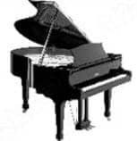
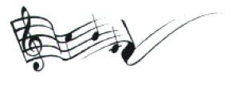

BİRİNCİ BÖLÜM

Dönüş
Z aman, içinde yaşadığımız bir akarsudur, bizi alıp ya ileriye doğru götürür ya da boğup öldürür, diye yazdı Ayşe, tezinin masanın üstüne dağılmış sayfalarından birinin yan boşluğuna. Bu sözün bir yerden mi aklında kaldığına yoksa kendi görüşü mü olduğuna karar veremedi ama önemi yoktu. Zaman; olaylar, adlar, tarihler ve ayrımlarla, varlığını durmadan hatırlatarak karşı konulmaz ama basit bir biçimde akıyordu. İnsanın kendini bu akışa karşı savunmasının yolu yoktu.
Az önce lavabonun aynasında gözlerinin çevresinde oluşmaya başlayan ilk çizgileri keşfetmişti. Parmağını yazdığı cümleyi oluşturan harflerin üzerinde gezdirdi, sözcüklerin elinin altında yumuşayıp solduklarını gördü.
Tez hocasının fakültedeki odasındaydı. Gereksiz büyüklükteki pencereden bahçenin bir bölümü görünüyordu. Puslu, gri bir gün. Kendini işine verdiği böyle günlerin öğleden sonraları daha çabuk geçiyordu. Az önce kütüphaneden dönmüştü. “Medya ve Popüler Kültür” konulu çalışması için belge toplamak zor değildi ama yazmak sıkıcı ve yorucuydu. Bildik şeylerin gündelikten çıkıp hayatın bütün alanlarını içine alacak biçimde dallanıp budaklanması bu işin üstesinden gelip gelemeyeceği konusunda kuşkular uyandırıyordu kafasında. Er geç olacaktı, biliyordu; kaygısı, bilinen bir konuda yazmanın kolaylığıydı. Baş etmesi gereken buydu. Üstelik bu tür çalışmalar yaratıcılığa imkân vermiyordu. Veriler elinin altındaydı ama sonuç olarak özgün, yeni bir şey çıkmayacaktı ortaya. Vazgeçmeme nedeni ise hocasıydı: Necla Güneren.
Amatör bir Türk sanat müziği topluluğundan tanışıyorlardı onunla. Önceki yıl ayda ya da on beş günde bir uygun bir lokalde toplanıp müzik yapıyorlardı. Daha küçük grupların bazen evlerde de bir araya geldiği oluyordu. O sıralar pek samimiyetleri yoktu ama her nasılsa bu zarif kadının ilgisini çekmiş, ısrar ve desteğiyle fakültede görev almıştı. Birlikte çalışmaya başladıktan sonra ise birbirlerini sevmişlerdi. Aralarında incelikli bir bağ vardı. Doktora yapması için ısrar eden, tez konusunu belirleyen de Necla’ydı. Ayşe, kendisine yerinde saymama şansı veren, gelecek için umut kapısı açan bu kadına büyük saygı duyuyordu.
Umut? Bir yere kadar tabii. Necla’nın da aşamadığı engeller vardı çünkü. Kurum öteden beri sağ yapılanmaların kalesi olmuştu. Asıl sorun ise yeteneksiz hırslıların köşe başlarını kaptığı ortamda iyi ve temiz kalmaktı.
Gölgesiz, içten, art niyetsizdi Necla ve doğal olarak bu tavır Ayşe’ye de yansıyordu. Tıpkı onun gibi açık sözlü, boyun eğmez ve hakkını savunmada inatçıydı. Yetenek ve çalışkanlığın değil, siyaset ve grup çıkarlarının gözetildiği bir devlet üniversitesinde geri plana itilmeye razı olmayan, öğrenciler tarafından sevilen bir yardımcı bulmak kolay değildi. Dedikodu, ayak kaydırma oyunları ve küçük hesaplar peşinde koşanların bir kısmı iki yüzlü ve itici, çoğunluğu ise memur ruhlu ve korkaktılar.
Saatine, bileğinde ileriye doğru akmayı sürdüren zamana baktı. O gece Necla’larda toplanacaklardı. Çıkması, eve gidip hazırlanması gerekiyordu. Saçı kirli, yüzü solgundu, üstünde bolarmış bir kot, boğazını sıkan bir kazak vardı. Aslında böyle de gidebilirdi, amaç eğlenmek, dinlenmekti ama toparlanacak zamanı vardı.
Bir uçağın gökyüzünü boydan boya geçtiğini duydu. Aynı anda Necla girdi odaya.
“Sen hâlâ burada mısın?”
“Birazdan çıkıyorum. Bir şey soracaktım, sizi bekledim.”
“Tamam, birlikte çıkarız. Bu dağınıklık da ne böyle... Neydi soru?”
“Şimdi toplarım hocam, özür dilerim. Popüler kültür alanının siyasetle doğrudan bağlantısı. Yani buna ne ölçüde girmeliyim?”
“Verilerden hareket et. Bunu sonra daha uzun konuşuruz. Bir an önce evde olmalıyım. Sizleri aç bırakmak istemem...”
Necla ve kocası Burhan’ın evleri hem şehir dışında hem de geniş olduğundan son zamanlarda yeğleniyordu. Büyük gruptan kopmuşlardı. En çok altı-yedi kişi bir araya gelip yemek yiyor, çalıp söylüyorlardı. Araya yaz girdiği için çoktandır birlikte olmamışlardı.
“Hocam, isterseniz sizinle gelip yardım edeyim,” dedi Ayşe. Necla, iri mavi gözlerini masanın üstüne dağılmış kâğıtları toplayan Ayşe’ye dikerek baktı.
“Ben hallederim. Sen gidip giyin, süslen biraz. Pek sefil görünüyorsun,” dedi. “Unutma assolistimiz sensin...”
“Biliyorsunuz, evde tadilat başlayacak, toplanıyorum,” dedi Ayşe. “Kendimi okula dar attım bugün. Böyle gelsem olur mu? Nasıl olsa biz bize olacağız. Sevim Hanımlar, siz, ben. Öyle değil mi? ”
“Öyleydi ama sürpriz bir konuk daha katıldı aramıza. Eski bir aile dostu, yurtdışından yeni döndü. Burhan bu gece Ankara’da kalacağını öğrenince onu da davet etmiş. Tanınmış bir ekonomist. Değerli biri. ”
“Anladım. Protokol... ”
“Yok yaa, abartma. Cihan yabancı değil. Otuz yıllık arkadaşımız. Siyasal’da birlikteydik. Kendisini çok severim, kaliteli, candan biridir. Hadi fırla, en azından üç saatin var. Git saçını tarat. Burhan’a telefon ederim, seni de alır eve dönerken.”
“Konuğunuz bizden, hüzünlü şarkılarımızdan bayıp sıkılmaz mı?”
“Sanmıyorum, müziğin her türünü sever. Türkiye’ye geldikçe görüşüyoruz. Son üç yılda zevkleri değiştiyse bilemem tabii...”
“Umarım değişmemiştir.”
Birlikte çıktılar. Otoparka kadar konuşa konuşa yürüdüler. Hava büsbütün kapanmıştı. Ayşe de öyle. Şu Cihan denen adam, ya ukalâ, kendini beğenmiş biriyse...
“İsterseniz ben gelmeyeyim,” dedi Necla’ya. “Eski dostunuzla yalnız kalmak istersiniz belki. Aranıza girmeyeyim. ”
Necla durdu. Ayşe’ye abes bir şey söylemiş gibi baktı.
“İletişimcisin, çekingen değilsin, tersine birçok konuda cesur ve ataksın. Sakınmana gerek yok,” dedi. “Adam yaşını başını almış, yalnız, alçakgönüllü, hoş birisi. Onu seveceğinden eminim. En küçük bir kaygım olsa, sana gelme derim. Hadi keyfimizi bozma, tamam mı?”
Arabayı çalıştırmadan önce kocasını aradı. Çalıştırdığı restorandan yemek siparişi verdi. Geçerken Ayşe’yi evinden almasını rica etti. Tatlılıkla konuşuyordu: Tamam sevgilim, o da olur, sana bırakıyorum... Ayşe Kız yanımda... Tamam bir tanem yedide...
Burhan, birkaç ay önce, Necla yazlıktayken, restoranın işletme müdürü olan genç kadına ilgi duymuş ama kendini çabuk toparlamıştı. Necla onun zamanı tersine çevirip yirmi yıl önceye dönme arzusunun aptalca bir hevesten başka bir şey olmadığını söylemişti Ayşe’ye. Biraz gücenmiş ama üzülmekten çok siniri bozulmuştu. Kendini tek eşliliğe uydurmuş bir kadındı. Delil yetersizliği nedeniyle kocasının suçsuzluğuna hükmederken de sevildiğinden emindi. Öte yandan böyle şeyleri kurcalayıp kahredecek vakti yoktu. Çok meşguldü işiyle, dünyayla. Giderse gider ne yapalım. Gülünç olmak istiyorsa kendi bileceği iş!
Ayşe, bu güzel, akıllı kadını tanımanın ve onunla çalışmanın kendisi için büyük şans olduğunu düşündü. Onun yalnızca öğrencisi değil, aralarındaki konum ve yaş farkına rağmen, arkadaşı, sırdaşıydı ve hayat bilgisinden yararlanıyordu. Keşke böyle bir annem olsaydı, diye düşündü bir kez daha.
Kuaförün içi saç boyası, ıslak havlu ve çam spreyi kokuyordu. Kalabalık değildi. Bir koltuğa kurulup aynaya baktı. Aynayı çevreleyen tiyatro kulislerindeki gibi küçük yuvarlak ampuller insanı güzelleştiren bir ışık veriyorlardı. Ayşe kendini hem güzel hem de özgür hissetti. Bir süre önce hayatından attığı adamı düşündü. Kendisini bir kadın, bir insan olarak önemsiz, anlamsız kılan bu ilişkiyi bitirebildiği için sevindi. En basit nezaket kurallarını bile yerine getirmekten aciz o adama katlanamaz olmuştu sonunda. İnsanı akşam yemeğine götürüp çıkışta gece tek başına taksiye binmesine izin veren, çiçek almayan, yaptığı yemeği yemeyen, şarkı söyleyemediği gibi sevdiği müziği hor gören, kusur üstüne kusur işleyip gece yarıları telefonda ağlayarak af dileyen terbiyesiz bir adam... istemiyordu.
Saçını fönleyen çocuğun eline uyarak başını o yana bu yana, en son öne eğdi. Saçları karıştırılırken uysalca bekledi ve sonra başını geri attı. Yumuşacık, açık kumral, uçları başak sarısı saç yığını, rüzgârda dalgalanan ekin tarlalarını çağrıştırdı. Sonra ansızın kendi gözleriyle karşılaştı aynada. Koyu kahve, iri ve derin gözler. Şaşırdı çünkü gözlerinde görünen şey, umutsuzluktu. Bir derdi, sıkıntısı vardı, acı çekiyordu sanki, ya da kendisinde olmayan bir şeyi istediği için öyleydi.
Hatırladı.
Küçükken canı acıyıp ağladığında ya da huysuzluk ettiğinde anneannesi onu kucağına oturtur, neresinin acıdığını, ne istediğini sorardı. Ağlama yavrum, ağlama güzelim, neren acıyor, göster bakayım... Ne istiyorsun, söyle de yapalım...
Anneanneye neresinin acıdığını ya da ne istediğini söyleyemezdi böyle zamanlarda. Acıyan yanını ve istediği şeyin ne olduğunu bilemediği için.
Ekim sabahı, bozkırın altın sarıları ve yumuşak kızıllarıyla yaz olgunluğunu yaşıyordu. Her şey duru bir ışıkta titreşiyor, güneşte ısınmış kır ve gübre kokusu dalgalanıyordu havada. Yurt kokusu, hep özlediği o baş döndürücü, sıcak koku...
Cihan, açık büfeden tabağına kahvaltılık alarak koruluğa bakan bir masaya oturdu. Otelin tropik bitkilerle süslü terasındaki beyaz örtülü masaların çoğu boştu henüz. Garsondan kahve ve portakal suyu istedi.
Tatlı bir havailik vardı üstünde. Dün akşam kadim dostları Necla ile Burhan’ın evinde hoş bir gece geçirmişti. Rahat, zevkle seçilmiş eşya, yumuşak ışıklar, lezzetli yemekler, canlı müzik ve sevimli insanlar. Bu sabah, içi içine sığmaz halde uyanmış, yattığı yerde başka bir zaman dilimini, yalın neşe ve cinselliği, bir kadının ateşli şefkatini özlemişti. Çok yıldızlı otel odalarına sinen gizli müstehcenliğin bastırılmış duyguları kışkırttığını biliyordu ama bir parça da duygusallık eklenmişti buna.
Hafif alaycı, değer biçen, ulaşılması zor bir gülümseyiş gelip geçti belleğinden. Siyah, hülyalı gözler geçti. Paniğe benzer bir telaş duydu içinde. Gözlerini yumdu, bir an kendini gökyüzüne uçarken gördü. Ah, bedenin şu zihinsel saplantıları, başka bir bedene olan tükenmez ihtiyacı!
Burhan iktisattan sınıf arkadaşıydı. Okul dışında da birlikteydiler o zamanlar. Haftalık bir siyasi dergi çevresinde demokratik devrimi savunan bir grubun üyesiydiler. Necla sonradan Burhan’ın sevgilisi olarak katılmıştı aralarına. Otuz yıldır tanıyordu onları. Darbeden sonra Cihan yurtdışına gitmiş ancak ilişkileri kopmamıştı. Cihan Türkiye’ye, onlar İngiltere’ye geldiklerinde birlikte oluyor, yazışıyorlardı. Zor gün dostlarıydılar.
Burhan birkaç yıldır restoran işletmeciği yapıyor, parayla, borsayla ilgileniyordu. Yeni para düzeninin hoyrat pençesi ona da uzanmış, az çok bilinç ve boyut değişimine uğramıştı. Hızlı bir tempo içinde ilerliyordu. Hiçbir zaman sıradanlığa gönül indirmemiş olan Necla ise derinliğini korumaktaydı. Genç yaşta kariyer yapmış ama kimileri gibi “memur profesör” olmamıştı. Sohbeti her zamanki gibi doyurucu, neşesi gönül açıcıydı.
Gecenin öteki konukları, Necla’nın çalıştığı üniversitede doktora öğrencisi olan iletişimci genç bir kadın ve sigorta işiyle uğraşan orta yaşlı bir karı kocaydı. Burhan önceden telefonda söz etmişti onlardan: Tatlı insanlardır, seveceksin. Hep birlikte şöyle rakılı, alaturkalı bir geceye ne dersin? – Özledim, derim...
Yirmi beş yıl boyunca, hiçbir şeyin hiçbir zaman sütliman olmadığı bu çileli ülkenin hasretini çekmişti. Sonunda özlemin kandıran ruhu geri çağırmıştı onu ve mesleğinin en parlak döneminde dönüp gelmişti. Ne olursa olsun, kendini karmaşanın bir parçası gibi hissetmek, acısını çektiği boşluğu dolduruyordu. Elbette kaygısız değildi, hâlâ belirsizliğin hâkim olduğu bir ülkede, farklı bir hayat bekliyordu onu.
Burhan ve Necla ile 80 darbesinin sıkıyönetim günlerinde paşa fıkralarıyla sıkıntı giderdikleri sayısız akşam geçirmişlerdi. Olayları hafife aldıklarından değil, düş kırıklıklarını ve yüklü bir kederi saklamak için. Evlerde, alçak gönüllü sofralarda içip dertleşmişler, ağlaşıp gülmüşlerdi.
Dertler, tasalar biçim değiştirmiş ve üzerlerine pekişmiş bir çaresizlik bulutu çökmüş olsa da dün akşam da yurtiçi, yurtdışı siyaset, ekonomi, geçmiş gelecek, olmuş olacak birçok şey konuşmuşlardı. O sofrada birlikte olan insanlar her şeye rağmen muhalif ruhlarını koruyorlardı. Önemliydi bu, çünkü kendi dönemlerinin en hızlı devrimcileri sözde liberal aydınlar safına geçmişti. Siyaset hâlâ keskin, ayrışıktı. Asıl sorun ise siyasi gücün dolambaçlı yollar ve ilişkilerle hedefe varma yönteminin liberal anlayışa aykırılığıydı.
Cihan, özenmişti Burhan’la Necla’nın ortak hayatlarına. Görmüş geçirmiş tutarlı bir evlilikleri, iki yetişkin çocukları ve huzurlu bir birliktelikleri vardı. Oysa kendisi kariyerinde hayal ettiğinden daha yüksek bir yere ulaşmış olsa da derli toplu bir düzen, doyurucu bir sevgi ilişkisi kuramamıştı. Onca yıldan elinde kala kala bir oğul kalmıştı ki o da annesine, eski karısına aitti daha çok. Baba oğul ilişkisi bakımından ilerleme kaydedememişlerdi. Özel alan konu olduğunda ilerlemenin ne anlam taşıdığını da bilmiyordu açıkçası.
Masadakilerin hepsi alaturka müziği seviyorlardı ve sık sık bir araya gelerek çalıp söylemekten zevk alıyorlardı. Cihan, bu tür oluşumların Ankara gibi sıkıcı bir şehirde yaygın olduğunu biliyordu. Gençlik yıllarında, klasik batı müziği eğitimi aldığı halde, çalıştığı kültür derneğindeki kurslara da katılmıştı bir ara. Özellikle Dede Efendi’yi beğenirdi. Yaşadığı çağda, batı müziğinden etkilenerek bestelediği şarkılar piyasa müziği olarak görülmüştü söylentiye göre ama zengin melodik yapılarıyla kalıcıydılar.
Sigortacı Müşfik Bey kanun çalıyor, karısı ise şarkı söylüyordu. Tuhaf olan Sevim Hanım’ın müziği bilmesi ama güftelerde takılmasıydı. Neyse ki kocası sözlerin tümünü biliyor, ona sufle ediyordu. Birbirini tamamlayan çift olmak böyle bir şeydi belki de!
Cihan’ın ilgi odağında ise Necla’nın üniversitede birlikte çalıştığı iletişimci vardı. Otuzlarında görünen genç kadın çekiciydi, güzel konuşuyordu ve biraz yırtıcıydı. Kedi gibi. Daha önce devlet televizyonunda programcı olarak çalışmış, iktidarın kadrolaşma hesapları nedeniyle dışlanınca üniversiteye geçmişti. Onunla, iki aşırı özgüven malûlü dilbaz aynı masaya düştüğünde hep olduğu gibi başlangıçta epeyce didişmişlerdi. Biraz da alkolün etkisiyle, ama hoşlanarak üstüne varmış, kışkırtmıştı kızı Cihan. O çaylak da sınandığı duygusuna kapıldığı ya da altta kalmayı gururuna yediremediği için Deleuze’den Dali’ye masaya boca etmişti bütün birikimini.
Tatlıydı hınzır, sarışın dişi kedi!
Öyle ki tuzağa düşüp dostlarının gözü önünde, entelektüel bir flörte girişmekten kaçamamıştı Cihan. Hoş, onlar da sıkılmış görünmüyorlardı. Özellikle Necla hoşnuttu durumdan. Arada bir kılçık atıp kızıştırıyordu kapışmayı. Ötekilerse biraz şaşırmış olsalar da kimi anlarda sertleşen tartışmayı ilgiyle izliyor, bazen yerli yersiz araya girerek katkıda bulunuyorlardı. Müşfik Bey kanunu eline alıp kararlı biçimde rast peşrevine girişmese sürüp gidecekti tartışma.
Ondan sonra gece, Dede Efendi’den Münir Nurettin’e, Tatyos Efendi’den Sadettin Kaynak’a; incecik hüzünlerle, coşkulu kederler ve uçuk neşelerle, ama hep aşkın imkânsızlığını vurgulayan şarkılarla uzayıp gitti. Cihan çok azını duyduğu ve ancak birkaçını bildiği bu şarkıları dinlerken yalnız, ihmal edilmiş, bırakılmış ve kalbi kırık hissediyordu kendini.
Sonra o genç kadın, Ayşe’ydi adı, şarkı söylemeye başladığında beklemediği biçimde ve derinden sarsıldı Cihan. Kız güzel söylüyordu. Sesi, yorumu, seçtiği şarkı olağanüstüydü. Beste değişken, güfte vurucuydu. Sen Şarkı Söylediğin Zaman... diye başlayıp biten eserin sözlerini tam olarak bilmiyordu ama devam ettiği süre içinde söyleyeni olduğu kadar, dinleyeni de değiştiren bu zor şarkıyı yıllar önce ilk kez, başka birinden de dinlemiş, yansıttığı duyguyu yüreğinde hissetmişti.
Geçmişle şimdi arasında bir yerlerde durarak, otuz yıl önceki duygulara kapılarak dinledi şarkıyı. Aynı bilinmezliği, sızıyı, tedirginliği hissediyor, müziğin esintisiyle zamanın içinde sürükleniyordu.
Şarkı bittiğinde önce Necla’ya, sonra sofradakilere göz atan ve en son kendisine bakıp gülümseyen genç kadının dolmuş, ışıl ışıl gözleriyle karşılaştığında, küllenmiş bir ateşin kendi kendine parlamasına benzer ani bir ışıltıyla doldu Cihan’ın içi. Belirsizleşen zamandan hızla geri döndü ve yoğun bir arzu duydu.
Çatal bıçak sesleri, suskunluk, kararsızlık. Kısa bir an birbirlerine bakmayı sürdürdüler ve tenin özenli, nazik, tekinsiz çağrısını duydular. Cihan genç kadının bluzunun altındaki tatlı, akışkan bedeninin buğusunu hissetti. Karanlığa dalmak, kendini ona teslim etmek, silinmek, adını unutmak istedi.
Konuşabilecek duruma geldiğinde eğitim almayan birinin bu şarkıyı okuyabilmesinin kolay olmadığını söyledi. Alanı iletişim olan biri için bu kadar usta bir yorum şaşırtıcıydı.
“Müzik çok etkili bir iletişim biçimi,” dedi Ayşe. “Ama kuşkusuz eğitim aldım. Konservatuarda okudum.”
“Piyano da çalıyor,” dedi Necla. “On parmağında on hüner!”
“Şarkı da muhteşemdir,” dedi, Müşfik Bey...
“Bir şarkı daha, lütfen,” dedi karısı...
Gece sık sık şarkılarla kesilerek sürüp giderken Cihan coşkulu, içtenlikli bir biçimde katıldı ortamın havasına. Bilmediler kadrimi, ucuz pahaya sattılar... Küçük şakalar yapıyor, bildiği şarkılara eşlik ediyor, ara sıra unuttuğu bir şeyi hatırlamaya çalışıyormuş gibi bakıyordu Ayşe’ye. Bu güzel, duyarlı, etkileyici kadını hafifsediği için üzülmüştü, gönlünü almaya çalışıyordu.
Heyecanı oteline döndükten sonra da sürdü. Bir türlü derinleşmeyen uykusundan ikide bir uyanarak genç kadının baştan çıkarıcı gülüşünü, derin dekolteli bluzunun açıkta bıraktığı uzun, beyaz boynunun ışıltısını, yerinde duramayan ellerini görüyordu. Sonra, onun şarkı söylemeye başladığı zamanki değişimini: Hülyalara dalıp yumuşayan bakışlar, iklimi değişen beden, erişilebilir hale gelen savunmasız güzellik ve masanın üstündeki yalnız eller.
Kalkıp meyve ve yoğurt aldı büfeden. Dün akşam az yemiş, çok içmişti. Ufka doğru baktı. Gün yükseliyordu. Ayşe’yi bir daha görebilecek miydi? Görürse nereye doğru gidecek, daha doğrusu sürüklenecekti? Güzellik değildi onu etkileyen. Başka bir şey, daha gizemli ve bütüncül bir duyguydu. Masasına dönerken bir imge uyandı zihninde. Ayşe, birini çağrıştırıyordu ona. Fiziksel benzerlikten çok bir esintiydi bu. Konuşması, jestleri, sinirlenince gözlerini kısarak bakışı, arada bir dalgınlaşıp ortamdan uzaklaşır görünmesi ancak hiçbir ayrıntıyı kaçırmaması. Sonra o sabırsız söz kesmeleri... Bütün bunlar hiç yabancı gelmiyordu Cihan’a. Bazı insanları tanımadan tanıyormuşuz duygusuna kapılırız ya, öyle bir şey! Ya o şarkı... Ayşe’nin hafif pes, dokunaklı sesi gizli ve sınırsız bir yerlerden kulağına ulaşıyordu hâlâ.
Çoktandır dün geceki kadar güzel sarhoş olmamıştı.
Huzurlu, uzun uyuyacağını sanmıştı yatarken oysa sabah erkenden acelesi varmış, bir yere yetişecekmiş telâşıyla uyandı, hem ayılmak hem de bulunduğu yeri keşfetmek için kahvaltı öncesi çevrede yarım saat kadar yürüdü.
Üniversite çok geniş bir alana yayılmıştı. Bir zamanlar bozkır olan yerde modern bir kent kurmuşlardı. Özenli yapılar, koruluklar, spor ve dinlenme alanları, çarşılar, fakülte, yurt ve lojman binaları, kütüphane, görkemli bir otel... Kısacası dünyadaki ünlü örneklerini aratmayan bu yüzden de daha çok parası olanların girebildiği seçkin bir eğitim kurumu.
Dünkü görüşmelerinde rektör, başarılı öğrencilere belli oranda burs verdiklerini söylemişti. Seçme portakallar... Hiç yoktan iyiydi elbette. Kendi gençliğinde imkânlar, özellikle de ortam çok zorluydu. Yüksek lisans yapabilmek ve yurtdışına gidebilmek için olağanüstü gayret göstermişti.
Bir yığın yıkık dökük anı, yarım kalmış bir aşk, umutsuzluk ve acı bırakmıştı ardında giderken. Zulme uğramış arkadaşlarını, karanlık cinayetleri, tank ve postallar altında ezilmiş bir ülkeyi bırakmıştı. Bugünse o yangından kaçabilmek için gösterdiği kararlılıktan sıkıntı duyuyordu.
Yürüyüşten sonra otelin havuzunda yüzerken o yokluk, kavga ve kıyım günlerini hatırladı ve hemen kafasından atmak istedi. Kalıp mücadele etmeyi değil, terk etmeyi seçmişti sonuç olarak. Eski çevresinden kimi radikallerin suçlamalarına hedef olmuştu ama dayanaksız şeylerdi bunlar. Dışarıdan bakarak başkaları hakkında yargıya varmak, bugünle kolayca uzlaşanların işine geliyordu ve ne olursa olsun faşizm içeriyordu. Gidişinin tek nedeni o yılların Türkiye’sinde önünün kapalı olduğuna inanmasıydı.
Yürümek, ardından yüzmek iyi gelmişti. Kahvesini içerken dingin, diri hissetti kendini. Çok içtiği akşamların sabahında kulağının arkasına yapışan o tatsız uğultu yerine hoş bir hafiflik vardı başında. Boşalan yoğurt kâsesini ileri itti. Elini gömlek yakasının altına sokarak traş olurken boynunda açtığı, küçük kesiği yokladı, kaşınıyordu. Kanı durdurmak için yaraya yapıştırdığı minik kâğıdı çıkarıp attı. Dikkatsizlik değildi. Tepeden gelen parlak ışıkta, sertleşmiş yüz hatlarını, ak düşmüş şakaklarını, çökmüş göz altlarını gördüğü ve kendini tehlikeli bir noktada hissettiği o boşluk anında eli biraz titremişti.
Şu yeni tip ucuz ışıklar yüzünden. Tasarruf amacıyla insanları bu kadar çirkin göstermek haksızlıktı doğrusu. Yoksa görünüşünü dert etmesi için neden yoktu. Bedeni dik, ince uzundu hâlâ. Canlı, keskin bakışları, sıcak, kendine özgü gülüşüyle kadınların hoşuna gittiğinin farkındaydı. Ayşe’den etkilenmişti ama yaşına karşın o da etkilemişti o gencecik kadını. Gecenin sonunda, kapı önünde Burhan’ın ayarladığı arabaya binerken Ayşe durup omzunun üstünden Cihan’a yakıcı bir bakış daha atmıştı. Bu bakış hedefine varmıştı, mahrem ve tutkuluydu çünkü. Böyle bir bakışmanın nelere yol açabileceğini biliyordu Cihan, bilmediği yaşanacaklara ne kadar hazır olduğuydu.
Eğreti hayatını değiştirme, Türkiye’ye yerleşip kalıcı bir düzen kurma arzusunu iki yıldır erteliyordu. Sonra mayısta elli yaşına girdiği ve London School of Economics’deki sözleşmesi bittiği günlerde bu tasarı hızla somutlaştı, boğazını sıkar hale geldi. Sözleşmesini yenilemeyip önerileri reddetti ve valizini toplayıp İstanbul’a attı kapağı. Yaz başından beri Türkiye’deydi. Kendi toprağında ölmek, boş söz değildi. Dönmekte geç bile kalmıştı.
Yaz aylarını doğduğu kasabada, zeytin ağaçları içinden denize bakan baba evinde tek başına geçirmişti. Yazlıktan döndüğünden beri Cihangir’de kiraladığı mobilyalı küçük bir dairede kalıyor ve kendine yeni bir ev kurmak için acele etmiyordu.
Ankara’ya, üniversitenin düzenlediği sempozyuma katılmak için gelmişti. Eski arkadaşı olan rektör, öğretim üyesi olarak görev almasında ısrarcıydı. Cihan’ın niyeti ise İstanbul’a yerleşmek, kitaplarını yazmak ve bir-iki şirkete danışmanlık yapmaktı. Uluslararası bazı komisyonlardaki görevlerini de sürdürecekti bu arada. Yurtdışında tanınan, bilinen bir ekonomist için Ankara, belli çevrelerde görünüp kendini hatırlatmaya yeterince elverişli bir kent değildi ancak geçiş dönemi için sakin bir liman da olabilirdi. Görevi kabul ederse kendisine kampus içinde bir lojman vereceklerdi ayrıca. Kararsızdı. Rektörle yeniden konuşacaktı.
Bugün, sempozyumun öğleden önceki oturumunda bir konuşma yapacaktı. İki konuşmacı daha vardı. Biri bir televizyon kanalında program yapan ağzı kalabalık bir piyasacı, öteki ise gerçekçi ama sıkıcı ölçüde kuramcı bir bilim adamıydı. Toplumsal ekonomi üzerine en yetkin, cesur ve renkli üslûba sahip olan -herhalde- kendisiydi.
Döndüğü duyulmuştu, gazete ve TV’lerden arayanlar vardı.
Yeni yıla, 2008’e girilirken ekonomik gelişmeler kaygı vericiydi ve piyasalar dünya genelinde bir olumsuzluğun izini sürüyordu. Şiddetli çekilme başlamıştı gerçekte, kriz patlamak üzereydi. Geçen hafta Brüksel’de, ekonomi kulislerinde konuşulan tek konu buydu. Ağzını açıp felaket tellallığı yapacak değildi elbette. Konuşmasında meraklı basından çok öğrencilerin ilgisini çekecek konulara değinecek ve ekonomik tıkanmaların toplumsal sonuçlarından söz edecekti.
Çayını içerek konuşma notlarını gözden geçirirken telefonu çaldı. Kendisini salona götürecek aracın sürücüsü aşağıda bekliyordu. Çantasını toplayıp kalktı. Karşısındaki topluluğu görmeden, konuşmasının nasıl bir seyir izleyeceğini öngöremiyordu. Kimi zaman coşuyor, kimi zaman da isteksizliğe kapılıyordu. Merdivenlerden inerken hatırladı. Necla, bir zamanlar enstitü iken, Cihan’ın müzik okumuş olduğu, yakındaki bir devlet üniversitesinde çalışıyordu. Konuşmasını dinlemeye gelecekti. Peki Ayşe? O güzel şarkıcı kedi de katılacak mıydı ona acaba?

Ayşe, yorganı koltukaltlarına kıstırıp sırtüstü döndü. Sigara ve toz kokuyordu çarşaflar. Sabah dersi yoktu, on dakika daha yatabilirdi. Gün ışırken yatmış, çok az uyumuştu. Dün gece eve döndükten sonra kafasını karıştıran, daha beteri, onu çarpan adamın hayalini silip atmak için bütün gece darmadağın evin içinde çılgın gibi dolanıp durmuş, hatta on gün önce bıraktığı sigaraya yeniden sarılmıştı.
Aman Allahım! Hem sevinçliydi hem korkuyordu. Cihan’a bakarken Necla’nın söz ettiği adam bu olamaz, diye düşünmüştü dün gece. Kendisine, yeniden yaratmaya çalışıyormuş gibi bakan o adam, ‘yaşını başını almış, kendi halinde, yalnız bir adamcağız’a hiç benzemiyordu. Tersine. Feleğin çemberinden geçmiş... neyse işte! Alt üst olmuştu Ayşe. Kendini şişeye düşüp ters dönmüş böcek gibi hissediyordu.
Cihan Köklü, daha salon kapısında göründüğü an, kendi oturduğu yöne doğru yürüyen, gözlük camlarının ardında gözleri kıvılcımlanan adama bakarak anında anlamıştı bir felaket’in yaklaşmakta olduğunu. Kalp atışları hızlanmış, soluğu daralmıştı birden. Bir şey, başıma bir şey geliyor!
Neydi, nesine takılmıştı? Duruşuna, bakışına, el sıkışına mı? Sonra sesine, konuşmasına, zekâsına mı, gülüşüne mi? Boşuna! Bir erkeğin etkisine böylesine girmiş, aşka düşmüş birinin sıfırlanmış mantığıyla yanıtlanamazdı böyle sorular.
Necla, Cihan gelmeden önce kısaca söz etmişti ondan. Çok değerli, duyarlı ama kendine has -ne demekse- bir adamdı. Daha sofraya oturmadan belli etmeden izlemişti Ayşe onu. Genç değildi ama yaşlı da sayılmazdı kesinlikle. Düşünce ve deneyimlerin olgunlaştırdığı bir yüzü vardı. Aslında hiç genç olmamış, her zaman bu görünümdeymiş gibi gelmişti Ayşe’ye. Buğday teni konuşurken ışıldıyor, heyecanlandığında matlaşıyordu. Necla Hanım’ın sözleri de etkili olmuştu biraz belki ama adamın kalitesi su götürmezdi. Ne de olsa önemli bir kişilikti.
Ayşe bu uluslararası(!) kimlik ve kişilik karşısında daha baştan savunma konumu almış, doğal olarak karşı taraf da saldırıya geçmişti. Hesaplanmış tavırlar değildi bunlar. Masada karşı karşıya oturdukları an elle tutulur bir gerilim doğmuştu aralarında. Cinselliğe dayalı bir inatlaşma, acil olarak birbirlerine ulaşmanın imkânsızlığından ileri gelen karşılıklı hırçınlık. Gagalar didikliyor, tüyler havada uçuşuyordu. Diller ilgisiz, bambaşka sözler söylüyordu ama aralarında su gibi akıp gidiyordu denk düşen arzu akımları.
/C: Ne istiyorsun benden?
A: Niye beni böylesine kendine çekiyorsun?
C. Ya sen?
A: Bilerek isteyerek yapmıyorum.
C: Neden böyle hissediyorum öyleyse?
A: Ya ben?
C: Aşk arıyorsun. Zeki ve bilgili, aynı zamanda duygusal ve toysun!
A: Önyargılısın...
C: Sana göre değilim, görmüyor musun?
A: Kendini çözülecek bir yumak gibi göstermek istiyorsun...
C: Öyleyim.
A: Seni bir hamlede söker açarım!
C: Dene de gör! /
Yüzü alev yanıyor, öfkeleniyordu o zaman Ayşe.
“Alçak- yüksek sanat tartışması entelektüellere ait bir tartışmadır. Çünkü ne olmuştur sonuçta... Pop art gündelik nesne ve görüntüleri yüksek sanatın içine sokmuştur! Beatles rock ve pop tınılı alt sınıfın müziğini küresel müzik haline getirmiştir! “
“Bir dakika... Orda duralım Ayşe Hanım. Beatles klasik kabul ediliyor olsa da çağdaş müzikte yeri yoktur ve asla olmayacaktır...”
Süt şişesine düşmüş minik böcek! Ayşecik!
Yatağın içinde oturup odaya göz gezdirdi. Konsolun üstünde kutular, yatağın yanı başında çamaşır torbaları, ayakkabılar vardı. Dolap kapakları açıktı, giysileri askılarıyla, bir koltuğun üstüne tepeleme yığılmıştı. Evin altı üstüne gelmişti. Banyo ve mutfak değişecek, yer döşemeleri sökülüp su tesisatı elden geçecek, kapılar ve doğramalar yenilenecekti. Bu arada ayıklanıp atılması gereken bir yığın gereksiz eşya ve döküntü vardı evin içinde. Her delikten, her kovuktan bir şeyler çıkıyor, Ayşe iki gündür çöp bidonuyla ev arasında gidip geliyordu. Eski giysiler sandıklardan taşıyor, dolap diplerinden yıllardır kullanılmayan ıvır zıvır dökülüyor, dedesinin biriktirdiği gazete tomarları tavanlara yükseliyordu. Kırk yıllık birikim...
Kendini bildi bileli bu evde oturuyordu. Bahçe içinde, iki katlı, yapıldığı zamanın anlayışına göre kullanışlı ve geniş bir daireydi ama artık her yanı dökülüyor, organları tekliyor, elden geçirilip hayata döndürülmesi gerekiyordu.
İş onun başına kalmıştı. Konu dedesinin zamanından beri gündemdeydi. O ansızın geçirdiği beyin kanaması sonucu ölünce beş yıl ileri atılmış, anneannesinin yakınmalarıyla geçen ikinci beş yıldan sonra, tam para denkleştirilip işe başlanacakken bu kez kadıncağızın hastalığı girmişti araya. Bir ölüm daha ve sonra bir yıl daha. Yılan hikâyesi. Güçlük, evi boşaltmak, geçici olarak başka bir yerde kalmak zorunda oluşuydu. En az bir ay sürecekti iş Bu sırada kirasına ortak olarak yalnız yaşayan bir kız arkadaşının yanında kalacaktı Ayşe.
Bunca sıkıntıya değmezdi belki, evi satabilir ya da kiraya verip yeni yapılmış dev bloklardan birinde bir daireye taşınabilirdi. Gelişmeye, koşullara, farklı bir yaşam biçimine geçebilir, hayatının gidişatını değiştirmeyi umabilirdi ama... -hayır asla- evin konumu çok iyiydi. Eskinin bu seçkin semti yaşamaya uygun, huzurlu bir yerdi, seviyordu Ayşe buraları.
Üniversitelere yakın olduğundan semt son yıllarda bir öğrenci yerleşimine dönüşmüştü. Yaşlılar, Ankara çevresinde yapılan yeni bahçeli evlere taşınmışlardı, -Necla gibi. Eski evlerini satıyor ya da öğrencilere kiralıyorlardı. Ama Ayşe’nin durmadan değişen kiracıların kırık dökükleriyle uğraşacak hali yoktu. Ev toparlanıp parlatılınca güzel olacaktı. Üstelik her yere, en önemlisi işine yakındı.
Eski eşyanın çoğunu atacak, atılmayanları dağıtacaktı. Hatırlamaktan tat alacağı, özleyeceği bir nesne yoktu bu duvarlar arasında. Bir oyuncak, bebeklik patiği, okul defteri, hiçbiri kutsal değildi gözünde. Özel eşyası ve piyanosu dışında ne varsa sallayacaktı. Onlarla birlikte karanlık anılar da zamanın çöplüğünü boylayacaktı, elbette ki en çok buna seviniyordu. Ölümlere, acılara, kayıplara, geçmek bilmez günlere, gecelere tanık olmuş sandalyeler, sehpalar, masalar, tencereler, yılların tozunu yutmuş yatak yorgan... Nesnelerin de ruhu vardı ama ağızları, dilleri yoktu. Yakınamıyorlardı. Sakin ve sessizdiler.
Birden hatırladı, Necla’yla Cihan Köklü’nün konuşmasını dinlemeye gideceklerdi bugün! Hayır, geç kalmış değildi. Konuşma on birdeydi ve saat henüz sekiz buçuktu. Kalkıp yüzünü yıkadı. Aynadaki uykusuz, yorgun yüzünden ürktü. Yoksa gitmese miydi? Bir gece önce ışıltısıyla baştan çıkardığı adama bu halde görünmek doğru muydu? Kim kimi, baştan çıkarmış o da belli değildi aslında ya!
Bir duş yapabilse canlanacaktı, oysa gazı kestirmişti, sıcak su yoktu. Hayır, gitmek zorundaydı. Cihan’a değilse bile Necla Hanım’a ayıp olacaktı.
Yüzüne tonik ve nemlendirici sürdü. Saçını dün taratmıştı, iyiydi. Bir süre salona açılan loş, dağınık holün ortasında ne yapacağını unutmuş halde bekledi.
Anılar deryası. Eskiden kömür sobası hole kurulur, yatarken kapılar açılarak yatak odaları da ısıtılırdı. Anneannesi, dedesinin sigarası yüzünden söylenip durduğu için salon girişine camlı bir kapı yapılmıştı sonradan ve hol işe yaramaz, karanlık bir hücreye dönüşmüştü. Neyse kalkacaktı bu çirkin plastik doğrama. Bu hantal büfe, ayakları aslan pençesi oymalı eşek ölüsü ceviz masa, kitaplıklı kaba saba divan, tarih öncesinden kalma yer karoları...
Hızla odaları dolaştı. Yerlerde ambalaj kartonları, kitap ve CD kolileri duruyordu. Halı ruloları, dergiler, broşürler, temizlik bezleri, kovalar... Her şey ayaklanmış, köhne evden hemen çekip gitmeyi bekliyordu sanki. Karaya oturmuş bu gemide ömürler geçirilmiş, çileler çekilmiş, hayaller kurulmuş, arada bir de her şeye rağmen küçük, tatlı anlar yaşanmıştı. Beş, sekiz onuncu yaş günlerinde anneannenin yaptığı pastanın üstündeki mumlara üflemek gibi şeyler... Ne kadar acıklı, hüzünlüydü o günler Allahım! Nasıl da neşelenmeye zorlanırdı...
Kuytulara saklanmış solgun anılarına, ailenin kalıntılarına bir kez daha göz gezdirdi. Kitaplık kalacaktı. Demir karyola, set üstü fırın, çocuk kitapları, boş defterler, sehpa ve koltukları yoksul öğrencilere destek veren bir eğitim kurumuna bağışlamıştı. Derneğin adamları, dün akşamüzeri telefon ederek eşyayı cumartesi sabahı alabileceklerini bildirmişlerdi. Korumak istediği birkaç parçayı ise alt kattaki tesisatçının bodrumuna indireceklerdi. Kargaşa...
İşin aslı akşamdan beri her şey karmakarışıktı.
Gergindi. Ruh hali normal değildi. Âşık oluyorum, oldum bile, diye düşündü. Dün geceden beri âşığım. Hem de ilk görüşte, hem de kendimden en az yirmi yaş büyük bir adama! Aşk. Neden şimdi? Neden tam da bu işlere girişmişken? Bekleyemez miydi biraz? Kapıya dayandı bir an. Kendini dinledi. Bahçede gugukçuklar ötüyordu alay eder gibi. Âşık oldum. Aşk! Umarım geçer gider...
Koltuğun üstündeki giysi yığınını aceleyle elden geçirdi. Ne giyecekti? Ona dayanılmaz görünmek için ne giymeliydi? Dayanılmaz... Siyah pantolon, beyaz gömlek, ceket. Fazla özenme, doğal ol. Güzelsin zaten, evet güzelsin! Ne oluyor sana böyle? Ansızın tuhaf bir aşka düşmüş birinin ilkel düşünce akışı içindeyim... Yapma, topla kafanı, kendine gel, pişman olabilirsin...
Mutfakta koliler arasında ayak üstü kahve hazırladı. Buzdolabındaki cıvımış domatesleri çöpe attı. Salona geçip camları açtı. Pastırma yazının olağanüstü dinginliğini soludu bir an. Mevsimin son böceklerinin vızıltısı, kuşların kısa, telaşlı ötüşleri geldi kulağına. Nemli otların küflü kokusunu duydu. Bütün duyuları uyanıktı, güçlenmişti... Gözleri daha iyi görüyor, kulakları daha iyi duyuyor, burnu daha iyi koku alıyordu. Bir de evdeki şu karmaşa olmasaydı... Olmasaydı da oturup sessizlik içinde aşka düşüşünün tadını çıkarsaydı ya! Neyse, yarın akşam derli toplu bir evde olacaktı. Peki bu işten, yani bu şişeden nasıl çıkacağım?
Hafif bir makyaj yaptı, saçını tararken evin yenilenmiş halini hayal etti. Açık renklerin hakim olduğu tertemiz, aydınlık bir yuva. Çok az eşya, kitaplıklar, şık bir kanepe, orta puf ve sade bir yatak odası. Basit, rahat şeyler. Hafif ahşap ve cila kokusu... Kapıda Cihan’ı karşılarken gördü kendini... Kanepede diz dize otururlarken, mum ışığında yemek yerlerken ve sonra... Geniş bir yatak almalıydı.
Bıkmıştı, çok bıkmıştı o sefil evden. İnsanın yıllar yılı aynı şehirde, aynı yerde yaşaması sıkıcıydı tabii. Bazen kendini bu şehre ve geçmişine tıkılıp kalmış, sıkı sıkıya bağlanmış hissettiği oluyordu. Ara sıra hayallere kapılıyor, kendine yeni yönler, paraleller, üçgenler, dörtgenler hatta çokgenler çiziyor ve hayatını yeni bir güzergâha çevirmek isteği duyuyordu. Başka bir ülkeye göçmek, değişik bir çevreye girmek, farklı insanlar tanımak. Muhteşem aşklar yaşamak. Kuşkusuz bunları yapabilmek için yırtıcı ve cesur olmak, hayata asılmak gerekiyordu. Oysa o, elindekinin değerini bilen ve acıklı denebilecek ölçüde kendi kendine yeten biriydi.
Uygun bir çanta seçmek için bir zamanlar kendisine ait olmasından hoşnutluk duyduğu odaya girdi. Genelde az ışık alan bu odayı giyinme odası yapacaktı. Eskiden evin dört odasından birinde anneannesi, birinde dedesi yatarlardı. Caddeye bakan büyük oda, oturma ve televizyon odası olarak düzenlenmiş olduğundan kendisine penceresi yan sokağa açılan ve bahçe girişine bakan bu küçük, sevimsiz oda düşmüştü. Mutfağa bitişik salon ise epey zaman yalnızca konuk ağırlanan kapalı bir alan olarak bırakılmış, devasa yemek masası, koyu yeşil koltuk takımı ve yaldızlı bardaklarla dolu büfenin işgali altında tutulmuştu. Anneannesinin son yıllarında yapma çiçekler, biblolar, deniz kabuğundan zevksiz armağanlar, aile ölülerinin, özellikle annesinin büyütülmüş fotoğrafları ve akla gelmez ıvır zıvırla tıka basa dolan bu anılar müzesini o öldükten sonra acımadan dağıtıp kullanıma açmıştı Ayşe.
Büyükçe bir siyah spor çanta aldı dolaptan. Bu ahşap yüklük de yıkılacak, yerine sürgülü, düzgün bir gardırop yapılacaktı. Parlak plastik kapaklı bir dosyaya basıp kaydı. Ayağının ucuyla yerde sürünen kâğıtları ittirdi. Dosyaya takıldı gözü, alıp çabucak göz attı. İçinde dedesinin Ankara Sıkıyönetim ve Mamak Askeri Ceza ve Tevkif Evi komutanlıklarına, Milli Güvenlik Konseyi Başkanlığına ve buna benzer yerlere gönderdiği eski dilekçelerin kopyaları vardı. Annesi için yaptığı, en az yirmi beş yıl önceki işe yaramamış başvurular. Bu dosyayı niye saklamıştı ki dedesi? Kim bilir hangi çekmeceden ya da dolaptan dökülmüştü şimdi. Dosyayı çöpe atmayı düşündü, caydı. Kitap kolilerinden birine fırlattı.
Yıllarca kapandığı, yatıp kalktığı, ders çalıştığı ve anneannesi öldükten sonra sandık odasına çevirdiği odanın ortasında ansızın gelen burukluğu gidermek ister gibi kararsızca dönendi. Çalan telefonuna baktı. Babasıydı. Yarın sabah yardıma gelecekti İstanbul’dan. Onu epeydir görmemişti. Adamcağız hayatını yeniden düzene koyup evlendiğinden beri daha az birlikte olabiliyorlardı.
Dışarıdan gürültüler geliyordu. Pencereden baktı. Bir kalorifer kazanını bahçe kapısından geçirmeye çalışıyorlardı. Tesisatçının “Erbabi” yazılı tabelası eğrilmişti. Çocukken bu yazıyı okur ve nedense dükkânda tavşanlar var sanırdı.
Camın önünde kalakaldı. Kocaman bir göz gibi çocukluk ve yeni yetmelik yıllarının yoksunluklarına tanık olmuştu bu pencere. Buradan bahçeyi yoldan ayıran duvarın önündeki dut ağacına, bitişikteki astsubay emeklisinin köpek kulübesine, kömürlüğün sarı fiberglas damına, lastikleri ve kaportası çürüyüp paslanmış kırmızı vosvos ölüsüne bakmıştı hep. Bahçe kapısı girişini gözlemiş, annesini, o olmaz da, babasını ya da onu kucaklayıp avutacak birilerini beklemişti aylar yıllar boyu.
Çok beklemişti.
Aynaya baktı. Kötü görünmüyordu. Siyah deri ceketini aradı, giysi yığınında bulamadı. Girişteki askıdaydı. Saate baktı, dokuz buçuğa gelmemişti daha. Boş yere telaş etmişti. Bir koltuğa oturdu, sigara yaktı.
Büyürken, yaşadıkları ve kendisine sağlanan olanaklar, hayal edebildiği şeylerle karşılaştırıldığında, önemsiz gelmişti ona hep. İhtiyacı olan hoşgörüyü kendisine bakıp büyütmeyi üstlenmek zorunda kalanlardan beklemek yerine kendisinin onlara göstermesi gerektiğini sezdiğinde sekiz yaşındaydı. Ninesi ve dedesi elbette seviyorlardı onu ve iyi yetiştirmek için ellerinden geleni yapmışlardı. Yine de varlığının, onlara annesinin yokluğunu hatırlattığı ve acılarının küllenmesini engellediğini seziyordu.
Yıllar sonra bir gün dedesine açmıştı bunu. Dede şaşırmış ve üzülmüş, yanıldığını söylemişti. Eğer sen olmasaydın avunamazdık, daha bedbaht olurduk, sen bizi hayata bağladın yavrum, demişti. Şimdi anlıyordu, istenmediği kuşkusu değildi o. Yaşama coşkusunu yitirmiş yaşlı ve kederli insanlarla büyümenin zorluğuydu.
Anneannesinin sürekli çalan radyosu ya da kasetçalarında dinlediği keder dolu eski ayrılık ve hasret şarkılarıyla iç içe yaşamak, o hüznü iliklerinde duymak ve ister istemez sindirmekti. Yakınmıyordu elbette. Sevmişti, seviyordu o şarkıları. Konservatuara gitmeyi de kendisi istemişti. Yaşıtlarının çoğunun habersiz olduğu o müziği öğrenmek, farklı bir duyarlık geliştirmişti Ayşe’de.
Ah, dün akşam... Bütün kalbiyle, aşkla söylemişti anneannesinin çok sevdiği o eski şarkıyı, heyecanlanarak ve gözleri dolarak. Sonra Cihan uzanıp teşekkür eder gibi elini hafifçe okşadığında çok etkilenmiş, ağlamamak için zor tutmuştu kendini. Ne kadar şefkatli, ne kadar ince bir dokunuştu o. Nasıl da sarıp sarmalayan bir bakıştı...
O andı belki de ona vurulduğu an. O andı...
“Öyle bir an ki hayata doyulmazdı...”
Şarkıdan sonra geri adım atmıştı Cihan. Ya da Ayşe böyle hissetmişti. Gözleri, tel çerçeveli gözlüğünün ardında hüzün dolu, parlaktı. Öyle ki onu teselli etme isteği duymuştu Ayşe. Seni sevebilirim, izin ver, sevmek istiyorum, sözleri geçiyordu içinden!
Sonra, o an. Bir kez daha yinelenmeyecek olsa da sonsuza kadar sürecek ne muhteşem bir hayali kucaklaşmaydı o! Saçma, evet imkânsız. Yapma! Yaş, deneyimler ve herhalde hayaller, arzular çok farklıydı elbette. Benzer yanları, ortak yönleri var mıydı bilmiyordu. En önemlisi de Cihan gibi bir adam için sıradan bir kadın sayılırdı. Kim bilir ne kadınlar geçmişti elinden. İnandırıcılığı olmayan, vıcık cıcık bir senaryoydu bu! Yapmacık, berbat bir kurguydu!
Zil sesi duyar gibi oldu. Biri kapıyı mı çalıyordu? Pencereye uzanıp bahçe kapısına doğru baktı, kimse yoktu. Birden geçmişe, belleksiz yaşlarına döndü. Kendini o bomboş belleğe her nasılsa yerleşip kalmış bir resmin içinde gördü. Pencereden bakıyor ve kapı girişinde gördüğü ince uzun bir karaltı için sevinçle zıplayarak anneannesine koşuyordu.
“Anneanneeeee...”
Kapıya atılıyordu sonra... Çığlık çığlığa, sevinçle...
Evet, böyle biri vardı, böyle birisi olmuştu hayatında bir zamanlar. Kimdi, o, neydi, ne zamandı? Yüzü, sesi, avucunun sıcaklığı kaybolmuş, minicik bir anı parçacığı -duygu kırıntısı- gibi belleğini sıyırıp geçen o gölge kimdi?
Neden şimdi durup dururken aklına gelmişti bu imge?
Çalan telefonunun ekranına baktı. Soner’in kız kardeşi Seçil arıyordu. Bir an açıp açmamakta kararsız kaldı, sonra açtı. Soner’i dün akşam hastaneye kaldırmışlardı.
“Nesi var? “diye sordu Ayşe, soğukkanlılığını korumaya çalışarak. Biliyordu oysa.
“Hiç sorma! Bu sabah kapıcı evden yanık kokusu geldiğini haber verdi. Soner’i günlerdir görmemiş, zilini çaldığında da kapıyı açmıyormuş. Asım’la gittiğimizde onu koltuğunda kendinden geçmiş bulduk.”
“Çok üzüldüm, geçmiş olsun.”
“En son ne zaman görüştünüz?”
“On beş yirmi gün önce,” dedi Ayşe. “Durumu nasıl?”
“Kötü, yoğun bakımda. Günlerce yerinden kalkmadan içmiş anlaşılan. Koltuk ve parkeler sigaralardan yanmış. Anlatamam, korkunçtu. Kendi de yanacakmış neredeyse. Tam zamanında yetiştik.”
“Hay Allahım!” dedi Ayşe. “Ama bu ilk değil, daha önce de aynı durumda bulduk onu, biliyorsun!“
“Evet, ama normalde ağzına içki koymuyor bu adam! ”
“Yardıma ihtiyacı var. Yani ne zaman krize girecek diye beklemek zor şey...”
“Terapiye başladığını söylüyordu.”
“Bilemiyorum Seçil. Bu konuda konuşmuyor. ”
“Onu görmeyecek misin?”
“Biz... bitirdik...”
“Demek bu yüzden... Seni çok seviyor Ayşe. ”
“Hayır, istiyor ama sevemiyor. “
“Duygularını gösteremiyor. Yoksa sana kötü mü davrandı? Yapamaz o ...“
“Öyle bir şey yok. Neyse, işe geç kalıyorum, çıkmak zorundayım. ”
“Tamam, haber vereyim dedim... yani ilgilenirsin diye...”
“Uygun durumda değilim inan. Ev taşıyorum.“
“Anlıyorum. Rahatsız ettim, kusura bakma.” Ses kırgın, sitem doluydu.
Ayşe telefonu kapattı. Soner iki günden önce kendine gelemezdi. Belki o zaman gidip görebilirdi onu ama anlamı yoktu. Utandıracaktı üstelik, çünkü olanları ve o uzun içme sürecini hatırlamıyordu sonradan. Hastalığını duygusal bir silah olarak kullanmadığından da emin değildi ayrıca. Eğer onu sevseydi katlanmaya çalışırdı belki.
Belkisi yok. Yok, hayır, hiç kimse için hiçbir şeye katlanacak durumda değildi artık. Kapıyı çekip çıktı. Durağa doğru yürüdü.
Patlamış bir su borusunun ıslattığı, parıldayan asfalta, kaldırım kıyılarında birikmiş kızıl, kahve, çürük sarı tonlarında yapraklara, mevsim meyveleriyle şenlenmiş manav tezgâhlarına, sokağın köşesindeki parkta bağrışarak koşuşturan çocuk kalabalığına baktı tanıdık gözlerle.
Kendisi çocuk olmamıştı ama olmuşsa o çocukluk buralarda yaşanmıştı. Günler ve gecelerle. Mevsim dönümleriyle, yazın, kışın, baharın türlü görünümleri, okulla ev arasında gidiş gelişlerle. Uzayıp serpilen bedeniyle ve aynı zamanda semtin değişen yüzleriyle. Bu süreçte hayatın ne kadar karmaşık ve zor olduğunu öğrenmiş, ilk aşk heyecanlarını ve düş kırıklıklarını yaşamış, sürekli sınavlara girip çıkmış ve kendini çoğu zaman gelecek diye adlandırılan şeyin içine yerleştirilmiş hissetmişti. Gelecek. O yaklaşmaya çalıştıkça öteye kaçan bir şey. Gelecekle ilgili büyük beklentileri yoktu.
Servis dolu değildi. Öne oturdu. Ezberlenmiş kent görüntülerini görmeden geçiyordu artık. Uzaktan çalıştığı üniversitenin kubbesini gördü. Her zaman görürdü. Ama bugün oraya değil, Cihan Köklü’nün konuşacağı özel üniversiteye gidiyordu.
Heyecanlandı. Onu yeniden görecekti, sonra yeniden, yeniden ve...
Belki de aşk gerekiyordu yeni bir gelecek yaratabilmek için. Yirmi dokuz yaşındaydı, hayatına giren hiç kimseyi tutkuyla sevmemişti şimdiye kadar. Üstelik aşkın birdenbire, beklenmedik anda karşısına çıkacağına da inanmamıştı. Hep uzaktan bakmış, o hazineyi bulma ümidini neredeyse kaybetmişti.
Ama işte şimdi birdenbire...
Aşk!

Japon dutları duruyordu. Yapraklarını dökmüşlerdi bu mevsimde ve açıkça görülüyordu ki otuz yılda pek az boy atmışlardı. Cüceler büyümez. Cihan onların çoktan kesilmiş ya da çürümüş olduklarını düşünmüştü hep, oysa dal budak salmış, sağlıklı biçimde hayatlarını sürdürüyorlardı.
“Bu sevimli cüceler, çalarken parmaklarımızı boyayan iri kara dutlar verirlerdi yaz başında,“ dedi Necla’ya.
“O yaşta hâlâ çocuk oluyor insan. Parasız günlerimizde Cebeci’den Ulus’a leblebi atıştırarak yürürken ne kadar mutlu olduğumuzu hatırla.”
“Dünyayı parayla değil kafamızla değiştireceğimize inanıyorduk da ondan. Ne kadar yanılmışız!”
Toplantıdan sonra Necla’yla birlikte enstitü olduğu yıllarda Cihan’ın müzik bölümünde okuduğu üniversiteye gelmişlerdi. Ayşe, dersi olduğu için oturum biter bitmez ayrılmıştı onlardan. Necla’yla bahçede dolaşıyorlardı.
“Burada okuduğunu bilmiyordum,“ dedi Necla. “Bunca yıl neden hiç söylemedin?“
“Bilmem. Konu olmadı herhalde. Burhan biliyordu sanırım ama unutmuş olmalı.”
Gençliğinin en hareketli günlerini geçirdiği yerde, hem genç hem yaşlı en çok da yabancı hissediyordu kendini Cihan. Bir zamanlar dünyasını dolduran sonuçsuz kalmış düşlerin boşluğuna düşmüştü sanki.
“Eski halini iyi bilmiyorum ama burada değişen fazla bir şey yok, değil mi,” diye sordu Necla.
“Zaman,“ dedi Cihan.
Gerçekte zaman soyut değil, gözle görülür, biçimi olan bir şeydi. Yine de üst üste gelmiş resimlere bakarken olduğu gibi zamana da bir kuyunun derinliğine bakar gibi bakabiliyordu insan. Yukardan aşağıya, aydınlıktan karanlığa...
Suyun siyah aynasında hiçbir şey görünmüyordu ilkin. Sonra yavaşça bir nesne beliriyor, yüzeye çıkıyordu. Bir ağacın gölgesi, herhangi bir öğleden sonrasının en güzel anı, bir söz, dal değiştiren bir kuşun kanat sesi, bir bakış ya da duruş. Yaşananlar kaybolup gitmiş gibi geliyordu insana ama öyle değildi. Daha sonra gelenler belleği yeniden biçimlediği için aynı heyecan yakalanamıyordu, geçmişte neyin nasıl olduğu unutuluyordu eninde sonunda. Geri gelen, zamanın tortusuydu.
Eskiden çakıl dökülmüş bahçe yolları şimdi düzgün renkli taşlarla kaplanmış, sık ağaçlar ve yabani çalılar yüzünden giremedikleri alanda geniş çimenlikler oluşturulmuştu. Cumhuriyetin ilk yıllarında yapılmış görkemli ana bina ve yoldan giriş sahanlığına çıkan merdivenle üst kat çıkmasını taşıyan sütunlar hâlâ zarafetlerini koruyorlardı. Ama bahçe girişine sakat figürlerden oluşan anlamsız bir anıt rölyef ve aşağıya inen yolun başına binaya hiç uymayan çirkin bir kemer kondurulmuştu.
“Bu kemeri buraya dikmek hangi görmemişin işi acaba?”
“Böyle şeyleri pek severler, bilirsin... ” dedi Necla.
“Neyse ki havuza dokunmamışlar.”
Durgun suyunda mevsimine göre yosunların, kuru yaprakların, dökülmüş erik çiçeklerinin ve nilüferlerin yüzdüğü havuz korunmuştu. Biraz büyütülmüş müydü, gözüne mi öyle görünüyordu yoksa? Her neyse, oradaydı ve bakımlıydı, fıskiyesi bile çalışıyordu. Çevresine dizilmiş banklar süslü ferforje ve cilalı ahşap oturma yerleriyle pek şık ve herhalde daha rahattılar.
Çiftlik yönüne doğru yürüdüler. Öğrenciler çimlere serilmiş ya da banklara tünemiş konuşup şakalaşıyor, fıskiyeye dalmış düşünüyor ya da kitap okuyorlardı. Bu yolda öyle çok yürümüştü ki gözü kapalı ilerleyebilirdi.
Cihan bir an kendini eskiden olduğu gibi, sevilmeyen ve bunun acısını çeken bir delikanlıymış gibi hissetti. İçinde aynı sevilme isteği, aynı yalnızlık ve korku vardı. Dönüp geriye baksa gençliğinin kendisini izlediğini görecekti sanki. İşte o, blucin pantolon üstüne beyaz el örgüsü kazak, boynunda kırmızı atkısı ve... yanında o, Deniz. Onunla birlikteyken kapıldığı ezikliği, iç bulantısını, kendi yanlışlığını bilmenin burukluğunu hatırladı. Aynı güçsüzlüğü, beceriksizliği yeniden duydu!
Çiftliğe uzanan orman yolu yoktu artık. Her taraf birbirine benzer dört köşe binalarla dolmuştu. Büyü bozulmuş, o zamana ait her şey, herkes çekip gitmişti. Ne ufuk ne sınır çizgisi vardı şimdi. Gökyüzü bile değişmiş aşağıda olup bitenlere göre biçimlenip sınırlanmıştı sanki. Patikanın iki yanında geçenlere selam durur gibi eğilen iğdeler ve o canım söğütlerden de eser yoktu.
Yollarını kesen mühendislik fakültesi binasından geri döndüler. Görülecek başka şey yoktu. Buralar, aradan geçen süre içinde nelerle dolduysa yalnızca onlar vardı.
Havuzun başındaki banklardan birine oturdular. Cihan buraya, yalnız havuz başında oturduğu süre boyunca ait olabilirdi şimdi. Çünkü aynı kalan ve belleğinin geçmişe açılan en geniş ufku burasıydı.
“Görmek istediğin başka bir yer varsa seni götüreyim,” dedi Necla.
“Konferans salonu aynı yerde mi?”
“Ana bina giriş kapısının tam karşısındaki mi? Duruyor. En büyük salon orası. Söylesene ne hissediyorsun?”
“Anlatmak zor, “dedi Cihan.
“Bunca zaman neden hiç uğramadın buraya?”
“Fırsat olmadı.” Kendi sesindeki acıklı tonu duydu. Konuyu değiştirdi.
“Bahçe hoş olmuş, eskiden çim yoktu, biz çam pürçeklerinin üzerine yayılırdık.”
“Öğrencilerin en büyük lüksü! Kulaklarını otlara, yere dayayınca dünyanın dönüşünü ve üzerinde biriken bütün sesleri duyabiliyorlar belki de,“ dedi Necla, sesini sır verir gibi alçaltarak. Güldü.
“Evet duyulabilir,” dedi Cihan, kapıldığı esriklikle. “Kırlarda çok denedim. Sanırım duyma isteğiyle ilgili bir yanılsama.”
Durup doğayı, varoluşun sesini dinledi. Kanat çırpışlarını, rüzgârların, yağmurun, hışırdayan yaprakların, çatırdayıp çözülen buzların, fokurdayan lavların ve patlayan yıldızların sesini duydu bir an. Tümü biçim kazandılar gözünde.
Necla’ya baktı. Ensesi küt, yanları uzun kesilmiş kumral saçlarının alnına dökülen bölümünde yüzüne çok yakışan sarı bir dalga vardı. Zarif, kum rengi bir takım ve taba ayakkabılar giymişti. Gençken çok çekiciydi, güzellikten daha derin bir şey vardı onda, kıvrak bir zekâ, ironi, kararında bir dokunulmazlık ve özgüven. Hâlâ etkileyici ve hoştu. Ellisine yakındı ama göstermiyordu. Onun sol feminist yaklaşımına ve dar kafalıları küçümseme tavrına her zaman saygı duymuştu Cihan. Dünyanın sesini duyabilen kadınlardandı.
Necla onun şimdiki halini nasıl buluyordu acaba? Soramazdı. Hem ne diye soracaktı ki! Bu sabah aynaya yansıyan adamın içini görmüştü. İnişe geçmiş, yakında yaşlılığa toslayacak yapayalnız biri...
Sorun yaşının ve kariyerinin gerektirdiği olgunluk ve huzurdan uzak oluşuydu. Çok değil on yıl sonra çekiciliğini kaybedecekti. Böylelerini biliyordu. Başarılardan ve gelip geçici güzel kadınlardan sonra paçasını toplamaktan aciz, hala gezgin ve sefil, geveze, yarı çatlak ihtiyarlara dönüşmüş bir yığın bilim adamı tanımıştı. Bunların bazıları asistanları olan kızlarla evlenip son yıllarını daha iyi koşullar içinde geçirmeye çalışıyorlardı...
“Öğrenciler, bu genç kuşak için ne düşünüyorsun,” diye sordu Necla’ya. “Fazla sessiz, tepkisiz bir kuşak yetişti değil mi? Bizim o yaşlardaki halimizi düşünüyorum da...”
“Ben o kadar karamsar değilim. Belki de anlayıp anlamaz görünmeyi, bilip söylememeyi, dünyayı kendilerine sunulduğu gibi kabul etmeyi öğrettik onlara. Hayatı zevkli ayrıntılarla farklılaştırmak mümkünmüş gibi yaşıyorlar. Espriyi seviyorlar ama gülünç olmayan şeylere gülüyorlar. Dijital tanımlardan oluşmuş yarı tutarlı düşüncelere çok düşkünler. Hepsi değil tabii.” Bir süre sustu Necla.
“Belki de biz çok yaşlandık...” dedi Cihan.
“Büyük hayal kırıklıkları yaşadık da onun için böyle hissediyoruz. Biliyorsun. Konuşmanda sen de değindin, iki yüzyıldır, hadi daha yakına gelelim, dünyayı ne biçimde algılarsa algılasın hayal kırıklığına uğramayan bir kuşak olmadı bu topraklarda. Ha, bu arada konuşman çok etkileyiciydi gerçekten. “
“Sürekli konuşuyorum ama sözlerim boşa gidiyor ve yüreğimden gelmiyor artık,“ dedi Cihan. “Kalabalığın toplandığı salonlar ekonomi, daha iyi eğitim ve demokrasi istek ve beklentilerini tartışmaya, sonuca bağlamaya uygun yerler değil.”
“Ne yapalım yani, susup oturalım mı?”
“Onu demek istemedim. Ne var ki bir süredir yazmak daha anlamlı ve kalıcı geliyor bana. Yazmaya ağırlık vereceğim. ”
“Çok az okuyan bu toplumda konuşmak da önemli.”
“Evet ama bir süre sonra profesyonellik hakim oluyor konuşmacılara. Söylenenler ise insanların olabilir ve istenebilir saydıkları şeylere kıyasla sıkıcı, geçici ve önemsiz kalıyor.”
“Olsun. Öğrenciler de etkilendi söylediklerinden. Bence hocalığı sürdürmelisin.”
“Öyle düşünüyorum. Akşamüzeri rektörle yeniden konuşacağız. “
“Oğlunu görüyor musun?“
“Çok seyrek. Beni sürekli dolaşan ve onu üstünkörü seven bencil, sevimsiz biri olarak görüyor. Belki de nefret ediyor. Zaten çocukken de tuhaf bir ürkeklikle yaklaşıyordu.“
“Kaç yaşında şimdi?“
“On dokuz. Okulu bıraktı. Müzikle uğraşıyor, daha doğrusu zaman geçiriyor. Annesinin istediği insan olmayı da reddediyor bence. İyi baba olamadığım için kendimi suçluyorum.”
“Kendine haksızlık etme...”
“Hayatımı düzene koyamadım bir türlü...”
“Sürekli bölünüyor, ne istediğine karar veremiyorsun da ondan. Müzik Eğitimi Bölümü’nü görmek ister misin? Hemen şurada,” dedi Necla.
“Çok isterim.“
O yana yürüdüler. İçeri girip koridor boyunca ilerlediler. Burada pek az değişiklik vardı. Her şey biraz daha modern ve cafcaflı hale gelmişti o kadar. Ruh? Sizlere ömür. Girişe taş döşenmiş ve dev bir piyano biçimindeki yapıya eklemeler yapılmıştı. Bir üniversite havası sinmişti ortama ama görmemişlik burada da baskındı.
Çalışma odalarından çalgı sesleri geliyordu. Bütün kapıların ardında kendisi varmış duygusuna kapıldı Cihan. Hangi kapıyı açsa kendini ya da Deniz’i görecekti piyano ya da viyolanın başında sanki. Deniz. Onunla birlikte yitirdiği ya da yanlış yere koyduğu bir yığın şey bir keder dalgası gibi gelip geçti içinden.
Albinoni’yi duydu. Adagio.
“Genç olmak çok güzel. Ama biz öğrenciliğin tadını çıkaramadık, çok kötü, çok kanlı bir dönemdi,”dedi Necla.
“Hem de nasıl,“ dedi Cihan. Bekledi. “İlk aşkımı o kargaşada buralarda yaşadım,“ diye ekledi. “Kavga dövüş içinde.”
“Anılar canlandı desene. Ben Lale’yi biliyorum. O bizim okulda, hukuktaydı.”
“Lale daha sonra. Sizi tanımadan önce burayla ilişkim de gençlik aşkım da sona ermişti.”
“Burhan bir ara senin piyano çaldığını söylemişti, şimdi hatırladım...”
“Bıraktım. Kaldı. Kendime yeni bir yol çizmiştim.” Tuhaf, gücenikti sesi.
“Çok iyi yapmışsın. A, sen kötü oldun. O aşk seni çok etkilemiş...”
“Sevdiğim kız beni birdenbire, ortada belli bir neden yokken bıraktı. Hayal kırıklığım çok uzun sürdü.“
“Ah canım, kıyamam ben sana...”
“Sonradan onun dağılmaya gereksinim duyduğunu anladım. Çünkü bu da bir savunma yoluydu. Karanlıkta yürümeyi seçti ve kendini incinmez sandı.“
“Ama incindi.”
“İncinmek hafif kalıyor.”
“Eski hikâyeler. Lale’yi severdim, akıllı kızdı, ne oldu, nerelerde şimdi, biliyor musun?”
“Amerika’da uluslararası hukuk okudu ve dönmedi.“
Havuz kıyısından geçip ağaçların altından yürüdüler. Cihan yeniden eski kendini gördü. Deniz’le banklardan birinde oturuyorlardı, Deniz’in ince, incecik eli, siyah süveterinin üstüne taktığı bir dizi renkli cam boncukla oynuyordu dalgınlıklar içinde.
“Biz de tarih olduk,” dedi Necla. “Aslında, yaşandığı süreçte insana tuhaf ve korkunç gelen şeyler bile, güvenli bir uzaklıktan bakıldığında yabansı bir dekor gibi görünüyor.”
Geri döndüler. Yönetim binasına çıkan basamaklarda durup karşısındaki giriş kapısına baktı Cihan. Ne çok inip çıkmıştı bu merdivenlerden, ama o an içeri girmek, tanımadığı insanlarla karşılaşmak, soruları yanıtlamak son derece sıkıcı geliyordu. Necla gülümsedi. Anlamıştı onun kaybettikleri yüzünden duygusallaştığını. Konuyu değiştirdi.
“Siyasete girmeyi düşünüyor musun Cihan? Öneriler gelebilir...”
“Yoklayanlar oldu. Hayır, hiç düşünmüyorum,” dedi Cihan.
Bir bilim adamı olarak siyaset, ekonomiyle bağlantıları yönünden ilgilendiriyordu onu daha çok. Siyaseti insani bulmuyordu, hem de hiçbir yerde. Çoktandır dünyayı tuhaf, niteliksiz adamlar yönetiyordu. İpleri perde gerisinde duran ve paraya yön verenlerin elinde olan bu insanların hükmettikleri kitlelerin verilenle yetinmesi, sinip susması ise acıklıydı. Belki de fazla önemsemiyorlardı çıkarlarıyla kumar oynayanları. Ya da paranın dünyasına duyulan korku dolu saygı, çekingenliğe sürüklüyordu onları.
Tepkisiz kalabalıklarsa kurulmuş makine gibi görünüyordu gözüne bir süredir. Ortak yanları anlaşılmaz, adsız bir sabırla tıka basa dolu ve umarsız bir boş vermişlik olan bu insanlar, yaşamın esasına ilişkin konulara değil, gereksiz ayrıntılara takılıyor, asıl büyük resmi göremiyorlardı. Beyinlerine bunca renkli görüntü akıtılırken nasıl göreceklerdi ki! Üstünlük taslamıyordu Cihan, bazen kendi rolünden de kuşkuya düşüyor ve gidişi tersine çevirmek için hiçbir şey yapmadığı duygusuna kapılıyordu.
“Hadi yemeğe gidelim,” dedi, Necla. “Sana kantin yemeği yedirmek istemiyorum. Yakınlarda güzel bir yer var. Ayşe de gelecek. Eee, nasıl buldun asistanımı? Dün akşam pek ateşli tartıştınız.”
“Heyecanlı bir kadın ama kafası pek berrak değil.”
“Sana öyle gelmiş. Kızdırdı seni de ondan...”
“Yo, tersine, ondan hoşlandım. Çok iddialı tabii ama daha genç, zamanla olgunlaşır. Kaç yaşında ?”
“Otuza yakın sanırım. Sakın küçümseme. Görmüş geçirmiş biridir. TRT’nin bıyıklılarca işgalinden önce çok kaliteli sanat programları yapıyordu. Bir yıldır birlikteyiz ama çok seviyorum onu.”
“Senin gözüne girmiş olması önemli. Çok da güzel ayrıca.” Güldü. “Biraz daha genç olsaydım hatırın için elimden kaçırmamaya çalışırdım...”
“Aa, yoksa sen? Dikkatli ol, çok duygusaldır!”
“Benim gibi bir moruğu ne yapsın canım!”
“Yavaş!”
Cihan birden canlandı. Masmavi göğe, günün limoni ışığına, yemyeşil otlara, yumuşak beyaz köpüklerle havuza dökülen fıskiyeye baktı. Kendini parçalandıktan sonra uyumlu bir biçimde yeniden bir araya getirilmiş, aydınlanmış, ve ancak şimdi tamamlanmış hissetti. O sabah konuşurken en önde oturan Ayşe’ye takılmıştı gözü sık sık. Büyük bir ilgiyle dinliyordu kendisini. Genç kadının merakla, hayranlıkla ışıldayan bakışlarına katlanmakta zorlanmıştı gerçekte. Onu, kendisinden öteye götürmüşlerdi çünkü. Bitmemiş bir mektuba, yarım kalmış bir öyküye, hayatın penceresine asılmış koyu mavi bir gökyüzü parçasına.
“Kimin kızı, ailesi kimdir, nedir? Biliyor musun?“ diye sordu.
“Bildiğim kadarıyla yalnız yaşıyor. Babası gazeteci, İstanbul’da. Annesi küçükken, anneannesi geçen yıl ölmüş. Ailesinden pek söz etmez. Ha, bir de sevgilisi var.”
Cihan bir an kendini yara almış gibi hissetti sonra rahatladı. Tamam, böylece savuşturuyordu bu belayı başından. Yine de ani bir çökme olmuştu içinde. Arabaya binerlerken Necla’nın üniversite yönetimi ve kimi hocalar hakkında söylediklerini yarım yamalak duyuyordu.
“Bu adamlarda büyük ve güven verici bir kurum oldukları havası hakim. Ya da öyle görünmeyi yeğliyorlar. Ne de olsa kendi duyarsızlıklarına, aldırmazlık ve bilgisizliklerine ihtiyaçları var. Bilimsel gerçek denilen şeyden her birinin hangi kişisel nedenlerle vazgeçmiş olduğunu bilemezsin ama eğer onlarla bir süre birlikte kalırsan ilkel bir iktidar tutkusu içinde olduklarını görüyorsun. Eğitim, bilim onlar için donuk ve cansız, uzak bir arka plandan başka bir şey değil.”
“Yılların biriktirdiği itilmişlik ve aşağılık duygusuyla baş etmek kolay değil tabii,” dedi Cihan. Üzüntüyle ama saygıyla, yanında oturan ve arabayı dikkatle süren kadına baktı. Onun yıllar yılı, kendisinin bilmediği bozgun ve yenilgiler karşısında ayakta, sert, dimdik durmuş olduğunu düşündü.
Kendi kırılganlığını, naifliğini, içinde saklayıp unuttuğu çocuğu hatırladı ve onun çoktan ölmüş olmasını diledi.

Akşamüzeri kapısını açıp girdiğinde ev soğuk, pis bir kovuk gibi geldi Ayşe’ye. Cihan’ın üstünde bıraktığı yıldırım etkisini gidermeye uygun bir ortam değildi hiç. Yarım şişe şarap buldu dolapta, sıkıca giyinip battaniyenin altına girdi. Televizyonun karşısındaki kanepeye uzanarak bir radyo müzik kanalı açtı. Ekranda bir keman resmi vardı. Düşünmek ve gözünü o nesneye dikip yoğunlaşmak için yeterli bir görüntü.
O sabah, sempozyumu izlerken kendi beğenisinden emin olmuştu. Cihan’ın sözleri o kadar açık ve anlaşılır, sunumu öylesine canlıydı ki onu ilgiyle, hayranlıkla izlemişti. Aslında adam yalnız onu değil, değindiği konular ve kişiliğinden yansıyan ışıkla bütün salonu etkisi altına almıştı.
Cihan’ın konuşurken nasıl göründüğünü hatırlamaya çalıştı. Başaramadı. Oysa son derece uyanıktı, heyecan doluydu. Loş ve kalabalık salon, kıyısı çiçeklerle bezenmiş sahne, masa üstündeki su şişesi, arada bir yüzünü örten mikrofon, sözlerini destekleyen elleri, kısaca ortam net olarak belleğindeydi ama yüzü yoktu nedense.
Konuşması bittikten sonra sabırlı ve içten tavrını koruyarak soruları yanıtladı. Bir öğrencinin gelecekle ilgili öngörülerini sorması üzerine, bu ülkede en azından altmış yıldır, her kuşağın kendini ihanete uğramış, ucuza satılmış, tepelenmiş hissettiğini ve çocukları için daha iyi şeyler hayal ettiğini, oysa gençlerin yetişkinliğe geçişini derin ve gizli bir hayal kırıklığı ile izlemekten başka bir şey yapamadıklarını söyledi. Ne yazık ki bu koşullarda, durumun kısa sürede değişeceği umudu da beslemiyordu. Manzara daha iyi bir gelecek, demokrasi, özgürlük ve çağdaş gelişmelerden yana aydınlık değildi.
Öğle yemeğinde buluştular. O bir buçuk saat boyunca Ayşe de Cihan da birbirlerine karşı doğal, nazik, ölçülüydüler. Ayşe, akşamkinden daha saygılıydı, az konuştu, uslu, alçakgönüllü bir tavır takındı. Biraz da şaşkınlıktandı bu. Masaya her eğilişinde belli belirsiz kokusu geliyordu burnuna Cihan’ın ve arzuyla karışık öyle bir haz duyuyordu ki bayılacak gibi oluyordu.
Sabahki toplantıda sık sık bulunduğu yöne bakarak konuştuğu için, onun ilgi alanında bulunduğundan emin olmuş, onur duymuştu. Herhangi biri değildi Cihan. Salondaki konumu hissettirmişti bunu ona. Yemek boyunca da ilgili ama olması gerektiği gibi davranıyordu kendisine. Ayşe birkaç kez korkmadan baktı onun gözlerine ama dalgındı bu gözler, geçit vermiyorlardı.
Necla’nın aralarındaki gerilimi sezmiş olduğunu anladı. Gevşek ama kontrollü bir güvenle davranıyordu ikisine de. Ustalıkla, arabulucu rolüne soyunmuş, görünmeden ve incelikli esprilerle havayı yumuşatmaya gayret ederek. Yemeğe gelmesini, kendisini yalnız bırakmamasını isteyen de Necla’ydı zaten.
Cihan’ın o akşam İstanbul’a döneceğini öğrendiğinde kısa bir şaşkınlık geçirdi Ayşe. Onu bulmuştu ya hep burada, elinin altında bir yerlerde olacak sanmıştı. Oracıkta, ayrılık acısıyla yandı içi.
Yatmadan önce Soner’i düşündü. Hâlâ paçavra gibi yatıyordu hastanede herhalde. Tanıştıklarından üç ay sonra ona bir hafta ulaşamamış çalan telefonu bir türlü açılmayınca kalkıp evine gitmişti. Kapı, aralıklarından yoğun bir alkol kokusu sızdığı ve içerden müzik sesi geldiği halde açılmıyordu. Kapıcıyla birlikte bir çilingir çağırıp açtırdıklarında Soner’i içerde baygın bulmuşlardı.
Ölüm sıkıntısı vardı onda. Ruh hali pamuk ipliğine bağlıydı ve hoşnutluk duygusundan yoksundu. En küçük terslikte, çocuksu bir dehşetle bakıyordu dünyaya ve aralıklarla krize giriyordu. Sık sık, “Cehennemin insanın içinde olduğuna” inandığını söylerdi. Klasik laf. Pek seviyordu bunu. Kendini temize çıkarmak için!
Tanınmış bir film yapımcısının oğluydu. Grafik tasarım okumuş, üç yıl Amerika’da kalmıştı. Babasına ait dağıtım şirketinin Ankara bürosunu yönetiyordu sözde. Arada bir uğramak dışında iş yapmıyordu gerçekte. İstanbul’da bir grubu vardı. Meraklısı için yapılmış müzik, film, dans ve sahne performansları üzerine yeni tip entellere özgü uzun, duraklamalı, sakin tartışmalar yapıyorlardı birlikte.
Soner’in çok önemsediği bu insanlar, herhangi bir toplum ya da ülkenin insanı olmak yerine dünya vatandaşları gibi yaşıyorlardı. Hedonist ve kibirliydiler. Tek aidiyetleri kendileriydi. Aralarında üst düzey işlerde çalışan, parlak, iyi para kazananlar çoğunluktaydı. Bilinen hiçbir yere yakın durmuyorlar, aşka inanmıyorlardı. Evlenmiyor, çocuk sahibi olmuyor, birbirlerine sahip çıkmaya çalışmıyor yalnızca yaşamlarını renklendirmeyi amaçlıyorlardı. İş hayatında uysal ve çalışkan ama özel hayatta bencil ve kapalıydılar. Kendilerinden bir şey bekleyen ya da isteyen herkesten anında uzaklaşıyorlardı.
Hafta sonları evlerde partiler veriyor, yeni açılmış lüks ve ayrıksı mekânları deniyor, en yenisini, en iyisini onlar biliyorlardı. Ayrıcalıklı olduklarına böyle inanmaya çalışıyorlardı besbelli. Bu iyi eğitimli free gençler yirmi birinci yüzyılın son çeyreğinin öncülleriydiler. Soner, birlikte ağlayamadığı, dünyaya lanet okuyamadığı bu insanlara onu derinleşmekten korudukları, batmadan yüzeyde kalmasını sağladıkları için tutunuyordu.
Bir kez birlikte olmuştu onlardan birkaçıyla Ayşe. Soner’in evindeki o geceden net bir izlenim kalmamıştı belleğinde. İsimler bile yoktu. Soner’in onlara ilgisinin özenti olduğunu görmüştü yalnızca. Kusursuz olmak yerine kusursuz görünmek isteyen bu insanların Soner gibi sığ birini hiç ciddiye almadıkları da ortadaydı.
Soner’in neden o kadar mutsuz olduğunu bir türlü anlayamamıştı Ayşe. Bazen çalışma odasına kapanır, günlerce çıkmazdı. Bir kanepe üzerinde uyur, açlığını kraker ve kahveyle bastırırdı. Karartılmış, sessiz, telefonsuz o odada, söylediğine göre kendi içine dönmeye, ruhunun karmaşasını düzene koymaya çalışıyordu. Böyle zamanlarda Ayşe kalkıp kendi evine gidiyordu. Soner’in ilgisini hak edebilmek için onun acı çeken, karanlık ruhuna sadık kalmak gerekiyordu oysa. Ayşe bekleyecek, o nihayet bozuk bir suratla dışarı çıktığında koşup sarılarak avutacak, karnını doyurup yıkayıp yatıracak ve sonra yanına uzanıp her bir organını ayrı ayrı öpüp okşayarak uyandıracaktı... Görev buydu!
Buzdolabının fişini çekti. Dolabı sabah temizleyecekti. Evde Soner gelir diye bulundurduğu dondurulmuş yiyecekleri çöpe attı. Dudak büktüğü, banyosundan, mutfağından iğrendiği ve kendini tozlanmış hissettiği bu evde Soner bir yılda toplasan iki gece ya kalmış ya kalmamıştı.
Onunla bölüştüğü ve kendini kölece güdülüyor hissettiği tuhaf bir yıldan sonra mahremiyetini, tek başına yemek yemeyi, huzur içinde bölünmeden çalışmayı ve dilediğince davranmayı özlemişti Ayşe. Yan yana olduklarında bile arzusu çoktan terk etmişti tenini. Kışkırtılmayı değil yatıştırılmayı özlüyordu son zamanlarda. Soner’i okşamak değil, dövmek, kırbaçlamak, kanını akıtmak geliyordu içinden.
Ne için olduğunu bilmeden göze aldığı riskler karşısında aşağılanmış, kimliksizleşmiş hissediyordu kendini. Bunca özveriye karşılık herhangi bir kazancı olmamıştı. Soner o kadar bencil ve hastaydı ki kucaklayıp kavrayamamıştı Ayşe’yi.
Böylesi daha iyiydi. Yalnızlığa alışkındı. Cesur ve kırılgan biri için yalnızlık kendine sadakatin bir başka biçimi ve biraz hüzünlü de olsa daha dayanıklı bir şeydi. Yalnız yaşama pratiği sınırlıydı, içsel yalnızlıktı düşündüğü.
Bir yıl öncesine kadar anneannesiyle birlikteydi. Sonra Soner girmişti hayatına. Onun evinde buluşuyorlardı. Adamın el bebek gül bebek büyümüş birine özgü takıntıları vardı. Haftada iki gün kadın geliyor, temizlik, ütü ve yemeğini yapıyordu. Çamaşırların aynı tarzda katlanarak tek tek görünecek biçimde çekmecelere yerleştirilmesi, gömleklerin kırışıksız ütülenmesi gerekiyordu. Sağlıklı beslenmeye önem veren, mikrop kapmaktan ödü patlayan, evini neredeyse askeri düzen içinde tutan bir adamın tekrarlayan dipsomani krizlerine girmesi olmayacak bir şeydi aslında.
Sorunla ilgili çıkarımlarda bulunuyordu yalnızca. Sürekli değişen üvey annelerle büyümüş olmak, güçlü bir babanın gölgesinde kalmışlık, hiçbir zaman hayatını kazanmaya ihtiyaç duymamak, yükselme hırsından yoksunluk, aşırı duygusallık ve fiziksel sıradanlığın getirdiği özgüven eksikliği.
Söylediğine göre yeniyetmelik çağından başlayarak kadınlarla yoğun ilişkisi olmuştu. Onları kolayca elde ediyor ama küçümsüyordu. Bağlanmak istiyor ama çabucak bıkıp başından atıyordu. Sevilmeyi arzuluyor ama sevemiyordu.
O sıra anneannesi yeni ölmüştü, ev mezar gibi görünüyordu Ayşe’nin gözüne. Soner’le geziyor, vakit geçiriyor, bol para harcayan bu genç adamdan hoşlanıyordu. Kusurlarını görmezlikten görmeye, bencilliğinden incinmemeye gayret ediyordu.
O güne kadar karşısına hep kaba, duygusuz tipler çıkmıştı. Başlangıçta ilgi duyduğu bu erkeklere baktıkça, kendi duyarlığının onlarınkiyle uyuşmadığını görüyordu. Yapmacıklı dizi oyuncusu tavırlar, bütün o, keyifli, e, yani, istersen, gibi dillerinden düşmeyen sözcükler, internetle ilgili geyikler can sıkıcıydı. Zamanın erkek modeli buydu. Kadınların bir kısmı da kendilerini bu modele uydurmuşlardı ister istemez ama görüntüyü kurtarmaktan öteye geçemiyor, ilk krizde falso yapıyorlardı. Ben o modelin kadını değilim, neyim peki? Ne yeni ne eski, ikisi arası bir şey.
İlkesi, bir başkasına zarar vermediği ve doğru bulduğu sürece istediği her şeyi yapabileceğiydi. Kadın erkek ilişkilerinde karşılıklı anlaşma ve uzlaşmayı önemsiyor, içgüdülerini dinliyor, isteklerini göstermekten kaçınmıyordu. Onlardan biri gibi görünmek, geri kalmış sayılmamak için aldırmazı oynamaksa ağırına gidiyordu.
Belki de erkeklerin katılığı da gizlenmeye çalışılan bilinçaltı bir çekingenlikten doğuyordu. Ama ne olursa olsun, tensel tatları ne kadar özlerse özlesin, abartılı, kendini överken küçük düşüren hamlık ve yontulmamışlıklardan yorulmuştu artık.
Başarısızlık duygusuna benzer bir sıkıntı yalayıp geçti yüreğini. Kusuru kendinde aradığı oluyordu bazı durumlarda. Ama hayır, dengesiz, ya da atılım gücünden yoksun biri değildi. Pek sıcakkanlı değildi belki ama işte, içinden gelmiyordu sevmediğine yakın durmak, cilve yapmak. Sakınganlığının kökeninde gurur vardı elbette. Gururun kaynağında ise yaşamı boyunca üstüne gitmekten kaçındığı bir acı gizliydi.
Bu, karlı bir günde mutfakta cici papa kızartan annesinin göğsüne başını gömdüğü anla ilgili bir görüntüydü. Annesini, onun saçlarıyla gölgelenmiş gülmekle ağlamak arasında bocalayan yüzünü açıkça hatırladığı tek an buydu. Devamında başka silik görüntüler ve sesler de vardı. Titreşen kirpiklerinin arasından annenin kapı ağzında sallanan gölgesini görüyordu bazen. Sesini duyuyordu onun. Hıçkırıklarını ya da öksürüğünü. Yüzüne eğildiğini hayal ediyordu sabahlardan birinde ve o güzel yüz karanlığı delen anlık bir parıltı gibi ışıyıp geçiyordu belleğinden.
Koyu mavi, kırık dökük seramiklerin boğduğu banyo aynasında makyajını silip temizledi. Soner’in ultra lüks dairesinden sonra iyice soğumuştu bu çirkin banyodan. Yine de kendi evinin o ılık, dost, tütün ve hafif naftalin kokusunu Soner’in yabancı, hijyen ve yapay çiçek kokulu evine yeğlerdi.
Bir gün bir vazo kırmıştı kazayla da olay olmuştu!
Nicedir ondan kurtulmayı bekliyor, yumuşak, adamı hasta etmeyecek bir kopuş için elinden geleni yapıyordu. Neyse ki yirmi gün kadar önce Soner birdenbire, hem de bir sevişme sonrası, defalarca ertelediği ayrılma kararının kesinleştiğini söyleyince sevinmiş, kalkıp hemen eşyasını toplamaya koyulmuştu. Soner’in, aceleciliğine tepkisiz kalmasına, bir şey unutup geri dönmesin diye toplanmasına yardımcı oluşuna gösteri olduğunu bildiği için kırılmamıştı. Açıkçası kovulmuş ama rahatlamıştı. Gönül kırgınlığı ve pişmanlık duymuyordu.
Duysaydım Cihan’ı gözüm görmezdi zaten.
Peki dün gece nasıl olmuştu da başlangıçta o kadar huysuz, kavgacı bir tavır takınmıştı? Neydi iradesini yok eden şey o adamda? Nihayet, bütün o yüzeysel, basit, kalpsiz erkeklere benzemeyen, aradığı sevgiyi, şefkati bulabileceği biriyle karşılaşmış olabileceği sezgisi ve onu elden kaçırmamanın telaşı mı? Cihan’ın görmüş geçirmiş, güç beğenir biri olduğu sezgisiyle kendini ortaya koyma içgüdüsü mü? Bir kez olsun oyunbaz davranma hevesi mi? Önemli değildi ne olduğu. Cihan’ın sesini duyar gibi oldu: Tanımadığın bir insanın seni sevmesini mi istiyorsun? Başkasını sevmediğimi, birine bağlı olmadığımı nerden biliyorsun? Bu ses hem itici hem de bir yakarış gibiydi.
Soğuk yatağın içinde büzüldü. Kalbinde, aşkla ve hayatla müthiş bir uyum içinde olduğu duygusu titreşiyordu ama bu deli sevinç her nedense onu biraz ürkütüyordu.
Sabah erkenden kapı ziliyle uyandı. Babasıydı. Gece otobüsüyle gelmişti, üstünde kahverengi, diz yerleri bolarmış kadife bir pantolon ve cepleri tıka basa dolu toz rengi bir gazeteci yeleği vardı. Saçı sakalı hızla ağarıyordu. O eski yırtıcı ifade silinmişti yüzünden. Bir yumuşaklık, kabul rahatlığı sinmişti üstüne. Yine de bedeni hâlâ dik, hareketleri canlıydı ve her zamanki gibi hayatı umursamaz bir hali vardı.
Çocukluğu boyunca tel örgülerin ardından görmüştü onu. Bayramlarda açık görüşlere gittiği olmuştu birkaç kez ama daha çok mektuplarla sürmüştü ilişkileri. Dolaştığı cezaevlerinden güzel, gayret veren mektuplar yazardı Ayşe’ye. Sonradan bunları düzenleyip bir kitapta toplamıştı ve kitap epey ilgi görmüştü. “Kızıma Umut Mektupları.”
Babası hapisten çıktığında on beş yaşındaydı. Dedesi ölmüştü, anneannesi ise hayattaydı. Gelip bir süre onlarda kalmıştı babası. Sonra yanlarına sığınan işsiz güçsüz, şaşkın bir adamın varlığı tedirgin etmişti anneannesini. Bir-iki ay kalmasına razı olmuştu Ayşe için ama daha fazlasına dayanamazdı. Bir akşam: Kızına baktım ama sana bakamam oğlum, dedi.
Bunları yaşamıştı Ayşe. Bunlar dediği hayatın gerçekleriydi.
Ertesi gün gitmişti babası. Birkaç ayı, Zonguldak’ta baba evinde geçirmiş sonra yeniden Ankara’ya dönüp eski bir arkadaşının işlettiği meslek lokalinde kalmaya başlamıştı. Gıda tedarik ve hesap kontrolü işine bakarak üç yıl, boğaz tokluğuna çalışıp, lokalin alt katındaki bir odada barınmıştı. Onun yaşadıklarının tümünü bilemezdi. Ama kolay olmadığını seziyordu. Daha sonra bir şiir bir de öykü kitabı çıkarmıştı ama sonu gelmemişti.
O zor günlerinde babasının bir ara, ölmüş eski devrimci liderlerden birinin dul karısıyla ilişkisi olduğunu biliyordu. Bir akşam lokalde hep birlikte yemek yemişlerdi çünkü ve daha sonra bir hafta sonu babası Ayşe’yi, kadının Çeşme’deki yazlığına götürmüştü. Aileden varlıklı, sarışın, mutsuz bir kadındı Meriç Hanım. Kocasının anısına, zamanında onun çevresinde bulunmuş eski yol arkadaşlarıyla ilişki kurarak bağlı kalmaya çalışan, ancak çok geçmeden yılları cezaevlerinde geçmiş bu adamlardan usanıp bırakan bir kadın. Yazlıktaki o birkaç günde kadının babasına köpek gibi davranmasından incinmişti Ayşe. Çok geçmeden de başka bir kıdemli devrimci bulup babasını şutlamıştı zaten.
Bir zamanlar üzülürdü babası için. Ama acı patlıcandı babası, kırağı çalmıyordu onu. Girgindi, çalışkandı. Şimdilerde her şey yolundaydı. Birkaç yıldır haftalık bir haber dergisinde çalışıyor, emekli öğretmen olan uyanık karısıyla İstanbul’da yaşıyordu.
Unutulmuş hayal kırıklıklarının günahını yüklediği zamanlar olduysa da şefkatle seviyordu babasını. Bazen acıdığı da oluyordu. Hayatının on bir yılını sağlıksız koğuşlarda, korkunç hücrelerde geçirmişti. Buna rağmen ülkenin geleceğinden kaygı duyuyor, geçmişini, inanmanın ve adanmanın yüceliğini savunuyordu. Onun kişiliğinde, acımasızca ezilmiş bir kuşağın öne çıkmış bütün devrimcilerine saygıyla karışık bir merhamet duyuyordu Ayşe. İnsana dokunan, bu figürün şimdisinden yansıyan, kaybetmiş olsa da onurunu korumaya direnen tavırdı.
Çıkıp yakındaki bir pastanede baba-kız kahvaltı ettiler. Sonra yeniden eve dönerek dernekten gelecek kamyoneti beklemeye koyuldular.
“Bu evi satıp yeni bir yer almayı neden düşünmedin?” diye sordu babası.
“Şehir merkezinden uzaklaşmak ve zarar etmek istemiyorum.”
“Burada güzel anıların yoktur diye söyledim.“
“Senin de kötü anıların var bu evde, değil mi baba?”
“Unutuluyor.” Bellek kayıtlarını hızla tararmış gibi gözlerini kısmıştı. ”O zamanlar uzun yaşamayacağımı düşünüyordum ama görüyorsun hâlâ hayattayım.”
“İyisin babacığım...”
“Şey... Borçlanmadan bu masrafı karşılayacak durumda mısın?”
“Merak etme. Anneannem bu işin bedelini ayırmıştı. Bana da az çok bir şeyler bıraktı. ”
“Ben de yardım etmek isterdim ama...”
Kötü kapanmış bir patlak izi konuşurken üst dudağını burnuna doğru çekiyordu. Gördüğü işkencelerden söz etmekten kaçınmıştı hep. Annesini konuşmaktan da. Konuşabileceğimiz çok şey var ama babamda o istek yok, diye düşündü Ayşe. Belki de anlatacak fazla bir şey ya da anlatılacakların hükmü yoktu artık. Çok değişmişti dünya, insanlar, her şey.
Beden dili sözcüklerden daha çok şey anlatıyordu aslında. Başa çıkılamayacak şiddette bir şey tarafından acımasızca ezilmiş, gözden düşmüş ve umutlarının bir bir yıkıldığını görmüştü babası. Sonra elinden geldiğince ve hayatta kalabilecek ölçüde, zamana ayak uydurmuştu.
“Şu arkadaşın, yanında kalacağın kadın kim?” diye sordu.
“Televizyonda birlikte çalıştığım eski bir arkadaş. Geçen ay geçici görevle Diyarbakır’a gönderdiler onu. Evi boş, yani yalnız olacağım. Zaten bir ayda bitecek bu iş. Yılbaşına doğru hazır olur. Güzel olacak baba, çok güzel olacak...”
“Umarım canım. Buzdolabını temizlememi ister misin?”
“Yapabilir misin?”
“Evde ben yapıyorum.”
Kitaplığın bir kısmını boşalttı Ayşe. Gerisini taşıyıcılara bıraktı. Küçük çalışma masasının üzerine “derneğe” yazılı bir kâğıt iliştirdi. Yanlış yere götürmelerini istemiyordu. Gözyaşlarının izleri vardı üstünde. Bunalımlarının çıkmaz boyayla kazınmış işaretleri. Belki de atmak daha iyi olurdu ama dernektekiler, her türlü eşyaya ihtiyacımız var demişlerdi.
Taşınma işi bitip de babasını yolcu ettiğinde Selda’nın evine gidecekti. Kendine bir valiz, iki çanta hazırladı. Yalnız kalacağı saatleri sabırsızca bekliyordu. Cihan’a bir ileti gönderecek, abartmadan duygularını yazacaktı. Ayrılırlarken birbirlerine kart vermişlerdi. Elini avucunda uzunca tutmuş, içtenlikle ve davetkâr bir sesle haberleşiriz, demişti. Dün öğle yemeğinden sonra fakülteye dönerlerken Necla;
“Neler oluyor?” diye sormuştu.
“Olup biten bir şey yok hocam...”
“Dikkatli ol, iyi düşün. Üzülmeni istemem.”
“Beni bilirsiniz, bu konularda becerikli değilim.”
“Yo, etkilendi senden... Ama çekingendir. Girişimde bulunmak için kırk kere düşünür. Öncelikle yaş farkı sorunu var tabii. “
“Bu hiç önemli değil...“
“Bilemem. En son genç bir Finlandiyalı kadınla birlikteydi. Kadın çocuk istiyordu. Cesaret edemedi, ayrıldılar. Senin şu filmci sevgilin ne oldu?”
“O çoktan bitti hocam... Yani siz benim idareyi ele almam gerektiğini mi söylemek istiyorsunuz?”
“Yo, ben şu aşamada hiçbir şey söyleyemem. Birbirinizi göreli yirmi dört saat bile olmadı daha...“
Necla’ya anlatamazdı Cihan’ı gördüğü gecenin kendisine rüya gibi geldiğini ve uyanmayı, rüyanın tadını ve izini yitirmekten korktuğunu. Cihan’a bunu yazacaktı. Evet bunu, bakalım ne yanıt verecekti.
Saat on biri geçtiği halde yardım derneğinin kamyonu hâlâ gelmemişti. Sabırsızlandı. Telefon edeceği sırada bir kamyonetin kaldırıma çıkarak kapı önüne park etmeye çalıştığını gördü.
Akşamüzeri olmadan bağışladığı eşya alınıp götürülmüş, kalanlar tesisatçının deposuna konmuştu. Valizlerini de alıp babasını taksiyle gara bıraktı, sonra Ayrancı’ya, Selda’nın evine gitti. Boşandıktan sonra yalnız yaşayan genç kadının evi küçük ama sevimliydi. Aslında kadrolaşma nedeniyle kurumdan ayrılmaya zorluyorlardı onu da kendisi gibi.
Evdeki ilk saatlerinde valizlerini boşaltıp giysilerini astı. Mutfağı, kalacağı odayı düzenleyerek eve alışmaya çalıştı. Cihan’ın güven verici imgesi belleğinde yıldız gibi ışıyıp duruyordu. Adamın onu kendi yaşamından bu kadar hızlı bir biçimde çekip alması anlaşılmaz bir şeydi. Yine de duygularına sıkı sıkı sarılmaktan alıkoymuyordu Ayşe’yi. Sabırsızlığı ise kurallar, geleneksel kadın erkek rolleri gibi engeller tanımıyordu. İtibar kaybı korkusu da yoktu içinde. Henüz havada, söze dökülmemiş bir yakınlığın bilgisi vardı yalnızca. Bunu harcamak yerine üzerine gitme arzusuyla doluydu.
Sabah erken kalkmıştı, yorgundu, kanepeye uzanıp biraz uyudu. Gecenin geri kalan saatlerinde ise Cihan’a açılma arzusu giderek şiddetlendi. Saplantının verdiği sarhoşlukla oturup ona duygularını anlatacak taslaklar yaptı. Sözcükleri dikkatle seçiyor ama eksik ya da abartılı bulup vazgeçiyordu. İlk kez bir erkeğe aşk ilan etmenin en dolaysız, en yalın biçimi her halde, sana âşık oldum, seni sevdim, demekti ama bu da çok sıradandı.
Elbette reddedilme olasılığı vardı. Cesaretini besleyen tek şey ise Cihan’ın kendisini anlayacağı ve yadırgamayacağına dair sezgisiydi.

İstanbul’a döndüğü gece semtin gürültüsünden rahatsız oldu Cihan. Evinin bulunduğu sokakta trafik gürültüsü ve çığlık kıyamet bitmiyor, polis ve ambulans sirenleri, anonslar, mahalleyi gece yarıları ayağa kaldırıyor, gümbür gümbür ezanlar uykusunu bölüyordu. Neden daha sakin bir yer seçmemişti ki?
Öte yandan ev şehir merkezine yürüme mesafesindeydi ve tarihi yarımadaya bakan geniş balkonu çok güzeldi. Şehrin kocaman nabzından uzak kalmak istemiyordu doğrusu. Ölümsüz, dev bir organizmanın inanılması zor işleyişini, milyonlarca insanın paylaştığı yaşama alanlarında birbirinden çok farklı hayatların bir arada akışını görüp izlemek ilginçti.
Gözüne en çok çarpan, çoğunluğun çaresizlik ve sinmişliğiydi. Temel sorunlar çözülemiyor, cehaletten beslenen boş inanlar, antidemokratik uygulama ve baskılar, toplumu parçalara, kamplara bölerek yerinde saydırıyor, gün gün geriye düşürüyordu. Çoğunluk için adalet, kaliteli eğitim, sosyal güvenlik hâlâ arızalıydı.
Rektörle anlaşmışlardı. Bu yıl üniversitede ders alacaktı. Pazartesiden cumaya haftada dört gün Ankara’da olacak, lojmanda kalacaktı. Takvime baktı, derslerine başlamadan önce dört günlük bir boşluğu vardı. Kış bastırmadan bir kez daha Koyhisar’a gidebilirdi.
O akşam uçakla İzmir’e indi, havaalanından bir araba kiralayarak kasabaya sürdü. Derin ve uzun bir uykudan sonra sabah erkenden çıkıp kanatlanmış gibi iskeleye yürüdü. Yaz kalabalığı çekilmişti ortalıktan. Ege sonbaharı olanca görkemiyle sürüyordu. Çimenler yeniden yeşermişti. Deniz cam gibi berrak, gökyüzü açık ve yüksekti. Daha da güzeli kendini genç, enerjik, harika hissediyordu. Doğa tarafından cömertçe, sevgiyle kucaklanmış gibi.
Londra’dan döndüğü günlerde de, temmuz ve ağustos ayları boyunca doğduğu, büyüdüğü bu güzel yerde kalmıştı. Hızlı hayatın gürültülü nabzı yerine sessizliğin, bitmek bilmez akademik toplantılar yerine kitapların, uğuldayan otoyollar yerine rüzgârın, suyun sesiyle paylaştığı o iki ay dinlenmiş, kafasını toplama fırsatı bulmuştu.
Gümüşsü yeşiller, sabah güneşi altında diri zakkumlar. Teneke saksılarda rengârenk sardunyalar. Reçel tabağına saldıran kızıl arılar. Israrlı ve hüzünlü bir güzellik, dünyanın yapaylıktan uzak, unutulmuş dinginliği.
En güzeli de bir başıma olmaktı, diye düşündü. Rita’nın kayıtsız yüzü hızla gelip geçti gözünün önünden. Önceki yaz, birlikte gelip on beş gün kadar kalmışlardı. Hatırlamak bile istemediği sıkıntılı günlerdi. Kuruntulardan, sızlanmalardan ve sahte arzulardan yorgun düştüğü tatsız bir tatil.
Dönüşte acısız bitirmişlerdi.
Daha sonra dostça hatır sormaktan ileri gitmeyen birkaç telefon konuşması yapmışlardı yalnızca. Biraz laf kalabalığı, arada duraklamalar ve Rita’nın sesine belli belirsiz yansıyan pişmanlık. Birbirlerine anlatacak bir şeyleri yoktu. Hiç de olmamıştı zaten. Telefonda konuşurlarken, Cihan onu burada, merdiven başında inatla dikilirken, kunt, güneş yanığı bacaklarıyla bahçede yalınayak çimler üzerinde yürürken görüyordu. Yakınmacı sesini duyuyor, acı sözler söyleyen küskün dilinin ağzının içinde yumuşayan baskısını hissediyordu.
Şimdiyse yabancı, uzak bir ülkede, kendisi gibi yeni bir hayatta görüyordu. Her zamanki çocuksu şımarıklığı, hafifliği, çekici tazeliği ve yüzeyselliği içinde. Belki de, kim bilir kimden, çok istediği bebeğe gebeydi. Kırgınlık ve umut yoktu, kemanın teli bir kez daha kopmuş müzik susmuştu. Ara sıra beyninin içinde bir vızıltı duyuyordu o kadar.
Hoşnutsuz, mutsuz bir kadının yanı başında olmak rahatsız edici, tatsız bir durumdu. Genç bir kadını her bakımdan hoşnut etmekse kolay değildi. Sürekli bir suçluluk ve yükümlülük altında koyu bir yalnızlığa düşüyordu insan.
Ayşe’yi hatırladı. Keşke o kadar genç olmasaydı...
Yazı düşündü yine. Bağımsız, dertsiz geçmiş o harika iki ayı.
Sabahları erkenden kalkıp dünyanın derisinde biriktirdiği kiri akıtmak için uzun uzun yüzüyordu. Sürekli müzik dinliyor, yaz böceklerinin gecenin sessizliğini kutsayan hüzünlü ötüşlerine bayılıyordu. Ağustos başlarında “Kapitalist kültürleşme” üzerine yeni bir kitap yazmaya başladı. Daha çok akşamları, verandada çalışıyordu. Ara sıra başını kaldırıp yıldızlara bakarak kendini evrenin bilinmezliği içinde sabit bir noktada yerleşik ama bağımsız hissetmek ne kadar güzeldi...
Yine de bazı şeyleri unutmak ve hayata başka türlü de bakılabileceğini hatırlamak açısından fazla işe yaramamıştı bu inziva. Yer değiştirmekten daha fazlası gerekiyordu bir hayatı yenilemek için. Neydi? Yeni bir kadın mı? Bu da bir yoldu, neden olmasın...
Kasabada biraz dolaştı. Tepenin eteğindeki plaj, çivit mavisi göğün altında açık sarı bir aydınlıkta dinleniyordu. Yukardan bakıldığında Koyhisar yeryüzüyle gökyüzü arasına sıkıştırılmış gibi görünüyordu. Eskiden koyunların otladığı çayırlarsa beyaz, kutu kutu evlerle dolmuştu.
Yiyecek alışverişi yaparak eve döndü. Sonbahar güneşi kaldırım taşlarına morumsu bir ışıltı vererek sokaklara yatay açılarla düşüyor, bahçelerde mevsimin son gülleri açıyordu. Doğa kaygısızca kendi döngüsünü sürdürüyordu. Dünya buydu işte. Bu kadar yalındı. Onu karmaşık hale getirense insandı.
Kahvaltı hazırladı. Daha sonra biraz çalışacaktı. Küçük gönül kaymaları insana yazma gücü veriyor, yaratıcılığı ve sözel derinliği arttırıyordu. İki gün önceki konuşması sırasında Ayşe’nin salonda olduğunu ve kendisini ilgiyle dinlediğini bilmek bile söylediklerine renk, umut ve canlılık katmıştı.
Mutfakta annesinin düzeni hüküm sürüyordu. İki yıl önce, bir şubat günü ölüm haberini aldığında Paris’te Unesco Ekonomik Kurul konferansındaydı. İki gün önce telefonla konuşmuşlardı, önemli bir sorunu yoktu. Ablası, uykusunda, kalbinin durduğunu söylemişti telefonda.
O gece İstanbul üzerinden İzmir’e indiğinde şiddetli bir yağmur yağıyordu. Cenazeye yetişebilmek için o berbat havada, havaalanından bir taksiye atlamış uykusuz, yarı sersem kasabaya inmişti. Temizlikçi kadın her gün uğruyordu annesine, o bulmuş, hemen ablasına haber vermiş o da İzmir’den koşup yetişmişti,
Bu beklenmedik ölümün getirdiği acı ve borçluluk duygusuyla baş etmek kolay olmamıştı Cihan için. Yakınlarından uzak kalmanın, evlat olarak görevlerini yerine getirememenin suçluluğuyla kahrolmuştu. Anne-babası, hasretiyle zorlanmış, başarılarıyla gururlanmış, seçimlerine saygı duymuşlardı. Oysa, babasının beş yıl önceki ölümüne bile yetişememişti. Japonya’daydı o sıra.
Ev tertemizdi. Eskiden komşuları olan, çocukluğunu bildiği genç bir adamla karısı bahçeyi, evi gözetip bakıyor, Cihan gideceği zamanı haber verirse temizleyip hazırlıyorlardı. Alt katta salon ve mutfağı, üst katta ise geniş bir sofaya açılan üç odayla kocaman bir banyosu vardı. Babasının ölümünden sonra annesi çiftlik işlerini tek başına yürütememişti. Topraklarının büyük bölümünü satmışlar mirası ablasıyla bölüşmüşler, evi Cihan alıp yenilemişti.
Maria’yla hayaller kurmuşlardı. Yazları ailece gelip bir süre tatil yapacaklardı. Hakan üç yaşındaydı o sıralar. Çocukla otellerde rahat edemiyorlardı. Huzursuzdular. Evin onarımı bittikten sonraki ilk yaz umutla, hevesle koşmuşlar, tazelenmeyi ummuşlardı. Annesi torununu ilk kez görüyor, sevinçten yerinde duramıyordu. Ne var ki Maria’yla aile oyunu oynadıkları bir üç hafta geçirmekten öteye gidememişlerdi.
Hayatına girmiş en tutkulu kadındı Maria. Onu üniversite kütüphanesinde görmüştü ilk kez. Yunan asıllı bir felsefe öğrencisiydi. Elindeki kitabı masanın üzerine bırakmış, uzun uzun Cihan’a bakmıştı. Gözleri lacivert, koyu deniz mavisiydi. Güzel ve deniz gibi değişkendiler. Kütüphaneden birlikte çıkmışlardı. Cihan o sıralar doktora yapıyordu. Londra’dan New York üniversitesine geçmişti.
İnatçı ve ateşliydi. Canlı, becerikli, sürekli istim üstünde bir kadındı. Cihan’dan daha az hoşgörülü, daha az disiplinli ve daha kuralcıydı. Kuşkucu ve kaprisli bir tutumun bir felsefeci için daha uygun olduğuna inanmıştı belki de. Güldüğünde bile gözlerinde alaycı, iğneleyici bir bakış olurdu. Katolikti. Yıllarca ruhunu üşütmüş, o katı, soğuk korkuyu çoktan reddetmişti ama çalınmış çocukluğunun hıncını taşıyordu.
Cihan’ın ona sevgisi koşulsuz, somut, coşkuluydu. Oysa Maria’nın ruhunda fırtınalar esiyor kafasında denizler gümbürdüyor gibiydi. Çabuk paniğe kapılıyor bir dakika sonra da ürkütücü bir soğukkanlılık içine girebiliyordu. Durup dururken kuruntulara, kuşkulara boğuluyor, ancak kavgalı fanteziler ve uzlaşmalar sonrasında ya da sevişerek evcilleşiyordu.
İlk zamanlarda Maria’nın anlamsız kuşkularını, apaçık görünen doyumsuzluğunu fazla önemsememişti Cihan. Sabırlıydı, onu seviyordu. Bir çocuğa can verecek kadar. O çocuğun aralarına gireceğini düşünmeden.
Maria soluk soluğa oğlunun peşinden koşar, tüm ilgisini ona yöneltirken uzaklaşmaya başladıklarını fark edememişti Cihan. Karısının bebeğe gösterdiği aşırı titizlik ve vesveseyi eleştiriyor ama engelleyemiyordu. Maria’nın ruh halini anlamak, değişken dünyasının hangi yüzüyle, ne zaman karşılaşacağını kestirmek çok zordu. Ancak yine de Cihan’a yansıttığı reddin altında açıkça görülen bir öfke vardı. Sanki kendisi Maria’ya bir kötülük yapmıştı da kefaretini ödemek zorundaydı. Böylece Cihan yükseldikçe kendisinin yerinde saydığından yakınan kadınla kıran kırana, acımasız iç savaşlar başladı evde.
Kıskançlıklar geldi ardından. Gereksiz, kör kıskançlık ve acıtıcı suçlamalar. Cihan’ın içinde açılan küçük, hüzün verici boşluğun bir leke gibi büyüyüp genişlediği günler. Kapıların sertçe kapandığı, sofra kurulmayan günlerin çoğaldığı, yatakların ayrıldığı geceler.
Sonunda aldatmıştı onu Cihan. Sürekli suçlanıyor olmaktan bıktığından ve bu haksız suçlamaları gerçeğe dönüştürüp rahatlamak istediğinden. Rastgele, arzu bile duymadığı bir öğrenci kızla yatmışla Maria’nın kendisine el koymasına karşı çıkmak için. Karısının o sıradan ilişkiyi birlikteliklerinin tümüne yayıp kahredici bir hayal kırıklığı ve kalleşliğin üstüne oturtacağını hayal edememişti. Tükenmeyen düşmanlığı ve oğlunu elinden alma çabası kendince haklı çıkmanın açtığı yaradan doğuyordu kuşkusuz.
Maria! Hayatına giren kadınların en güzeli ama kadınlık sanatında en aptalı, en acemisi...
En zekisi Frances’ti. Frances kusursuzdu.
Kendisinden yirmi yaş büyük, iri yarı, güçlü, açık sözlü ama duygularını kolay açığa vurmayan bu kadın hocasıydı. Kadın mı? İlk bakışta onu cinsellik dışı biri gibi algılamak daha kolaydı.
Yurtdışına çıkışından sonra, Londra’daki ilk yılı çok zor geçmişti Cihan’ın. Hem dilini geliştirmek için çalışıyor hem de yüksek lisansını aldığı ek derslerle tamamlıyordu. Bursu yetmediği için bu arada garsonluk, gazete dağıtımı gibi kaçak işlerde çalışıyor, kalabalık bir yurtta kalıyordu. Derslere yeterince yoğunlaşamıyordu bu yüzden. İkinci yarı yıl başarı grafiği aşağı yönelmişti. Oysa en iyi olmayı isteyen yorulmaz, rekabetçi bir öğrenciydi. Frances ona sorununun ne olduğunu sordu. Çok daha iyi koşulları olan iki kişilik bir oda buldu. Duruma uyum sağlayıp parlak notlar almaya başlayınca da yardımcı seçti. Çok geçmeden onun eli ayağı oldu Cihan. Konferans vermek için çıktığı yolculuklarda ona eşlik ediyor, çantasını taşıyor, dosyalarını ve öğrencilerle ilişkilerini düzenliyor, ödevlere bakıyordu.
Sonbahara doğru birlikte yaşamaya başladılar. Frances destekleyip kolladı onu, önce evini açtı, sonra yatağını. Karşılığında işlerine yardım, arkadaşlık, seks istedi. Söylentilere, dedikodulara aldırmadı, kıskanmadı, kısıtlamadı.
Aralarındaki, Frances için belki aşk ama Cihan açısından gönüllü bir alışverişti. Bu onu sevmediği anlamına gelmiyordu. Siyah saçlarını sımsıkı ensesinde toplayan, hafif çekik yeşil gözleri ve geniş, sert ağzıyla Latin havası taşıyan Frances, en olgun çağındaydı. İstekle kavrayan elleri, deneyimli ateşliliği, sevecenliği hoşuna gidiyordu Cihan’ın. Bedeni kıvrak hatlara sahip değildi, beli ve bacakları kalın, kalçası genişti ama heykelsi, sağlıklı bir görünümü, yoğun bir teni vardı. Hayatındaki rolü, işlevi ise daha önemliydi. Hem mesleki hem de kişisel bakımdan hızla geliştiğini, olgunlaştığını hissediyordu Cihan.
Ruhsal bakımdan da geniş bir kadındı. Güven veren sakinleştirici bir duruşu vardı. Frances’in sol liberal dünya görüşünden ve Bordieu’cu toplumsal ekonomi tezlerinden çok yararlandığını, bugünkü Cihan oluşunda büyük payı olduğunu yadsıyamazdı. Hayatının en önemli dönemini, yirmi altı ile otuz yaşları arasını, önemsiz küçük kaçamaklarla, onunla geçirmişti ve hiçbir zaman pişmanlık duymamıştı. Ara sıra birbirlerine küçük iletiler gönderiyorlardı hâlâ.
Frances’in koruyucu kanatları altından çıkar çıkmaz tutulduğu Maria alt üst etmişti onu. Öyle çok işi vardı ki karısının dünyasından dışlanmış, büsbütün gözden düşmüş olduğunu anladığında evliliğinin bittiğini kabul etti ve fazla acı çekmedi. Üç güzel yıl, sıkıntılı bir yıl daha ve ardından bir korkunç yıl daha. Sonra Maria’nın oğlunu da alıp gidişi.
Kolay olmamıştı elbette.
Bütün bunlar çok uzakta kalmıştı artık ve başka birinin başından geçmiş şeylermiş gibi geliyordu şimdi Cihan’a. Maria’dan sonra kendini akışa bırakmıştı. Uluslararası toplantılarda, konferans salonlarında ve hava alanlarında sayısız avcı kadınla karşılaşmış, onlardan neşe içinde ayrıldıktan sonra yine yollara düşmüştü.
Öğleden sonra kitabı üzerinde çalıştı. Sonra gün batarken iskelede bir meyhaneye gidip balık yedi. Mehtap vardı, eve yürüyerek döndü. Çalışmaya oturmadan önce sinyal veren telefonuna baktı. Ayşe’den bir mesaj gelmişti:
/Sözcüklerin duygularımı basitleştirmesinden o kadar korkuyorum ki yalın bir biçimde ifade etmekle yetiniyorum:
Ben size âşık oldum!/
Cihan bir an gözüne spot ışığı tutulmuş gibi irkildi. Ayşe’nin anlamlı yüzü canlandı belleğinde. Kendini aşkta eli açık bilirdi ama doğrusu bu kız çok daha bonkördü. Yazdıkları duruydu, içtendi. Bu tür hamlelere karşılaştığında sıkı durmayı bilecek yaşta ve konumda olduğu halde afallamıştı.
Genç kadın doğrudan hedefe yönelmişti. Boşuna değil tabii, eli çabukluğunun lehine dönme olasılığı yüksekti. Hızlı ve kararlı. Bayılırdı böyle kadınlara. Aşkın sıcak ve yoğun manyetik alanında hissetti kendini Cihan, yüzü, teni yandı, bir ipeğin kesilişine benzer bir yarılma oldu içinde.
Şimdi ne olacaktı peki? Ne cevap verecekti ona?
Ayşe’yi gördüğü, şarkısını dinlediği gece unuttuğu saf bir duyguya geri dönmüştü. Daha geniş, daha derin bir biçimde. Yaşadığı zavallı ruh inzivasını fark etmişti öncelikle. Birileriyle yatmanın gideremediği bir yalnızlıktı bu. Geçip giden zamanın ve şiirden yoksun bir bedenselliğin yarattığı yoksunluk. Ayşe’nin kışkırtıcı zekâsı ve güzelliği savunma duvarını bu yüzden çabucak çökertmiş, korumaya özen gösterdiği soğukkanlı ve uzak tavrı bir vuruşta darmadağın etmişti.
Onda neyi o kadar çekici bulduğunu soruyordu kendine. Orta boyluydu, en çok bir yetmiş... İnceliğine karşın dar, harika kalçaları, dolgun göğüsleri vardı. Açık kumral saçlarını dağınık bir biçimde toplamıştı. Bu, kusursuz boynunu açığa çıkarmış, ona hem soylu bir zarafet hem de abartısız, hafif dağınık bir hava vermişti. Baktıkça, laf yetiştirmeye çalıştıkça, daha çok hoşlanıyordu ondan. Çekici bir dişi obje olarak görmüyordu kızı yalnızca. Hem fiziksel hem ruhsal yoğunluğu, açıklığı, yalınlığıyla çarpıcıydı.
Şimdi bu genç kadın ona aşkını bildiriyor, yaşamının dar çemberi dışına çıkartmak, seçilmiş olduğu duygusuyla gönendirip parıldatmak ve bir âşığa dönüştürmek istiyordu. Peki ama bu onuru hak edecek ne yapmıştı ki? Hiç. Evet ama aşk, hak etmeden sevilmekti zaten. Hak edilmemiş bir armağandı.
Bir kadın tarafından kucaklanmadığı zamanlarda yavanlaşıp duygu kütlüğüne düştüğünü hatırladı. Çoktandır, nasırlaşan kalbinin büyüdüğünü ve acı verdiğini hissediyordu. Kalp ağrısı denen şey buydu asıl. Bazı geceler uykusundan göğsündeki bu tatsız, usulca sızlayan boşlukla uyanıyordu. Kontrollerden geçmişti, fiziksel bir sorunu yoktu, sağlamdı.
Sert bir içki aldı, açık pencerenin önüne oturdu. Serin ama dirilticiydi hava. Gecenin ay ışıltılı parlak laciverdine daldı. Uzaklardan köpek havlamaları ve eğlenen gençlerin kahkahaları geliyordu. Kendini oyuna sürmekten niye korkacaktı ki? Aynı ilgi, aynı gerilimi yaşıyorsa neden? Evet, bu kadın akıllı, mahzun ve güzeldi. Onu sevebilirim, diye düşündü sırtını dikleştirerek. Son kez ve çok sevebilirim...
Elini kalbinin üstüne götürüp yokladı. Acı yoktu. Normalden hızlı ama düzenli vuruyordu. Yavaş! Acelesi yok. Birbirlerini tanımak için belli bir zaman gerekecekti. Kuşkusuz. Tatlı tatlı tartışacak, kavgalar edecek, darılıp barışacaklardı.
Telefondaki mesajı tekrar tekrar okudu: Ben size âşık oldum!
Bu sıradan ve muhteşem cümleyi içine çekti. Âşık olmak. Onu gençliğine çağıran bu çok çiğnenmiş söz niye bu kadar etkiliydi, niye bir sır gibi görünüyordu gözüne şimdi? Yazanın sadece kendisi için ürettiği sırrın yansıması olduğu için mi?
Birden irkildi. Bu kadın neden bu kadar tanıdıktı? Neden daha karşılaştıkları ilk gecenin sonunda sevgili olmuşlar gibi bir duyguya kapılmıştı? Yabancısı değildi, âşık olduğu bütün kadınlar ilk anda aynı etkiyi bırakmışlardı üzerinde. Aşkla gelen coşkuyla onları da çok eskiden beri ve yakından tanıdığı yanılsamasına kapılmıştı. Bir başkasına açılmak, insanın sınırlarını esnetiyor, karşıdakinde kendini görmesini kolaylaştırıyordu. Belki de o tanıdığı kendisiydi.
Aşk böyle tuhaf bir şeydi işte. İnsan hiç beklenmedik anda, beklenmedik biriyle karşılaşıyor ve onu farkında olmadan içine yerleştiriyordu. Bu duyguyu tanıyor, biliyor, özlüyordu. Gerçekte bütün aşklar bir öncekilerin devamıydı. Zikzaklı da olsa da bir çizgi üzerinde yer alıyor, aynı yerlerden kırılıp kopuyor, tarazlanıp kontak yapıyorlardı. Ayşe’ye kimseye olmadığı kadar özenli davranma isteğiyle doldu içi. Olur ya da olmaz, denemeliydi. Bir şey başlamıştı, bir kez başlayınca da durdurmanın yolu yoktu.
Yarın sabah ona yazacak, buluşup konuşmayı önerecekti. Yarın sabah mı? Kim bilir nasıl yürek çarpıntıları içinde bekliyordu mesajının yanıtını şimdi. Hayır, rastgele yazamazdı, düşünecekti.
Çalışma masasına geçti. Ne diyeceğini, ne yazacağını bilemeden öylece oturdu bir süre. “Ben de...” Çok kısa, çok ruhsuzdu. Kızın aklını çelmişti ama gerisini nasıl getireceğini bilmiyordu. İlk kez aşka düşmüş gibi acemi, beceriksiz hissediyordu kendini. Önünde kat edilmesi gereken bir yol vardı oysa.
Bu yaşta, bu hale düşmek!
Oluyor işte. Kimileri, onun konumunda olanların aşka, duygusallığa kapılarını kapattıklarını, kaya gibi sert durup çocuksu heveslere gönül indirmediklerini sanıyorlardı. Ayıplayıp kınayanlar bile çıkıyordu. Oysa insanın aşka su kadar ihtiyacı vardı. Kendi çevresinde ciddi, ağır tanınan bir çok bilim ya da politika insanının, erkek ya da kadın, en sıradan, en rezil aşklara düştüklerine tanık olmuştu. Aşk ve cinsellik konularında kural koymaya kalkışmak bönlüğün dik âlâsıydı!
Bir kâğıda birkaç cümle karaladı. İçine sinmedi. Bulunduğu ortamın, evin verdiği evcillik sarmalının dışına çıkamıyordu. Şu yumuşak ışık, eşyanın renk uyumu, bahçeye ve geceye bakan boydan boya camlar, ahşap ve deri kokusu güçlükle kazanılmış bu huzur sakınganlık yaratıyordu. İnsana konfor sağlayan bu tür bir yalnızlık bir kadının gereksiz müdahalelerle kolayca bozabileceği bir şeydi. Düşündü, aşk çağrısına hesapsız kitapsız katılmak ruhen mülksüz olmayı gerektiriyordu belki de.
O geceden beri... Çizdi. Kendinden çok genç bir kadına, kart bir zampara gibi atılmak yerine olgunlukla yaklaşmalıydı. Sıradan biri değildi ki o... Kızın gözündeki önemini, atılan yemi hemen kapma arsızlığından uzak durursa koruyabilirdi. Kararsızca masayı okşadı. Ne cevap verecekti Ayşe’ye? Eski dostu, marangoz Halil Abi’nin işi ceviz masanın da ilham vermeyen bir katılığı vardı şimdi. Üstünde ortaokuldaki sevgilisi Sevim’e yürek çarpıntıları içinde şiirler düzmüş, notalar kopya etmiş, iktisat sınavlarına çalışmış, ve hüsranla biten ilk büyük aşkının hüzün dolu hikâyesini yazmıştı.
Yirmi dört yıl önce. Yurt dışına gitmeden önceki yaz.
O yaz.
Sınavları kazandığını öğrenmişti. Ekim başında bakanlıktaki işlemlerini tamamlayacak, Aralığın ilk haftasında da Londra’ya uçacaktı. Burada, bu evde, yaz ayları boyunca durmaksızın yazmıştı. Gitmeden önce açık bir sayfayı kapatma, yaşadıklarına dışarıdan bakarak uzaklaştırma ihtiyacı içindeydi.
Koyhisar sıcaktan kavruluyordu. Sabahları yüzüyor, bütün öğleden sonrayı odasında okuyarak ya da uyuyarak geçiriyor, akşam yemeğine iniyordu.
Bahçede asmanın altında kurulmuş sofrayı hatırladı. Ne güzeldi o kızarmış biber kokan akşamlar. Annesinin sevecen elleriyle açtığı eriştelerin bol keçi peyniriyle süslenmiş görüntüsü. Oyunu bırakıp eve gidemeyen çocukların sokaktan gelen ve gökyüzünün ferah gece mavisine karışan neşeli bağrış çığrışları. Ayaklarının altında gezinip pirzoladan payını isteyen Zeytin’in yaltaklanmaları. Babanın okumuş, daha da okuyacak oğluna bakışındaki sevgi, yalın saygı. Bu ev mutlu bir evdi, her zaman.
Onu odasına çıkıp çalışıyor sanıyorlardı. Gündüz sıcak oluyor, gece çalışmak daha iyi, diyorlardı, zihin açıklığı dilerken.
Geceye karışan kurbağa sesleri ve derenin şırıltısı eşlik ediyordu Cihan’a yazarken. Uzaklardan gelen bir türkü ya da haberleri okuyan birinin bahçeler üstünde yankılanan tok sesi. Bazen de bütün gece küçük kasetçalarından Adagio’yu dinliyordu.
Çoktan bitmiş bir aşka veda ediyordu. Artık sevdiğinden emin olmadığı ve göremediği bir kadına, çoğu tutsak arkadaşlarına, ailesine, ülkesine, sevdiği her şeye veda ediyor, yazdıkça açılıyor, yüreği arınıyordu.
Ne kadar uzaktı şimdi o zamanki duygulardan. Araya olaylar, başka yerler, başka kaygılar ve insanlar girmiş, anıları çoktan tozlanmıştı. Yine de o ilk aşk, sonrakilerin aslı, imzası gibiydi. Bir daha o içtenlik ve sabırla sevememişti kimseyi. Ne Frances’i, ne Maria’yı, ne de adlarını unuttuğu başka kadınları.
Nerdeydi o siyah kapaklı defter şimdi? Neler yazmıştı o sayfalara? Bitirdiğinde kapağını kapatmış, bir daha dönüp bakmamıştı. Şimdi açıp okusa kim bilir ne hissederdi.
Uzun süre düşünceler içinde kararsız oturdu. Unutmak istedi defteri.
Zamanın yarattığı uzaklığı, gençliğinin çiğliğiyle şimdiki olgunluk düzeyi arasında açılmış çatlağı kendinden saklamak istiyor, o sayfalarda gelişmemiş, pişmemiş bir romantizmle yüz yüze gelmekten korkuyordu.
Yazın, eski bir dosyayı ararken kitaplık dolaplarından birinde bir kutu ilişmişti gözüne. Defterin onun içinde olduğunu düşünmüştü bilmeden bilir gibi ve şaşırmıştı hâlâ duruyor olmasından. Öyle olması doğaldı aslında. Onu burada yazmış, burada bırakıp gitmişti. Annesi Cihan’ın evde kalan her şeyini, alışveriş pusulalarına varana dek toplayıp kaldırır, saklardı. Defteri de korumuştu kuşkusuz. Okuduğunu sanmıyordu. Hemşirelik günlerinin gece nöbetlerinden kalma alışkanlığıyla çok roman okurdu, okumuş da olabilirdi tabii ama asla konu etmemişti.
Defterin varlığını onca yıl sonra fark etmek rahatsızlık vermişti Cihan’a ama çıkarıp bakmaya, okumaya ya da yakmaya eli varmamıştı yazın. Yalnız o aşka değil kendine de vefa duyduğu için olmalı, kutuyu dolabın kuytusuna itip gözden uzaklaştırmakla yetinmişti.
Şimdi ise şeytan dürtüyordu. Açıp şöyle bir göz atsa... biraz karıştırsa...
Kalkıp dolapları aradı. Kâğıt, dergi, dosya kalabalığını deşti. En dipte, o eski gömlek kutusunun içinde buldu aradığını. Ordaydı işte. Büyükçe bir sarı zarfın içinde. Zarfın ağzını açtı. Sırtı spiralli siyah kapaklı defteri çıkardı. Neden bu kadar beklemişti? ‘Bazı şeyler bazı zamanları’ nasıl bekliyordu?
Neden şimdi, diye sordu kendine bir daha. Yeni bir aşka kanat açarken uçmayı unuttuğu korkusu mu duyuyordu yoksa! Bir aşkın nasıl yaşandığını hatırlamak mı istiyordu?
Neden olmasın!
O aşkın yaşandığı okula gitmek ve anılarından geriye kalanı görmek isteğine de bu yüzden kapılmış olabilirdi. Necla’yla müzik bölümünde dolaştıkları o gün, o aşkın küllenen acısı yeniden yoklamıştı içini. Defteri o gün hatırlamıştı aslında. Bu eve gelişi de bilinçaltı bir çekimle defteri okuma amacına yönelikti belki de.
Ayşe. Uzun zamandır, duygularını, arzularını, hayallerini gölgede bırakacak yoğun bir iş temposu içindeydi. Şimdi ise kendine dönme fırsatı bulmuştu. Bir kez daha başkalarınca umursanmaz, görünmez hale geleceği yaşlılık günlerini hayal etti. Ot gibi kendi kışını, ölümünü bekleyeceği hüzün dolu, acıklı süreçten ürktü. Şansı olursa yaşanacak bir yirmi yıl daha vardı önünde, en azından. Birden Ayşe’nin yanında, kollarında ölme isteğiyle yandı içi. Sonra ilk aşkının kadını ve şimdi sevmeye hazırlandığı, birbirleri içine geçmişler ve tek bir kadın olmuşlar gibi geldi ona bir an. Öyle sıcak, canlı, güzel bir resimdi ki bu...
Hava serinlemişti. Şömineyi yaktı. Sıkılırsa fırlatıp ateşe atacaktı defteri. Yok kendini kaptırır da baştan sona okuyabilirse gece uzun, çok uzun olacaktı.
İKİNCİ BÖLÜM
Siyah Defter
Temmuz - 1983
KOYHİSAR
Şimdi yokluğunda, hakkında konuşmak ona ihanet ediyormuşum hissine sürüklüyor beni. Arkasından konuşulmasından hoşlanmazdı herkes gibi. Tedirginliğimin asıl nedeni ise yasağı kendi kendime koymuş olmam. Bir zamanlar bana yakın olan bir kadın dışında kimseyle konuşmadım Deniz’i, anısını sakındım. Bu yazdıklarımı da kimse görmeyecek. Yazmamın nedeni, onu unutacağım günlere bir anmalık bırakmak. Ayrıca yaşadıklarımızın bireysel hikâyemiz olmadığını da biliyorum artık.
Ülkemin belli bir döneminin gençlik ve siyaset manzaraları içinde yaşanmış, daha doğrusu yaşanamamış bir aşkın hikâyesi bu. Ben yakında her şeyi geride bırakıp uzaklara gidiyorum. Ama kuşkum yok, o kanlı, acılı yıllar her zaman hatırlanıp konuşulacak ve bizim küçük serüvenimizi aşarak ülkemin tarihinde kalıcı izler bırakacak.
Nereden başlamalıyım? Onunla yakınlaştığımız o güzel sonbahar günlerinden mi?
Bir yüksek okulun müzik öğretmenliği bölümünde öğrenciydim, ancak sağlıklı eğitim yapılamıyordu. Çünkü okul epey zamandır ülke ve okul yönetimlerinin desteklediği faşist militanların egemenliğindeydi. Kendilerinden olmayanların okula girmesini engelliyor, solcu öğrencilere saldırıp dışlıyorlardı. Tarafsız öğrenciler bile tehdit altındaydı. Her gün bir olay çıkıyor, ertesi gün ne olacağını kimse bilmiyordu. Geçen dönem okula giremeyen çok sayıda öğrenci devamsızlıktan sınıfta kalmıştı.
İlk yılı bu olumsuz koşullar altında güçlükle tamamladım. İkinci ders yılı başladığında saldırılara karşı örgütlenmeye, okula topluca gidip gelmeye başladık. Yine de bölümü bitirme umudum her geçen gün azalıyordu.
Deniz’le bir önceki yıl da aynı bölümdeydik ama yakınlığımız yoktu. Ayrıca o başka bir çocukla dolaşıyor ve onun direniş grubuyla daha çok birlikte oluyordu. Beni silik, kokmaz bulaşmaz biri olarak görüyordu sanırım. Bense onun yoldaşlarını yanlış yolda buluyordum. Sol içinde de bölünme, fraksiyon kavgaları vardı o günlerde.
Durum buyken, her nedense ikinci ders yılı başında okula geldiğimizde ilk işi bana yanaşmak, enstrüman etüt odama sormadan gelip yerleşmek oldu. Bu bireysel çalışma odalarında saatlerle belirlenmiş sıra vardı, dönüşümlü kullanıyorduk. Biz birkaç kişi anlaşmıştık, listemiz doluydu. İçeri girip Deniz’i görünce sinirlendim. Kırmızı bez çantasını, pardösüsünü pencere içine atmış, nota kâğıtlarını rafa yerleştirmiş, oturmuş piyanoyu tıngırdatıyordu.
“Pardon! İşgale mi uğradık?” dedim, soğuk bir sesle. “Yerimiz yok. Başka bir oda ara.”
“Ay ne kadar kabasın,” dedi. “Aradım, ama penceresi çamlığa bakan tek oda bu. Ötekiler kasvetli ve küçük.”
“Manzara seçimi geçerli olmuyor. Hem sen kemanda değil miydin? ”
“Kemandan çaktım, piyanoya geçtim. Bak, size uyar, sıkıntı çıkarmam. Lütfen!
“Zaten dört kişi bölüşüyoruz odayı...”
“Biliyorum, ne var altı oluruz! Ben akşam etütlerine kalırım. Tamam mı?”
“Kalamazsın, faşistler kıstırıp döverler seni.”
“Bende dayak yiyecek göz var mı bak bakalım...” Gözlerini açıp baktı bana. Güldüm. Bir sıkımlık canı vardı.
“Arkadaş, anlasana ben bu piyanoyu çok sevdim,” dedi kafa tutmakla yalvarma arası bir tonda. Piyanonun üstüne sahiplenircesine abandı. Ayaklarında bilekten bağlı şık ayakkabılar üstünde bebe yakalı, beyaz bir gömlekle siyah mini etek vardı. Ufak tefekti ama çizgileri kusursuzdu, biblo gibi güzeldi, cesurdu, cilveliydi, gülüşü harikaydı.
“Size sorun olursam başımın çaresine bakarım, hadi anlaşalım...” dedi. Gidip kapının arkasındaki listeye adını ekledi.
O an hayatımda başka bir dönemin başladığını hissettim. Daha güzel, derin ve daha tehlikeli bir dönemin.
Sorun çıkarmadı. Uyumluydu. Bazen etüt sıramı ona veriyordum. Bazen de birlikte çalışıyorduk. Sormadım ama geçen yıl arkadaşlık ettiği çocuktan ayrılmış olduğu anlaşılıyordu, oğlanı başka bir kızla görüyordum sık sık. Deniz ise çevresine şöyle bir bakıp bana sığınmaya karar vermiş görünüyordu. Onu kollamak kolay değildi oysa. Asiydi. Görüşlerimiz de uymuyordu. Siyaset konuşmamaya çalışıyordum ama okulda çıkan olayları yorumlamaya kalktığımda söylediklerimi hor gördüğünü belli eden yüz buruşturmalar ya da alaycı pohpohlamalarla susturuyordu beni.
Yerine oturmayan kuşkulu bir arkadaşlıktı bu. O Ankaralı iyi bir ailenin kızı bense taşralı, yontulmamış biriydim! Zekice şakalarına karşılık veremiyor, alttan alta gelişen duygularımı ona kaba ve uzak davranarak gizlemeye çabalıyordum. Tek üstünlüğüm derslerde, özellikle piyano ve şanda ondan çok daha yetenekli oluşumdu. Saygı gösteriyordu bu yönüme. Yararlanmaya çalışıyordu. Kendi tarzında tabii.
“Serbest bırak ellerini Deniz, kasma, kasma öyle kızım yaa...”
“Niye sinirleniyorsun canım, olmuyor işte, bağırmadan söyle!”
“Bağırmıyorum, yana çekil, bak böyle! Hadi birlikte...”
“Zorlama beni. Görerek öğrenilse kediler kasap olurdu!”
“Yeterince çalışmıyorsun. Akorları atlamak...”
“Ne güzel ellerin var Cihan! Parmakların kalem gibi...”
“Ne? Beni duymuyorsun değil mi? Pekâlâ, keselim! “
“Seni boşuna yoruyorum. İş yok bende. Tamam keselim...”
“Kendini müziğe ver, yoğunlaşmaya çalış...”
“Yapamıyorum. Ben ancak pavyon şarkıcısı olabilirim!“
Göremediğim gün özlüyordum onu. Bazen de o kaybolurdu ortadan. Nerede, kimlerle, ne yapardı bilemezdim. Sonra birden ansızın yanımda bulurdum. Onunla yürümek, onu çalıştırmak, birlikte bir şeyler yapmak büyük zevkti. Öte yandan kolay ulaşılmaz, vahşi bir havası vardı ve hayranları çoktu. Arkadaşlığıyla onurlandırıyordu beni. Daha önce hiçbir kızla bu kadar yakın, böylesine mutlu olmamıştım. Güvenilir bir mutluluk değildi bu ama gülümsediğinde uçuyordum. Bunu ona söyleyemezdim elbette. Gururluydum, hafife alınmaktan korkuyordum.
Erkeklerin sahtekârlığından, ortalıkta aptal horozlar gibi dolaştıklarından söz ederdi bazen. Alaya alırdı taşradan gelmişlerin giyimlerini, şivelerini, acemi ve kabaca yaklaşımlarını. Bir gün bir çocukla sinemaya gitmişti. O salak, film başlar başlamaz elini tutmaya kalkışınca kola şişesini başından aşağı boşaltmıştı. Böyle şeyler anlatıyordu bana işte. Elimi ayağımı bağlıyordu bilgiçliği, dokunulmazlığıyla.
Kızlardan pek hoşlanmıyordu. Yakın olduğu, değer verdiği bir tek kız arkadaşı vardı. Dilek. Uzun boylu, esmer, şiir yazan romantik bir kızdı. Onu da hor kullanıyordu, benim gibi güdüyordu.
Bahçeyi, havuzun başını çok sevdik o sonbahar. Yapraklarını dökmekte olan akasyaların altında oturduk sınavlar boyunca. Tahta bankın üzerinde saçları güz güneşine batmış, kumral, narin ince. Bir şey çoğalıp durdu içimde.
Herkesle barışıktım. Buna rağmen gitgide daha derin bir yalnızlığın içine çekilmekte olduğumu da seziyordum. Erkek arkadaşlarımla ilişkim tavsamıştı. Sınırlı zamanımın tümünü ona ayırıyordum. İlişkimizdeki yüzeysellik ve eşitsizlik gözündeki yerimi belirsizleştiriyor ve beni huzursuz ediyor olsa da uzak duramıyordum ondan. Bu yakınlığın geçici bir oyun olduğu ve sonuçsuz kalacağı yolundaki uğursuz önsezi yoklayıp geçiyordu yüreğimi sık sık ama o olmadan hiçbir şeyin tadı yoktu.
Soruyordum kendime; Sevmiyorsa neden her an yanında istiyor beni? Görünürde tutkudan uzak, sınırlı, ölçülü bir arkadaşlığımız vardı. Beni seçmesi, en yakın arkadaşı olma onurunu bana bağışlaması bir yandan da beni yönetme üstünlüğü sağlıyordu ona.
Yürüyelim, diyordu, yürüyorduk. Bahçeye çıkalım, çıkıyorduk. Yağmurda dolaşalım, kantine gidelim. Umurumda değildi. Yanımda olsun yeter!
Ülkedeki genel durum ise her gün daha da kaygı verici hale geliyordu. Yönetimdeki sağcı cephe hükümetleri solu ezmeye, öğretmenler üzerinde baskı kurmaya çalışıyor, faşistlere ise kontrolü elden kaçıracak ölçüde arka çıkıyorlardı. Her gün önemli, değerli birileri öldürülüyor, bombalama, kurşunlama, yıldırma çabaları sürüyordu. Ülke ekonomisi tıkanma noktasındaydı, dış borç zorluyor, yoksulluk bel büküyordu. 12 Mart’ın ezdiği sol hareket yeniden güçleniyor, bastırma görevi ise sokaktaki sağ militanlara devrediliyordu. Öğretmen olmak istemiyordum artık. Bu yangın yerinde çocuklara şarkı öğretmek anlamsız geliyordu. Okulu bitirip bu işi bırakacaktım.
Yeniden üniversite sınavlarına girmiş, Siyasal’ın İktisat bölümünü kazanmıştım. Önemli hocaların dersleri olduğunda fakülteye gidiyor, iki okul arasında bölünüyordum ister istemez. Siyasal da karışıktı aslında ama sol kesim daha güçlü ve etkindi.
Okulda olmadığım günlerin ertesinde Deniz, bana tasa olarak yansıyan bir bozuşmuşluk havası estiriyordu. Kıskanıyordu sanki onsuz geçen zamanımı. Bu hoşuma gidiyordu. Demek alışmıştı bana. Ayrıca gizemli bir havaya girdiğimde daha çok üstüme düşüyordu. Bu yüzden sorularına açık karşılıklar vermiyor, susuyor, beni merak etsin istiyordum. Bir yandan korkuyordum, olmayacak, gelişigüzel, yersiz, zamansız her hangi bir söz çıkar ağzımdan da bırakıverir beni diye.
Bana yönelmekte olduğunu seziyordum ama kaygımı olduğu kadar coşkumu da açığa vuracak ölçüde değildi bu henüz. O aşamada kesinlikle teslim olmuş görünemezdim çünkü beni duygusallığımdan yakalamaya çalışıyor olabilirdi. Fethettiği her şeye hemen ilgisini kaybettiğini biliyordum.
Beni ona götürecek yollardan biri de müzikti. Kaldığı keman dersini eylül sınavında da verememişti. Hocanın kendisine garezi olduğunu söylüyordu. Onu bir sonraki ara sınava hazırlıyordum.
Sınav parçası olarak Albinoni’nin Adagio’sunu seçmişti.
“Sana daha uygun parçalar var,” dedim.
“Olabilir. Ama bu parçayı çok sevdiğimi biliyorsun...”
“Bilmiyordum.“
“Neden bilmiyorsun?” Hırçındı, dimdik yüzüme bakıyordu. Şaşırdım.
“Hiçbir şey bilmiyorsun sen Cihan, hiçbir şey!”
“Neden söz ediyorsun?”
“Bilmediğin şeylerden!”
“Ne yapalım! Seni anlamak kolay değil...”
“Ama ben senin içini okuyabiliyorum. Dümdüz birisin. Çoğu zaman sıkıcı oluyorsun bu yüzden. Evet çok sıkıcı.”
Öfkelendim.
“Öyleyse neden benimle arkadaşlık yapıyorsun? “
“Bilmiyorum. İyi kalplisin, sadıksın, yakışıklısın. Arada bir ilginç göründüğün de oluyor tabii. Aslında ben senin dışında herkesten sıkılıyorum. Her şeyden diyecektim. Kalbimde bir ağırlık var. Toparlanamıyorum bir türlü. Yardım et bana.”
O gün ilk kez, harika gülüşüyle bulandırmaya çalıştığı ama hiçbir şeyin gideremeyeceği bir hüznün rengini gördüm gözlerinde. Bir an kendi düşünme biçimimi ya da mantığımı elden kaçırmış olduğumu hissettim. Belirli bir uzaklıktan hüküm vermek yetmiyordu eşiği geçmeye. Kuşları görebilmek için yalnızca gökyüzüne değil, kumdaki ayak izlerine de bakmak gerekiyordu.
Uzun saatler birlikte çalışıyorduk. Ölüm ezgileriyle dolu Adagio’yu çalarken düşsel bir dünyaya giriyor, farkında olmadan kalıbından çıkıyordu. Arada küçük bir yorum yaparak daha çok da susarak, tetikte izliyordum onu. Ses dizgesini yakalamaya çalışırken arada bir aksıyor olsa da mutluydu. Değişimini gözleyen tek kişi olmanın üstünlüğünü yaşıyordum o anlarda. Gergin bir arzuyla doluyor, koşup onu kucaklamamak için zor tutuyordum kendimi.
Piyanoda ilerliyordu. Bir bölümden başkasına, bir notadan ötekine müziğe özgü yükselişleri, duruş ve oyalanışları ile duyarlı ve doğaldı. Sınavını verdiğinde kucakladı beni, o gün sinemaya gittik sonra bir kafede oturup bira içtik. Öyle neşeli ve tatlıydı ki ona âşık olmasam, o gün olurdum.
Bazı günler isteksiz ve solgun olurdu. Geceleri geç saatlere kadar kitap okuduğunu, uykusuz kaldığını söylüyordu. Ara sıra sabah derslerine yetişemiyor, okula öğleden sonra devrimci korumalarla birlikte geliyordu. Sabırlıydım, onu ürkütmeden gözlüyor, yapıp ettiğini izlemeye, neyi olduğunu anlamaya çalışıyordum. Beni huzursuz eden yanlarının sevecenlikle yatıştığını, sorgulanmayı hiç sevmediğini hissetmiştim. Oyunculuğu, bunalımlı ruh hali; can sıkıntısı ve doyumsuzluktan ileri geliyordu bence.
Bazen güvenlik içine aldığımız kantinde tavla ya da dama oynuyorduk. Bir akşam tiyatroya bir kez de konsere gitmiştik birlikte. Hayatın anlamını, var oluşun güzelliğini onunla keşfediyordum. Aşkımı bildiğinden, karşılık vermek için bilmediğim bir zamanı beklediğinden emindim. Birbirimizi tanıyor, sessizlik anlarını da paylaşabiliyorduk artık. Müzik odasında, durup dururken:
“Şarkı söylesene bana,“ diyordu.
“Şarkı mı? Neden?“
“Sesin çok güzel. İki kişilik sen çıkıyor senden. Hem şarkılar duyguları ifade etmenin en kolay yoludur. Kimseyi incitmezler. İstemeyen üstüne alınmaz. Şarkı işte, ne olacak. Haydi söyle. ”
“Hangi şarkıyı söylememi istiyorsun?“
“Kendi şarkını... onu sen biliyorsun!”
“Niksar’ın Fidanları...”
“Hayır, yanlış! Seni aptal, bilemedin, sıfır.“
O ders yılını küçüklü büyüklü olaylarla ama sağ salim atlattık. Yaz tatilinde ailemin yanına, Koyhisar’a gittim. Günün büyük bölümünü güneşlenip yüzerek, balık tutarak ya da bahçelerde geçiriyordum. Bazen tepelere doğru yürüyüp yarımadanın eşiz manzarasına bakarak hayaller kurar, Deniz’e nasıl açılacağımı düşünürdüm. On aydır bunu düşünüyordum aslında. Artık zamanı gelmişti, eylülde bir araya geldiğimizde ne olursa olsun dökecektim içimi.
Kafam karışıktı. Umutsuzlukla canlanıyor, sevinçliyken birden kararıyor, annemi kaygılandırıyordum. Neyin var, oğlum, diye soruyordu durmadan. Hiç, diyordum, hiçbir şeyim yok. Âşıksın sen, galiba, dedi bir gün. Öyleydim. Daha önce akrabalarla, konu komşu ve çocuklarla birlikte olmayı seviyorken o yaz içime kapanmıştım, herkesi yabancı buluyordum.
Deniz’in belleğimdeki görüntülerini gittiğim her yere taşıyor, kokusunu, bileğimi tutan elinin sıcaklığını, surat asıp küsmelerini, gelip geçici coşkularını delice özlüyordum. Bedeni, devinimleri, ellerini dudaklarına götürüşü, başını eğişi, kendini müziğe verişiyle gözümün önündeydi hep. Adı bile sevinçle dolduruyordu içimi. Yüzerken onu kucakladığım, öpüp kokladığım sanrısına kapılıyordum.
Eylül’de yeniden buluştuk. Değişen bir şey yoktu. Belli ki o beni benim gibi sevmiyordu. Yine de bu sevmeyeceği anlamına gelmezdi. Belki de zamana ihtiyacı vardı. Beklemek zorundaydım. Benimleydi ya, yeterdi şimdilik. Evet, dik başlıydı ama kalpsiz tavrıyla zekâmı ve duygularımı olduğu kadar hayal dünyamı da ateşliyordu. Belki de o anlaşılmaz hırçınlığı ve uzlaşmazlığı yüzünden kapılmıştım ona.
Yeniden sık sık bahçeye sürüklemeye başladı beni. Ders aralarında, yemekhanede, koridorda kalabalığın içinde birden önüme çıkıyor, başıyla bahçeden yana bir işaret yaparak haydi, diyordu.
Göçe hazırlanan kuşlar tutku dolu bir ezgiyi yineliyordu biz havuzun başında öylece otururken. Yüzü dünyama umulmadık biçimde katılmış en güzel dalgınlıktı. Lacivert eteğinin üzerine bıraktığı, incecik elleri tuşlar üzerinde uçarken olduğu gibi canlı, duyarlıydılar. Ellerine bakıyordum ve martılar konup kalkıyordu bilmediğim denizlere. Beni sevecek mi, bırakacak mı, ne zaman, nasıl diye düşünüyordum yanımda erişilmez ve uzak bir sessizlikle otururken.
Sonra ansızın yerden, yaprakların arasında gezinen böcekten kopararak bana çeviriyordu gözlerini. Ona sevgiden taşarak bakarken yakalamak istiyordu sanki. Işıldıyordu yeşil hareli bal rengi gözleri bir an. Bir şeyler söylememi mi bekliyordu bilemiyordum. Şaşırıp susuyordum ve o zaman ışığı sönüyordu bakışlarının, bir bulut çöküyordu yüzüne. Hüzünlü bir dargınlık, aradıklarını bulamamış ve bulamayacak olmanın umutsuzluğuyla.
“Anlatsana!” diye bağırıyordu, o zaman zorlama bir coşkuyla.
“Neyi?”
Kısacık bir an duruyor, sesinde dayanıksız bir sabırla;
“Sizin oralar nasıl olur bu mevsimde, eviniz bahçeli mi, annen şişman mı, baban içki içiyor mu? Ne bileyim işte buna benzer şeyler...” diyordu.
Bütün bunları merak etmediğini biliyordum ama kasabaya gidiyordum o sorularla. Küçük ve yalın hayatlar, yapılar, kokular, sesler, canlanıyordu belleğimde.
“Otlar sararmıştır, diyordum. Ayvalar toplanıyordur...”
“Ya üzümler? “
“Bağ bozumu bitmiştir. Annem benim gibi ince uzun. Hâlâ güzel, babam çok içmez, arada bir...”
“Güzel annen sana benziyor mu, esmer mi yoksa sarışın mı?”
“Kumral. Benim gibi...“
“Sen esmersin. E, anlat daha,” diyordu, solgun ama sıcacık bir sesle.
“Neyi merak ediyorsun bilmiyorum ki...” Kendimi egzotik ama uygunsuz iklim yüzünden gelişmemiş bir bitki gibi hissediyordum. Eğleniyordu benimle. Ben ona göre değildim. Yanından kalkıp gitmek, beni bulamayacağı yerlere kaçmak istiyordum.
“Sizin evi görür gibiyim. Ahşap. Tek katlı, Karagöz’ün evi gibi beli bükülmüş, biraz, ‘incelmiş süpürülmekten.’ Bahçesi yok, sokağa açılıyor kapısı. Eğri büğrü taşlar döşeli daracık bir sokağa. Kapının yanında kocaman, yarısı toprağa gömülmüş, eski bir değirmen taşı duruyor.”
Öyle değildi ama hayır diyemiyordum. Düş gücüne gülümsüyordum ve onu sevmek ne güzel, diyordum içimden. Onu sevmek.
“Hadi ama, anlat.”
Anlat! Biri bana bu sözü söylediği zaman hep sıkılmış ve şaşırmışımdır.
“Evimiz kasabanın biraz dışında, bağ bahçe içinde, Rumlardan kalma iki katlı dimdik eski bir taş yapı. Babam çiftçi. Annem de emekli hemşire. Bağ ve zeytinliklerimiz var. Annem kendilerine kadar sebze de yetiştiriyor. ”
“Baban toprak ağası desene...”
“Ne ilgisi var? Egeli bir küçük çiftçi, hepsi bu.”
“Annen kasabaya hemşire olarak gelmiş babanla işi pişirmiş mi? “
“Aynen öyle. Hikâye mi istiyorsun, dinle: Babam evliymiş, çocuğu olmuyormuş. Anneme tutulmuş. Karısı boşanmaya razı olmadığı ve ailesi de çıngar çıkardığı için birkaç yıl sürmüş bu aşkın çalkantısı. Kasabanın diline düşmüşler. Babam anneme ayrı bir ev açmış. Annem hamile kalınca da boşanıp onunla evlenmiş.”
“Vay canına, annen çok yamanmış. Demek sen bir aşk çocuğusun, kardeşlerin var mı?”
“Bir ablam var. İzmir’de evli.”
“Annen baban birbirlerine hâlâ âşık mı?”
“Aşklarının hatırasına bağlı görünüyorlar.”
“Bunu sevdim. Babanla aranız nasıl?”
“İyidir, kalender, iyimser bir adamdır. Pek fazla konuşmayız ama sorunumuz yok.”
“Biliyor musun benim babam çok bencildir. Kendinden başka hiçbir şeyi umursamaz. Onun gözlük camlarının ardındaki çipil gözlerinden, bana bakıp yalnızca adi ve olumsuz şeyler görmesinden nefret ederim! Neyse boş verdim artık. Sigaran var mı?”
Şaşkın, bir şeyleri kurtarmak isteyerek sigara tutardım. İnce, incecik parmaklarıyla çeker alırdı paketten, eğilir yakardım. Dumanı, o incelikten umulmayacak bir güçle içine çeker, sonra ciğerleri yanıp kavrulmuşçasına, sese dönüşmemiş bir yakınma gibi üflerdi. Küçük ağzına, biçimli dudaklarına bakardım bir alevi yutmaya çalışarak.
O bana değil, akasyalara, bahçede dolaşanlara, boş havuzun dibindeki kuru yapraklara bakardı. Kapanırdı yüzü yüzüme yeniden çok açılıp yorulmuş gibi. Ne yaptım ona, diye ürperirdim. Suskunluğuna, dalıp dalıp gitmelerine neden olabilecek bir söz çıktı mı ağzımdan? Babasına kızıyorsa bana niye surat ediyor ki! Kırıcı bir söz, kabalık, bir kuru cümle yokken ortada şimdi...
O sonbahar da yüzünün bir andan ötekine değişen çizgilerini kolladım durdum. Onu sıkmak, üzmek istemedim hiç. Seviyor mu beni soramadım. Tutkumu açamadım. O nasıl olsa anlardı, sezerdi.
Kış bastırdığında daha çok kantinde buluşur olduk. Pencere önlerinde yağmura karşı müzikten, insan ilişkilerinden, politikadan konuşuyorduk. Ne çok şey biliyordu. Yirmi yaşında bir genç kızın dünyası nasıl bu kadar geniş olabilirdi? Emindim, güzelliği için değil, bütünüyle, her haliyle seviyordum onu. Sınırlı saatleri paylaşıyorduk, yetinemiyordum. Ev hallerini bilmek, uykularına, rüyalarına girmek istiyor, yanımdayken bile özlüyordum.
Okulda kıstırılmış haldeydik. Duvarlar, afişlerle, kurt resimleriyle dolmuştu. Polis bile onlardan yanaydı. Nefretimiz büyüyordu ama vuruşmak için güçlerimiz eşit değildi. Ben böyle düşünüyordum daha doğrusu. Okul koridorlarında kapışmanın hükümetin, yönetimin, bilmediğimiz birilerinin kışkırttığı kanlı kavgayı tırmandırmaktan başka bir işe yaramayacağını görüyordum. Sinmenin korkaklık olduğunu düşünen Deniz ise beni gafletle, gidişi görmemekle suçluyordu. Bahçenin çiftliğe sınırı olan kuytu bir yerinde, iki devrimciyi kıyasıya dövmüşler ve bir kızı birinci kat balkonundan aşağı atmışlardı. Krallıklarını kurmuşlar, öğretmenlere, okul yönetimine bile diş gösteriyorlardı. Geriye düşmemek için her olasılığa hazır olmak gerekiyordu.
Deniz’in düşünce ve kaygılarının bana bulaşmasına izin veriyordum çünkü haklıydı, o ortama sessizce boyun eğmek ölüm demekti. Ayrıca düşüncelerini onaylamam da hoşuna gidiyordu. Yine de koşullar göz önüne alındığında -sinek gibi ezerlerdi bizi- benim değerlendirmelerim daha gerçekçiydi. Onun gözü kapalı koşu hızına yetişemiyordum.
1977 yılını evde birkaç arkadaşla karşıladım. Deniz ise Erdek’e ablasına gitti. Eniştesi doktordu. Israrla çağırmışlardı. Gitmeden önce ona bir armağan verdim, gözlerine uysun diye, bir çift gümüş işlemeli kehribar küpe. Çok sevdi. O da bana bir dolmakalem almıştı. Yıllarca sakladım.
Şubatta, karlı bir öğleden sonra, Beşevler’den Kavaklıdere’ye yürüdük. Olağan dışı bir canlılık içindeydi. Önemsiz konularda kısa cümlelerle konuştuk yol boyu, tanıdığımız kimi insanların bazı halleriyle eğlenip gülüyor, birbirimize kar topu atıyorduk. Tunalı’da bir pastaneye girip oturduk, onun üşümüş ellerini avuçlarıma alıp ovuşturarak ısıttım.
O andan sonra üzerine bir suskunluk çöktü. Bir şey söylemek istiyor da söyleyemiyormuş gibi kararsızlık içindeydi. Önemli bir konuda konuşacağımız zaman söze başlayan hep o olduğu için bekledim.
Salep fincanına indirdi gözlerini. Yutkundu. Taşmakla kendini tutmak arasında bir süre huzursuz oyalandı. Dostluk, diyordu aramızdaki “şey”e. Bu sözcüğe sığmıyordu ona hissettiklerim, sıkıntıdaydım ama ona âşık olduğumu söylesem, yazık, der diye düşünüyordum. Sana güvendim, gerçek dost saydım, temiz bir çocuk, arkadaşlığımızı kadın-erkek düzlemine çekecek kadar ilkel olamaz. Madem öyle, görüşmeyelim artık! Büyük olasılıkla bunları söyleyecekti. Bir gün, o da beni sevinceye kadar duygularımı gizlemek zorundaydım. Neden olmasın, çok iyiydim, niye sevmesin beni! Ona baktım, elleri titriyordu sigarasını yakarken.
“Üşüyor musun?“ diye sordum.
“Hayır, ondan değil,” diye yanıtladı. Gözlerime baktı dimdik. Loşluğun içinde dolu dolu parlıyordu ela gözleri. Göz göze geldik. Başım döndü.
Birden kendi zayıflığından utanmış, bunca duygusallığı alaya alırmış gibi güldü, elini amannn... der gibi salladı.
“Cihan, biliyor musun,” dedi, ”Çok hoş birisin. Yani, uygun bir şey olacağına inansam, emin olabilsem seni kendime delice âşık etmek, seni sevmek isterdim.”
Bir sıcaklık bastı yüzümü, kulaklarıma kadar kızardığımı hatırlıyorum. Söylediklerine inanamıyor, konuşamıyordum. Sonra cesaretimi topladım. Tam zamanıydı:
“Âşık olmadığımdan nasıl bu kadar emin olabiliyorsun!”
“Benim iznimi bekliyorsun da ondan. Yani aşk bu kadar ölçülü, sabırlı bir şey olamaz. Aşk delirmektir. Azgın bir su gibi bentleri, duvarları yıkar geçer. Sınır tanımaz.”
“Seni zorlamamı, kafana vura vura kendime âşık etmemi mi istiyorsun yoksa?”
“Âşık olsaydın aşkını bana karşı savunurdun. Sen sahip çıkmıyorsun. Adagio gibisin. Tempolu ve ağır...”
“Senden emin olmadığım için...”
“Olma ne olur! Seni reddedeyim, gururun kırılsın, ağla, tepin, yerlerde sürün ne olur? Yani bana gerçekten âşık olsaydın, gözünü karartırdın değil mi?”
“Ben öyle gözü kara biri değilim. Zaten o fırsatı da hiç vermedin. Sen benden ne istiyorsun, ne bekliyorsun Deniz?”
“Sadece seninle olmak. Ama çok zor.”
“Niye zor olsun? Sorun senin duyguların bence.”
“Biz birbirimize uygun değiliz Cihan. Senin için doğru bir seçim değilim. Kimse için hiçbir zaman da olmayacağım. Beni seven ve seveceğim bir erkeğin, bu toplumda olduğu gibi, her türlü boşluğunu dolduracak güç yok bende. Onun kollarını, evini, odalarını, yatağını dolduracak kararlılık ve uysallık yok. Ben, dışarıdan çakan bir işaretle pencereden uçup gidebilecek biriyim. Senden beni sevmeni ama her zaman dostum olarak kalmanı istiyorum. Benim böyle bir yakınım, dostum yok, hiç olmadı. Bunun için sana ihtiyacım var, her zaman da olacak, anlıyor musun?”
“Benden ne istediğinin farkında mısın? Bunun ne kadar zor bir şey olduğunu biliyor musun?“
“Dayanamayacağını biliyorum. Kimse dayanamaz. Konuyu açtım çünkü sonsuz bir beklenti içinde olmana üzülüyorum.”
Tuhaf bir gülüş ağzını acıtmıştı. Dikkatle seçtiği sözcükler kırık, sesi titrekti.
“Bana işkence etmek istiyorsun. Sen bu değilsin,” dedim. “Fanteziler kuruyor, kendi kendinle ilgili yargılara varıyor ve gerçeklerden kaçıyorsun.”
“Açık konuşalım, aşk değil bu, kendini kandıran asıl sensin...”
Kafam karmakarışıktı.
“Eğer beni sevmiyorsan neden sürdürüyorsun bu...”
“Yoluma dikilmiyorsun, köstek olmuyorsun, bana el koymaya çalışmıyorsun. Olduğumca, dağınıklığımla, özgürlüğüme saygı duyarak seviyorsun. Ben de seni öyle seviyorum Cihan. Bunun adı dostluk olabilir ancak.”
Beni ikna etmeye çalışıyordu. Duymamış gibi kalakaldım.
“Sevdiğin başka biri mi var?” diye sordum.
“Şu an için hayır, ama sana umut verirsem böyle bir şey olduğunda çok kırılırsın. Bak duymak bile zoruna gitti. ”
Elbette gider. Onun olmadığı yerde karanlıkta kalıyorsam, içimde köpürerek akan su yatağında kuruyorsa, onu büsbütün kaybettiğimde ne yapardım ben...
“Sen iyi, temiz bir insansın. Ama yetiştiğimiz çevreler, duygu, düşünce ve amaçlarımız aynı değil. Beni tanımıyorsun.”
“Yeterince tanıyorum.”
“Hayır canım. Ben çelişkilerle dolu mutsuz bir insanım. Sen dengelisin. Ben heyecanlıyım, sen sakinsin. Ben deliyim sen akıllı. Ben devrimciyim, sen evrimci. Ha, yarın sana bir kitap getireceğim. Elise ya da gerçek Yaşam. Çok güzel bir roman.”
Öfkelendim birden. Gözlerimi kaçırdım ondan. Bilerek üstüme varıyordu. Ona hep hoşgörülü davranmıştım. Beni kırsa, yorsa bile. Oysa o uzak görüşlü, deneyimli bir genç kadın rolüne bürünerek beni kışkırtmaya çalışıyor, kaba ve sevgisiz biri olmaya zorluyordu. Işığını gözlerime tutuyor ve kendisiyle aynı duygu durumunda olup olmadığımı anlamaya, değilsem suçüstü yapmaya çabalıyordu. Güldüm.
“Ben senden daha çok kitap okuyorum ama seçiciyim,” dedim. “Senin okuduklarının hiçbiri nitelikli şeyler değil. Güdümlü, geçici üretimler.”
“Tartışmayalım, herkes kendi beğendiğini okusun!”
O gece uyuyamadım. Söylediği gibi biri miydi gerçekten? Tanışıklığımızın bütün aşamalarını gözden geçiriyor, satır başlarını işaretlemeye çabalıyordum. Yine de arka planı tam olarak göremiyor, ne yapmak istediğini anlayamıyordum.
Sonraki haftayı fakültede geçirdim. Okula gittiğimde ise onu hiç görmediğim kadar neşeli buldum. Çevresine bir kalabalık toplamış şakalar yapıyor, kahkahalar atıyordu. Ama yapmacıktı bu neşe. Gülüşleri yarıda kesiliveriyor, gülerken gözleri doluyor, sigaraların birini söndürüp birini yakıyordu. Yalnız kalamadık ama kitabı etüt odasına bırakmıştı.
Hızlıca okuyup bitirdim. Pek iyi hatırlayamıyorum şimdi ama sanırım sendikacı bir delikanlıyla saf bir işçi kızın ilişkileri anlatılıyordu romanda. Ya da tersi. Birinden biri ötekini eğitiyor ve geliştiriyordu. Deniz kendini bilinç aşılayıcının yerine koyuyordu besbelli. Aşılanacak olan da bendim. Bir kez daha hakkımda hiçbir şey bilmediğini ve önyargılarla dolu olduğunu gördüm. Ama ona kendimi, inandıklarımı anlatmak ve uzun tartışmalara girmek bana yorucu ve yararsız geliyordu artık. Varsın öyle bilsin !
Romanı fena bulmadığımı söylediğimde memnun oldu.
Başka bir şey de olmadı. Hiçbir şey konuşulmamış gibi kaldığımız yerden sürdürdük. Daha katı ve soğukkanlıydım. Güvenimi sarsmıştı, bir şey çatlamıştı inceden. Onunla hiçbir şeyin kesinlik taşımadığını, dostluk, denge ve uyum denen şeylerin yalan olduğunu düşünüyordum. Onu sevmek sonu belirsiz bir serüvendi ve öyle ya da böyle sonuçlanabilirdi. Geleceği bomboş bıraktığım günlerdi onlar. Kafamı yormuyordum. Yakınlığımızın adı önemli değildi. İsterse dert ortağı olayım onun ne çıkar!
Çoğu kez üzgün gelirdi yanıma. Ne oldu? diye sorardım. Şan, iyi gitmiyor,” derdi. Hafif genizden tok, güzel bir ses tonu vardı, ama kendisi sesinin batı tarzına uymadığını söylüyordu. Aslında tembeldi. Birinin sürekli onu dürtmesi, zorlaması gerekiyordu. Bu da bendim tabii. Çalışırız birlikte, düzelir, diye avutuyordum onu. Düzelir değil mi? Tanrım şu okul bir bitse! Gönderecekleri her yere gitmeye hazırım. Küçük bir evim olur, odun sobam, çaydanlığım, minderliğim, kitaplığım olur. Saçları taranmamış sümüklü şirin öğrencilerim olur, onlara şarkılar öğretirim. Biliyor musun, Doğuya gitmek istiyorum ben. Ordaaaa, bir köy var uzaktaaa...
Hayır, oralarda üç ay yaşayamazdı. Çok geçmeden bunalıma girer, geri dönerdi. Romantik hayaller kuruyordu. Aslında aynı topraklarda yaşayan insanların ‘halk’ olarak tanımlanabileceğine bile inanmıyordu. Tek, bütün halk diye bir şey yoktu. Değişken, çıkarcı, eğitimsiz, acı çeken ya da bile bile feda edilenlerin oluşturduğu topluluk ancak ortak bir amaçla ve dayanıklı bir ülkü uğruna bir araya getirilebilirse birlik oluşturabilirdi.
“Kendini çok bilgili sanıyorsun ama ham inanç seninki!” diyordum ona.
“Ya sen? Sen çok mu derinsin sanki... Aman öf. Sıkıldım. Birbirimizden hiç hoşnut değiliz Cihan, ne yapacağız?”
“Herkes kendi yoluna gider!“
“Dostluğumuz ne olacak?“
Dostlukmuş hah! Sözde kendini en çok açtığı insandım ama toplasan bir satır etmezdi kalbine dair anlattıkları.
Bahar başıydı. Kuğulu Park’ta oturuyorduk bir cumartesi öğleden sonrası.
“Söylesene Cihan, müzik öğretmeni olmak nereden aklına geldi?”
“Sanırım olmayacağım. Verdiğim emek boşa gitmesin diye bitirmek istiyorum okulu. Ekonomi daha uygun bir alan benim için.“
“Yakışır. Peki neden müzik okuluna girdin?”
“Amcam saz çalıyordu. Çocukken hayrandım ona, çok özenirdim. Sonra ortaokulda gitara heves ettim. Aranjmanlar çağıydı. Radyoda, o çikolata renkli şarkıcılar filan... Lisede müsamere çocuğu oldum. Hep sahnede ve korodaydım. Müzik öğretmenim ısrarla yönlendirdi. Oysa fen derslerim de çok iyiydi... İşte böyle. Ya sen, nasıl düştün buraya?”
“Ailede alaturka müzik geleneği var. Anne tarafım Samsunlu. Çok küçüktüm, dedem tambur çalar, annem söylerdi. Bir de duvar piyanosu vardı annemin -hâlâ var- Neveser Kökdeş’in şarkılarını filan çalardı. Şarkıyı mırıldanmaya başladı: Yıllardır bekliyorum, bir gün dönersin diye... Bunun gibi şeyler. Aslında Samsun’da geçen çocukluk yıllarım çok güzeldi.” Gözleri daldı o günleri yaşar gibi. “Babam çok kıskanırdı annemi. Sonra Ankara’ya geldik...” Sustu.
“Sonra?”
“Bildik hikâye. Çocukluğum annemin şarkıları ve piyona dersleri kabusuyla geçti. Sonra babam müzik okuyacaksa bari öğretmen olsun,” diye tutturdu.”
“Sen ne olmak istiyordun peki?”
“Şarkıcı, assolist. Pelüşler, tuvaletler, takma kirpikler filan... eğlenceli şeyler yani...”
“Hâlâ olabilirsin.“
“Güldürme beni...”
Bana evde huzursuz olduğunu, babasının büyüdüğünü bir türlü kabul etmediğini ve attığı her adımı izlediğini anlatmıştı. Ablası Sibel evden kaçmak için liseyi bitirir bitirmez evlenip Bandırma’ya gitmişti. Annesi bir melekti ama iyilikle despotluğun birlikteliğinde, ibre hiçbir zaman eşitlik göstermiyordu. Sevilmeye, anlaşılmaya, her zaman çok ihtiyaç duymuştu.
Bende bulduğu bunlar mıydı? Bu yüzden mi kırıp atmak için beni seçmiş, ona bağlanayım diye bunca çaba göstermişti? O beğenmiş, karar vermiş, gerekeni yapmış ve ilişkimizi bu aşamaya getirmişti. Son vermek isteyen de oydu şimdi. Benim ise acı çekerek ve kendimi alıştırarak kopuşumuzu beklemekten başka seçeneğim yoktu.
Bahar aylarında daha az görür oldum onu. Hem ben fakülteye daha çok gidiyordum hem de o pek ortalarda görünmüyordu. Bir gün onu kantinde Yüksel ve arkadaşlarıyla otururken gördüm. Yüksel eski dernek başkanıydı. Tutuklanmış, bir süre yattıktan sonra afla okula dönmüş, yeniden liderliğe soyunmuştu. Deniz hayranlıkla bakıyordu ona, kendinden geçmişçesine dinliyordu söylediklerini.
Kendine bir ilah bulmuş olduğunu düşündüm ve tepkisiz kaldım. Çünkü zaten keskin, yaban bir hal vardı üstünde. Bir o kadar da ürkekti. Bağırarak konuşuyor, çevresine çaprazlama bakışlar atarak olası tehlikelere karşı kendini emniyete almaya çalışıyordu. Dahil olduğu örgüt silahlı mücadeleden yanaydı. Örgüt müydü neydi onu da tam olarak bilmiyordum. Hiç kimse bir başkasıyla ilgili değildi çünkü. Derneklerin, grupların, hiziplerin durumu buydu temelde. Bir araya geliniyor ama bir yere varmayan uzun tartışmalarla vakit öldürülüyor, ateş gibi konuşan adamların sol kitaplardan ezberlediği tezler dinleniyor, yine de ortak bir görüş, güçlü bir ittifak sağlanamıyordu. Herkes bir başınaydı, herkes lider olma hevesindeydi ve kimse kimseye el uzatmıyordu.
“Yüksel’den uzak dur, başın derde girebilir,“ dedim Deniz’e.
“Onu beğeniyorum çünkü deneyimli, dik duran bir devrimci,” dedi. “Hareketi toparlayacak böyle bir öndere çok ihtiyaç var.”
“Önce okulu bir bitir. Gayret et, derslerini ver. Şurada birkaç ay kaldı zaten...”
“Bu dönem bitmez, iki ders daha takacağım garanti,” dedi. “Okulu bitirmekten söz ediyorsun ama direnmesek okula bile giremeyeceğiz.”
Beşevler’de, sınıf arkadaşım Ahmet’le ortak tuttuğumuz bir çatı katında oturuyordum o yıllarda. Deniz’in Bahçelievler’deki baba evine yakın sayılırdı. Bazı akşamüzerleri birlikte çıkıyorduk. Bir saldırıya uğramasından korkuyor, yol boyu eşlik ediyordum ona. Oturdukları ev, caddeyle bir sokağın birleştiği köşede bahçe içinde üç katlı şirin bir binanın ikinci katıydı. Birkaç kez eve, içeri çağırdı beni. Çekindim. Ama bir akşam kapıyı açan annesi yemeğe kalmam için ısrar edince hayır, diyemedim.
Dördüncü Cadde’ye bakan geniş salonda oturduk. Annesi Misli Hanım, kırk beş-elli yaşlarında bakımlı, yaşından genç görünen tatlı dilli bir kadındı. Ev özentili, gereğinden fazla eşyayla döşenmişti. Duvarla fotoğraflarla, dolaplar ve sehpa üstleri türlü ıvır zıvırla doluydu. Salondaki duvar piyanosu, koyu renk mobilyalar ve kocaman klasik koltuklar ortama ağır bir hava veriyor, ışığı boğuyordu.
Sofrayı holdeki masaya kurdular. Rahat değildim. Deniz, Bayındırlık Bakanlığı’nda bürokrat olan babasını çok sert, tutucu biri olarak tanıttığı için hoş karşılanmamaktan korkuyordum. Bu sırada Misli Hanım tedirginliğimi anlamış gibi eşinin geç geleceğini söyledi. Üçümüz olacaktık sofrada.
Sevdiğim kızın evini ilk kez görmenin heyecanlıyla iştahsızdım. Rüyadaydım sanki ve onu özleyeceğim zamanlar bu evde hayal edebilmek için mi bilmem her yana dikkatle bakıyordum. Deniz ise içtendi. Kendi ortamında daha da güzel buldum onu. Yine de yadırgadım. Bir ev kızı, kadını, anne ve herhangi bir adamın karısı olarak göremedim. Söylediği gibi uymuyordu bu kadın tiplerine. Sofraya tabakları koyarken bile beceriksizdi. Pencerelerde aklını çelip dışarılara çekecek işaretler aradım. Öğretmen, gazeteci, şarkıcı, memur, iş kadını olarak düşünmeye çabaladım onu. Hayır, hiç kimseye, hiç bir yere uymuyordu. O amaçsız, sürüden ayrılıp yolunu kaybetmiş bir kuş gibi uçup durmaya yakışıyordu. Kanatları yorulana kadar.
Yemek çabuk bitti.
“Kalkayım,” dedim, Deniz’e. “Karşısına böyle habersizce çıkarak babanı rahatsız etmek istemem.”
“Deniz senden o kadar çok söz ediyor ki eminim Celal Bey de tanışmaktan memnun olacaktır,” dedi Misli Hanım.
Eve dönerken, Senden o kadar çok söz ediyor ki... cümlesi kulaklarımdaydı. Neden bilmem Deniz’in ailesi tarafından çok sevildiğini, el üstünde tutulduğunu ve yeterince özgür olduğunu düşündüm. Bana tersini söyleyerek yakınmasının nedeni neydi acaba?
Bahçeli, baharla birlikte canlanır. Renk ve kokularla dolar. Sokaklar boyunca iki yana sıralanmış akasya ve at kestaneleri çılgınca çiçek açar. Rengârenk tomurcuklar yayılır bahçelerin yeşil örtüsü üstüne. Pembe, beyaz, kırmızı, mor... çamların sürgünleri uzar. Yapraklar yaldızlanır. Hanımeli, ıhlamur ve iğde kokuları sarhoş eder insanı. Hercailerin alacalı yaprakları bahar yeliyle ürperip titreşir. Gün ışığı gölgelerle yarışır.
Böyle bir gündü. Yürüyorduk. Gözlerinin içi güneşle yıkanıyordu. Öyle canlı, diri, öyle sıcacıktı ki yanımda. Sarı gömleğinin yakasından görünen incecik, nazlı boynuna dokunmak, o pürüzsüz ipek teni okşamak, başımı omzuna gömüp ağlamak istiyordum. O hüznümü, arzumu hissediyor ama oralı olmuyordu. Dahası doyum sağlıyor gibiydi bundan. Bir bahçe duvarının önünden geçerken uzanıp ebruli bir sarmaşık gülü goncası kopardı, saçına taktı, durup bana baktı.
“Yakıştı mı? diye sordu, hoppa bir tavırla.
“Yakıştı,” dedim, gözlerine baktım ama hemen kaçırdı. Bir şarkı mırıldanarak yürüdü, “gül takma” sözü geçiyordu şarkıda.
“Ne söylüyorsun?”
“Annemin sevdiği bir şarkı. “Sarı giyme, bir daha gül takma” diyor âşık. Yalvarıyor...”
“Neden?“
“Aptalı oynama Cihan. O güzelliğe dayanamıyor.”
“Ben dayanırım, merak etme,” dedim.
Gülü çıkarıp yere attı, eğilip aldım, gömlek cebime soktum. Beni deli edemediği için deli oluyordu. Direndiğimi görüp oynuyordu. Şimdilik. Nasıl olsa dönem sonunda mezun olacaktım, ayrılacaktık. Yeni bir âşık, yeni bir hayran gerekecekti ona o zaman. Geç kalmasın diye peylemişti bile: Yüksel. O adam kim bilir nerelere sürükleyecekti onu.
Yüksel gibilere inanmıyordum. Solcuydum ama birdenbire oluşacak akılcı, geniş bir birlik hayal edemiyordum. Aynı düşünce etrafında kenetlenmek zorunluydu ama şiddete şiddetle karşılık vermek yerine, geçici de olsa ittifak sağlayıp silahla değil demokratik yollarla mücadele etmek gerekiyordu.
Dinlemek istemiyor olsa da bunları anlatıyordum Deniz’e. Birkaç gün önce sabah karanlığında afiş asmaya çıkmıştı birileriyle ve yakalanmaktan son anda kurtulmuştu. Kendini kaptırdığı tehlikeli oyun için onu uyarmak zorundaydım.
Her nasılsa yakalayabilmiştim onu o gün. Sokaklar boyu yürüdük. Koluna girdim, çekmedi. Kendini uysalca bana bırakmıştı. Bu aşk böyle yaşanacaktı. Yöntemi buydu onun. Adını koymadan, çerçeve içine almadan. Duvara asılmadan. Coşkuyla bedenime bastırdım onu. Saçlarının, teninin kokusunu duyuyordum. Elini elime aldım. Boya ve yapıştırıcı lekeleri vardı. Seviyordum onu, onun adına korkuyordum. Bu ufacık kadına yazı yazdırmışlardı eşek kadar adamlar. Ne işi vardı onlarla? Bu göze alış nasıl bir inanıştan, ne tür bir serüven hevesinden doğuyordu? Tutuklanmanın, belki de daha beter felaketlerin eşiğindeyken nasıl umursamazca ıslık çalıp eğlenebiliyordu? Elini öptüm.
“Senden başka adam yok mu?” diye çıkıştım.
“Herkese ihtiyaç var,” dedi. “Vakit dar, işi hızla bitirmek gerekiyor. Birimiz zamk sürüyoruz birimiz hop, yapıştırıyoruz. Birimiz elde fırça bir kelimeyi öteki sonrakini... Sende kolektif bilinç gelişmemiş tabii...”
“Yanlış taktikler bunlar, çocuk oyunları...”
“Senin gibiler öyle bakıyor, öylece bekliyor. Birilerinin bir şeyler yapması gerekiyor artık! Kimin elinden ne gelirse... ne var bunda!”
“Bugün yarın başın belaya girecek, sonra ayıkla pirinci taşını...”
“Merak etme, grupla çıkıyoruz. Gözcüler var, şu var bu var. Hem ne olur? Polis yakaladı diyelim, götürür iki gün içeri atar sonra salar... Biliyor musun, ertesi gün yazdıklarımı gün ışığında görmek çok hoşuma gidiyor.”
Islıkla Adagio’yu çalmaya başladı.
O gece birkaç arkadaş bizim evde toplanacaktık. Akşam oluyordu. Göğün koyu mavisine karışıyorduk yavaşça. Gün sonuna ışık katan sarıların, turuncuların, arasından geçtik. Yumuşacıktı kalbim. O bir çocuktu, bu çocukluktu beni korkutan.
“Seni çok seviyorum Deniz...” diye fısıldadım kulağına.
Sonra tepkisinden çekinerek bıraktım kolunu. Ama o hemen tutup sarıldı koluma yeniden, eski yerine, bel çukuruna koydu.
“Biliyorum,” dedi. “Mutlu ediyor bu beni. Ama sevmek yeterli değil. Sevmenin bir amacı olmalı. Sevenler ortak bir amaç taşımalı.”
“Yüksel mi söylüyor bunları?”
Sustu hemen. Göz göze geldik bir an. Güldü.
“Demek kıskanıyorsun onu.” Küçük bir kahkaha attı. “Merak etme o bana bakmaz. Bu taraklarda bezi yok. Vakti yok zaten adamın... Sandığın kadar ciddiye almıyorum,” dedi. Bir süre sessizce yürüdük.
“Boş ver bunları, sana bir sır vereyim mi?” Bekledim.
“Ben seni seviyorum aptal çocuk!”
Bu bağlılığımızı kutlayan bir buluşmaydı sanki, öyle geldi bana ve elimde patlayacakmış gibi korkuya kapıldım bir an. Ama yok, yüzünün duruluğu baştanbaşa içtenlikti. Elini avucumun içinde sıktım. Parmaklarını kenetledi.
“Niye bana acı çektirdin bunca zaman?“ diye mırıldandım.
Bir süre sustu. Sonra kolunu yeniden belime sardı, yürüdük.
“Birini sevdim lise sondayken,” diye başladı. “Öyle çocuktum ki sonsuza kadar süreceğini sanıyordum aşkımın. Odam şiirlerle, yarım kalmış aşk mektuplarıyla dolmuştu. Neler çektiğimi bilemezsin. Benden büyüktü. İşsiz güçsüz kendini beğenmiş serserinin tekiydi. Ben onu sevdikçe o geriye kaçıyordu. Saflığımı, dürüstlüğümü küçümsedi, oynadı durdu. Verdiğiyle yetinmeye çabaladıkça battım. Sonra beni yaralamak için en yakın arkadaşımı baştan çıkardı ve ansızın ortadan kayboldu. Sıkıntılı, gözyaşı ve delilik dolu bir hikâye. Yaşamam gereken bir şeydi belki ama içimde bir katılaşma oldu. Bir daha sevmemeye yemin ettim.“
“Her genç kızın başına gelir böyle şeyler...”
“Alay etme, çok ciddiydi... Okula bir yıl ara verdim ve terapi gördüm.”
“Yani bu yoz serseri, geçip gitmiş öküz yüzünden mi bana bu kadar sert davrandın, bunları o piç mi öğretti sana?”
Yol kıyısındaki banklardan birine oturduk. Yüzü alaca karanlığın içinde ışıldıyordu. Beni duymamış gibi sürdürdü anlatmayı.
“Aylarca uyuyamadım. Öksürük şuruplarına dadanmıştım. Onlar da ishal yapıyordu. Ne yesem kusuyordum. Kırk beş kiloya indim. Her şeye, her söze isyan ediyor, uzaktan bakıyordum. Babam o zaman soğudu benden. Öyle bir çatlak açıldı ki aramızda bir daha kapatamadık. Aslında babamdan değil, kendimden nefret ediyordum.”
“Her şeyi uçlarda yaşıyorsun...”
“Öyle, elimde değil.”
“Şimdi de ölümüne devrimcilik oynuyorsun.”
“Seninle siyasi inançlarım konusunda tartışmak istemiyorum. Çünkü sen eyyamcı birisin. İçgüdüsel bir sol refleksin olabilir ama hayalci ve pısırıksın.”
Eyyamcı sözü tepemi attırdı. En küçük bir karşı koyuş ya da eleştiri karşısında dili sertleşiyor, yüzü maskeye dönüşüyordu. İki dakika önceki bağlılık sanrısını silen bakışı güvenilmez, yalancıydı. Kolumu belinden çekip öfkeyle olduğum yerde dikildim.
“Öyle mi sanıyorsun? Peki benim bir polis ajanı ya da kendini gizleyen bir faşist olmadığımı nereden biliyorsun? Nasıl oluyor da bana güveniyorsun?”
“Çünkü öyle olmadığını biliyorum.”
“Nerden biliyorsun? Aramızda dolaşıyor bu adamlar!” Bir an kuşkuyla, ürkerek baktı yüzüme...
“Ben ne yaptığımı gayet iyi biliyorum.”
“Çaylağın tekisin sen!” dedim. ”Gözünü aç, kimseye güvenme, uyanık ol tamam mı!”
“Aman! Nerden geldik bu konuya yaa... Kes artık, yettin. Sen benim ağabeyim değilsin.”
“Bizi yan yana tutan şey nedir sence?“
“Büyük bir şey. Yazık ki göremiyorsun! Seninle aramdaki, aşktan daha güzel bir yakınlık. Böylece sürsün istiyorum. Zorlanmamış, kendiliğinden... şu gülün açışı gibi tıpkı.“
Uzanıp yanağına dökülen gözyaşı damlasını sildim. Sarsıldı bir an.
“Yapma, lütfen yapma çok zayıfım...” dedi.
“Beni sevdiğini bir daha söyle, Deniz...” dedim ona, yalvarırcasına...
“Hayır, sevgi söylendiği zaman yapaylaşıyor, karşı tarafa hak sahipliği veriyor ve beklentiye dönüşüyor. Sen de bana sevgini söyleme bir daha Cihan. Hayır, seni sevmiyorum. Aşk değil bu, eminim. Yine de muhteşem bir şey.”
Arkasına yaşlandı. Kendinden hoşnut görünüyordu. İğdelerin kokusu genzime doluyor, gözlerim yanıyordu. Aramızdaki sevgiyi, anlaşılmaz, çözülmez kılmaya çalıştığını seziyordum. Bir düşü bitirmek istemiyordu. Dolu dolu yaşamaktan vazgeçmemek uğruna düş kırıklığı getirebilecek ne varsa itiyordu elinin tersiyle. Beni bile.
“Eve gitmeliyim,” dedim. Bu gece arkadaşlar bana gelecek, birlikte yemek yiyip eğleneceğiz...”
“Kızlar da var mı yoksa erkek erkeğe mi?..”
“Kızlı erkekli. Dilek de geliyor.” Bir yıl önce çok yakın olduğu Dilek’le araları soğumuştu. Dilek, ev arkadaşım Ahmet’le yakınlaşmıştı.
“Beni niye çağırmadın?“
“Bizim grupla olmak istemezsin diye...”
“Anladım. Sorun değil. Ben de gelebilir miyim?“
“İstiyorsan gel. Evden merak etmezler mi?“
“Telefon eder haber veririm. Tamam geliyorum.”
“Evimiz çıplak ve zevksiz,” dedim. “Sizin eve benzemiyor.“
“Bizim ev çok mu zevkli sanki! Keşke benim ailem de Ankara’da oturmasaydı da kendime ait bir odacığım olsaydı. Off! Aile bağları çok sıkıyor. İşte bu yüzden ben kimseye bağlanamam. Evlenip ev kadını, memur karısı olmak, çocuklar doğurmak, annem gibi mutfaklarda çürümek filan... İğrenç şeyler bunlar! Ufkum bu değil, anlamıyor musun? Bana bunlardan başka bir şey vaat edecek birini bulmalıyım.“
“Bunları ezberledim, anladım da acaba sahibi ben miyim, benden mi söz ediyorsun?”diye sordum güçlükle.
“Seninle ilgili değil. Benim bir inancım var, ben bir devrimciyim!”
İçimde kahredici bir eziklik, eksiklik duydum. Kalktım, her şey söylenmişti. Eve varana kadar bir daha konuşmadık.
Lale, Ahmet, Vedat, Dilek. Bizden önce gelmişler sofrayı, salataları hazırlamışlardı. Sıcak yemek olarak kuru fasulye-pilav vardı. Bol ucuz şarabımız da elbette. Vedat iktisattan arkadaşımdı. Lale ise bizden bir sınıf altta, hukuktaydı Ahmet’le Dilek anlaşmışlar, sevgili olma aşamasındaydılar. Lale ise bana yönelmiş görünüyordu.
Deniz, hevesle daldı gecemize.
Yarım saat geçmeden öyle neşeli bir topluluk oluşturmuştuk ki kaygılarımı bir kenara bıraktım. İlk kez arkadaşlarımla tanışıyordu sevdiğim kız ve mutluydu. Sevincimden ne yapacağımı bilemiyordum. Elim ayağım birbirine dolanıyordu. Birkaç bardak kırdım.
Deniz’im. Nasıl canlı, nasıl güzeldi o gece. Mutlu olduğu zaman çevresine de mutluluk yayıyordu. İçtenliğine herkesi ortak edebiliyor, kendisiyle birlikte yanındakileri de güzelleştiriyordu. Coşkuluyduk. Daldan dala atladığımız küçük tartışmalarda birbirimize tatlı tatlı sataşarak gülüyor, şiirler okuyor, şarkılar söylüyorduk. Deniz’i ilk kez alaturka şarkı söylerken dinledim o gece ve sesinin bu müziğe daha yatkın olduğunu düşündüm. Söylediği şarkılardan birini biliyordum. Ötekini ise ilk kez duyuyordum.
Sen şarkı söylediğin zaman...
Öyle bir söyledi, öyle içten ve duyarak söyledi ki herkes soluğunu tutarak dinledi onu. Bense yalnız dinlemek değil, o anları unutulmamak üzere kaydettim belleğime. Ne olursa olsun, üzerinden yıllar geçse, onu kaybetsem, apayrı yollara gidip birbirimizi unutsak bile bu şarkıyı her duyduğumda hep o gelecekti gözümün önüne. O geceki mahzun, kendini sakınmadan ortaya koyduğu haliyle.
Şarkıyı bitirdi. Hepimiz donakalmıştık. Bize baktı, eski gamsız haline dönerek;
“Of, çok dertlendik, hadi hareketli bir parça çalın da dans edelim biraz,” dedi.
Kendimizi koyuverdiğimiz, nicedir içimizde tıkılı kalmış gençlik enerjisini sonuna kadar tüketip kurtlarımızı döktüğümüz o gece her şeyi unuttuk, zamanın nasıl geçtiğini anlayamadık.
Saat ikiye doğru herkes gitti. Ahmet Dilek’i yurda bırakıp geldikten sonra odasına çekilip yattı. Deniz’de eve dönme isteği görmeyince, götürmeyi önerdim.
“Çok geç oldu,“ dedi. “İzinliyim, beni yatıracak bir yerin varsa burada kalayım.”
“Tamam, yatağımı sana veririm,” dedim. “Bekle çarşafları değiştireyim...“ Odama girdim, arkamdan geldi, kapıyı kapattı.
“Hiç gerek yok, kalsın,“ dedi. karşı karşıya durduk. Yüzü bir zambak gibi beyaz, masum, çekiciydi. Gözünü bana dikmiş bekliyordu. Buğulu bir boşlukta ona doğru aktım. Onu kucaklamak istiyordum ve bundan başka bir şey düşünemiyordum. Tepeden tırnağa kavramak, onunla dolmak, tenini bir giysi gibi giyinmek istiyordum.
Gülüşü, bakışı, tutkulu ve kendini sığındığı yerlerden kurtarmış gibi cesurdu. Elini omzuma koydu. Bir an itmekle itmemek arasında bocaladı ve onu kollarımın arasına aldığım zaman istekle kendini bıraktı.
Dolaba yaslandık. Göğüslerinin baskısını, yanağının yumuşak, incecik dokunuşunu duydum yanağımda. Sonra başını omzuma gömdü. Saçlarını öptüm. Elleri boynumu kavradı ve her şeye kesinlik kazandıran dudakları yukarı kayarak olgun çilekler gibi ağzımı doldurdu.
Ağır bir uykudan uyanmaya benzeyen bir kavuşma anıydı bu. Bilincim yok oldu. Dalgalarla sürüklenen bir kabuk, dumanla savrulan ateştim, kasırgaydım, değişime uğramış bir kaplan, rüzgâra bırakılmış kuş tüyüydüm. Benim olan ötekinin, tenin keşif yolculuğundaki doğallığı, rahatlığı susuzluğumun gerginliğini yatıştırıyor, coşkusu ise kışkırtıp yolumu açıyordu.
Nice sonra geceyi yeniden yakaladım. Ihlamurların açık pencereden gelen ve havada dalgalanarak tenine, saçlarına sinen kokusunu duydum. Küçük ayaklarının sıcaklığı ayaklarımı yakıyordu. Dudaklarındaki fısıltıya uzandım. Sana söylediklerimin hiçbiri doğru değil, seni seviyorum. Ellerini avuçlarımda tuttum. Sonra engellenmez bir yitirme korkusuyla bir daha kucakladım onu.
Sonsuzluğu düşündüm. Uzun bir yolculuğu. Tren penceresinden akıp giden telgraf tellerinde dinlenen kuşların yalnızlığını. İnsanın bir başkasında eriyip yok oluşunu. Denize akan ırmakları. Baharın ilk menekşelerini.
Yanan parmaklarını öptüm tek tek. Saçlarının arasında gezindi ellerim. Öpücüklere boğdum kendi ateşiyle tüten incecik bedenini. Alçalıp yükselen tepelerden geçtim. Sonra şafak sökerken, neşeli kuş sesleri katıldı durulmuşluğumuza.
Dingin, zafer duygusuyla sarhoş ve bütünlenmiş uzanıyordum yanında.
“İlk kez mi?” diye sordu. İticiydi sorusu, zamansızdı. Ne desem yanlış olacaktı. Hayır, çok başkaydı, desem kendimi yeniden sınırlanmış, suçlu hissedecektim. Belirsizlik somut bir kalıba dökülecekti. Sustum. Kolumu boynundan çektim, ama bedenlerimiz birbirine değerek yan yana kaldık.
“Ben o sevdiğim genç adamla...” Durdu. “O zamanlar yani,” diye ekledi.
“Söylemene gerek yoktu, ne önemi var ki?” dedim.
“Anlatmak istiyorum. Çünkü uzun süre kendimi yere kapaklanmış, daha doğrusu telef olmuşum gibi hissettim. Biliyor musun onunla esrar partilerine bile gittim. İğrençti, öyle, onlar gibi yaşamak. Beni olgun bulursun ya, çok erken öğrendim her şeyi.”
“O pis keş ne çok etkilemiş seni!”
“Ondan değil. İlk aşk oluşu yüzünden. İlk aşkın üzerinden zaman geçmez.”
“Bal gibi geçer!”
“Geçip giden sevgilidir. Ama aşk peri masalı gibi zamanın içinde bir yerlerde durur ve hep seni bekler. Masalın iyi ya da kötü bitmesi önemli değildir. Masal masaldır.”
“Seninki yavan bir kocakarı masalı...”
“Bir itirafta bulunayım mı? Seni ilk gördüğümde, etüt odasında bana terslendiğin o gün, baştan çıkarmak için güçlü bir arzu duydum.”
“Bundan sonra seni asla bırakmayacağım, birlikte olacağız...“ Öptüm onu. ”Tamam mı, evet de, bana haydi!”
“Yarını düşünme, bu anı yaşa Cihan,” dedi. Bir öpücük kondurdu yanağıma, çarşafa sarınarak yataktan kalktı. Çabucak giyindi.
“Gitmem lazım. Toplantım var.“
“Gitme, bugün gitmeyiver, çıkıp bir yerde kahvaltı edelim,“ dedim.
“Olmaz, eve uğrayıp üstümü değiştirmek istiyorum. Yoksa aşk kokacağım... Sen kalkma, ben hemen çıkıyorum.”
Ertesi gün On Dokuz Mayıs tatiliydi. Annem çok istediği için dört-beş gün Koyhisar’a gidip gelecektim. Vedalaştık o sabah. Yüzümü okşadı, başını omzuma yasladı ve, çabuk dön sevgilim, özleyeceğim seni, diye mırıldandı.
O gece otobüste, uzun yol boyunca, hem arzu hem de şefkatin aynı anda parladığı ışık çakımlarında, bana sunduğu eşsiz anları tekrar tekrar yaşadım. İçimde alevden bir topla uyuyup uyanarak hayaller kurdum.
Küçük tatilimden mutlulukla karışık yoğun bir özlemle döndüm. Olanlara hazırlıklı olmadığım için inanamıyor, düş görüp görmediğimi soruyordum kendime. Onu görünce anlaşılacaktı gerçek. Sabırsız, şaşkın, biraz da korkuyla koştum ona, okula bu yüzden.
Öğleye kadar aradığım hiçbir yerde bulamadım. Oysa telefon etmiştim. O sabah geleceğimi biliyordu. Evine telefon ettim. Annesi çıktığını söyledi. Okul kapısında bekledim. Taksiden indi ve beklemediğim kadar soğuk karşıladı beni. Günlerdir kalbimi uçuran o tatlı, neşeli halinden eser yoktu. Tokat yemiş gibi oldum.
Bahçede, havuz başında oturduk yine. Benim yalancı sevincime karşılık durgundu. Gelişigüzel birkaç cümleyle birbirimizin hatırını sorduk. Aramızı ısıtmak için evden, annemden söz ettim biraz. Ama öyle yabancıydı ki sözcükler ağzımda donup kalıyordu. Duruşu kaygılar salıyordu yüreğime. Sustum.
Akasyalar çiçek açmıştı. Güneşli, sıcak bir gündü. İncecik çağla rengi bir buluz vardı üstünde. Göğüs cebine sigara paketini sokmuştu. Gözleri nereye değse oraya takılıp kalıyordu. Bana hiç doğrudan bakmadı o gün. İyi tanıdığım umutsuz dalgınlığı içinde erimiş gibiydi ilgisi. Uzaklığı, solgunluğu, kayıtsızlığı. Böyle karşılanmayı hak etmediğimi düşündüm. Sonunda dayanamayıp;
“Neyin var, hasta mısın?” diye sordum.
“Yoo, iyiyim,” dedi.
Değildi. Herhangi bir şey, yorgunum, üşütmüşüm, babamla atıştık gibi her hangi bir mazeret söyleseydi ya!
“Anlatsana ne oldu?”
“Seni üzmek istemiyorum ama söylemek zorundayım, bağışla,” dedi ve yine sustu. Sonra kucağında duran elinde ezip ufaladığı çiçeklere bakarken o tuhaf sözler döküldü ağzından:
“O geceyi unutalım Cihan. İçkiliydik, kafamız iyiydi, güzeldi ama bir daha olmayacak. Olmaz, yapamayız, anlıyorsun değil mi?”
Bu sözleri duymayı beklemiyordum. Söyledikleri doğal kararsızlığının bir sonucu muydu yoksa gelip geçici bir karamsarlık mıydı?
“Ne demek oluyor bu şimdi? Şaka mı yapıyorsun?”
“Çok ciddiyim Cihan!”
“Neden, ne oldu ki? Neden?”
Yalvarır gibi, sesimi güçlükle kontrol etmeye çalışarak yineliyordum:
“Neden, neden!“
“Sen okuldan gidiyorsun, benim ne olacağım ise belli değil. Biz sevgili olamayız. Yani öyle sürdüremeyiz. Arkadaşız, öyle kalalım.”
Bağırmak, isyan etmek, onu dövmek geliyordu içimden. İşte nasılsa karar vermişti, caydıramazdım. Yine de denedim, umutsuzca.
“Birbirimize bu kadar yakın olduktan hemen sonra, nasıl...”
“Bir şeyler yaşandı ve bitti. Bırak o güzellik bozulmadan kalsın. Çok düşündüm. İleride böyle bir karara varmış olduğum için bana teşekkür edeceksin inan!” Kalktı, hızlı adımlarla merkez binaya doğru gitti. Oturduğum yerde taşlaşmış bir halde kalakaldım.
Okulda duramadım, eve döndüm. O geceyi hatırlıyordum sürekli. Yalan mıydı? Elbette öyleydi. Benim için muhteşem bir veda töreni düzenlemişti. Tam da onun yapacağı bir şeydi bu. Aptal âşığıyla bir kez daha oynamış, paçavra gibi bir yana savurup atmıştı. Onu bağışlayamıyordum. Evin içinde volta atıyor, bir yerde oturup kalamıyordum. Başımı duvarlara vurmak geliyordu içimden.
O gece sızıncaya kadar içtim. Kendimden geçişimin ağırlığı içinde yüksek bir tepeye tırmanmaya çalışıyor ama tam düzlüğe ulaşacakken geriye kayıp düşüyordum. Gecelerce sürdü benzeri karabasanlar.
Sonraki günler, onunla yeniden konuşabilmek için dolandım durdum çevresinde. Ama benimle yalnız kalmaktan kaçındı hep. Bölümde daha az bulunuyor, bana görünmemeye çalışıyordu. Karşılaştığımız zamanlarda konuşma önerilerimi geri çevirdi hep ve canını sıkıyormuşum gibi soğuk bir tavır takındı.
Bu bana yaptıklarının en ağırıydı.
Karmakarışıktım. Onu anlamaya çalışıyor, seviyor, nefret ediyor, çözümsüz bir kargaşa içinde bunalıyordum. Hazirandaki sınavlara rüyada gibi girip çıktım. Hiçbir şey umurumda değildi. İki dersten eylüle kaldım ve okul üç ay daha uzadı. Aynı günlerde Deniz’i sık sık Yüksel’le konuşurken, okula birlikte girip çıkarlarken görmeye başladım.
Haziran sonunda, kasabaya, eve döndüm.
Yaz çok zor geçti. Çözümsüz sevgimin yediği darbeden sonra içime çöken eziklik, ayrılık acısından çok daha ağır bir şeydi. Yüreğim öylesine kabarık ve yaralıydı ki hastalığımın sonu gelmeyecekmiş sanıyordum. Hiçbir yere ait hissetmiyordum kendimi. Kasaba çevresinde ve çocukluğumu geçirdiğim yerlerde, aydınlık sokaklarda yürüyordum. Güçlükle uyuyor, rüyalarımda Deniz’i, birlikte olduğumuz geceyi, birleşmelerimizi görüyordum. Bazen gün boyu onun görünmez bir biçimde yanımda olduğu hissine kapılıyor, kızacağı ya da hoşlanmayacağı bir şey yapmaktan kaçınıyordum. Ama ne yaparsam yapayım o yanımda değilken, yarımdım, eksiktim, çok güçsüzdüm.
Sorularla bunaltıyordum kendimi. Aşk nasıl biter, bittiği nasıl anlaşılır, ne yapılır! Bedensel yakınlık aşkın kanıtı değil midir? Neden bu kadar ani, hızlı, acımasız bir bitişi yeğledi? Çok açıktı aslında. Bu da onun amansız kaprislerinden biriydi. Yeniden görüştüğümüzde yine eskisi gibi davranacaktı bana ve onu bağışlayacaktım. Kaldığımız yerden devam edecektik. Bu kez onu çok sıkı tutacaktım. İstediği gibi eziyet edecek, yaptıklarının öcünü alacaktım.
Ona aşkımı, özlemimi bazen de yalancı nefretimi dile getiren birkaç uzun mektup yazdım, yanıtlamadı.
Eylülde sınavlar için okula geldiğimde hiçbir şey olmamış, aramızda hiçbir şey geçmemiş gibi dostça karşıladı beni. Sanki ne birlikte olmuş ne de ayrılmıştık. Mektuplarımı neden cevaplamadığını sordum. Almadığını söyledi, hayır, gerçekten eline geçmemişti. Belki de rüyamda yazmıştım onları! Zaten konu çoktan kapanmıştı. Bana her zaman gerçeği söylemiş, hiçbir söz vermemişti. Kendi kendime gelin güvey olmuştum. Ciddiye almıyor, küstahça alay ediyordu benimle.
Tasasız, hareketli görünmeye gayret ediyordu ama aslında soğuk, cansız bir çekicilik sinmişti üzerine. Hem yorgun hem mutluymuş gibi bir duyarsızlık. Sesi yumuşak, yakın, dostluk vaadiyle dolu değildi artık, kuru, tizdi, rengini yitirmişti. Gülüşü, hançer gibi batıyordu yüreğime. Yüzüne bakarken çok uzaklarda kalmış bir yakınlığın anısıyla, bir an dudaklarının, o güzel ağzının sıcaklığını duyuyordum ve bir kez daha yaşadıklarımızın gerçek olup olmadığını soruyordum kendime.
Bir gün parmağında bir alyansla geldi. Yerinde duramıyordu. Yüksel, Van’da bir liseye atanmıştı. Gitmeden önce nişanlanmışlardı. Nişan mı! Hor gördüğü geleneklere ayak uydurmasına çok şaşırmıştım ama bir şey söylemedim. Birlikteyken nişanlısını konuşmak zoruma gidiyordu. O adamın onun kalbini bu kadar çabuk ve kolay kazanmış oluşuna inanamıyordum. Deniz’in ilgisi de gerçek dışı geliyordu bana. Aradığı o muydu? Bende bulamadığı ne vardı o adamda? O önderlik niteliği, hükmedici sert tavır, gözü peklik, ataklık mı? Bunlar o günün geçici ve belirsiz koşullarına bağlı efeliklerdi sonuçta. Yüksel denen bu alçağın cakası er geç bozulacak, Deniz ondan da sıkılacaktı.
İhanete uğradığım duygusunun tek tesellisi bu tür düşüncelerdi işte.
Merak ediyordum, Yüksel’le de aynı Deniz miydi, bana yaptıklarını ona yapabiliyor muydu, yoksa güçlü sandığı bir erkeğe boyun eğmeyi mi oynuyordu? Seviyor muydu onu, sevmeyi mi deniyordu, neydi, bir türlü anlayamıyordum.
Bir sabah, ders arası kantinde gördüm Deniz’i uzaktan. Sinirliydi, beyinsizler, diye söyleniyordu. Kime kızıyordu? O günlerde faşistleri kollayan okul yönetimini boykot konuşuluyordu. Deniz ateşli, kışkırtıcı konuşmalar yapıyordu, başkalarından duymuştum. Yüksel’in koltuğuna oturmaya çalıştığı yorumları dolaşıyordu.
Bütünleme sınavlarımı verip okulu bitirdim. Etüt odasında eşyamı topladığım bir akşamüstü Deniz, hiç beklemediğim bir anda içeri girerek kapıyı kapattı ve gelip piyanonun üstüne oturdu.
“Bana veda etmeden mi gideceksin?” diye sordu. Bembeyazdı yüzü.
“Vedalaştık zaten,” dedim. “Aylar önce. Müthiş bir törendi, eksik olma.”
“O bir veda değil buluşmaydı Cihan.”
“Allah aşkına, beni rahat bırak artık Deniz! Bırak da kendime geleyim.” Bir süre hayal kırıklığı içinde pencereden baktı, sonra gözleri dolarak;
“Ne yaparsan yap. Birbirimizi asla unutamayacağız,” dedi ve ağlamaya başladı.
“Yapma, ağlama, ne var ağlayacak!” diye çıkıştım ve acı içinde bekledim.
“Bana söz ver, sana ihtiyacım olduğunda, elimi uzattığımda koşup geleceğine...”
Yanıma gelip sarıldı bana. Kucakladım onu. Bomboştu bedeni, canı çekilmiş gibi. Bir yanımla acıyordum ona, bir yanımla güçlü bir bağ hissediyordum. Ne var ki yaşadıklarımın üstesinden gelemeyeceğimi, bir darbe daha yersem yıkılacağımı iyi biliyordum.
“Her zaman yanında olacağım,” dedim.
“Biz seninle dostluktan fazlasını bölüştük,” dedi. “Benim için çok değerlisin. Seni çok üzdüm, özür dilerim, ama isteyerek değildi.”
Uzanıp öptü beni, göz yaşlarının ıslattığı buz gibi dudaklarıyla. Koşarak çıkıp gitti.
Terk edilmiş bir erkeğe en iyi gelen şey anlayışlı bir kadının şefkatidir. Öyle bir boşluğa düşmüştüm ki birkaç ay içinde Lale’yle kendiliğinden yakınlaştık. Deniz’i konuşabildiğim tek insan oydu. Yardım eli uzatıyordu bana. Yarama merhem sürüp sarmaya çalışıyor, dingin, kararlı arkadaşlığı, zekâsı ve sağduyusuyla güven veriyordu. Durmadan yineliyordu aklım ersin diye: Deniz beni bırakmıştı, kabullenmek zorundaydım. Onu bir çocukluk aşkı sayıp büyümem, sosyalleşmem, çevremi genişletmem gerekiyordu.
Lale’yle birlikte yakın olduğum sol partinin kültür etkinliklerine, müzik ve tiyatro çalışmalarına katılmaya, Burhan ve arkadaşlarının çıkardığı dergiye sanat yazıları, teorik yorumlar yazmaya başladım. Ama pek anlamı yoktu çabalarımın. Çünkü sanatı gölgede bırakan aşırı politik bir ortam vardı. Teoride ise fazla akılcı ve serinkanlıydım. Ortalık kaynıyordu oysa. Okul önleri, sokaklar, kahvehaneler savaş alanıydı. İnsanlar hava kararınca evlerine sığınıyorlardı. Uyanış günlerim ne yazık ki ülkemin en karışık, en kanlı günlerine denk gelmişti. Kimsenin nereye varacağını bilmediği yoğun bir kargaşa sürüp gidiyordu.
Ekim sonlarında bir gün Deniz’in annesi Misli Hanım telefon etti. Faşistler okulda Deniz’i kıstırıp dövmüşler, yerlerde sürüklemişlerdi. Beni görmek istiyordu. Söz vermiştim, gitmek zorundaydım.
Odasında yara bere içinde yatıyordu. Gözünün biri kapanmış, o güzel ağzı şişip yamulmuştu. Kan tükürüyordu. Birkaç gün önce ana binanın birinci kat merdivenlerinde iki kişi üstüne atılmış, bodrumdaki bir odaya sürüklemiş, ağzını ve ellerini bantlamış, yere atıp tekmelemişlerdi. Sürekli küfür ederek tehditler savuruyorlardı.
“Nasıl kurtuldun ellerinden?”
“Kapıyı açık bırakarak çekip gittiler. Kat hizmetlisi buldu beni, arkadaşlar gelip hastaneye götürdüler...”
“Okula bir daha gitme, öldürecekler seni,” diye yalvardım ona.
“Sana göre hava hoş,” dedi, güçlükle çıkan sesiyle. “Senin fakülten var tabii. Ama ben bu okulu bitirmek zorundayım.”
“Bir yıl daha kaybedersin ama hayatta kalırsın.“
“Mesele o değil. Bizler kimlerin eline bırakıldık baksana! Hak hukuk yok artık. Polis durup bakıyor öyle. Bodrum odaları, tuvaletler kan içinde. Faşistler katillerinin ölüm törenlerinde başımızda sopalarla yürümeye zorluyor bizi bir de !”
“Sakin ol, bak ne haldesin...” Bir süre sessizce oturduk.
“Çiçekleri bana ver canım,” dedi sonra yatışmış bir sesle.
Getirdiğim çiçekleri göğsünün üstüne koydum. Bir beyaz zambak buketiydi. Yüzünü gömüp kokladı.
“Ölürsem cenazeme bunlardan istiyorum, ha bir demet de menekşe, tamam mı?”
Duyduğumdan bile emin olamadığım bu sözleri fısıldayarak söyledi. Duymazlıktan geldim ve gözlerimi ondan kaçırdım.
Sonraki günlerde aramadım Deniz’i. Düşünmemeye çalışıyordum. Lale’yle daracık yatağımda ölçülü, dertsiz bir yakınlığı paylaşıyorduk. Esmer güzeli bir yüzü, kemiği-kası yokmuş gibi görünen yumuşacık bir bedeni vardı. Kollarında bitkin yatarken hoş kokulu kıvırcık saçlarını okşuyordum dalgınlıklar içinde. Deniz’e olan aşkım uysal dalgalar halinde geri geliyordu böyle anlarda. Birlikte olduğumuz o geceye gidiyor, bana bakışını, gülüşünü, gözyaşlarını, narin, ipeksi tenini ve uçları pembecik memelerini görüyordum.
Onun için duyduğum kaygılardan söz ediyordum Lale’ye. Ona göre Deniz için bir ara yol olamazdı. Seçeneklerini kendisi yaratmamıştı. Bu yüzden mücadeleyi bildiği gibi sürdürecekti. Şimdi önünde ya hiç olmak ya da karşı çıkmak vardı ve hiçliği asla kabul etmeyecekti. Hepimiz öyle yaşıyorduk ama o bunu akıllıca yapamıyordu. Doğasındaki aşırılık ve sabırsızlık yüzünden daha şimdiden yenilmiş olduğu halde vazgeçmiyordu.
“Ondan ne bekliyordun, ne bekledin?“ diye soruyordu Lale.
İlk kez bunu hiç düşünmediğimi fark ediyordum. Ne ummuştum sahi? Onunla evlenip aile babası olmayı mı? Hiç aklıma gelmeyen bir şeydi bu. Tek istediğim hep yanımda olması, aşkımızın sonsuza kadar sürmesiydi. Ama nasıl, nasıl olacaktı bu? Bana, Yolunu kesmek istemiyorum, demişti bir gün. Senin yolun açık, benimse belirsiz. Ne sen ne de ben içine sığamayacağımız küçücük hayatlara razı olacak insanlar değiliz. Böylesi bize cehennem olur.
Haklıydı. Belki de bitmiş olması daha iyiydi. Benim gibi kendine bile yetemeyen biri ona ne verebilirdi ki?
78 yazında yine burada, ailemin yanındaydım. Acı veren uzun bir hastalığı atlattığım, ayağa kalktığım duygusuna sarılmış, yüzüyor, okuyor, keman çalıyordum. Temmuz sonunda bir nikâh çağrısı geldi, Deniz’den. Yüksel’le evleniyorlardı. Davetiyeye iliştirdiği mektupta;
/Sevgili Cihan, gelemeyeceğini biliyorum. Önemli değil,
küçük bir tören olacak. Çağırmadım diye kırılma diye haber
veriyorum. Çık gel diye değil. Seni seviyorum alıngan çocuk!/
yazmıştı kargacık burgacık el yazısıyla. Davetiyeyi ve mektubu küçük parçalara bölüp çöpe attım.
Üzümler olgunlaşıyordu bağlarda. Toprak kurumuş, yarılmıştı. Gökyüzü uzak, derin, masmaviydi. Zaman geçmek bilmiyor, uzadıkça uzuyordu. Öğle sonları bahçelere kaçıp ağaç altlarına uzanıyordum bitkinlikle ve biraz serinlik umarak. Deniz’in bir evi, kocası, koltukları, tabakları olacak mıydı? Okulda her olaya el koymaya kalkışan, arkadaşlar! diye bağırarak gürültülü kalabalıkları susturmaya çalışan Deniz’in çocukları olacak mıydı?
Kıskanıyordum onu, gidip nikâhı dağıtmak geçiyordu içimden. Bu işten caymalıydı. Tepemde ağustos böcekleri cır cır öterken öfkeyle tıkanıyordu soluğum. Tam nikâh memurunun sorusuna ‘evet’ diyecekken, koşup kocası olacak hıyara bıçak çekmek, Deniz’i kolundan tutup, yürü, diyerek dışarı sürüklemek geçiyordu kafamdan. Alıp buraya getiriyordum onu, kumsalda güneş altında yan yana yatıyorduk. Gülerek ve ela gözleri ışıklar içinde; “Ben zaten senden bunu bekliyordum, böyle yürekli olmanı, bana sahip çıkmanı istiyordum,” diyordu.
Ankara’ya döndüğümde yeniden karmaşanın içine düştüm. Siyaset işlemiyor, dinciler şeriat, ülkücüler iktidar, solcular devrim istiyordu. Kan oluk gibi akıyor, cinayetler, bombalamalar, kapışmalar durmak bilmiyordu.
İç dünyamda ise gelgitli bir hüznü yaşıyordum. Öfke ve özlem birbirine karışıyordu yüreğimde. Bir yandan da başıboş ve özgür hissediyordum kendimi. Bıkmıştım beni peşinden sürükleyen uçar kaçar aşkımdan. Kendimden, her şeyden. Toparlanmam gerekiyordu artık.
Fakülteye her gün gitmeye başladım, heyecanla derslere sarıldım. Zihnim meşgulken güvendeydim. Kendimi çalışmaya vererek savunuyordum sanki. İktisatta iki yılım daha vardı. Yüksek notlar alıp fakülteyi dereceyle bitirirsem burslu olarak yurtdışında yüksek lisans yapma olanağım olabilirdi. Deniz’in öngördüğü gibi devlet dairesinde memuriyetten, evlenip çoluğa çocuğa karışmaktan ve alışkanlıklara teslim olmaktan sakınmalıydım. Deniz bir ayna olmuştu bana. Onu tanıdığım günlerdeki kendimi beğenmiyordum artık. “Küçücük bir hayatın içine sığmamak” sözleri yankılanıp duruyordu beynimde. O kendini sığdırmıştı her nasılsa ama ben asla tuzağa düşmeyecektim.
Uzakların uğultusu geliyordu kulağıma. Yurt dışına gidecek, yaşadığım kargaşadan kurtulacaktım. Hem devlet hem de yurtdışı üniversitelerin burslarına başvurarak sınavlara hazırlanmaya koyuldum. Bir gün önemli biri olarak dönüp gelecek, o hor gördüğü çocukla ilgisi olmayan bir adam olarak dikilecektim Deniz’in karşısına. O zaman o, yıpranmış, bezgin bir kadın olacak, boşa geçmiş yıllarını pişmanlıkla hatırlayacaktı.

Cihan, defteri kapattı. Daha epey sayfa vardı ama içi üşüyor, elleri titriyor, kulakları uğulduyordu. Sonrasını okuyabilecek gücü bulamadı kendinde. Bir tek satır bile fazla gelecekti. Ertesi güne bıraktı. Şömine sönmüştü çoktan ve sabahın alacakaranlığı doldurmuştu camları.
Yetersizdi yazdıkları, eksikti. Yaşadıkları çok daha yoğundu ama insan yıllara yayılmış bir aşkın hikâyesini yirmi dört yaşın duyguları içinde bu kadar anlatabilirdi. Satırların ardındaki toyluk acıklıydı ama yine de şimdiki Cihan’da, yirmi beş yıl önceki Cihan’dan çok şey vardı. Yaşı ne olursa olsun, insanın kalbi değişmiyordu. Sapmasına, bozulmasına izin vermediğin sürece elbette. Bu yüzden defteri ateşe atamamıştı. Atmak da istemiyordu artık.
Sıcak bir duş yaptıktan sonra yattı. Kötü, kırık dökük hissediyordu kendini. Gözlerini ağaran günün aydınlattığı pencereye dikerek duyduğu acının yatışmasını bekledi. Bu acı yalnızca Deniz için değildi.
Geçmişini, ülkesini, bu ülkede yaşamış ve yaşayan herkesi kapsıyordu.
Ertesi gün öğleye doğru uyandı. İsteksiz kahvaltı etti. Bir şey beklermiş gibi hareketsiz ama uyanıktı. Gözü ikide bir, sabaha karşı bıraktığı yerde, masanın üstünde duran deftere kayıyordu. Deniz’i, şimdiki aklıyla çok daha gerçekçi bir biçimde değerlendiriyordu kuşkusuz. O zamanlar kapıldığı romantik fanteziler içinde nasıl biri olduğunu anlamakta güçlük çekmişti. Şimdiyse tertemiz bir ayna gibi duruydu görüntü.
Buruktu. Ayşe’ye ne diyeceğini, ne yazacağını hâlâ bilmiyordu. Yalnızca kalıp söz gruplarını değil, genç kadına söyleyebileceği her şeyi çok önceden birilerine söylemiş gibi geliyordu ona. Dağılıp gitmişti bunlar, işe yaramamış, bir yere varmamışlardı. Yeniden söylemek tekrarın tekrarından başka bir şey olmayacaktı.
Güneşli, uzun bir gün vardı önünde. Bomboş bir gün. Çalışmak gelmiyordu içinden. Zihni bir gün önceki canlılığa sahip değildi zaten. Biraz da göğsü ağrıyordu. Omzunun çukurundaki boşluk sızlayıp duruyordu yine. Belki de yaslanacak bir baş istiyordu!
Ani bir kararla Ayşe’nin numarasını çevirdi.
“Ben âşık olduğumda tuhaflaşırım,” dedi. “Sen de şaşırtınca iyice kafam karıştı. Ne yapacağımı, ne söyleyeceğimi bilemez haldeyim.”
“Bana aklı başında bir şey söylemeye zorlamayın kendinizi, sadece konuşun...” dedi Ayşe.
Biraz gevezelikten sonra hafta içi buluşmak üzere sözleştiler. Cihan yapması gerekeni yaptığını düşünerek kendini hafiflemiş hissetti.
Öğleden sonrayı bahçede altın sarısı sonbahar güneşi altında oyalanarak, ceviz kırıp ayıklayarak, düşünerek geçirdi. Aşağıda denizin üzerinde beyazımsı bir ışık vardı ve ağaçlar, evler ıslakmış gibi parıldıyordu. Sonra yavaşça her şeyin titrek bir loşluğa büründüğü akşam indi. Doğanın gerçekten soyunup hayale dönüştüğü saatler geldi. Ayşe’yi özledi birden. Belki gelecek sefere birlikte gelirlerdi. Bahara doğru bir hafta sonu.
Başlangıçları seviyordu. Bu başlangıçta da kaygılı bir coşku, sevinç ve çaresizliğin karışımından doğan bocalama vardı. Aşkta bir sevilen bir de seven ve acı çeken varsa bu kez daha çok hangisi olacağını bilmiyordu. Deniz’le ve Maria’yla ikincisi olmuştu. Özellikle Deniz’in karşısında aşk dilencisi olmuştu hep. Unutmuştu bunu ama defterden öyle anlaşılıyordu. Yıllar önce yazdığı o satırlarda gönül çelici, zalim bir kadın vardı. Şaşırtıcı bir kendini beğenmişlikle, kasıtlı bir belirsizlikle kendisini seven adama eziyet eden, onu horlayan bir kadın!
Önemsenmemeyi kolay kabullenmeyen biri olduğu halde onun hoyratlığına neden o kadar uzun süre katlanmıştı? İncelikli bir nezaket miydi bu, aptallık mı yoksa güçlü bir koruma duygusu mu? Deniz’i yetersizlik ve kusurlarından kurtarmaya mı çalışmıştı? İyiliğinin kökeninde kendine saygı, kendini yüceltme çabası da yok muydu?
Sorular...
Resmin bütününü bugünkü gözleriyle görebilmek için akşam yemeğinden sonra defteri okumaya devam edecekti.
Ağustos - 1983
KOYHİSAR
(Deniz hayatıma gireli beş yıl oluyor. Şimdi o yılları anlatırken hatıralar gözümün önünde hâlâ o kadar canlı ki şaşırıyorum geçen bu zamana.
Kaldığım yerden sürdürüyorum. )
Evlendikten sonra Deniz’i aylarca görmedim. Kendimi aldatılmış hissediyordum, kırgındım. Karşılaşırsam yolumu değiştiririm, diye düşünüyordum. Ama bunu yapamadım.
Onu, 78 Aralık ayı sonlarında, karlı bir gün Bahçeli’de, daha önce sık sık gittiğimiz pastanenin önünde gördüm. Sevinçle gülümsedi bana yanıma gelirken. Biraz kilo almış gibiydi, siyah beyaz kareli bol bir manto giymiş, başına beyaz bir bere takmıştı. Birbirimize öneride bulunmadan kendiliğinden, doğal olan buymuş gibi pastaneye girip cam kıyısına oturduk. Dikkatli bakınca hamile olduğunu anladım. Hareketleri ağır, yüzü solgundu. Teni saydamlaşmış, gözleri çukura kaçmıştı. Yüzünde bir mutluluk kırıntısı görebilmek için bekledim.
“Seni uzaktan da olsa izliyorum Cihan,” dedi. “Kültür merkezi, dergi yazıları. Fakültenin de yıldızı olmuşsun. Gurur duydum senin adına. Sonunda masa başından da olsa politik mücadelenin bir ucundan da tuttun anlaşılan.” Halinde bir eziklik, yüzünde alaycı ama acı bir gülümseme vardı. Sözlerini umursamadım.
“Avunuyorum işte,” dedim. “Sen nasılsın? Bebeğin ne zaman doğacak?”
“Dört ay sonra, Mart başında.” Şaşkındım, çocuk doğurmaya ne acelesi vardı bu kadar! Düşüncemi anlamış gibi;
“Erken, biliyorum ama onu istedim. Sen bana hâlâ iflah olmaz bir serüvenci gözüyle baktığın için yadırgayabilirsin ama ben de anne oluyorum işte. Hiç ummazdın değil mi?” Fincanını iki eliyle kavrayıp çayından bir yudum aldı. Camdan dışarı baktı.
“Hayırlı olsun. Mutlu musun?” diye sordum.
“Ne yani, bir evim bir kocam ve doğacak bir çocuğum olduğu için mutlu mu olmam gerekiyor? Biliyorsun ben bunları hiçbir zaman ölçüt almadım.” Hâlâ aynı Deniz’di.
“Öylesine sordum,” dedim.
“Peki, söyleyeyim. Mutlu muyum değil miyim hiç düşünmüyorum. Böylesi daha iyi. Bu çocuğu isteyip istemediğimi de bilmiyorum. Olmasına izin verdim çünkü... Belki bir daha böyle bir şansım olmayabilir.”
“Neden olmasın ki...”
“Hiçbir şeyden emin değilim de ondan.”
Bir süre konuşmadan çaylarımızı içtik.
“Çok uğraştım Cihan, insan yoruluyor,” dedi sonra. “Sen benim Yüksel’le evlenmekle hata ettiğimi düşünüyorsun tabii ama ben öyle bakmıyorum. Sorun mücadelenin içindeyken hayatı planlayamamak.”
“Ben sadece iyi olmanı istiyorum. Eviniz hangi semtte?”
“Yenimahalle’de. Aslına bakarsan benim hiçbir zaman bir evim olmadı, hâlâ da yok,” dedi. Doluydu ama üstelemedim. Anlaşılan Yüksel’de de bulamamıştı aradıklarını.
“Ne yapıyorsun, okul bitti mi?”
“Birkaç dersim kaldı. Doğumdan sonra okula girebilirsem vermeye çalışacağım. Hoş, bitirsem neye yarar? Kim bilir ne cehennemin dibine gönderirler. Ben bu halimle nasıl giderim? Zaten Yüksel de ayrıldı öğretmenlikten. Burada bir akrabasının matbaasında çalışıyor. Babam, doğumdan sonra uygun bir iş ayarlarız sana, diyor.“
“Yazık, çok emek verdin, o diplomayı almalısın.”
“Kavganın göbeğine düştük. O günleri rüyalarımdan bile silip atamıyorum.“
“Asıl savaş bundan sonra başlayacak Deniz. Durum çok kötü.”
“Ah, evet. Çok korkunç şeyler oldu. Böyle olaylar bir yandan da halkın isyanını, devrimci ruhunu ateşliyor, sol yeni mevziler kazanıyor.”
Kahramanmaraş’ta kitlesel bir kıyım yaşanmış, hükümet batağa saplanmış, on üç ilde sıkıyönetim ilan edilmişti. Herkes her şey havada, ayaktaydı.
“Bana hiç öyle gelmiyor.”
“Sen devrime hiçbir zaman inanmadın zaten. Ama ben insanların, halkın içindeyim. Sonbahar aylarında gecekondu bölgelerindeki eğitim çalışmalarına katıldım, kitlelerde büyük bilinçlenme ve heyecan var. Harekete geçmek için bir işarete bakıyorlar. ”
“Yok canım! Herkes ordu gelsin diye bekliyor.”
“Sen de mi?”
“Hayır. Ama bazı büyük devrimci gruplar düze çıkmak için sol bir darbeden medet umuyorlar.”
“Belli tıkanmalarda silahlı güçlerle ittifak yapılabilir...”
Susup dışarıya baktım. Kar yağıyordu, farlarını yakmış otobüsler, arabalar geçiyordu caddeden. Aceleci, telaşlı akşam insanları geçiyordu. Kent terörü azmıştı, evlere kapanmaya koşuyordu herkes. Başkent her bakımdan felç olmuş durumdaydı.
“Bu saatte, bu havada Yenimahalle’ye gitmen zor olacak,” dedim.
“Annemdeyim, kafamı dinliyorum. Biliyorsun ev şuracıkta, yürüyeceğim...”
“Seni bırakayım...”
Dışarı çıktık. Kayıp düşmesin diye kolumu verdim ona. Sımsıkı yaslandı bana. Eve doğru ağır ağır yürüdük.
“Hadi sen de gel bize, annem seni soruyordu geçen gün.” Bir an gözleri parlayarak baktı bana. Sonra umutsuzluğa kapılmış gibi söndü yüzünün ışığı. Bahçe kapısının önünde durduk, gözlerimi arayarak:
“Gelmezsin değil mi,” dedi.
“Başka zaman.”
“Özlediğimde seni arayabilir miyim?”
“Ne biçim soru bu, sen beni özlemezsin ya, istediğin zaman ara tabii.”
“Kız arkadaşın rahatsız olmaz mı?”
Demek gerçekten izliyordu beni ve Lale’yi biliyordu. Dilek yetiştiriyordu sanırım ona benimle ilgili haberleri. Ahmet’e, bize gelip gidiyordu. Bir an bocaladım, ne diyeceğimi bilemedim.
“Hiç kimseye sorumluluğum ve verilmiş bir sözüm yok,” dedim, sonra. Sokak lambasının ışığında daha da solgun görünen yüzü içimi acıttı, uzanıp yanağını okşadım. Başını hafifçe eğerek parmaklarımın ucunu öptü.
“Ben de senin mutlu olmanı istiyorum,” dedi.
“Annene söyle, bir gün ziyaret edeceğim kendisini...”
Olmadı, ne annesini arayabildim ne de Deniz’i gördüm bir yıl boyunca.
Yetmiş dokuza benzin, mazot, yağ kuyruklarıyla, elektrik kesintileriyle, katliam ve suikastlarla girdik. MC yeniden hükümet kurmuş, bilinmedik gizli güçler harekete geçmişti. Yıkıma doğru gidiyorduk.
Bahar başında Dilek’ten Deniz’in bir kızı olduğunu duydum. Üç yıldır ilk kez bahar onsuz geliyordu. Bir yanım eksilmiş gibi yürüyordum onunla dolaştığımız yollarda. Gereğinden çok hatırlıyor ve çocuğunu merak ediyordum ama eski kederlere dönmekten ve aile huzurunu bozmaktan korktuğum için aramaktan kaçınıyordum. Deniz evleneli bir yılı geçmişti. Bebeği vardı. Herkes kendi yolunu seçmişti sonuçta. Bir akşam eski bir arkadaştan kocasının çalıştığı matbaanın sıkıyönetimce basıldığını ve Yüksel’in gözaltına alındığını öğrendim. Ama Deniz’i aramak gelmedi içimden. Biraz da çekindim.
Hâlâ Bahçeli’deki bekâr evindeydim. Ahmet kısa süre önce Dilek’le birlikte ayrı bir eve çıkmıştı. Kimseyi almadım yanıma. Ailesi Ankara’da oturan Lale eve gelip gittiği için böylesi daha uygundu. Zaten çok küçük ve bakımsız olan, iyi ısınmayan bu çatı dairesinin kirası ucuzdu. Yokluklar ve kan içinde boğulan ülkede ekonomi yokuş aşağı giderken fazla beklentimiz de yoktu.
Geleceğin daha iyi olacağına dair bir umut da besleyemiyorduk.
O hay huy içinde aylar geçti. Deniz’i görmedim. Ne o aradı ne ben. Fakültede sık sık vurdulu kırdılı kavgalar çıkıyor, silahlı çatışmalar yaşanıyordu. O günlerde birkaç öğrenci ve ve dekan yardımcısı öldürüldü. Olaylar nedeniyle ikide bir öğrenime ara veriliyor, öğrenciliğim uzuyordu.
Seksen yılına yeni evliler Burhan’la Necla’nın Ayrancı’daki evlerinde birkaç arkadaş, eğlenmeye çalışarak ama çok karamsar girdik. Ordu hükümete bir mektup vermiş, iki büyük partinin koalisyon kurmasını istemişti. Oysa partiler böyle bir çözüme yanaşmıyor, belki de uygun zemin bulamıyorlardı.
Deniz’in yokluğuna çoktan alışmıştım ama ona kırgınlığım büsbütün geçmemişti. Ara sıra rüyalarıma giriyordu. Rüyalarda barışıktık, eski günlerdeki gibi âşıktım ona, o kuşkulu telaş ve sevinci yaşıyordum yanında. Yazık ki çabuk uyanıyordum.
Bahara girerken hiç unutamadığım bir rüya gördüm:
Deniz’le birlikte bir yere gidecekmişiz. Trene biniyoruz. Deniz bakıyor ki treni beklerken oturduğumuz istasyon çay bahçesinde unutmuş çantasını. Ben trenden inip bahçeye koşuyorum, çanta duruyor masada. Alıp geri dönüyorum ama bu arada tren kalkmış, pencerelerde yok Deniz, peronda da göremiyorum, beklememiş beni! Birkaç kilometre koşuyorum trenin ardından ama hızlandığı için yetişemiyorum. Yanında para da yok, diye düşünüyorum. Çantası bende kaldı, ne yapacak şimdi? Tren uzaklaşarak ufukta kaybolurken acı ve şaşkınlık içinde kalakalıyorum...
Soluk soluğa, sanki gerçekten koşmuşum gibi uyandım. Rüyanın etkisinden kurtulamadım ve ertesi gün bütün cesaretimi toplayıp Misli Hanım’a telefon ettim. Evde olduğunu, çaya gidersem çok sevineceğini söyledi. Bir de sürprizi vardı. Sürprizin Deniz olabileceğini düşündüm. Yüksel’le oturduğu evi bırakıp baba evine dönmüştü belki de. Eğer dışarı salmışlarsa Yüksel de oraya sığınmış olabilirdi. Bu durumda ölçülü ve uzak duracaktım Deniz’e.
Kapıyı heyecanla çaldım. Misli Hanım açtı. Ayaklarının dibinde, kucağındaki oyuncak ayıyı sıkı sıkı göğsüne bastırmış minicik bir kız çocuğu duruyor ve kocaman kara gözleriyle merakla bana bakıyordu.
“Bak Cihan Amca geldi,” dedi Misli Hanım. “Bu da bizim minik kızımız! “Çocuğu kaldırıp kucakladım. Başını geriye alıp dikkatle baktı yüzüme. Gülüverdi. Yüzü, ağzı, annesini andırıyordu. Gözleri içimi burktu. Salona geçip oturduk. Deniz kapıdan giriverecekmiş gibi tedirgin bekliyordum ama evde yoktu.
“Ne güzel, ne cici bir kız bu böyle! Adın ne senin?”
“Adı Devrim. Yeni ayaklandı ama henüz konuşmuyor, on dört aylık,” diye açıkladı Misli Hanım. ”Sürprizim bu işte.” Saçlarımı karıştıran, ağzımı burnumu keşfetmeye çalışan çocuğu bir süre sonra parmaklıklı oyun alanına koydu.
Çay içtik. Bana sevdiğim böreklerden yapmıştı. Deniz çocuğunu annesine bırakıp gitmişti. İki aydır İstanbul’daydı. Halasında kalıyordu. Yücel’i bırakmışlardı ama ne yaptığı, nerede olduğu belli değildi. Deniz ise arada bir telefon ediyor, iyi olduğunu söylüyordu ve babasıyla arası gergin olduğu için arada bir gelip bir-iki gün kaldıktan sonra yine gidiyordu. Eve dönüp babasıyla hırlaşmak istemiyordu.
“Yüksel’le ayrı yaşıyorlar, boşanacaklar sanırım,” dedi Misli Hanım. “Adam evi boşaltmış zaten. Çok üzülüyorum oğlum. Onlar için değil, şu ana kuzusu için kahroluyorum asıl. Ah Cihan, bir bilsen, ne zor durumdayım. Kocamla kızım arasında kaldım. Birbirlerine düşman oldular. Peki bu çocuk, bu yavrucak ne olacak? Ana da baba da serseri, iş yok güç yok, ev yok ocak yok...”
Yuvarlak sözlerle avutmaya çalıştım onu, başka ne yapabilirdim ki. Deniz’in hayatımdan büsbütün çıkıp gittiğini sezdim. Aslında fazla vefa göstermiştim.
O yazı daha çok Ankara’da geçirdim. Yoğun, olumsuz bir hava vardı. Lale Amerika’ya gitmeye hazırlanıyor, dergide bir takım toplantılar yapılıyordu. Birkaç kez daha uğradım Deniz’in annesine, yazlığa gidememişlerdi. Telefon ettiğimde beni ısrarla çağırıyor, dertleşmek istiyordu. Deniz İstanbul’dan dönmüyor, Ayşe Devrim’e hâlâ kendisi bakıyordu. Ona Ayşecik diyorlardı çünkü dedesi Celal Bey Devrim adını hiç sevmiyordu.
Ağustos başlarında bir akşamüzeri Deniz’i, Demirtepe’deki, Bahçelievler otobüs durağında gördüm. Çok zayıflamıştı, yaşlanmış görünüyordu. Otobüse birlikte bindik, oturacak yer yoktu, ayakta Beşevler’e kadar birlikte gittik. Benimle eve gelmek istedi. Saldırıya uğrayacağı kaygısıyla sokaklardan korkuyordu. Çok sıcak bir gündü, akşamüzeri olmasına rağmen hava serinlememişti, ter kokuyordu hafifçe.
Gün çekilirken terasta oturduk. Babasıyla biraz düzelmişti araları, yüz yüze bakacak kadar. Evdeydi, yakında İstanbul’a gidecekti yine. Yüksel’le boşanma aşamasındaydılar, görüşmüyorlardı. Nerde olduğunu Deniz de bilmiyordu ve ilgilenmiyordu zaten. Boşanma işini avukatıyla halledeceklerdi.
Hiçbir şey sormadım ona. Bilmek istemiyordum, anlattıklarıyla yetindim. Sevindiğim tek şey kalan derslerini verip okulu bitirmiş olmasıydı. Kızı biraz büyüdüğünde atanma isteyecekti bakanlıktan ve onu alıp neresi olursa olsun çekip gidecekti buralardan.
Hayal kırıklıklarını gizlemek için olağanüstü gayret gösterdiği belli oluyordu.
Annesini arada bir ziyaret ettiğimi biliyordu.
“On gündür evdeyim, belki gelirsin diye bekledim, gelmedin,” dedi. Kızından, Devrim’den söz etti sevecen bir anne gibi.
“Annen Ayşecik, diyor ona...”
“Ayşe, ilk adı. Yüksel’in annesinin ismi. Görüyorsun, çocuğumun adına bile karışıyorlar. Lale nasıl? Birlikte misiniz hâlâ?”
“İyi arkadaş, sorunsuz. Huzurluyuz.” Evlenip evlenmeyeceğimizi sormasını bekledim ama sormadı. Benim adıma sevindiğini söyledi yalnızca.
“Fakülte ne zaman bitiyor?“
“Bu yıl bitecek. Sonra yüksek lisansa başlayacağım.“
“Aferin sana. Çok beğeniyorum azmini, çalışkanlığını Cihan...”
Fazla kalmadı. Ona eve kadar eşlik edebileceğimi söyledim ama dolmuşa bineceğini söyleyerek istemedi. Giderken kapıda biraz utanarak, birbirimizi süzerek ve gülümseyerek el sıkıştık. Bir güceniklik vardı bakışlarında. Nedenini bilemediğim bir kırıklık.
Kapıyı kapatıp içeri girdiğimde ten kokusunun holde kaldığını duydum. İçimi derin bir üzüntü kapladı.
Eylül başında Koyhisar’a gittim. Ortalık sakindi. Güneşin altında parıldayan deniz, kıyıda yosun tutmuş kahverengi kayalar. Yalınayak bikinili kadınlar, kumda oynayan çocuklar. Yukarıdaki yolda bisikletli hırçın, gürültücü yeni yetme kızlar. Kasabada yaz sürüyordu. Oysa Ankara’da herkes soluğunu tutmuş ordunun harekete geçmesini beklemekteydi.
12 Eylül sabahı marşlarla uyandık. Beklenen olmuştu.
Ankara’ya gidemezdim. Gelişmeleri izleyebilmek için kasabada oyalandım. Parti yönetiminden bazı arkadaşlar gözaltına alınmıştı. Yalnızca bizden değil, tüm siyasi parti başkanları, milletvekilleri ve önemli isimler de sözde ‘güvencede’ olsunlar diye toplanmışlardı. Aranmadığımdan emin olmak için bekledim. Ankara’ya ancak yılbaşından sonra dönebildim.
Birkaç ay sonra Kızılay’da, duvara yapıştırılmış bir arananlar afişinde Deniz’in fotoğrafını gördüğümde hiç şaşırmadım. Bunu bekliyordum sanki. Bana “Devrim savaşarak kazanılır,” demişti bir gün. Savaşmış ve yenilmişti.
O günü, o anı hiç unutmadım. Soğuk, vıcık vıcık çamurlu bir kış günüydü. Kaldırımda durmuş onun fotoğrafına bakıyordum boğazımda bir yumruyla ve dağılmış halde. Havuzun başında, eski ekim güneşleri kumral saçlarını okşarken ve biz tahta bankın üstünde yan yana otururken yaşamak ne güzelmiş, diyordum.
Ardımdan, insanlar, otobüsler geçiyordu. Onu oraya, kentin en işlek yerine asılmış pis bir afişe, kara bıyıklı, kaba saba bir adamın yanına, incecik boynu, kırılıverecek kadar narin boynuyla, o kocaman ışıklı gözleri ve mahzun yüzüyle basmışlardı. Yırtıp atmak istedim afişi. Az sonra yağmur yağabilir, ıslanabilir güzelim benim, diye geçirdim içimden ve bakamadım daha fazla. Yürüdüm, onu bulmasınlar, bulamasınlar isteyerek. Gidecek bir yerim yoktu artık. O duvarın önünde kalakalmadan önce nereye gitmekte olduğumu unutmuştum.
Annesine sormadım hiç, nerelerde, diye. Biliyordum söyleyemeyeceğini. Bilse de söyleyemezdi. Bilinmeyenlerin sorulamadığı, bilinenlerin söylenemediği günler yaşanıyordu. Bir yerde konup kalmış değildi o belki de. Yuvasız bir kuş gibiydi. Yorgun, kederliydi Misli hanım. Babası Celal Bey’i tanıdım o günlerde. Aralıksız sigara içen suskun, konuşurken bir sonraki cümlesini unutuveren kederli bir adamdı.
Onlara gittiğimde Ayşecik’le oynuyor, bazen onu dışarı çıkarıp gezdiriyor, çocuk bahçesine götürüyordum. Ev hüzne batmıştı, tadı tuzu yoktu. Küçük kız hırçındı. Misli Hanım’la çay içerken salonun köşesinde cansız, işe yaramaz yatan piyanoya bakıyordum. Sevdiğim kızın incecik, beyaz parmakları küçük beyaz kuşlar gibi uçardı tuşlar üzerinde bir zamanlar. Şimdiyse her şey, herkes kasırgaya tutulmuş gibi darmadağındı.
Sonradan öğrendim. Deniz, darbeden altı ay sonra gidip teslim olmuş...

Yatmadan önce çıkıp kasaba merkezine doğru yürüdü Cihan. Efkâr basmış defteri yine bitirememişti. Yazdıklarının çoğunu hatırlıyordu, bazılarını ise unutmuştu. Öte yandan en önemsiz şeyleri ayrıntılarıyla, sabırla yazabilmiş olması şaşırtıcıydı.
Sonbahar gecesi serindi. Deniz ve odun dumanı kokuyordu. Hava saydam, her şey suskundu. Başının içinde uğuldayan sesler, çınlayan sözcükler yatışsın diye epeyce dolaştı. Dükkânların çoğu kapalıydı. Sokaklarda kendisi gibi yalnız dolaşan birkaç kişi vardı yalnızca. Kıyıdan uysal, uslu dalgaların hışırtısı geliyordu.
O yaz, seksen üç yazında, deftere anılarını yazarken Deniz’le altı yıl önce başlayan ve farklı aşamalardan geçerek hâlâ süren arkadaşlıkları boyunca yaşadığı her anı, neredeyse bir dedektif titizliğiyle toplayıp didiklemiş, en küçük parçalarını bile hevesle ama çoğu kez içi yanarak anlatmıştı. Deniz’in, kalbinde, belleğinde bıraktığı izin ne kadar derin olduğunu görüyordu şimdi. Bu sıradan, basit bir gençlik aşkı değildi. Sonsuzluk kitabına kaydetme isteğiyle kaleme alınmış çok daha derin, trajik bir sevgiydi. Bir itiraf, bir özür ve baştan sona imkânsızlıktı.
Ayşe, restoranın kış bahçesinde kuytu bir masa seçti. Biraz erken gelmişti. Hava yağışlı ama ılıktı. Oturduğu yerden yağmur damlalarının ağaç dallarına ve camlara vuran yumuşak mırıltısını duyabiliyor, kendini kocaman, cam bir fanus içinde hissediyordu.
Hayatın beklenmedik rastlantılarının bazen bir meleğin çubuğu değmiş gibi insanın önünde yepyeni dünyalar açtığını geçirdi aklından. İçinde bulunduğu an, kendisini ansızın aşka düşüren adamı beklediği şu an öylesine güzeldi ki...
Aşka düşmek buydu demek.
Pazar günü telefon etmişti Cihan. Tutuktu sesi, kontrollüydü. Üzerine gelmekte olan ateşten sakınmaya çalışıyordu sanki. Perşembe günü Ankara’ya gelip Cuma akşamı döneceğini, yola çıkmadan önce sakin bir yerde hafif bir şeyler yiyerek birer içki içebileceklerini söylemişti. Ankara’yı bilen biri olarak yeri Ayşe seçecekti. Saat beş. Evet uygundu.
Ayşe, iletiyi gönderdikten sonra saatler boyu, gelgitler içinde yanıt beklemişti Cihan’dan. O akşam ses çıkmayınca acele etmiş olduğunu düşünerek pişman olmuş, onu zorladığı kaygısına kapılmıştı. Her şeye hazır hissediyordu kendini. Cihan, yanlış anlaşılmış olduğunu söyleyerek özür dileyebilir, büsbütün sessiz kalabilir, dahası kendisine öğüt vermeye kalkışabilirdi. İlk görüşte aşk diye bir şey vardı tamam ama ilk bakışta hoşlanma diye bir şey de vardı. Nerden biliyordu âşık olduğunu, nasıl bu kadar kesin konuşabiliyordu? Nerden, nerden çıkarıyordu! Şöyle bir yanıt gelebilirdi örneğin: Her zaman bu kadar kolay mı âşık olursun?
Neyse ki bekleyişi yalnızca bir gün sürmüş, korktuğu olmamıştı. Cihan’ın umut veren neşeli, tok sesini duyduğunda sevinçten erimiş, olduğu yere çökmüştü. Âşık olunca aptallaşıyormuş... Ne güzel. Yetersiz ama kesinlikle boş olmayan bir cevap.
Sonraki günler geçmek bilmemişti bir türlü. Gündelik hayat sürerken tutkusunun şiddetiyle başa çıkamıyor, ruhu telefon konuşmalarının kıyısını köşesini yokluyor, zihni bilinmezliğin labirentlerinde dolaşıyor kafası hep bugünkü randevuyu hayal ediyordu. Ya Cihan, o ne durumdaydı acaba? Bir an onun her şeyi hafife aldığı kuşkusuna kapıldı.
O an Cihan’ın içeri girdiğini ve gülerek kendisine doğru geldiğini gördü. Koyu renk, spor bir takım vardı üzerinde, kravatsızdı. Hafif ak düşmüş şakakları, bakışı, gülüşü, her şeyiyle hayal ettiği gibiydi! Yaşından genç göründüğü halde görmüş geçirmişlik ve birikimden ileri gelen kalitesi ilk bakışta dikkat çekiyordu.
Ayşe birden yıllar yılı hep aynı yerde oturup onu beklemiş olduğu duygusuna kapıldı. Doğrulup elini uzattı Cihan’a, yanaklarını hafifçe birbirine değdirerek öpüştüler ve sevinçli bir şaşkınlıkla birbirlerine baktılar.
Cihan onun elini bırakmadı, avuçlarının içine aldı ve bir süre öylece tuttu. Sonra bir daha ve dikkatle, arzuyla baktı Ayşe’ye, Nasılsın, diye sordu yumuşacık, sevecen bir sesle. Oturdular. İlk cümleler, gerekli nezaket sözleri söylendi. Sohbet havadan sudan, yapmacıksızdı ama ikisi de çok heyecanlıydı. Ara sıra küçük sessizlikler oluyor, sonra çabucak boşluğu dolduracak bir ayrıntı ya da soruyla konuşmayı sürdürüyorlardı. Bulundukları bölümün öteki ucunda sessizce oturan, gözleri birbirlerinin gözlerine sabitlenmiş genç bir çift vardı. İç salonda ise beş-altı kişilik neşeli, gürültücü bir kadın grubu kutlama yapıyordu.
Şarap, peynir ve salata istediler. Servisten sonra Ayşe;
“Mesajımı okuduğunuz an ne düşündünüz?” diye sordu.
“Şanslı bir adam olduğumu. Ben cesaret edemezdim. Avantaj sizdeydi.”
“Neden? Bekliyor muydunuz ?“
“Bekliyordum, evet. Genç ve kadın olduğunuz için.“
“Çok naziksiniz ama beni genç olarak düşünmeyin. Ben kendimi öyle görmüyorum. Ayrıca sen, deyin lütfen.“
“Ne mutlu ki öylesiniz,” dedi Cihan. Ayşe’ye baktı. Bir an göz göze geldiler, içi kıyıldı. Cihan’ın yüzünden bu buluşmaya hazırlandığı ve o an kendinden hoşnut olduğu belli oluyordu.
“Ne desem yerine oturmayacak,” dedi Cihan. “Benden romantik sözler beklemiyorsun değil mi?”
“Neden olmasın, hoşuma giderdi...”
“Lütfen çocuklaştırma beni.”
“Ne yapalım, ne düşünüyorsunuz ?” diye sordu Ayşe. “Yani bizimle ilgili...”
“Aa, hiçbir şey. Olup biteni kavramaya çalışıyorum. Düşünseydim deliliğin alemi yok, derdim...” Sandalyesinde geriye kaykıldı. Gülümsedi.
“Yani size delilik gibi mi geliyor?”
“Gibisi yok. Öyle olduğu kesin.” Güldüler.
Gündelik konulara geçtiler. O ilk geceyi, Burhan ve Necla’yı konuştular. Ayşe tezinden, evinden söz etti.
“Bir zamanlar Beşevler’de oturmuştum. Bahçeli’yi iyi bilirim. Kim bilir ne kadar değişmiştir,” dedi Cihan.
“Onarım bitsin, yerleşeyim, bir gün sizi davet edeceğim.”
“Sabırsızlıkla bekleyeceğim...”
Cihan kısaca işle ilgili tasarılarından ve Koyhisar’dan söz açtı.
“Baharda gideriz istersen, çok güzeldir oralar, ben de seni ağırlarım,” dedi.
“En azından bir baharımız olacak öyleyse,” dedi Ayşe.
“Umuyor ve arzu ediyorum... Bir bahar değil, belki başka baharlarımız da olacak. Sana dokunmak istiyorum. Elini ver bana...”
Cihan, Ayşe’nin elini aldı, bileğinin içini öptü, kokladı. Minnetle, arzuyla baktılar birbirlerine. Öyle dolu, öyle taşkın bir andı ki bu dinginleşebilmek için bir süre sessizce, şaraplarını içtiler.
“Üniversitede görev almana çok sevindim,” dedi Ayşe “Böylece gelip gittikçe görüşme fırsatımız olacak.”
“Bunu düşünmediğimi mi sanıyorsun?” Birlikte gülebiliyoruz, diye düşündü Ayşe.
“Ayrıca çok iyi bir üniversite, tatmin edici olabilir, “dedi. Ben mutlu değilim çalıştığım yerde. Necla Hanım olmasa kalmam zaten.”
“Necla ayrılırsa sen de ayrılabilirsin,” dedi, Cihan. “Akademik kariyeri olan bir iletişimci olarak piyasaya geçer ya da özel bir üniversite ile anlaşırsın. Arada bir ayak değiştirmek gerekir.”
Ne kadar basit onun için, diye düşündü Ayşe. Bu korkunç rekabet ve güvencesiz çalışma ortamında devlet memurluğunu bırakmak kolay mıydı?
Oğlunu sordu ona, Cambridge’de annesiyle birlikte yaşıyordu. Önemli bir fen okulunu kazanmış ama üç ay sonra bunalıp eve dönmüştü. Üzülmüş ve kızmıştı Cihan elbette ama kaygı duymuyordu. Anneleri tarafından aşırı korunmuş çocuklar bile düşe kalka kendi yollarını buluyorlardı sonuçta.
“Bir kez mi evlendiniz?”
“Evet. O oyunu başaramadım.” Kayıtsızdı sesi.
“Niye yürümedi?“
“Olmadı. Yollar bir yerde kesişiyor sonra çatallanıp ayrılıyor. Bugün o günkü ben değilim. Bu yüzden ne kendimi ne onu yargılayabilirim.”
“Hayal kırıklığına uğramış gibisiniz.”
“Aşk çoğunlukla hayal kırıklığıyla biter.”
“Çok karamsar bir bakış...”
“Gerçekçi,” dedi Cihan.
“Bence her aşk kendine özgüdür. Hiçbiri ötekine benzemez.”
“Hiçbir aşk yeni değildir Ayşe. Ya da yalnızca başlangıçta öyledir. Gerisi yinelemeler...”
“Hayatın kendisi de öyle değil mi?”
“Haklısın öyle.” Bir şey söyleyecekmiş gibi bekledi Cihan ve çabucak ekledi;
“Karşılaştığımız gece seni çok uzun zamandır tanıyıp bildiğim hissine kapıldım. Sonra aşkın çoğu zaman bu duyguyla başladığını hatırladım.”
Cihan’ın ellerindeki belli belirsiz kıpırtıyı gördü Ayşe. Arzuyu gördü gözlerinde, tanıdı, ilk akşam da görmüştü. Bir tür fiziksel saplantı olarak tanımlayabileceği çağrıyı, uyanışı. Hiç yoktan değildi bu adama kapılıp gidişi. Aşkını dile getirirken dayandığı da buydu. Kuşkusuz Cihan da onun gözlerinde aynı şeyi görmüştü. Hiçbir aklı başında adam karşı koyamazdı bu çağrıya.
“Aynı duygu bende de var, söylemek isteyip de ifade edemediğim buydu,” dedi.
Bakışlarını yağmurun nakışladığı camların ardındaki yeşilliğe çevirdi. Mutluydu. Çizgi aşılmıştı. Daha o sabah ona olasılık gibi görünen şey, yakınlaşmış, hayal edilebilir hale gelmişti.
Kadehini kaldırdı, Cihan’ınkine değdirdi. Şarap bardağının ardından baktı ona. Gözlerinde bastırılmış bir gurur, hafif bir ürküntü vardı. Korkuyor, diye düşündü. Belli etmeden süzdü onu. İçkici değil, iri değil ama güçlü, saçları dökülmemiş, iyi kesilmiş ve en olgun çağında. Tehlikeli, evet çok. Bu adamı bana bırakmazlar... Bir an korkuya kapıldı ve onu ilk gördüğü andaki, başıma bir şey geliyor, duygusuyla sarsıldı yeniden.
Bir süre sustular. Garson yemek servisi yapıyordu.
“Neden korkuyorsun?“ diye sordu Ayşe, birdenbire.
“Korkmak mı? Öyle mi görünüyorum?” dedi Cihan. Ayşe’ye baktı bir süre, cevap bekler ya da tartar gibi. Onun tepki vermediğini görünce ekledi: “Geçici bir duyguya, yanılsamaya kapılmış olabiliriz.”
Zor bir adam, diye düşündü Ayşe. Çok septik. Sinirlendi.
“Olabilir, eğer öyleyse kendiliğinden biter. Ne kaybederiz? Benden daha deneyimli olduğundan kuşkum yok. Aşk, bir an, bir gece, bir yıl ya da yıllarca sürmüş, ne önemi var ki!“
“Gerçekten böyle mi düşünüyorsun?”
“Seni rahatlatacaksa evet.”
“Ben de böyle düşünüyorum aslında.”
“Güzel, neden kendini akışa bırakmıyorsun?“
“Bıraktım bile...” Çatalını sertçe tabağına bırakarak güldü. “Yine de benim yaşımda...”
“Yaşını niye bu kadar abartıyorsun? Üzülebilir, incinebiliriz ama geriye güzel anılar kalır.“
“Çok ikna edicisin,” dedi Cihan, hafif bir alayla. “Bir tutam saç, toka, kuru çiçekler, mektuplar, filan... bu yüzden saklanıyor zaten.”
“Hadi bana bir şey ver, kalem, mendil, çakmak. Saklar avunurum. Çünkü daha ileriye gidemeyeceğimiz anlaşılıyor,” dedi Ayşe. Sinirli, küçük bir kahkaha attı.
“Özür dilerim,“ dedi Cihan toparlanarak. “Seninle ilgisi yok. Hafife aldım belki ama inan, her şey bittikten sonra insan kendi aşkının gölgesine ya da kendi hikâyesine daha fazla sadık kalıyor. O iz, gölge hiçbir zaman silinmiyor.”
“Ben şimdiye kadar hiç böyle bir duygu yaşamadım, bilmiyorum. İlk kez âşık oluyorum,” dedi Ayşe.
“İlk aşk mı? İnanmam.”
“İnanmayacağını biliyorum, ama böyle. Hoşlandığım, birlikte olduğum insanlar oldu ama hiç âşık olmadım. Böyle bir heyecan duymadım.” Güldü. “Yani ben yeni başlıyorum, sense bana bitişlerden, tekrarlardan söz edip duruyorsun. Neden daha açık konuşmuyorsun?”
Birbirlerine baktılar. Hem sorgulayan hem sınayan bakışlarla. Ne olduğunu, olabileceğini anlamaya çalışır gibi. Uzanıp Ayşe’nin elini okşadı Cihan.
“Bağışla, bugün deliliğim üstümde, mutluyum da ondan,“ dedi. “Çok eskiden âşıkları tımarhaneye kapattıklarını biliyor musun?”
“O dediğin kara sevda... Hâlâ var...”
“Artık yok... Seks ucuzlayıp kolaylaşalı kökü kurudu.”
“Olmaz olur mu, aşkına karşılık vermeyen kadınları kesen, kurşunlayan manyaklar var bu ülkede...”
“Doğru. Ama çok hızlı tüketilen aşklar da var.”
“Evet. Kapitalist kültürleşme her şeyi içine alıyor. Bu konuda bir kitap yazmaya başladım.“
Konu üzerinde konuşarak şaraplarını bitirdiler.
“Artık kalkmak ve uçağa yetişmek zorundayım,“ dedi Cihan saatine bakarak. Hesabı istediler.
“Ev sahibi sayılırım, ben ödeyeceğim,” dedi Ayşe, kartını ondan önce çıkarıp ödemeye davranarak ama Cihan engel oldu, kendisi ödeyecekti.
“Hesap ödeyen özgür kadınları severim ama bugün olmaz.”
Ayşe direnince kartı elinden çekip aldı, masanın üstüne, peçetesinin yanına koydu. Garsona kendi kartını verdi.
“İlk kavgamızı yapmayalım, gelecek sefer sen ödersin,” dedi, karta şöyle bir bakıp Ayşe’ye geri verirken. Aynı anda rengi soldu birden. Neşesi kaçmış gibi bir ifade oluştu yüzünde. Kaygıyla baktı Ayşe ona.
“Bir şey mi oldu?”
“Hayır, iyiyim, bir an başım döndü.“ Gülümsemeye çalıştı.
“Geç kalıyorum,” dedi sonra, telaşla yerinden kalkarken.
Dışarı çıktılar. Karanlık basmıştı. Ayşe’ye dikkatle, yüzünde bir şey arıyormuş gibi bakıyordu Cihan. Caddeden yansıyan ışıkta gözleri acılıydı. Taksiyi beklerken yan döndü, gözünü yola dikti. Söyleyeceği veda sözlerini düşünüyordu sanki. Taksi gelince yeniden hareketlendi.
“Konuşacağız, daha çok konuşacağız. Haberleşiriz,” dedi, Ayşe’nin elini avucunda tutarak. “Gelecek hafta çok işim olacak. Lojmana yerleşmem, program yapmam ve bir sürü ayrıntı ile uğraşmam gerekiyor.” Bekleyen taksiye doğru iki adım yürüdü, durdu, geri döndü. Ayşe’ye baktı. Bu öylesine vaat ve sevgi dolu bir bakıştı ki onu hemen bağışladı Ayşe.
Sonraki on beş gün kendi evinden, düzeninden ayrı, yabancı bir evde kalmanın tedirginliğini hissetmeyecek kadar iyimserdi Ayşe. Zaten bütün gün fakültedeydi ve akşamdan akşama geliyordu eve.
Cihan, geçen hafta Brüksel’de bir toplantıya gittiği için Ankara’ya gelememişti. Bütün hafta, yemekten sonra ayrılırlarken onun neden kötü olduğunu düşündü. Birkaç telefon mesajı gönderdi. Hatır soran, çocukça, belki de fazla romantik birer cümlelik sevgi sözcükleri. Bazen tek cümlelik kuru cevaplar alıyordu ondan. Ben de özledim, arayacağım, gibi. Sesini duymayı özlüyordu ama hem geceleri telefonu telesekreterde oluyor hem de o arasın istiyordu. Gündüz ise eli gidiyor ama aramaya cesaret edemiyordu. Ya iş toplantısındaysa, açmazsa, ya olumsuz bir söz söyler de kalbini kırarsa?
Saplantılı liseli kızlar gibiydi. Buluştukları gün konuştuklarını hatırlamaya çalışıyor, kendince önemli buldukları üzerinde düşünüyordu. Sözler değildi önemli olan tabii, adamın vücut dili Ayşe’ye tutulmuş olduğunu bağırıyordu zaten. Telefonda konuştuklarını ise çabuk unutuyor, sürekli yeni tatlı sözler, ilgiler bekliyordu ondan.
Ama yok, son günlerde bir tutukluk vardı Cihan’ın üstünde. Geçici bir duygusallığa kapılmış ve uyanmıştı belki de. Eğer öyleyse yapılacak bir şey yoktu. Kısa bir mektup yazdı ona Ayşe, üç gün kararsız kaldıktan sonra gönderme tuşuna basabildi.
“Bir şeyler yarım kalmış, başlamadan bitmiş duygusu
içindeyim. Ben yanılmadığımdan eminim, ya sen?”
Cevap: “Değişen bir şey yok. Görüşeceğiz.”
Sabırlı olmalıydı. Onları birbirine bağlayan ne vardı ki henüz? Adamın üzerine giderek kendini küçük düşürmekten sakınmalıydı. Belki de aralarında gelişecek yakınlığı o yönetmek istiyordu. Konumu, kariyeri, deneyimi bir keşif yolculuğuna daha elverişliydi çünkü. Ağırdan almalı, onun temposuna ayak uydurmalıydı. Beklediği gibi daha uzun bir açıklama geldi sonra Cihan’dan:
/Seninle ayağımın tozuyla, hazırlıksız karşılaştım. Bir düzen
kurabilmek için bağlantılarımı yoklamak, yeni hayatıma uyum sağlamak zorundayım. Sana yoğunlaşmak için zamana ihtiyacım olabilir. Ayrıca duygusal bakımdan da yenilenme çabasındayım./
Şaşırtıcı satırlardı bunlar. Hiçbir şey kanıtlamayan ve aynı zamanda yalanlamayan sözler. Her şeye rağmen umutlu olmalıyım, diye düşündü Ayşe. Sonuçta aşk, yaşanan parlak anlar dışında o kadar da neşeli bir şey değildi. Belirsizlik, özlem ve kaybetme korkusuyla yaşamanın kara sevinciydi. “Bekleyeceğim,” yazdı ona.
Cumartesi sabahı evinde yapılan onarım çalışmasını görmeye gitti. Banyo ve mutfaktaki kırma, yeniden döşeme işi bitmişti. Yeni kapılar, doğramalar ve dolaplar takılıyordu. Yirmi günde çok yol alınmıştı aslında. On gün sonra tümüyle bitecekti iş. Ustabaşına teşekkür etti. Adam, küçük odadaki yüklüğü söktükleri sırada, dolapla tavan arasındaki boşlukta içinde bir dosya olduğunu sandığı, bir naylon torbayla en üst gözün dibinde küçük bir oyuncak org bulduklarını söyledi. İşçiler çöp sanıp atmasınlar diye bunları alt kattaki tesisatçıya emanet etmişti.
Ayşe, orgu belli belirsiz hatırladı. Öyle bir oyuncağı vardı, ama çok küçükken. Anneannesi atmaya kıyamayıp el erişmez bir yere koymuştu demek. Peki öteki yassı torba neyin nesiydi, ne vardı içinde? Onu kim, neden o daracık, iki santimlik yere sokuşturmuştu? Dedesinin dosyalarından biri miydi? Bir porno albümü müydü yoksa? Her neyse gizlenmiş, zula edilmişti. Meraklandı.
Çıkarken tesisatçıya uğradı, dükkân kapalıydı. Kapıda “Cenaze nedeniyle kapalıyız” yazısı vardı. Her işlerine hemen koşan o sevimli adamı, Süleyman Amca’yı severdi, dedesi adama, torununun dükkânda tavşanlar olduğunu sandığını söyleyince bir gün tezgâhın altından beyaz bir oyuncak tavşan çıkarıp vermişti Ayşe’ye. “Erbabı”, oğluyla birlikte çalışıyordu ve pek göremiyordu onu Ayşe son günlerde. Hastaydı. Yoksa ölen o muydu?
Camdan içeri baktı, emanetleri görebileceği umuduyla, ama göremedi. Kaygılanmadı, saklamışlardı tabii. Bir dahaki gelişinde alacaktı artık.
Dolmuşla Ayrancı’ya dönerken aklına geldi. Yoksa annesi mi koymuştu o paketi oraya? Yok canım, o kadar zaman orda duramazdı. Niye durmasın? Beş yüz yılda çözülüyordu naylon torbalar! Üstelik kimsenin aklına gelmezdi oraya bakmak. Ahşap dolap kırılmadan kimse bulamazdı o şey her neyse. Ustabaşına bir yerlerden başka bir şey çıkıp çıkmadığını sormuştu, ama hayır, yalnızca org ve torba.
Zihni açıldı. Kendini bildi bileli annesinin bırakmış olabileceği ama ne olduğunu açıkça bilmediği bir şeyleri aramıştı evin içinde. Nedense olması gerektiği sezgisi vardı içinde. Ailesiyle oturan dul, çok kitap okuyan, hapse girip çıkmış bir kadının özel dünyası, gizleri olmalıydı mutlaka. Bir ay önceki toplama ve arındırma sürecinde evdeki her yeri didik didik aramıştı. Kitap aralarını bile, annesinden kalan her hangi bir mektup, not bulmayı umarak taramıştı. Özellikle yeniyetmelik çağında annesinin ona bir veda sözü bırakmadan gidişini hazmedememişti bir türlü. Bir yığın nota kâğıdı, ders notları, lise yıllarından kalma bir resim defteri, bir kız arkadaşı ve teyzesinden gelen mektuplar dışında bir şey yoktu.
Belki de örgüte ait gizli belgeler vardı pakette! Evet, en kuvvetli olasılık buydu. Aşk mektupları da olabilirdi tabii. Babası nişanlıyken bir yıl ayrı kaldıklarını, ona Van’dan çok güzel mektuplar yazdığını söylemişti ama bunlar da kayıptı.
Annesinin cezaevinden kendisine yazdığı sekiz-on mektubu bir kutuda saklıyordu. Mamak cehenneminden gelen iyilik, rahatlık haberleri, renkli kalemlerle boyanmış çiçek, kelebek ve yıldız desenleriyle süslü o mor “görülmüştür” damgalı sayfalar en büyük hazinesiydi.
Nota defterlerine karalanmış notlardan bir yere varmaksa olanaksızdı. Yemekten sonra - Resim. Etüt - Forum. Bahçeli-Renkli gibi sözcükler ya da bazı işaretler hiç ipucu vermiyordu. Bunlar arasında kime yazıldığını bilmediği bir de pusula bulmuştu;
“Benim için ait olmak, katkıda bulunmak ve paylaşmak çok önemli. Oysa sen ucu kırık bir kalem gibisin. Seninle yazamam...”
Notta tarih yoktu, ama kâğıt, bir nota defterinden yırtılmıştı. Bu da öğrencilik yıllarından kalma olduğunu gösteriyordu. Bunun dışında ölümüne kadar geçen zamanla ilgili tek bir belge yoktu. Bunları yaşlılar yok etmişlerdi belki de. Genç kızlığa geçerken birçok kez sormuştu anneannesine:
“Neden annemden kalan hiçbir şey yok bu evde?”
“Olmaz olur mu yavrum! Fotoğrafları, mektupları, hatta okul defterleri bile duruyor, biliyorsun.”
“Başka şeyler...”
“Ne gibi?”
“Mesela, anılar, mektuplar...”
“Mektup çok. Sana yazdıkları sende. Bize ve teyzene yazdıklarını da verdim sana zaten.“
“Onlarda hiçbir şey yok...”
“Biliyorsun okuyorlar diye anlatamıyordu.”
“O değil anneanne! Sen bana hapisten çıktığı zaman odasına kapanıp sabahlara kadar yazı yazıyordu, demiştin. Ne oldu onlar?”
“Bilmiyorum, yırtıp atmıştır, herhalde. Onun eli değmiş her şeyi sakladık biz kızım.”
Eğer annemin yazdıkları kaybolmamış olsaydı, inancı tam biri olabilirdim, diye düşündü. Yaşamı boyunca bir şeylere inanmayı, bağlanmayı istemişti. Yanlış ve yetersiz bile olsa kuşku ve kuruntu duymayacağı içten bir adanmaya ihtiyaç duymuştu. Annesi gibi bir örgüt içinde yer alıp topluca yanılmaya, aldanmaya, yenilmeye açık olmak yerine tek başına bir şeylere inanmaktı onun istediği. O zaman kendinden başka kimseyi suçlayamaz, hiç kimse ona hayatını başkaları uğruna harcamış olduğunu söyleyemezdi.
Annesinin gençliğinin tarihsel gerçekliğini, gençlik hareketlerini, tanıklıkları ve genç kadının kendince savaşımını, kitaplardan, belgelerden, bulabildiği dava dosyalarından okuyup araştırmıştı ama serüvenini onun ağzından, yorumundan okumayı, o karanlık evreni annesinin yüreğinden anlamayı çok isterdi.
Belki de buna yakındı şimdi. Umutla doldu.
Cihan, Çırağan Sarayı’ndaki kokteyl salonunun yüksek pencereleri önünde durarak Boğaz’ın karşı kıyı ışıklarına baktı. Hilal biçiminde yeni ay denizin üstünde kayıyor, her şey görkemli bir durgunluk içinde yüzüyordu. Yeryüzünün en güzel yerlerinden birinin ve benzersiz bir tarihin parçası olduğu duygusu tuhaf bir doygunluk hissi veriyordu. Türkiye’nin siyaseti, ekonomisi, toplumsal yapısı ve her şeyiyle yaşadığı genel çözülme süreci kaygı vericiydi ama büsbütün mutsuz değildi. Acılar çekilecek, aşılacaktı bunlar. Hakim ekonomik sistem ve buna bağlı politikalar ciddi bir direnişle karşılaşmadan, bütün dünyayı kaçınılmaz biçimde etkiliyor, estirilen sözde değişim rüzgârı önüne çıkan her şeyi silip süpürüyordu. Şimdilik. Sonsuza kadar böyle gidecek değildi elbet.
Bu ülkede olmaktan hoşnuttu. Dönüp geldiği yerlerde de benzer gelişmeler yaşanıyordu. Dahası, insan ilişkilerindeki kayıtsızlık, kopukluk, bencillik ve acımasızlık daha yoğundu.
Türk-Rus Ekonomik Toplantısı nedeniyle verilen kokteyl kalabalıktı, konuşmalar yüksek tavan boşluğunda dağılıyor, hafiften çalan nihavent saz semaisi salondaki uğultuyu bastıramıyordu. İlk günlerde yalnız kalacağını sanmıştı ama yanılmıştı. İlgi görüyor, hemen her gün bir toplantı, yemek ya da kokteyl çağrısı alıyordu. Kendisine dışarıdan baktığında bir başkasını görür gibi oluyordu bazen. Sırlarını bilmeyen ya da asıl Cihan’la bölüşmeyen çok daha katı ve ciddi biri.
Geçkince ama alımlı bir Rus iş kadınıyla konuşuyordu. Kadın, o günkü toplantıda yenilenebilir enerji politikaları üzerine bir bildiri sunmuştu. Çok şey görmüşlerin güç beğenir edası ve yakınması vardı sesinde.
Salondaki kadınların çoğu güzel, bakımlı ve şıktı. İyi eğitim görmüş, genç, başarılı, iş dünyasında yer edinmiş özgür kadınlar çoğalıyordu. Bu kadınlar için erkekler boş zamanlarını değerlendirecekleri rahatlatıcı bir etkinlik, kişisel ve cinsel tatmin sağlayacakları birer eğlenceliktiler. Belli yaşa geldiklerinde konumlarına uygun birini bulup evlenmek ve çocuk sahibi olmak sorun değildi onlar için.
Yeniden göz gezdirdi salona. İyi tanıyordu onları. İş dünyasının akıllı, becerikli ve seksi bu genç kadınları dünyanın her yanında birbirlerine beziyorlardı. Saç ve göz renkleri, beden ve boy ölçüleri bile aynıydı neredeyse. Konuşma ve davranış biçimleri, yataktaki halleri, düşünceleri bir örnekti. İsimleri değişiyordu yalnızca.
Uçlar ülkesi, diye düşündü. Doğu’da, eve kapatılan genç kızlar kendi canlarına kıyıyorlar, büyük kentlerde kocaları tarafından öldürülüyorlardı. Tutuculuk arttıkça kadın cinselliği ve hayatı üzerindeki erkek baskısı da artıyor, çizgi dışına çıkanlar şiddetle cezalandırılıyordu. Bu ülkedeki karşıtlıklar, her konuda can yakıcıydı aslında.
Kendisini özleyen, haber bekleyen kadını, Ayşe’yi düşündü. Kredi kartında adını görmüş, içine düşen kuşku kurduyla huzuru kaçmıştı. Bu yalnızca bir isim benzerliği olabilir miydi? İki isim, Ayşe ve Devrim. Ayşe Devrim. Kimdi o gerçekte? e-posta adresinde devrim yoktu yalnızca ilk adına eklenen bir “d” harfi vardı. Ama Ayşe Devrim çok tanıdıktı. Yüksel’in soyadını bilmiyordu, unutmuştu ama sanki o da karttaki gibi Üngen’e benzer bir şeydi. Ayşe Devrim...
Deniz’in küçük kızının adı da buydu. Eğer Deniz’i anlattığı defteri okumasaydı bu ad hiç ilgisini çekmeyebilirdi. Binlerce Ayşe, binlerce Devrim ve epeyce Ayşe Devrim adlı vatandaş vardı bu ülkede. Ancak işaretler bununla sınırlı değildi ki. Bahçeli’de oturan, anneannesinin büyüttüğü, yakın zamana kadar onunla yaşamış, annesi ve ninesi gibi alaturka müziği seven bir genç kadın. Sonra o şarkı, ilk kez Deniz’den, yani eğer o ise annesinden duyduğu şarkı... Bütün bunlar yalnızca rastlantı mıydı?
Sorabilirdi, sen kimsin, annen baban kimdir, diye. Ama hem Ayşe annesinden, babasından söz etmemeye özen gösteriyordu hem de bu sorgulama çiğ bir yaklaşım olacaktı. Üstelik, annemin adı Deniz, anneanneminki de Misli, dese ne yapacaktı, nasıl söyleyecekti ona bir zamanlar annesini sevdiğini? Dahası sevgilisi olduğunu? Ne tepki vereceğini bilemezdi ki.
Bu kadarını söylemese de olurdu canım. Yo, bir sevgi ilişkisini yalan üzerine kuramazdı. Bilmeliydi. Ayrıca ileride şu ya da bu biçimde öğreneceği de kesindi ki o zaman çok zor durumda kalırdı. İlk fırsatta konuyu açacaktı. Bu sıkıntıyı uzun süre taşıyamazdı. Eğer düşündüğü gibiyse bu ilişkiyi hemen bitirmek ya da daha iyisi, akla yatkın bir çizgiye çekmek gerekecekti.
Akla yakın? Ne, nasıl? Neden peki? Sevdiği kadın eski sevgilisinin kızı olma talihsizliğine uğradığı için mi? Deniz’in kızı. O küçük tatlı kız, neden olmasın? Sürekli bunu düşünüyordu. Neden olmasın? Neden olmasın? Ne Ayşe o küçük kız ne de kendisi o Cihan değildiler artık. Kan bağları yoktu. Hiçbir sakınca yoktu. Yıllar önce yaşanıp bitmiş, üstelik sonradan arkadaşlığa dönüşmüş bir aşkın onlarla bir ilgisi yoktu. Ayşe’nin çocukluğunu biliyor olması ise daha çok yaklaştırabilirdi onları birbirlerine.
Sorun Ayşe’nin ne düşüneceğiydi. Konunun üstüne gitmekten kaçınmasının nedeni de buydu. Seviyordu onu, her gün daha çok. Sevildiğine de inanıyordu. Kaybetmek istemiyordu. Bu korku ateş düşürüyordu içine. Böyle bir nedenle vazgeçemezdi ondan. Hayal kırıklığına uğratmaya da hakkı yoktu ayrıca.
İki kısa mesaj ve bir e-posta almıştı ondan. Şiirsel sevgi cümleleri. Bunları yanıtlamakta zorlanıyordu. Ayşe’nin kuşağına özgü yoğun telefon, e posta merakına ayak uydurmak kolay değildi çünkü. Hoşlanmadığını söyleyemezdi. Aranıp sorulmak güzeldi sevdiği tarafından. Anlıyordu onu, ilk aşkını yaşıyordu. Yine de çok sık aranmayı kişisel özgürlüğüne yönelmiş çocuksu bir tutum olarak algılıyordu. Belki de asıl sorun kendisinin geri kalmış, içi geçmiş bir adam oluşuydu.
Ayşe’nin yaşamının hüzünlü ve kasvetli olduğu geçti aklından. Tutkuya bağlı bir sıkıntı yaratmaya ihtiyaç duyuyordu belki de. O olmasa bomboş kalacakmış gibi. Bu yanı da Deniz’in kızının iyi bildiği mutsuz çocukluğuyla denk düşüyordu.
Bir süre yürüdükten sonra bir taksiye atladı. Bu yıl araba almayı düşünmüyordu. Havalar soğumuş, günler kısalmıştı, erkenden akşam oluyordu. Ağaçlar çıplak kalmışlardı, çınar yaprakları uçuşuyordu yol kıyılarında. İnsanda eve dönüp birini kucaklama arzusu uyandıran mevsim...
Evi rahattı. Genişçe bir salonu ve iki odası vardı. Odalardan biri yatak biri giyinme odasıydı. Evde çalışma masası olmadığı için yeni bir masa almış salona koymuştu. Yıllardır özel, severek seçip aldığı, bağlandığı eşyası olmamıştı. Maria’dan ayrıldığından beri, sürekli mobilyalı dairelerde, üniversite lojmanlarında ya da otel evlerde yaşıyordu. Kendine bir ev almak, zevkine göre döşemek istiyordu ama yine ertelemişti bu isteğini. Üniversite lojmanının nasıl bir yer olduğunu ise bilmiyordu, görmemişti henüz. Bu Perşembe Ankara’ya gittiğinde orada kalacaktı.
Necla aramış, hafta sonu Ankara’da kalıp kalmayacağını sormuştu. Cumartesi kalacaksa Burhan’ın restoranında yemek yiyeceklerdi. Ayşe de gelecekti. Kalacağını söylemişti telefonda ağzını yoklamıştı Necla’nın.
“Ayşe, nasıl iyi mi?”
“İyi, iyi... sana kötüyüm mü diyor?”
“Yo canım. Kimin kızı o, ailesiyle ilgili hiç mi bilgin yok?”
“ Ay Cihan, daha önce de sordun. Annesi müzik öğretmeniymiş, genç yaşta ölmüş. Fazlasını gerçekten bilmiyorum. Ne o, görücü mü göndereceksin?”
“Annesi benim müzik bölümünden arkadaşım olabilir... o yüzden soruyorum...”
“Olabilir de kendisine neden sormuyorsun?...”
Hiç yardımcı olmuyordu bu kadın! Ayşe’yi arayacaktı. Cuma gecesi, Burhan’ın yemeğinden önceki akşam baş başa bir yerde oturup konuşabilirlerdi. Bir bar, ya da kahvede. Peki durumu öğrenince yıkılmaz mıydı kız? Neden yıkılsın? Bir arkadaşının çocukluğunu bildiği kızını sevmek ne diye yakışıksız, ayıp, günah olsun...
Kokteylde bir şeyler atıştırdığı için aç değildi. Televizyonu açıp hızla kanalları dolaştı ve hemen kapattı. Hep aynı adamlar aynı konularda kanal kanal gezip konuşuyorlardı. Bunların çoğu hükümetin baskıcı çılgınlıklarını aklamak için tutulmuş adamlardı. Doğru’nun nesnelliğini savunmaya çalışanların sesi ise çok cılız çıkıyordu.
Çalışmayı düşündü, alkol almış olduğu için vazgeçti. Kitap okuyacaktı. Okuduğu kitabı aradı. Kütüphanenin rafındaydı. Siyah defterin üstünde. Defteri yazlık evden dönerken yanında getirmiş ancak son on günün yoğunluğu nedeniyle okuyamamıştı. Biraz da isteksizdi aslında. Özellikle Ayşe sorunu yarattığı için. Ayrıca okurken yürek yarasının kabuğu kalkmıştı. Şimdi geriye kalan, az çok bildiği sayfaları okumaktan korkuyordu. Boğucuydu hikâyenin sonu. Kendini suçlu hissedebilirdi. Hiçbir suçu olmadığı halde.
Deniz, kızını seviyorum. Yaşıyor olsan ne düşünürdün acaba?
Deniz. Onun gözünde hayat, tüm insanlık için geçerli olan ve daima ileriyi gösterecek yüce bir amaçtı. Bunun yanında tüm sıradan edimler önemsiz kalıyordu. Aşk bile tüketilmeden bitirilmesi, daha doğrusu mumyalanıp kaldırılması gereken bir duyguydu. Defterde bunu vurgulamaya çalışmıştı Cihan, bilmeden. Deniz, hem o zaman, hem de şimdi, gelmiş olan gelecek için, kaygılanmakta haklıydı kuşkusuz. Ne yazık ki şansı yoktu. Cihan ise ona adanmıştı, birlikte uçuruma yuvarlanacak kadar sevdiği halde onunla birleşememiş ve düşüşüne ortak olamamıştı. Suçu buydu.
Deniz kurban rolünü seve seve benimsemiş, o ise kendini bile bile ateşe atmama dikkati göstermişti. Bundan pişmanlık duymuyordu. Doğru yaptığından kuşkusu yoktu. O inancın o gün için bir ütopya olduğunu, temel bakış açısı korunmakla birlikte bugünün dünyası için farklı yöntemlere ihtiyaç gösterdiğini görüyordu. En önemlisi ise solun insan malzemesinin zaaflarıydı. Sağ, çıkarı gerektirdiğinde birleşebilmiş kenetlenmişti bu ülkede her zaman. Solun yapamadığı, bir türlü beceremediği buydu.
Hem dünya hem de ülke için umut edilebilecek tek şey, belli bir süre içinde, yakın gelecek demeye dili varmıyordu, kapitalizmin tıkanmaya yüz tutmuş azgın hedefleri yerine doğaya uyumun esas olduğu adil bir toplumsal düzen kurulabilmesiydi.
Şimdi Ayşe’yi aramalıydı. Ayşe Devrim’i. Onu üzmek istemiyordu.
Kadınlara her zaman anlayışla, sevgiyle yaklaşmıştı. Hem Frances hem de Maria’yla yaşadığı günlerde, alışveriş, ütü ve temizlik yapar, ortak hayatı kolaylaştırmaya çalışırdı. Erkek iktidarına karşıydı. Aşkın başka biriyle kurulacak dayanıklı bir bağın en saf ve eşit biçimi olduğuna inandığı için.
Hatırladı, ayrılmadan önceki günlerinde Maria onu, soğuk, kendine dönük ve duygusuz olmakla suçlamıştı. Cihan öfkeyle söylenmiş bu sözlere kırılmış, kızmış ve bayağı sarsılmıştı. Ama evliliklerinin o dönemi, içine kapandığı, gerçeğe yaklaşmak için duygularını askıya aldığı bir dönemdi. Gerçekte ruhsuz olan Maria’ydı.
Bir CD koyarak pencere kıyısındaki divana uzandı. Daha çok klasik müzik dinliyordu. Türküleri de seviyordu ama yeni alaturka, arabesk sızıntılarla kirletilmiş olduğundan pek ilgi duymuyordu artık. Eski şarkıların doğunun hüznünü yansıtan ağırlığı ise hoşuna gidiyordu. Biraz da Deniz tanıtıp sevdirmişti bu müziği ona.
Deniz’le ortak bir hayat kurmayı becerebilseler nasıl olurlardı bugün?
Kolay olacağını sanmıyordu. Bir süre için güzel olabilirdi yalnızca. Başka bir zaman ve yerde karşılaşsalar, canlı, kararlı ve uyumlu bir birliktelikleri olurdu. Çok genç olmasına rağmen Ayşe’de yakaladığı, sezdiği, umutlandığı buydu. İçe kapalı, hanım hanımcık, fazla kontrollü kadınları sevmiyordu. Açık, net, kişilikli olmalıydı kadın. Erkeğin hayatını zenginleştirecek şey yanında bir ışık, enerji gibi dolanacak, içinde sevgi tohumu taşıyacak bir kadındı.
Kadınsız evlere ve yalnız yaşamaya alışmıştı son yıllarda. Haftada bir-iki kez bir temizlikçi kadının gelmesi yeterliydi. Yemeği de evde yiyeceği zamanlar kendisi yapabiliyordu. Çoğu zaman bir kadına muhtaç olmadan yaşayabilmesinin kadınlara çekici geldiğine de tanık olmuştu.
Ayşe’ye telefon etti. Onun tatlı, şıkırtılı sesini duydu, içi ısındı. Perşembe akşamı Ankara’ya geleceğini, Cumartesi gecesi Burhan’ın restoranına gideceğini söyledi.
“Beni de çağırdı. Ben de gideceğim.”
“Güzel, orada görüşürüz. Bir engel çıkmazsa...”
“Çıkmasın ne olur... Çok özledim.”
“Sana ne zaman geleceğim?”
“Ev bitince. Az kaldı.”
“Yemek yapmayı biliyor musun?”
“Seviyorum... kararı sen verirsin.”
“Bir şey soracağım, anneannenin adı Misli miydi?
“Evet, neden? Tanıyor musun?”
“Necla’dan duydum. Hoşuma gitti. Değişik bir isim.”
“Evet. Anneanneciğim kendisi de güzeldi.”
Konuşma yemekler, çiçekler, havalarla sürdü.
Cihan telefonu kapatırken büyük bir rahatlama duydu. Gecenin başındaki gerginlik yoktu üstünde. Ayşe’nin sesinden güç almıştı. Neden abartıyordu durumu? Onun Deniz’in kızı olması harika bir şey değil miydi? Bundan daha güzel bir rastlantı olabilir miydi? Katışıksız, saydam bir sevinç duydu. Deniz’le birlikte olma şansını yitirdiğinde çok acı çekmişti. Şimdi ona doğru zaman doğru yerde ikinci bir şans veriliyordu. Bütün kalbiyle, yarım kalmış aşkının bütün hevesiyle sevecekti onu.
Telefonda konuşurlarken bile, Ayşe onu çekingen parmaklarıyla okşuyor, Cihan’a, bilmediği bir Cihan resmi çiziyordu. Kendi sesini duyuyordu Ayşe’yle konuşurken. Yapmacıksız, yalın, bozulmamış insan yanının sesini. Gerçekte olduğu kişiyi. Üzerine o kalın kabuk yapışmadan önceki halini. Yirmi beş yıl önce ilk aşkını yaşayan o çekingen, bekleyiş kesilmiş delikanlı oluyordu yeniden. Neden korkacaktı ki!
Mutfağa gidip bir demlik dolusu çay hazırladı kendine. Defteri okumaya devam edecekti. Yapacak daha iyi bir şeyi yoktu bu gece.
Kasım - 1983
ANKARA
İki yıl altı ay. İki buçuk yıl tuttular onu içerde. Yardımdan, yataklıktan, örgüt üyesi olmaktan daha bir yığın şeyden. Sonra tutuksuz yargılanmak üzere saldılar. İki ay önce, annesinden aldım tahliye haberini ve onu görmeye koştum hemen.
Güzel, güneşli bir ekim günüydü.
Misli Hanım ve Ayşecik birlikte açtılar kapıyı yine.
“Annem geldi,“ diye bağırdı küçük kız. “Annem geldi, annem geldi, annem...” Onu kucaklayıp öptüm.
“Deniz içerde,” dedi Misli Hanım. “Sürpriz olsun diye söylemedim, geleceğinden haberi yok. Uyuyordu, uyanmıştır, gel.” Odasının kapısını tıklattı.
”Anne gelsene...” Onun sesiydi. İnanamıyordum. Oydu, bitmişti işte, bitmişti. Devrim kapıyı sonuna kadar açtı. “Cihan Abim geldi,” diye bağırdı.
Onu gördüm. Yatağının yanındaki masada oturuyor, tırnaklarını boyuyordu. Beni görünce fırladı koştu, sarıldık. Dudakları ılık bir rüzgâr gibi değdi yanaklarıma. Geri çekilip bana baktı.
“Vay,” dedi. “Ne yakışıklısın böyle be! Gel de tutulma şimdi buna...”
Gülüyordum, gülüyorduk. Ayşecik yatağın üstüne çıkmış zıplıyordu. Bir daha kucaklaştık.
“Ah ne kadar özledim seni hain,” dedi. “Bir kerecik gelmedin ziyaretime...”
“İzin yoktu ki, yalnızca akrabalar...”
“Biliyorum. Gördün mü bak bozuldu tırnaklarım işte...”
Eskiden boyamazdı tırnaklarını. İçerde heves etmişti demek. Aseton döktü bir pamuğa, sildi sürdüğü boyayı. Ayağında diz üzerinde, kısa bir kot pantolon, açık mavi bir tişört vardı. Yüzü küçülmüş, gözlerinden ibaret kalmış görünüyordu. Uzamış saçlarını sırtına bırakmıştı. İkide bir kayıyor, yüzüne göğsüne dökülüyorlardı. Çok güzeldi, ah, çok güzeldi o gün.
“Sen tırnaklarını uzatıp boyamazdın eskiden,” dedim. Köşedeki bambu koltuğa otururken.
“Aslıma dönüyorum, insan değişiyor işte böyle, dayağı yiyince adam oluyor!” dedi, acı bir alayla. “Salona geçelim mi?”
“Yok,” dedim, ”burası iyi.” Misli Hanım Devrim’i alıp götürdü. Uyutacaktı. Çocuk biraz direndi ama gitmeyeceğimi, uyanmasını bekleyeceğimi söyleyince kandı.
Öğleden sonraydı. Deniz, çay koyup geldi. Saçlarını savurarak avucuna aldı, büküp bir tokayla başının üzerinde topladı.
“Anlatsana,” dedi. Güldük.
“Neyi?” dedim şaşırmış gibi yaparak.
“Ne olursa...”
“Babam sakal bıraktı, ablamın bir oğlu oldu, annem kilo aldı...”
“Değirmen taşı hâlâ duruyor mu kapınızın önünde?”
“Hiç olmadı ki.”
“Ya...”
“Öyle. Hadi anlat bakalım.”
Kesin, sert söyledim bunu. Konuş! der gibi.
Bardaklar dolusu çay içtik o gün. Odasındaki iri çiçekli perdeler solup karanlığa karışana dek. Anlattı ve anlattı. Hiçbir şeyi gizlemeden, olduğunca. Yüksel’le evliliklerini. Kaçaklık günlerini. Gülerek, hıçkırıklara boğulup susarak, küfrederek, utanarak, gizleyerek, kararsızlığa kapılarak. Dudaklarını ısırarak, ellerine bakarak. Biçimli bacaklarını birbirinin üstüne atarak, yatağının ortasında bağdaş kurarak, ve pencere önünde ayakta, sırtı bana dönük ve tesisatçının bahçe kapısına asılı “Erbabı” yazılı tabelasına bakarak. Kesik kesik, tıkanarak ve biliyorum, çabuk geçerek bazı sayfaları.
Gözleri kimi zaman zehirli yeşiline kimi zaman acı sarıya dönüşerek, bazen aydınlık, duru, kimi anlar gölgeler içinde bulutlu ve nemlenerek. O gün onu yeniden buldum, yeniden sevdim. Ve gece çöktüğünde, ayrılırken ellerini avuçlarıma alıp kokladım, ısıtıp öptüm.
“Seni yalnız bırakmayacağım,” dedim. “İnan bana. Her şey geçer, geçecek.”
“Herkes böyle söylüyor, ama nasıl?” Ağladı. Sağanak gibi akıyordu gözyaşları. Duru tenine parlak su damlacıkları dökülüyordu. Uzanıp sildim.
“Acı çeken bir tek sen değilsin Deniz.”
Yemeğe kalmam için ısrar ettiler. Celal Bey daha iyiydi, toplamıştı kendini. Denize, dikkatle, kırmaktan korkarak yaklaşıyordu. Deniz de öyleydi. Ne olmuşsa olmuş, birbirlerini çok özlemişler ve sonunda bir noktada uzlaşmışlardı. Dokunuşlarında, imalı sitem ve sözlerinde duygusallık ağır basıyordu. Hep birlikte yiyip içtik. Deniz adına umutlandım.
7 Kasım
Deniz’le buluştuk. Devrim’i de yanımıza alıp Bahçeli’de yürüdük eski günlerdeki gibi. Ankara hüzün dolu bir sonbaharın çürümüşlüğünü yaşıyordu. Arada bir sertleşen esinti ağaçların ince dallarını sallayarak ölü yaprakları yollara döküyordu. Küçük kız sürekli araya girdiği ve ilgi beklediği için havadan sudan konuşuyorduk. Aramızda incecik bir titreşim, yeni tanışmışız gibi bir yabancılık vardı. Birkaç fotoğraf çektik. Yorulan devrim sızlandığı için bir kafeye girip oturduk.
Uykusuzluktan yakınıyordu Deniz. Sinirleri çok gergindi. Evdeki en ufak sorunda sinirlenip parlamamak için gösterdiği sabır yoruyordu onu.
“Doktora gittin mi?”
“Gittim, zamana ihtiyacım olduğunu söyledi. İlaçlar verdi ama ertesi gün pelte gibi yapıyor beni bunlar. Enerjimi tüketiyor. Ben iflah olamayacağım herhalde Cihan...”
“Öyle şey olur mu?”
“Babamla yine atıştık. Hiç anlayış göstermiyor.”
“Neden her şeyden o sorumluymuş gibi konuşuyorsun? Geçen akşam ne güzeldiniz. Sen içerdeyken babanın çok gayret gösterdiğini, çok acı çekmiş olduğunu anlattın ya bana...”
“Doğru ama varlığıma katlanamıyor...”
“Abartıyorsun. Kendi yaklaşımını sorgula bir de...”
“Hiçbir şeyi sorgulayacak halde değilim.“
Yüksel’i sordum. İçerdeydi. İdamla yargılanıyordu. Babası işe el atmış, 12 Eylül’den önce boşanmasına yardımcı olmuştu.
“Lale ne yapıyor?”
“Bir yıldır Amerika’da, Boston Üniversitesi’nde doktora yapıyor. Arada bir yazıyor, iyi.”
“Onu bekleyecek misin?”
“Bilmem, hayır. Neden?”
“Hiç, öylesine sordum.”
Sokağa çıktığımızda Devrim mızıklanıyordu. Deniz’in onu sert bir sesle azarlamasına üzüldüm. Çocuk annesinin çantasını alıp çamurlu suya attı. Ona tepki gösteriyor, yürümek istemiyordu. Annesine çok ihtiyacı vardı ama Deniz kendi sorunlarına öylesine batmıştı ki kızını görmüyordu.
Onu anlıyordum. Her türlü işkence ve hakarete uğrayarak üç yıl kapalı kaldıktan sonra dışarıya uyum sağlamak kolay değildi. Güçlü olmasını, her şeyi zamana bırakmasını, unutmanın en iyi ilaç olduğunu söyledim Deniz’e. Buna inanıyordum
çünkü yapılacak başka bir şey yoktu.
“Senin desteğin beni ayakta tutacak,” dedi ayrılırken. Bir süre cevap veremedim.
“Bu yolculukta bensiz olacaksın,” dedim sonra. “Ama sana sık sık yazacağım...”
Ona söz etmemiştim henüz Londra’ya gitmeye hazırlandığımdan. Anlattım, ay sonunda yolcuydum. İlk anda çok üzülmüş gibi söndü bakışları ama çabuk toparlandı. Beni biraz soğuk ve resmi bir tavırla kutladı.
11 Kasım
Ahmet aradı ve evindeki toplantıya çağırdı. Dilek, öğretmenlik yaptığı Konya’dan döndükten sonra evlenmişlerdi. Beş altı arkadaş yemek yiyip eski günleri konuşacak, eğlenecektik. Deniz de gelecekti.
Dilek, Ankara’nın ilçelerinden birine atanmıştı. Ahmet soruşturma geçirip bir süre gözaltında kaldığından öğretmenlik yapamıyor, küçük bir gece kulübünde gitar çalıyordu. Bir ev hediyesi alıp Cebeci’deki evlerine gittim.
Dilek yemekler hazırlamış, özenli bir sofra kurmuştu. Konuklarını ağırlamak için fır dönüyordu. Deniz yanında ayağı aksayan genç bir adam ve fazla makyajlı bir kızla birlikte geldi. Siyah, bedenini saran, yakası kare kesilmiş bir elbise giymiş, rengini hafifçe açtığı saçlarını sırtına bırakmıştı. Çok hoş görünüyordu. Arkadaşlarını tanıştırdı. Saniye’yle Mamak’ta bir yıl kadar aynı koğuşta kalmışlardı. Onur ise örgüt arkadaşıydı. Yüksel’le evliyken bir ara onlarda kalmıştı. Böyle kalabalık gelmesine önce şaşırdım ama sonra Dilek’in onları da davet ettiğini anlayarak rahatladım.
Gece güzel başladı, her zamanki gibi eğlenceli, şarkılı türkülü sürdü. Deniz birkaç güzel şarkı söyledi. Ona katıldık. Saniye cırlak sesiyle bozuyordu koronun uyumunu ama sus
diyemedik. Onur ise hiç katılmadı bize. Bir yıkılmışlık abidesiydi sanki.
‘Ne olacak bu ülkenin hali,’ faslına geçildiğinde;
“Türkiye ilkel kapitalizme gidiyor. En ılımlı sosyal demokrasi için bile şansımız yok artık. Ortadoğu’da önemli bir merkez olabiliriz ama ödenecek bedel ağır olacak, hepsi bu,“ dedim.
Ahmet, halkın belli bir süreçte gelişecek ihtiyaç ve taleplerinin bu çizgiyi aşacağı görüşündeydi. Deniz, halkın bir koyun sürüsü olduğuna, Saniye yeniden toparlanmanın güç ama imkânsız olmadığına inanıyordu. Onur ise boşuna çene yorduğumuzu, her şeyin ne kadar boş ve saçma olduğunu anladığını söyledi.
“Başarısızlık acısı çektiğin için böyle düşünüyorsun,” dedim ona. “Yanlışlıklar olabilir ama bunları deneyim hanesine yazmak gerekir.”
“Sen benim ne yaşadığımı nerden biliyorsun, pratiğin oldu mu?” diye karşı çıktı. Benim deneylerimi yaşadın mı? Bilmediğin şeyler üzerine teori üretme beyefendi!“
“Ben sadece...” dedim, sustum... Deniz üzerine varma işareti yapıyordu. “Kendine bu kadar acıma, sonuçta hayattasın, yaşıyorsun,” diye tamamladım.
“Yaşamak istediğimi nerden biliyorsun?“
“Çok belli ediyorsun!”
“Hadiiii, hır çıkarmayın şimdi,” diye atıldı Deniz. “Kafayı bulunca canın kavga istiyor değil mi?” diye azarladı Onur’u. Kendisi de çok içmişti aslında.
Önce Deniz’e, sonra bize küçümser, tiksinir gibi baktı Onur.
“Ne işe yarıyorsunuz ki siz?” diye bağırdı. “Allah kahretsin, hamamböceklerinden ne farkımız var? Ben neden hâlâ hayatta olduğuma şaşıyorum sabah uyandığımda!”
“Yavaş, sakin ol,” dedi Ahmet.
“Yalan mı? Böcek gibi yaşayıp insan kılığında dolaşıyoruz ortalıkta!“
“Şanslıymışsın ki dolaşabiliyorsun,” dedim. “Öldürülüp bir çukura atılmış ya da çıkmamacasına dama tıkılmış öyle çok insan var ki...”
“Ya, bu adam, çok sinirimi bozuyor benim ya!” dedi Onur, yüzünü ekşitip benden yana dönerek. “Bilseydim gelmezdim...”
“Gidebilirsin, seni tutan yok,” dedim. “Gidebilirsen tabii, dut gibisin.”
“Nerden buldunuz bu Amerikan züppesini be!“
“Arkadaşlar yapmayın...”
“İki solcu bir araya gelince hep aynı şey oluyor,” diye söylendi Saniye. “Niye bu hale düştüğümüzü anlayın artık...”
“Kim, o mu solcu! Ben gidiyorum.” Dili dolaşıyordu. Ayağa kalktı, kapıya doğru döndü, sakat ayağı sehpaya takılıp düştü ve öylece kaldı. Onu içeri taşıyıp bir çekyata attık Ahmet’le. Başına bir buz torbası koydu Dilek.
“Başka bir dünya hayal edip de yenilgiye uğramak insana kendini aciz ve kötü hissettiriyor,” dedi Ahmet. “Kimi bunu kabullenip uzlaşıyor kimi de sürekli bir haksızlığa isyan duygusu içinde oluyor.”
Kalkıp Dilek’e yardım bahanesiyle mutfağa gittim.
“Hoş gör, yaralı,” dedi. “Kimse yüzüne bakmıyor.” Ayağı polis kurşunuyla yaralanmış, kaçaklık günlerinde hastaneye gidemediği ve kırılan kemik bir çıkıkçı tarafından kötü sarıldığı için sakat kalmıştı. Çok çekmişti aslında. Almanya’da işçi olan ailesinin yanına gitmek üzereyken havaalanında yakalanmış, aylarca hücrede kalmış, en ağır işkencelerden geçmişti. Söylenti, konuşmak zorunda kaldığı, çok kişiyi yaktığıydı. Parasız pulsuz, kimsesiz ve o kadar yalnızdı ki acıyorlardı ona. “Burada kalsın, sabah ayıldığında çok üzülecek,“ dedi Dilek.
Çay demlemişti. Biraz daha oturduk. Geç olmuştu, herkes yorgundu. Kalktık. Saniye ve Deniz’le birlikte çıktık. Saniye bir taksiye atlayıp ayrıldı. Sisli, soğuk bir geceydi. Sıkıyönetim uygulaması hâlâ sürüyordu ama sokağa çıkma yasağı kısalmıştı. Kızılay’a doğru yürümeye başladık. Deniz kendine gelmek için biraz yürümek istiyordu. Benim de canım sıkkındı. Tatsız biten gecenin etkisinden sıyrılmak istiyordum.
“Onur gibi insanlarla birlikte olmamalısın, böyleleri seni yorar ve yaşadıklarını unutmanı zorlaştırır,” dedim. “Temiz bir sayfa aç, yeni arkadaşlar bul.“
“Ya, çok kolay sanki,” diye karşı çıktı. “Mendil değiştirir gibi çevre değiştirilmiyor. Onur haklı, sen zulüm görmedin, anlayamazsın.”
“Anlamak için işkenceden geçmek gerekmiyor, dışarısı da hapishaneydi Deniz.”
“Yine de özgürdün, aşağılanmadın, çünkü uzlaşmıştın...”
“Ben uzlaşmadım, saptırma,” diye çıkıştım. “Sizin yanlış olduğunuzu söyledim hep. Şimdi de bunalım teorileri geliştirmek için onur gibi adamlarla görüşüyorsun. Ayrıca çok içtin, eskiden içki sevmezdin...”
“Dünyaya dayanmayı kolaylaştırıyor. Hem sana ne! Bak, benimle bu kendinden çok emin öğretmen tavırlarıyla konuşmandan hiç hoşlanmıyorum!”
“Ne bekliyorsun ki?”
Deniz birden durdu. Üşümüş gibi paltosunun yakasını kaldırarak bana, gözlerime baktı. Seni istiyorum, diyordu bakışları. Şaşırdım, bocaladım.
“Hayata dönmene yardımcı olmaya çalışıyorum,” dedim.
“Ah, Cihan...” diye iç geçirdi. “Olamazsın. Böyle olmaz...” Gözleri doldu, düş kırıklığına uğramış gibi dönüp ayaklarını sürükleyerek yeniden yürümeye başladı.
“İçeride, tecritte seni çok düşündüm. Tek çıkış kapım olduğun yanılgısına kapıldığım anlar bile oldu. İnsan orada böyle şeyler düşünmekten kendini kurtaramıyor. Oysa sen geçen zamanda o kadar çok değiştin ki.” Umutsuz, vazgeçmiş bir tonu vardı sesinin.
“Hepimiz değiştik. Yine de sana hissettiklerim pek az değişti.“
“Hayır, doğru değil bu...” Koluma girdi. Ellerimiz birbirine kenetlendi. “Öyle olsa bile koşullarımız eşit değil artık. Yine de sağ ol, gönlümü aldın.“
“Niye bu kadar umutsuzsun. Sen mücadeleci bir insansın. Önüne bak. Yarının ne getireceği belli olmaz.“
“Evet, tabii! Yarın duruşmam var.“
Bir taksi çevirdim. Arkada el ele oturduk.
“Aslında ben aptalın biriyim Cihan,” diye mırıldandı. “Hiçim ben, bir hiç. Bunca yıldır beni hiç tanıyamadın.”
Sustuk. Eli avucumda sıcacıktı. Tenini çok özlemiştim. Birlikte çok uzaklara, kimsenin bizi bulamayacağı yerlere gitmek, onu dünyanın kötülük ve şiddetinden kurtarmak istiyordum. “Seni seviyorum,” diye fısıldadım kulağına. “Çok geç...” dedi.
Evinin önünde indik. Eli bahçe kapısı mandalında bekledi.
”Bende anlayamadığın neydi biliyor musun?” diye sordu.
“Neymiş?”
“Nazım’ın dediği gibi, Ben artık şarkı dinlemek değil, şarkı söylemek istiyordum. Kendi şarkımı. Yapamayacağımı biliyorum çünkü o şarkı içimde kuruyup kaldı. Beni öldüren bu işte.“
“Şarkılar bitmez,” dedim. “Yeni şarkılar filizlenip doğar her zaman. Hadi gidip hemen yat. Yarın duruşma salonunda olacağım. Görüşürüz.”
“Gelmene gerek yok.“
“Geleceğim. Saati kur ve uyumaya çalış.”
Bahçe kapısından girişini izledim. Hafifçe yalpalıyordu. Merdiven otomatının sönmesini ve sonra odasının ışığının yanmasını bekledim. Yandı, pencere önünde göründü. El salladı.
Bir hayal gibi...

Cihan pencere camının aynasında kendini bulanık bir fon üzerinde üzgün gözlerle bakan ruhsuz bir resim gibi gördü. Üflense dağılacak bir toz topağıydı sanki. Hayır, o duygular yoktu, o acı yoktu. Çoktan terk edip gitmişlerdi onu. Gitgide küçülmüş yok olmuşlardı. Hiç olmamacasına. Şimdi sözcükler vardı yalnızca. Rüzgâr, duman ve hızla kayıp geçen bulutlara benzer sözcükler.
Yatmadan önce Bach dinledi. Yazmanın insana kaybedilmiş duyguları ve zamanı geri verdiğini düşündü. Yalnızca yazmak mı? İnsan eli ve zihninden, ölümlü bedeninden çıkmış ve kaydedilmiş her şeyin böyle bir yanı vardı. Nesneye aktarılan varoluş enerjisi insandan çok daha dayanıklı ve kalıcıydı.
Sabaha yakın rahatsız uyandı. Ayşe’yi özlüyordu. Deniz’in hikâyesini okudukça şiddetleniyordu ona olan duyguları. Hayatının baharında yaşadığı yıkımdan kaçıp saklanacağı ve en sonunda huzura varacağı yer, Ayşe’nin kucağıymış gibi. Ona dokunmak, okşamak, sevişmek, onunla bütünleşmek istiyordu. O kadar yakındı ki ona bildik erkek özgürlüğünden vazgeçmişti. Bir tek onu istiyordu, yalnız onu.
Perşembe akşamı Ankara’ya gitti. Üniversitenin lojmanına yerleşti. Bir yatak odası, salonda açık mutfağı ve geniş banyosu olan içinde yeterli eşya bulunan temiz bir daireydi. Dördüncü kat olduğu için manzarası güzeldi.
Cuma akşamı Ayşe’yle bir otelin barında buluştular. Genç kadın ışık saçmasa bile parıltısıyla göz kamaştırıyordu. Kanepede yan yana oturdular. Birbirlerinin kokusunu, sıcaklığını duyarak, arada bir göz göze gelerek, fısıldaşıp gülerek birlikte olmaktan mutluydular. Ertesi gece de Burhan’ın yerinde, o tatlı gerilimi hissederek ve baş başa kalacakları anları özleyerek, dostlar arasında olacaklardı.
Hiçbir şey sormadı ona. Soramadı. Kim olduğu umurunda değildi. Kendisi olarak sevmişti Ayşe’yi. Bu aşamada kendisinden önce annesini sevmiş olduğunu bilmesine gerek yoktu. Böylesi daha iyiydi. Aralarına hiçbir gölge düşmemeliydi. Nasıl olsa gerçek bir gün çıkardı ortaya, hiçbir önemi kalmadığı zaman. Ayşe’ye baktı, ne güzel gülümsüyordu!
Kendine çekti onu. Yüzünü yüzüne yasladı, ipeksi teninin sıcaklığını hissetti, kalp atışları hızlandı. Salondaki her şeyin onlara doğru yöneldiği bir birleşme noktasında gördü kendini.

Soner hastaneden çıkmıştı, iyiydi. Pazartesi akşamı telefon etti, buluşmak, konuşmak istiyordu. Uygun değilim, dedi Ayşe. Konuşacak bir şey yoktu artık. Kendisine kötü davrandığı için özür dileyip ısrar edince de başka biriyle birlikte olduğunu söyledi. İnanmak istemedi, kim olduğunu sordu Soner, biraz da hafife alarak.
Ayşe telefonu kapattı. Geçmiş olsun! Soner’in bir daha aramayacağını biliyordu. Kuralları, kendi kendine verdiği buyruklar engel olacaktı. Daha ikinci buluşmalarında Ayşe’ye saplantılı tutkudan uzak kalma, aşktan bağımsız olma, zevkleri duygulardan ayrı yere koyma ve gereksiz yere uzayan bağlılıklara kapılmama nutukları çekmeye başlamıştı. Bunun öğrenilmiş bir romantizmden kaçış olduğunu anlamış, kabul etmişti Ayşe. Zamanla alt edeceğini umuyordu.
Soner’le birbirlerinde gördükleri ama kendileri konu olduğunda reddettikleri ortak hastalıkları vardı. Önyargı, titizlik, ayrıntıları aşırı önemseme ve yersiz alınganlık. Bu yüzden birbirlerini ötekinin inadını dengeleyecek ölçüde sevememişlerdi. Hiçbir zaman aynı yatakta, birbirlerine sarılarak uyumamışlardı. Seviştikten sonra Ayşe kalkıp konuk odasındaki yatağa geçiyordu çünkü Soner iki kişi uyuyamıyordu.
Ya Cihan? Bazen yarı uykularda gezinirken onun o gururlu güzel başının yanında olduğunu görüyordu. Ona dokunuyor, okşuyor, öpüyor, o büyü, o hazla uyanıyordu ateşler içinde.
Cihan’la akşam yemeği yemişlerdi hafta sonu. Gidilecek yerler sınırlıydı Ankara’da. Her şey güzeldi, yolundaydı. Ayşe, erinçle karışık o inanamama duygusunu, sevdiği adamı her an özlemenin verdiği acının sapkın tadını, aşkı öğreniyordu. Bedeni Cihan’ı istiyordu. Ona sarılıp uyumayı hayal ediyordu. Ne ki şimdiye kadar küçük yakınlaşmalar dışında bir girişimde bulunmamıştı. Tuhaf bir ciddiyetle uzak duruyordu hâlâ. Aşklarının olgunlaşmasını, uygun zamanı ve ortamı bekliyordu anlaşılan. Evine geldiğinde birlikte olacaklardı belki de. Ayşe buna hazırlıyordu kendini. Az kaldı, çok az kaldı. Bir yandan da hoşuna gidiyordu onun çekingenliği, özeni, saygı dolu yaklaşımı. Soner tarafından o kadar aşağılandıktan sonra kendini yeniden değerli, dokunulmaz hissetmek iyi geliyordu ona. Of, bırak artık şu Soner serserisini!
Birkaç gün önce Necla’yla Cihan’ı konuşmuşlardı. Necla onun ekonomiden önce ya da aynı zamanda müzik öğretmenliği okuduğunu söyleyince çok şaşırdı.
“Bilmiyordum... bana hiç söz etmedi...“
“Siz ne kaynatıyorsunuz Allah aşkına... felsefe mi?”
“Pek sık birlikte olamıyoruz aslında... Yurt dışına da gidip geliyor.”
“Burhan’ın söylediğine göre iyi piyano çalarmış. Ben Cihan’ı ondan sonra tanıdım. Senin annen de müzik öğretmeniydi değil mi? Hangi okul, buradan mı?”
“Evet.“
“Belki tanıyordur anneni Cihan... Bir sor bakalım... Adı neydi?”
“Deniz... Sorarım. Önemli değil aslında. Yıllar olmuş.”
“Anneni konuşmaktan hoşlanmıyorsun değil mi Ayşe?“
“Tanımıyorum ki... Onunla çok az anım var.“
“Bu konuyu bir gün konuşalım olur mu?”
“Bilmiyorum neyi konuşuruz ama konuşuruz Hocam...”
Cihan’a annesinin neyinden söz edecekti? Daha çok yaşlılara özgü bulduğu, onu tanır mısın, bunu tanır mısın muhabbetlerini sevmiyordu. Ayrıca konuyu açmak bir yığın soruyla karşılaşmak ve anlatmak istemediği şeyleri anlatmak zorunda kalması demekti.
Çocukluğunda en korktuğu sorular anne-babasıyla ilgili olanlardı. Bu sorular onu çoğu kez yalan söylemeye zorlamıştı. Çünkü bildikleri başkalarına anlatmaktan çekindiği, utanç duyduğu durumlardı. Hapisler, mahkemeler, anarşist lafları... şunlar bunlar...
Kendi kendine kaldığında bile düşünmek istemezdi anne- babasını. Hikâyeleri yoktu ya da tamamlanmıştı ve hayatından büsbütün çıkmışlardı. Babası dönüp gelene kadar onlarla ilgili bir fikir geliştirme imkânı bulamamıştı. Mektuplar da açıklamıyordu yanında olmayışlarını. Anlayabildiği, onların evden uzakta ve bambaşka koşullarda yaşamak zorunda bırakılmış yardıma muhtaç, çaresiz ve hep öyle kalacak insanlar olduğuydu.
Tam olarak hatırlayamıyor olsa da, fotoğraflardan tanıdığı bebek yüzlü annesini azgın bir denizde dalgalarla boğuşurken görürdü bazen. O anlarda istenerek bozulmuş karakalem bir resim gibi görünürdü yüzü. Babasının kalbi ise o kadar büyüktü ki taşıyamadığı için yatmak zorunda kalıyordu.
Gizlerini ele vermemek için tek başına kalmayı yeğliyordu. Acınmak, öksüz, diye anılmak istemiyordu. Çok az arkadaşı vardı. Bir-iki komşu kızı, o kadar. Anneannesi eve arkadaşlarını çağırmayı önerdiğinde reddederdi. Kendisine yaklaşanlardan kaçıyor, ters yönlere gidiyordu. En çok istediği ise güvendiği, onu seven iki yaşlı insanın daha genç, daha neşeli olmalarıydı.
Madem ki merak ediyordu. Necla’ya anlatacaktı annesini. Herkese anlatabilirdi, o çocukluk utançları geride kalmıştı artık. Yine de çalınmış çocukluğu yüzünden kırgındı onlara. Necla’nın söylediği en ilginç şey Cihan’ın müzik eğitimi görmüş olduğuydu. Bu onları birbirlerine yaklaştıracak bir başka zenginlikti. Heyecanlandı, nihayet evdeki piyanoyu çalacak biri çıkmıştı. Hâlâ çalıyorsa tabii.
Hafta sonuna doğru iki gün izin aldı, yenilenmesi biten evini temizletip taşındı. Hevesle yerleşti. Önceden ayarladığı perdeler geldi, takıldı, yeni kanepe ve koltuk yerlerine kondu. Fazlalıklardan arınmış, yalın, rahat bir evi vardı artık. Geçmişi hatırlatacak her şeyden kurtulmuştu. Kabarmış böcekli mutfak dolapları, modası geçmiş seramikler, rüzgâr üfüren doğramalar, eğri büğrü kapılar hepsi hepsi gitmiş, evin içi aydınlanmış, ferahlamıştı. Bu işleri tek başına başarabildiği için hayatında ilk kez kendisini özgür, geleceğinin ipini elinde tutan biri gibi görüyordu. Keşke anneannesi da görseydi bu değişimi. Ne çok istemişti. Olmamıştı, zatürreeye çeviren şiddetli bir grip yirmi gün içinde alıp götürmüştü onu.
Kitaplarını, mutfak dolaplarını özenle yerleştirdi. Evini Cihan’ın geleceği güne hazırlıyordu. En küçük ayrıntılara kafa yoruyor, eşyayı santim santim hesap ederek en uygun yere koymaya çabalıyordu. Bütün bunları yaparken de birlikte geçirecekleri saatleri hayal ediyordu elbette.
Taşınma telaşı ve Cihan’a yoğunlaşması nedeniyle dolabın üstünden çıkan paketi unuttuğunu yeni gardırobu yerleştirirken hatırlayabildi ancak. Ertesi sabah işe giderken tesisatçıyı yine kapalı bulunca telefon etti. Süleyman Amca’nın oğlu babasının cenazesini Maçka’ya götürüp gömdüklerini söyledi. Dükkân devren kiralıktı, başka yere taşınacaktı. Paketler ondaydı. Akşamüzeri dükkâna uğradığında getirip teslim edecekti.
Dediği gibi yaptı.
Ayşe orgu ve tozdan kararmış, donuklaşmış, naylon torbayı alarak masanın üstüne koydu. Org yepyeni görünüyordu. Torba ise bir tuhafiyeciye ait ikinci bir poşetin içindeydi. Çılgın bir merak ve sabırsızlıkla, sertleşmiş, kolayca yırtılan torbalardan soydu içindekini. Kırmızı kapaklı bir harita metot defteri çıktı ortaya. Çabucak karıştırdı. Bazı sayfalar sık ve küçük bazı sayfalar iri ve seyrek yazılarla doluydu. Yazı, annesinin el yazısıydı.
İlk sayfa boştu. İkinci sayfada şu satırlar yer alıyordu:
Boyumu aşan büyük hayaller kurdum. Sonra acı bir
biçimde anladım ki benim yaşadığım süre içinde bunların
gerçekleşme ihtimali yok. Dünya acımasız. Pek çok insan
ancak bencillik ve canavarlıkla kendini güvence altına
alabiliyor. Merhametli, onurlu ve uysal olanlarsa her zaman eziliyor. Ben kusursuz doğmadım, acemi ve sakardım. İyi bir insan olmaya, vicdanımı temiz tutmaya çabalarken kırıldım. Hayat çok ince çok kırılgan.
Bu deftere bir şeyler yazabilmek için bütün cesaretimi ve gücümü topladım. Doktorum yazmanın beni iyileştireceğini umuyor. Kolay değil. Çünkü daha önce hevesle sarıldığım
hiçbir şey benim için artık gerçeklik taşımıyor.
Deniz
Ayşe, güceniklik duygusuyla sarsıldı. Defteri yeniden karıştırdı ve kimi sayfalarda iyice okunaksızlaşmış, bazen kopup aşağılara doğru eğilmiş satırların, yer yer karalamaların bulunduğu sayfaları hafifçe, ürkerek okşadı.
Sonra emaneti titreyen elleriyle göğsüne bastırdı.
ÜÇÜNCÜ BÖLÜM
Kırmızı Defter
SONBAHAR - 1983
Ökseye düşmüş kuş gibi hissediyorum kendimi. Değiştiremeyeceğim şeyleri değiştirmeye çalışmam gerektiğini düşünmekten, boş yere kanat çırpmaktan tükendim.
Kendimi izliyor ve yargılıyorum. Ne suçlu ne suçsuzum. Hayata yeniden başlayabilmek için savunmaktan da acizim. Çünkü artık ne deli ne akıllıyım. Yetişkinliğe geçtiğim günleri, kendimi kırılmaz camdan yapılmış çekici bir eşya gibi güvenle taşıdığım zamanları hatırlıyorum. Coşkumun, korkumun, cesaretimin başkalarınca delilik işareti sayıldığını biliyor, yine de değişmek istemiyordum. İstesem durulabilirdim ama delilik yakışıyordu bana. Öyle olduğum için seviliyordum.
Yattım uyuyamadım. Baktım saat iki olmuş, kalktım, yazıyorum. Onur’la bir birahanede oturduk çok içmişim, başım ağır, birazdan yatıp uyuyacağım.
Öyle umuyorum daha doğrusu. Gözlerimi yumuyorum, yorulup uyumak için bir duvarı maviye boyuyorum, gece mavisine. Boyuyorum, boyuyorum bitmiyor.
Bütün hücrelerim uyanık. Çok içiyorsun, diyor Saniye. Bunu bari çok görmesinler bana. Saniye benden daha güçlü, dirençli. Ne de olsa köylü kızı, toprağa sağlam basıyor.
Evde herkes uyuyor. Devrim, annemin odasında yatıyor. Ben yokken öyle alışmış. Zaten çocuk benim odamda nasıl kalsın. Sabahlara kadar ışığım yanıyor, sigara içiyor, ikide bir camları açıyorum. İyi anne olamadım, olamıyorum. Buna üzülüyorum en çok. Anne olamayan bir anne. Babalar da baba olamıyor. Çocuk yapmamalı insanlar. Sevgisiz, yalnız çocuklar yaratmamalı.
Eve geç geldim yine. Babam söylenmiştir. Benim biraz avunmaya hakkım yok mu? Sana çıkışamıyor, ben arada kalıyorum, diyor, annem. Anne ben yirmi altı yaşındayım, diyecekken diyemiyorum. Çok üzüldük yavrum, baban merak ediyor, gözünün önünde olasın istiyor. Şu günler bir geçsin, gider kendi evini kurar, dilediğin gibi yaşarsın. Gideceğim tabii, gideceğim. İş bulur bulmaz. Ben çok mu istiyorum sanki onun küskün suratına bakmayı her akşam. Ne yapıyorum ben ha, ne yapıyorum ona! Babanı bilmiyor musun Deniz? Annem de ondan yana sanki. Değil, biliyorum, az çekmedi, nelere katlandı. Huysuz adam! Kafası hep kötüye yatıyor. Bana eziyeti de bundan. Dulun adı büyük olurmuş. Sanıyor ki ben bir gece dışarıda kalsam...
İlkellikler. Benim dulluğum mu kalmış!
Gideceğim elbet. Bir yatak, bir yorganım var zaten. Yatağımı alırım, bir çaydanlık iki bardak iki tabak, basma perdeler dikerim. Bir odacık olsa... Bir çatı katı filan. Bir zamanlar Cihan’ın öyle bir yeri vardı. Bir gece orada kalmıştım, sevişmiştik, istemiştim. Onu seviyor muydum o zamanlar?
Sessizce girdim eve kimse uyanmasın diye. Sabah surat edecek yine, akşam evde yoktum, oturup fıstık yiyerek onunla televizyona bakmadım diye. Baban seni çok seviyor Deniz, diyor annem. Çok ağlamış sözde ben kaçakken, sonra içerdeyken. Çalmadık kapı bırakmamış işkence görmeyeyim diye. Peki şimdi ne istiyor benden? Korkuyor, diyor annem, başına yeniden bir şeyler gelir diye.
Ah baba! Gelecek her şey geldi, daha ne gelsin! Kıyamıyorum bazen, iyi bir insan aslında ama yetişme biçimi yüzünden böyle. Dedemin yanında çalışırmış babası. Dedem okutmuş adam etmiş onu. Sınıfsal kökenini küçümsemiyorum tabii ama kafası değişmemiş. Namus anlayışı geri kalmış, ya da yaşlandıkça hortladı. Duygularını, öfkesini kontrol etmekte de güçlük çekiyor artık.
Geçen akşam yemekte huysuzluk ettiği için Devrim’in eline hafifçe vurdum diye birden parladı:
“Ne yapıyorsun sen! Ne zaman ana oldun ki çocuğunu dayakla terbiye etmeye kalkıyorsun? Doğurdun, bıraktın gittin, biz büyüttük. Fiske vurdurmam anladın mı?”
“O benim çocuğum baba!”
“Senin evet. Altına bir bez koyacak zamanın olmadı sözüm ona devrim yapmaya uğraşmaktan. Çocuğuna bakmaktan aciz, sana mı kaldı milleti kurtarmak!“
“Dilinden zehir akıyor baba, çok biriktirmişsin. Ben bu evde, doğurduğum çocuğa bir şey öğretemeyeceksem...”
“Senden öğreneceği bir şey yok onun! Biz akrabalarımızın yüzüne bakamaz olduk, kızımız komünist olmuş diye herkes yüz çevirdi. Senin annenin babası bu memleketin şerefli bir hakimiydi. Sen ne yaptın, cumhuriyeti devirmek için sokaklara çıktın. Baba olarak benim yüreğim yandı. Ben seni kurtarmak için iki paralık adamların önünde eğildim...”
“Sağ ol baba, her şey için ama artık eziyet etme bana!“
“Eziyet mi, senin yüzünden yaşlandım be! Okusun, yuva kursun mutlu olsun biz de sevinelim diye beklerken... Neyse, kızımdır dedim, olan olmuştur, cahillik etmiştir dedim ama bu afur tafur ne! Bir güler yüz göster, herkes sana düşman mı?”
“Baba ben daha yeni çıktım, bırak da biraz...”
“Sende gayret yok. Doktora götürdük, ilaçlarını bile içmiyorsun. Biz neden seninle evcek örgüt olmadık diye kızıyorsun...”
Kalkıp odama kapandım. Ben de patlatsam... O zaman çekip gitmem gerekir. Cihan’a giderim. Yok canım, Onur’a giderim. Onur’un gün görmez bodrumuna. Hayır, en iyisi susmak. O bağırsın babayım, diye. Ben de bir gün boşaltırım içimi. Bu evden giderken. Kapıda valizim elimde durup bakarım ona nefretle, nasıl babasın sen, derim ona.
Ağır mı olur, olsun. O ne zaman baba gibi baba oldu ki bana? Gece yarıları geldi eve. Ben ne zaman gördüm onun yüzünü? Bizi yazlığa götürür bırakır, o karıya giderdi. Birlikte denize girmedik, sandala binmedik, top oynamadık. Anneciğim ne yapsın. Hep asit gibiydi adam. İsterdim ki babam gelsin, balkonda mangal yaksın. Annemin yanağından makas alsın, komşumuz Cemre’nin babası gibi.
Babayım, diyor! Kucağında zıplattı mı beni hiç, bir gece olsun gelip saçımı okşayarak yorganımı sıkıştırdı mı, kızım ne yapıyorsun ne okuyorsun diye sordu mu? Sana piyano bile aldım. Parası vardı aldı, piyano baba değildir. Bir gün demedi ki, Güzel kızım çal bakalım bir şeyler dinleyelim...
Hep kaçmak istedim bu evden. Olmadı. Dön dolaş yine burası.
Uyku yok... Geçen hafta Cihan’la eskiden yürüdüğümüz yollarda yürüdük. Etkiledi beni. Şimdi Cihan’ı düşünüyorum da, onun bu kadar hoş, olgun, uyanık ne bileyim işte çekici... Cihan tam bir erkek olmuş. O eski hamlığı, acemiliği atmış üstünden. Yurtdışına gidiyor. İçimde küçücük bir umut vardı. Üzüldüm. Biliyordum artık olmayacağını ama... Ona ihtiyacım vardı bu geçiş döneminde.
Cihan’ın bana umutsuzca âşık olduğu günlerde, onsuz yaşamımın biraz eksik kalacağına ama yine de birlikte olamayacağımıza inanıyordum. Şimdi belki olabilir derken o yok.
Durmadan sigara içiyorum yazarken. Yazmak iyileşmemi sağlayabilir mi gerçekten? Mamak’ta kızlar sürekli yazıyorlardı. Ama zula sorunu vardı. Bu evde hiç değilse bu konuda özgürüm.
Ekim.
Gece. Cihan’ın bu kadar değişeceğini beklemezdim. Nasıl coşkulu ve sevgi doluydu eskiden. Şimdi acıyor, acıyor bana biliyorum. İşte kızım acınacak hallere düştün sen. Sen ki onurunu her şeyin üstünde tutardın. Cihan beni nasıl anlayabilir? Kendimi toplamalıymışım! Onun için kolay, o başına buyruk, yükünün altında ezilen benim.
Onu bile bile gözden çıkardım. Yola birlikte çıkmıştık, okuldaki ilk yılımda aynı görüşteydik. Bu yüzden sürekli uyarılıyor, ayrılıkçı pasifistler cephesinde yer aldığım için eleştiriliyordum. Görüş ayrılıklarının hasımlık boyutuna vardığı bir dönemdi. Cihan tek başına, sessiz, sabırlıydı, oysa ötekiler eylemci ve hakimdiler. Onların birebir mücadelesi daha fazla etkiliyordu beni. Cihan’ın düşüncelerini sorgularken uzaklaşmaya başladım ondan. Çekingen, soluk, geniş zamanlı bir siyaset öngören bakış açısı Cihan’ın kişiliğine uyuyordu ama benimkine hayır. Ayrıca baskı altındaydım, itilmek, dışlanmak üzereydim.
Cihan değişmekte olduğumu gördü. Ama benimle uzun boylu tartışmaya yanaşmadı. Solda bir kavganın, kargaşanın içinde olmaktan baştan beri kaçınıyordu zaten. Katılıyordu direnişimize, arka çıkıyordu ama onun bu işlerle uğraşacak zamanı yoktu!
Kendisini küçümsediğimi anladı, kırıldı, incindi ama sevgisine sadık kaldı. Sonradan bu yüzden kendini bana kanıtlamak istemiş olabilir. Çünkü zaman haklı çıkardı onu. Sevgili Cihan, o utangaç, tatlı çocuk, yukardan bakıyor bana.
İçimde bir yer sızlıyor. Şimdi gel de uyu bakalım. İşte yine rezil bir gece. Geceler bataklık. Yavaşça batıyorum. Her gece biraz daha, biraz daha...
Günlerin farkında değilim. Ekim ortaları olabilir. Ne fark eder!
Bu gece Gülen, eski arkadaşlardan bir kaçını çağırmış. Dışarıda kalabilenleri. Gittim. Vedat ve küçük karısı. Osman. Onur. Eski bir masaldan kopup gelmiş insanlar gibiyiz. Çok yorgunuz, solgunuz, hastayız. Gülüşlerimiz acı, şarkılarımız acıklı, sözcüklerimiz ölü. Savaştığımız günlerden bile konuşamıyoruz artık, yalan geliyor, olmamış geliyor her şey. Bırakmak istiyorum bu insanları, hiç görmemek ve unutmak ama kim olurum o zaman, kime tutunurum?
Onur bacağını sehpaya uzatıp oturdu bütün gece. Kara bir hiçliğin içinde bocaladığımızı söyledi. Onu yiyip bitiren acı bir kuşkunun benliğini sardığını, bu ülkede yaşanan kepazeliklerin hiç bitmeyeceğini anladığını söyledi. Kasaplar tarafından kurbanlık koyunlar gibi kesim alanına sürülmüş, fena halde aldatılmıştık. Proje devam ediyordu, henüz tamamlanmamıştı.
Osman; hiç kimsenin olan bitene ses çıkarmadığını, hiçbir şey sormadığını, aramadığını, duymadığını, söylemediğini, toplumun yüreğinin, aklının, vicdanının yok olduğunu anlattı uzun uzun. Gittikçe derinleşen bir sessizlik hakimdi bütün ülkeye.
“Sessizlik, sessizlik değil. Konuşamamak,” dedi Gülen.
“Terk edildiğimizi, kabul etmek zorundayız,” dedi Onur.
“O bile değil. Biz olmayan bir şey için mücadeleye giriştik,” dedim.
“Neymiş o?”
“Halk, halkımız! Ne kadar soyut, eskimiş bir kavram değil mi?”
“Boş verin, sonuçta acı çekmek kimseyi haklı çıkarmaz,” dedi Vedat. “Şunu açıkça görelim, hiçbir şey tesadüf değildi, baştan beri bizimle ilgisi olmayan bir amaca yönelikti. Bizler yalnızca piyonduk...”
“Ezilen fidanlar doğrulur, kırılanların yerine yenileri biter...” dedi biri, alayla.
“Artık bu solan bahçede bülbüllere yer yok!”
Sıkıcıydı bu konuşmalar. Anlamsız, boşunaydı. İçten gelmediği için gülünç bir yerinme, abartılı bir acınma duygusu vardı her sözün altında. Ben Vedat’ın karısını düşünüyordum. Sesi soluğu çıkmıyordu zavallının. Hiçbir şey anlamıyordu konuşulanlardan. Nerden bulmuş o kızı bu adam, bu eskinin en konuşkan devrimcisi? İşte böyleleri bile hanım hanımcık, ağzı var dili yok kızlara bayılıyor. İyi ev kadını olur bu kızlar. Adamların yemekleri önlerine gelir, her zaman temiz, ütülü çamaşır bulurlar çekmecelerinde. Ne kadar dağıtırlarsa dağıtsınlar ortalığı, akşam döndüklerinde, pijamalar, çoraplar, donlar yerli yerindedir. Sofra önlerinden kaldırılır, kahveleri gelir çabucak. Vedat gibi bir adama soğan cücüğü bir kadıncık! Ne rahatlık. Memlekette feminizm illetine tutup yoldan çıkmış bunca kadın varken ne büyük konfor!
Kadıncık, neydi adı, Esin mi, neyse, bizim gibilere, Saniye, ben, Gülen, bakıp şaşırır. Uyanık olmaya karar verir. Böyle yüzü gözü açılmış karılar insanın kocasını baştan çıkarabilirler. Olabilir, o adamların içinde en aklı başında olan Vedat.
Saçmalıyorum. Uykuya, dinginliğe ihtiyacım var.
Gece yine Onur’la bitti. Bozgunu sırasında sürekli sığınak değiştirdiğini, yanında kimseyi bulamadığını anlatırken ağlamaya başladı. Neden acısını bu kadar gürültülü yaşıyor? Onu böyle görmek beni kötü etkiliyor. Bakışlarının gerisindeki dehlizleri tanıyorum. Düne gidiyorum. Dün, bu budalaca geçmiş ne kadar sürecek daha? Bugün neden bir türlü gelmiyor?
Saat üç. Bir uyku hapı almıştım bir saat önce. Bana mısın demedi. Beynim uyanık.
Mutfağa su almaya gittim. Annem tuvalete kalkmış, geldi kapıda durdu. Devrim’i sordum ona. Nezleydi, ben çıkarken hafif ateşi vardı, düşmüş, iyiymiş.
“Neden çıplak ayakla basıyorsun yerlere kızım? Niye uyumadın yine?”
“Terliklerimi bulamadım. Uykum gelmiyor anne.”
“Çok üzülüyorum Deniz, ilacın yararı olmuyor mu?”
“Birazdan uyurum...”
“Sabahlara kadar okuyor ya da yazıyorsun, uykun bu yüzden kaçıyor. Bunlara bir ara versen de yatıp kalkmanı düzene soksan...”
“Tamam anne, merak etme. Babam geç kaldım diye kızdı mı yine?”
“Yok, o da geç geldi. Kimseyi görecek hali yoktu. Hemen yattı. Hadi kızım git yat sen de.“
Yatsam neye yarar. Sırtüstü, karanlığın içinde unutulmuş yatıyorum öyle. Dinlenip uyumak için yatmaya zorlanıyorum. Günün avutucu kalabalığından, sokaklardan, ağaçlardan, vitrinlerden, balkonlarda sallanan çamaşırlardan, okulların dağılma saatlerindeki uğultulardan, kornalar, ziller, kuş sesleri ve satıcı bağırtılarından uzak sessizce yatıyorum. Yatağım sürgünüm benim. Yıllardır alt etmeye çalıştığım yalnızlığım.
Uyumak nasıl, neden? Doktorlar, hastaneler, revirler. Üç yılım uykusuz geçti. Çünkü oralarda uyumak kolay değildi. Hücrelerde, tabutluklarda. Hücreler. Bir buçuğa bir buçuk, zemini beton bir mezar. Yatamazsın, uzanamazsın, çömelmiş ya da ayakta, gömüldüğün bir mezardasın. Sürgü de yer kaplıyordu, dizlerimin üzerine devrilerek uyuyordum bu yüzden. Kendimden tiksiniyordum sürgüye işerken çünkü karanlıkta denk getiremezsem her yanım ıslanıyordu, sürekli çiş kokuyordum. Bu yüzden kısacık uykularımda kendimi kaplıcalarda görüyordum. Sıcak sular dökünüyordum bıkmadan. Denizlere dalıyordum çırılçıplak, nehirlere doğru koşuyordum. Uyandığımda yine karanlık oluyordu. Sonra...
Sonrası bu. Biz bir demet yeşilliğin o yaman özlemini böyle öğrendik.
Uzun süre inanmakta direndim, kendim olduğuma. Benim olmayan bir yola düştüğüme, başıma daha kötüsünün gelemeyeceğine yine de hâlâ var olduğuma. Sonra zayıfladı iç sesim. Sesimi kaybettim ve bir daha şarkı söyleyemeyeceğimi, aslında söylediğim hiçbir şarkının benim olmadığını anladım.
Benim uykusuzluklarımın bir tarihi vardır.
O aysız, yıldızsız korkunç gecelerde bir yük gemisine gizlice binip uzaklara giderdim. Bilmediğim güneşli, huzurlu sahillerde aylar yıllar geçirirdim. Yüzümü gökyüzüne çevirerek sıcacık kumlara basardım yalınayak. Bir kulübem olurdu, bir battaniyem ve bir ocağım. Yeterdi. Erinç içinde yaşar ve belki yeni bir aşka düşerdim, sıradan basit bir satıcı ya da denizciyle. Kendi şarkılarımı söylerdim geceleri açık denizlerin rüzgârlarına doğru ve kocaman yıldızlara bakarak ve bir daha buralara dönmemeyi ve her şeye yeniden başlamayı hayal ederdim. Geçmiş bulanık bir lekeye dönüşürdü.
Cehenneme direnmek kolay mıdır? İstedikleri kadar kınasınlar beni direnemedim diye, direnenler ne yaptı, neye direnebildi? Kandırmasınlar, hiç aldatmasınlar kendilerini. Açlık, çaysızlık, sigarasızlık! Ya o ölüm oruçları! Kiminle boğuşacaksın, kim senin karşındaki, topla tüfekle üstüne gelenin umurunda mı beynini yemen, ölmüş ya da kalmış olman!
Bir sigara. İşte bu sigarayı bile içemeyeceksin ki bir sigaranın, bir bardak demli çayın nasıl özlendiğini bilen bilir ancak. Varsın konuşsunlar arkamdan. Bilirim insanı hainler sınıfına ne çabuk koyduklarını. Ben hâlâ inandıklarım ve daha çok da artık inanmadıklarım için sorguya çekiliyor ve yargılanıyorum. Şu sigarayı içebilmek nasıl hainlik olabilir? İçerdekiler çıktıklarında, sağ salim çıkabilirlerse, beni görmezden gelecekler biliyorum sokaklarda. Görmesinler, ben de görmeyeyim onları, umurumdaydı sanki! Bizim gibi olmazlık teorileri geliştirmeyecekler öyle mi... Neyi savunacaklar peki? Demokrasi mücadelesi, hah, hangi demokrasi, hangi koşullarda, nasıl?
Ah işte elimiz yanarak öğrendik ateşin sıcaklığını diyeceğim ama bir türlü öğrenemeyenler var. Hep olacak, her zaman olacak.
6 Kasım
Cihan’la sinemaya gittik bugün. Romy Schneider’in oynadığı bir filmdi. Burjuva bir kadının devrimci bir sendika lideriyle yaşadığı gizli, dokunaklı aşkı konu alıyordu. Aşırı duyarlı ruh halinde olduğumdan filmin sonunda çok ağladım. Oysa Cihan vasat buldu hikâyeyi ve bir zamanlar ona verdiğim romanı hatırlattı.
Dönüşte eve bıraktı beni. Geceyi evde babamla geçirmek istemiyordum. Onun evine giderdim öneride bulunsaydı, ya da küçücük bir istek gösterseydi. Birlikte yemek hazırlar, yerdik. Müzik dinlerdik biraz ve sonra onun kucağına sokulur uyurdum bir bebek gibi.
Anlıyorum, başka bir düzlemdeyiz artık. Yüzündeki hiçbir değişiklik dikkatli bakışımdan kaçamaz. Bir zamanlar çok sevdi beni ama araya öyle çok zaman, olay ve insan girdi ki. Yine de aşkının anısına saygı gösteriyor. Bu arada kırgınlıkla karışık bir tavırla ağabeylik taslaması sinirimi bozmuyor da değil. Ne kadar da güveniyor kendine.
Cihan’la uzun yollar yürüdük. Çiçekli bahçelerden geçtik. Ayaklarımızın altında gıcırdayan karlarda izler bıraktık. Bir çift küçük, bir çift büyük ayak. Etüt odasında birlikte keman, piyano çaldık. Şarkılar söyledik. Sınav heyecanlarımızı bölüştük. Mitinglerde, gösterilerde yan yana, bağırarak pankartlar taşıdık, yollarımız ayrılmadan önce.
Bir söğüt ağacının dibinde el ele tutuştuk. Bir tepede ıslık çaldık birlikte, yarıştık soluk soluğa. Çocukların oyunlarını bozduk. Toplarını tekmeledik. Bardaklar dolusu çay içtik bizce önemli şeylerden söz ederken.
Ürkek gözlerini sevdim onun. Duru gülüşünü. Güçlü, ince bedenini. Kara uzun saçlarını. -Şimdi kestirmiş.- Çocuksu iyimserliğini, saygılı durgunluğunu, onu sevdim ben ve hiç pişmanlık duymadım bundan. Kollarımı boynuna dolamak için ayaklarımın ucunda yükseldiğim bir geceden kalan çocuksu coşkuyu bana artık hiçbir şey veremez.
O gece, karanlığa havai fişek kıvılcımları dökülür, baygın ıhlamur kokuları tenimizi çiçeklerken birlikte tutkunun derinliklerine sürüklendik. Turuncu perdelerden süzülen gece ışığının gölgelerinde birbirimize karıştık.
Bugün bu kendiliğinden gelişmiş yakınlaşmayı düşündüğümde içime işleyen bir hüzün duyuyorum. Onu arzuladığımı hatırlıyorum ama bu arzunun, sevgisine karşılık ona unutulmaz bir armağan verme isteğinden ileri gelmediğinden emin olamıyorum. O gece öpüşleri ve sevecenliğiyle kalbimi fethetti ama onu tutkulu bir âşıktan çok, doğurmak isteyeceğim bir erkek çocuk gibi sevdiğimi anladım.
Neden bilmiyorum, içimi dolduran tuhaf bir sevinç duydum bundan. Kollarını açarken gözlerinde parlayan duru sevincin bana da yansımasıydı bu ve belki de dostum olarak kalabileceği güveninden gelen bir hoşnutluktu.
O oda duruyor. O evde kalıyor Cihan hâlâ. Bilmiyorum nesneler hâlâ yerli yerinde mi o bekâr odasında, biraz eskimiş ve boynu bükük duruyor mu giysilerimi üstüne attığım tahta sandalye? Perdeler değişti mi? Sehpa yerine kullanılan plastik bira kasası atıldı mı? Şimdi özlüyorum hepsini, o yalınlığı, dağınıklığı, her şeyi, yerdeki el dokuması bez kilimi ve o zamanki beni. O öpücükleri, okşamaları, iç içe geçişleri. Tertemizdim o zaman. Tenim ateş gibiydi ve güzeldim. Çünkü seviliyordum.
Bitti mi, bitti mi bütün bunlar! Çok mu kirlettiler beni?
Ah, ama o gecenin sabahını düşünüyorum ben şimdi. Kuraldışı ve bağımsız olmanın heyecanıyla, kendini bilmenin verdiği mutlulukla nasıl da parlıyordum...
Ama o mutluluğa uzun süre bel bağlayamazdım. O sıcaklık beni tüketebilirdi. O bütünlük bizi hiçliğe götürecek, bana yetmeyecekti. Bir süre sonra çocuklar, mama tabakları, el bezleri ve dağınık yataklarla dolu bir evde gitgide daraldığım bir hayata geçmek ve akşam olsun da Cihan gelsin diye beklemek gerekecekti. Cihan gelecek hiçbir şey olmayacaktı.
Etekleri sökük sabahlıklar, ortada kalmış kahvaltı sofraları ve altları çişli bezlerle dolu ağlayan çocuklar istemiyordum ben. Bunun kısa sürse de güzel bir yaşam olmayacağına inanıyordum. Aykırı, dinç zamanlardı, daha büyük, daha önemli amaçlarımız vardı. Kendime güveniyordum ve ne ev kadını olmak ne de bir kasaba okulunda müzik öğretmenliği yapmak çekici geliyordu bana. Hareket ve mücadele gündemdeyken en kolay yolu seçmek de neyin nesiydi? Bir eve, bir okula sığınmak yerine onurlu yaşamak, hayatımın rotasını kendi elimle çizmek istiyordum.
O sabah gün doğarken uyandık ve yeniden seviştik. Tehlikeli bir uçurumun başındaymışız gibi bir telaş ve çaresiz bir korkuyla. Beni o hafif göçmüş yatağa bağlamak, esir almak istiyordu sanki Cihan. Bitkin, hafif şaşkın bir iniltiyle üstüme yığılıp kaldığında çok yüksek bir yerden düştüğümüzün farkında değildi henüz.
Hiçbir şey söylemedim ona. Yalnızca ağladım ve tutkulu ama katı, sevgiyle ama acımasızca veda ettim ona. Bu aşk bizi öğrenip bildiğimiz hiçbir şeyden arındıramazdı nasıl olsa. Bencilleştirir, yalnızlaştırır ve bunların bulunmadığını umduğumuz yerlere kaçmaya zorlardı yalnızca.
Şimdi kolumu kanadımı kesip atmışlarken böyle saçma sapan şeyler düşünmek anlamsız geliyor ama o sıralar hiçbir şey kesinlik kazanmış ve bitmiş değildi. Her şey olasıydı, her şey göze alınmıştı. Evet, yol dolambaçlıydı, ama kesinlikle zahmete değerdi. Hayır, diye haykırırken canlanıyor, devrim uğruna dövüşürken umutlarla doluyorduk. Tıka basa içimize doldurulmuş binlerce lanetle boğularak ölmek yerine isyan içinde can vermeyi yeğliyorduk.
Gülünç mü? Olabilir. Bilemiyorum sözcükler, nasıl anlamsızlaştı böyle, her şey nasıl birdenbire ve bu kadar değişti...
Ne diyordum, evet yüzünü, gözlerini öptüm. Sonra o köhne apartmanın dört kat merdivenini bacaklarım titreyerek indim ve sokağa çıktım. Özgürlüğe. Bembeyaz bir mayıs günüydü. Yukarda yaz göğü deli gibi ışıldıyor, kuş cıvıltıları salkım saçak kaldırımlara dökülüyordu. Sanıyordum ki kurtuldum engelleyici her şeyden. Solmuş güllerden. Düzmece hikâyeler içinde soluksuz kalmaktan. Dünya hiçbir duvar, dikenli tel, çit olmadan açık ve kalabalık önümdeydi.
Cihan mı? O, benim zenginliğim içinde sonsuz bir ayrıntıydı.
26 Ekim
Yüksel’i afla okula döndüğünde tanımıştım. Önderlik tahtı boştu, hemen oturdu. Yetmişlerin ortalarından beri bilinen bir isim, deneyimli, birikimi sağlam sert bir devrimci, bir kahramandı örgütün gözünde. Ağzı iyi laf yapıyor, havası, pozu göz dolduruyordu. Hayrandım ona, keskin bakışlı siyah gözlerini topluluğa dikip baktığında içim eriyordu. İnsan yanacaksa böyle bir adam için yanmalıydı! İşi gücü bırakmış, çevresinde dolanmaya başlamıştım. Toplantılarda söz alıyor, coşkuyla arka çıkıyordum her söylediğine. Sonunda fark etti beni, bir süre izledikten sonra, mayıs başlarında bir akşamüstü önümü kesti:
“Akşam arkadaşlarla bana gel,” buyurdu.
Küçükesat’ta bir eve götürdü beni çocuklar. İğrenç, pis bir giriş katıydı. İt yatağı denir ya, öyle. Beş altı arkadaşıyla orada kalıyordu. Beni bildiriler, afiş ve pankartlarla dolu bir odaya soktu. Boya lekeli plastik sandalyelere oturduk.
“Seni beğeniyorum,“ dedi. “Akıllı, güzel bir kızsın. Devrimci bir öze sahipsin. Benim de bir yoldaşa ihtiyacım var, anlıyorsun değil mi?“
Başımı salladım.
“Dağa çıkabilir misin?” diye sordu.
“Hangi dağa?“
“Benimle bu davada, yan yana, omuz omuza olabilir misin? Yani gerekirse dağa da çıkabiliriz. Var mısın?”
Dilim tutulmuştu, ne diyeceğimi bilemiyordum. Ama o gözlerini gözlerime dikmiş cevap bekliyordu. Büyülenmiş gibi bakıyordum ona. Yolumu o açabilirdi.
“Çıkarım,” dedim oturduğum yerde dikleşerek.
“Emin misin?”
“Evet, eminim.“
“O halde birlikteyiz, tamam mı?” Elimi dostça okşadı.
“Burada kalmamalısın,“ dedim. “Bu ev çok dağınık ve pis.”
“Bunlar önemli konular değil, yani biz her an... neyse konuşuruz sırası gelince.”
“Tamam.”
Her zaman çok kalabalıktı o ev. Geceleri toplanıyorduk. Bitmez tartışmalar, çaylar, sigara dumanları. Her şeyi seviyordum, alışıyordum düzensizliğe, ayak ve çöp kokularına. Amacımız birlikte yürümek değil miydi! Gerisi önemsizdi. Sevgi var mıydı aramızda, vardı herhalde. Öyle genç, öyle çocuktum ki o heyecan içinde kendimden geçercesine âşıktım her şeye. Sabırsız, yürekli, adanmıştım. Yerini bulduğunda her şey ne kadar kolaymış meğer, diye düşünüyordum. Grupta benden başka bir kız daha vardı; Sezin. Bir yerde memurdu sanırım ve sert tavırlı, keskin bir kızdı. Ara sıra gelen ve sürekli gülen Güneş ise çay yapıyor ve bardakları yıkıyordu. Devrimin eli kulağındaydı. Her şey hazır bekliyordu, yeter ki harekete geçilecek ortam oluşsun.
Ah benim tatlı çocukluğum. Yüreğimin acınası güzelliği, kendimi beğenmişliğim, şaşkınlığım, avuntum...
Bu gece de uyku yok bana.
Yüksel’le ilk kez o evde birlikte olduk. Bir öğleden sonra, evde kimsenin olmadığı bir saatte, salondaki ayağı topal somyada seviştik. Hızla akan bir suyla sürüklenir gibiydi. Çabucak, olup biteni anlamadan, kaçamak bir birleşme. Yüksel haziranda okulu bitirmiş Van’a öğretmen atanmıştı. Gitmek zorundaydı. Uzun bir süre görüşemeyebilirdik. Onu seviyordum ya da daha doğrusu, o zaman yaşadıklarım içinde, ilişkimizi böyle adlandırmak hoşuma gidiyordu.
“Peki ne yapacağız?”
“En kısa zamanda Ankara’ya yakın bir yere nakil yaptırmaya çalışacağım. Ama en kısa zaman bir yıldan az olamaz.”
“Beklerim,” dedim.
“İstersen birer yüzük takalım. Yani herkes bilsin diye.”
“Bunun için gelip beni babamdan istemen gerekiyor. Sen böyle şeylere...”
“Önem veriyorum,” dedi. “Annemlere de haber veririz. Devrimci olmak yakınlarımızı reddetmek, kırmak değil. Aile çok önemlidir. İçeri düştüğünde başka arayan soran, senin için koşuşturan olmaz. Ben bunu yaşadım.”
“Babam ters bir adamdır. Böyle birdenbire...”
“Birbirimizi seviyoruz öyle değil mi?”
“Öyle mi?”
“Bence öyle... yani bazı şeyleri ille de söze dökmek gerekmez.” Öptü beni. “Tedirgin olmasınlar diye gelir babanla konuşurum,” dedi.
“Yani sonra evlenecek miyiz?”
“Her şey yolunda giderse neden olmasın? Sence de iyi olmaz mı?”
“Bilmem... ben evliliğe pek sıcak bakmıyorum.”
“Sıcak soğuk sorunu değil. Durum neyi gerektirirse onu yapıyoruz.”
Anneme Yüksel’den söz ettiğimde çok şaşırdı ve ilk sözü, Cihan ne olacak, oldu.
“Cihan benim arkadaşım anne, dostum.”
“O kadar mı? Onunla konuştun mu?”
“Gerek yok, Yüksel’le gezdiğimi biliyor, biraz üzüldü tabii ama yatışır.“
Hiç ummazdım ama Yüksel giyinmiş kuşanmış, elinde çiçeğiyle geldi ve beni babamdan istedi. Bir cumartesi akşamıydı. Babamın kararsızlık ve kuşkularını gideremedi ama kararlı olduğumuzu ona hissettirmeyi başardı.
Zonguldaklıydı. Babası mobilya işiyle uğraşıyordu. Ne evet ne hayır dedi babam. Benden bıkmış bir ifadeyle yüzüme baktı.
“Önce okulunu bitir, diplomanı al. Sonra yeniden düşün, kendini ateşe atma, bana sorarsan bu iş olmaz,” dedi.
Bir hafta konuşmadım babamla. Sonra Yüksel’le bir kuyumcuya gidip yüzüklerimizi aldık ve taktık. Parmağımda sarı bir ışıltı, hafif bir şaşkınlık. Babamı kızdırmamak için evde yüzüğümü çıkarıyordum. Onun dediği ve benim korktuğum gibi olmayacaktı, hayır. Yüksel’le hiçbir şey sıradan, basit ve alışıldık değildi, olamazdı.
Van damgalı mektuplar. Van gölünden görünümler. Bana uzun uzun yazıyordu Aşkını, birlikte yapabileceklerimizi, devrimi, teorik görüşlerini... Hayal dünyası benimkinden daha genişti.
Ekim sonu
Bu yanlışlıkları her gece yeniden hatırlamak uyutmuyor beni. Ben baştanbaşa yanlışlık mıyım? Cihan, Yüksel, başkaları, o direnenler, ya da öyle sananlar, yenilenler. Onur, Saniye, Gülen yanlışlık mı? Bir düzene girmiyor artık başı sonu olmayan düşüncelerim.
Yaşamak bir serüven.Yaşamak tükenmek. Ben yüce, güzel şeyler aradım ama köklerim kurutuldu. Yeniden yeşermeyeceğim.
Kasım. Öğleden sonra.
Yazmak beni rahatlatıyor. Kafa karışıklığım çok düzene giriyor yazarken. Kendimi ve olanları anlamaya çalışıyorum. Beni anlasınlar istiyorum ayrıca. Artık bu dünyada olmayacağım zamanları düşünüyorum. Geleceğe bırakabileceğim neyim var başka? Yirmi otuz yıl sonra benim yaşlarıma vardığında kızımın neden ona annelik yapamadığımı, neyin peşinden koştuğumu bilmesini istiyorum.
O zaman nasıl bir dünya, nasıl bir ülke olacak bilmiyorum. Umutlu değilim. Eğer yaşarsam birlikte göreceğiz bunu. Belki çok şey değişecek belki de çok az. Belki daha kötü olacak her şey, belki beterin beteri. Yaşayıp görmek istemem.
Nerde kaldım?
Yüksel yaz başında öğretmenlikten istifa ederek dönüp geldi. Orada da rahat vermemişler, kaldığı evi taşlamışlardı. Bakanlık soruşturma açmıştı hakkında. Bir matbaada çalışıyordu. Sanırım örgütten birinindi. Dokümanlar orada basılıyordu sanırım! Sanıyordum. Her şeyi paylaşmıyordu benimle. Söylediği Ankara’da olmak zorunda olduğuydu. Van’da kendini mücadeleden yalıtılmış hissetmişti. Sol kitaplar basan bir yayınevinde düzeltmenlik de yapacaktı. Örgüt evi dağıldığı için ablasında kalıyordu ama rahatsızdı. Bir an önce evlenelim istiyordu.
Babam onun ideolojik nedenlerle bir süre hapiste kaldığını ve afla çıktığını öğrenmişti. Kıyasıya eleştirdi beni. Rabıtalı bir gençle, daha iyi bir aileye mensup biriyle aile şerefimize uygun bir evlilik yapma şansım varken ne olacağı belirsiz, çulsuz birine gitmemi kabul edemezdi.
“Hapse girip çıkmış, görevini bırakıp gelmiş, anladığım kadarıyla belli bir işi de yok. Sen daha öğrencisin. Bu ne aptalca iş, nasıl geçineceksiniz? Aklını başına topla!” diyordu.
“Sizden herhangi bir şey istemiyoruz baba!”
“Ben bu evliliğe karşıyım, asla tasvip etmiyorum! Devrimcilik meslek değildir. Başını belaya mı sokmak istiyorsun ha!”
Annem de babamdan yana olmuştu. Karşıydı Yüksel’le evlenmeme. Yine de biraz para verdi. Seyranbağları’nda, sokak arası, güneş görmeyen, üç odalı, sobalı bir giriş katı tuttuk. Eskicilerden birkaç parça eşya aldık, annemin çeyizime sakladığı mutfak eşyasını alıp götürdük.
Nikâhımızın askıda olduğunu, sessizce evleneceğimizi söylediğimde annem ağladı. Beni gelinlikler içinde görmeyi hayal etmişti hep.
“Böyle evlenmek ne sana ne bize yakışır kızım. Eş dost ne demez? Ben hep Cihan’ı düşünüyordum. Çok efendi, geleceği olan bir çocuk o. Bu adam nerden çıktı birden? Kafanın dikine gittin yine Deniz... Bizi hiç umursamadın...”
“Babam biraz anlayış gösterseydi... Kullanmadığın eski perdelerini bana versene anne...”
“Baban günlerdir uyumuyor. Yemekten içmekten kesildi, yaptığını bir türlü hazmedemiyor. Nikâhı bilmiyor daha, bir bilse... Bizi çok üzdün Deniz!”
“Size uymuyor olabilir ama ben ne yaptığımı iyi biliyorum. Karar verildi, bu evlilik mutlaka gerçekleşecek. Yardımına ihtiyacım var anne!”
Birkaç gün sonra annem elime bir banka cüzdanı sıkıştırdı.
“Kocanla bir yere gidin. İlk günler çok güzeldir. Hiç unutulmaz.” Onu kucaklayıp öptüm.
“Ben senin iyiliğine layık değilim anne.”
“Sıkışırsan haber ver olur mu? Her zaman yanındayım. Baban da yumuşar zamanla. Dilerim mutlu olursun.”
Biraz sararmış da olsalar tül perdelerim, tencere ve tabaklarım, yatağım, yorganım, çarşaflarım oldu sonunda. Bir evim oldu.
Annem nikâhta bulundu. Kaygılı ve üzgündü. Babamın ise hâlâ haberi yoktu, söyleyememişti. Yüksel’in annesini de ilk ve son kez o gün gördüm. Ankara’da yaşayan ağabeyi ve yengesi de gelmişlerdi. Kapalı, kendi hallerinde utangaç, temiz insanlardı. Cihan’a bir davetiye göndermiştim Koyhisar’a, ne geldi ne kutlama teli çekti. Dargındı, biliyordum, haklıydı. Yine de biraz acıttı beni kayıtsızlığı.
Adagio çalıyor beynimin içinde.
“Benim hiçbir zaman bir evim olmadı,” dedim ona bir gün.
Doğruydu. Benim sandığım evler benim olmadı.
Yüksel’le bir ay yalnız kalabildik. Önce biri, sonra biri daha geldi. Gelen gidenin arkası kesilmiyordu. Onur demirbaştı. Ötekiler ise sürekli değişen, başı sıkışan ya da kalacak yeri olmayan arkadaşlar.
Evim nasıl dağılıyor nasıl! Ben neden durmadan ortalığı topluyorum, bulaşık yıkıyorum? Sözde yataklarını topluyorlar ya salonun köşesine yığıvermek, yaptıkları. Ben devrimin hizmetçisi, ayak işçisi miyim?
“Bu ev benim evim değil, örgüt evi. Arkadaşlar kendilerine başka bir yer bulamazlar mı? Rahatsızım,” dedim Yüksel’e bir akşam.
“Benim evim, senin evin diye bir şey yok Deniz. Aşırı titiz ve kuralcı ev kadını rollerinle onları rahatsız eden asıl sensin ama karşı çıkamıyorlar.”
“Yaa, eee, ne olacak peki?”
“Alışacaksın...”
Yüksel’le odamıza çekiliyoruz, birbirimize sarılıyoruz, tam o an bir anahtar dönüyor sokak kapısının kilidinde. Herkeste bir anahtar var. Bütün odalarda yataklar, yatanlar. Bütün gece horlama, öksürük, sifon sesleri. Bir yığın işsiz güçsüz pis adam. Banyo ve tuvalet iğrenç. Yeterince kömürümüz yok, ev iyi ısınmıyor. Çamaşır hiç bitmiyor. Ortalıkta, evin orasında burasında sürekli erkek donları, çorapları asılı.
“Yeni evli bir çiftin yanında bekâr erkeklerin yaşaması doğru mu sence Yüksel?”
“Onlar yabancı değil, bizim arkadaşlarımız. Şimdilik tek olanağımız bu.“
“Ben tertemiz, sevimli bir evim olmasını istiyorum.”
“Evcilik oynanacak zaman değil kızım. Bizim bir amacımız var. Ev, eşya bunlar geçici şeyler.”
“Bizim ayrı bir evimiz olmalı...”
“Gerçekçi ol. Şimdilik unut bunu!”
Aldırmamaya çalışıyorum, yapamıyorum.
Mutsuzum. Kaçabilsem evden, okula gidebilsem biraz olsun unutacağım, gidemiyorum. Okul çıkan kanlı olaylar nedeniyle süresiz kapatıldı. Odamdan pek az çıkıyorum. Dışarda çaylar, sigaralar içiliyor, yemekler yeniyor, teoriler, eylem planları, havalarda uçuşuyor. Tartışmalar da bitmiyor, bulaşıklar da.
“Bulaşık manyağı oldun sen de be! Bırak, biri yıkar kaldırır elbet, sen ne diye dert ediyorsun?” diyor Yüksel. Bırakıyorum, mutfak tezgâhı dolup taşıyor.
“Yemek yapma, ortaklaşa yaparız, geniş ol, üstlenme,“ diyor. Her taraf yağlı bir çöplüğe dönüşüyor. Bulgur pilavları tencerelerden taşıyor.
“Ben bu kadar adama bakamam,” diyorum.
“Kimseye bakmak zorunda değilsin. Biz şu süreçte imkânları ve hayatı bölüşmek zorundayız Deniz.”
“Ben bölüşmek istemiyorum.”
Ben evimde sabahlıkla dolaşmak istiyorum. Vazolarımda çiçekler olsun, radyom açık dursun, bir kanepeye sessizce uzanıp kitap okuyayım istiyorum.
“Bu insanlar dava arkadaşlarımız, sorumluluğumuz var.”
“Önce kendilerini kurtarsınlar. Bu arada da başka bir kovuk bulsunlar...”
“Çok zalimsin! Neyse onlarla konuşurum, sakin ol...”
Bebek bekliyorum. O buz gibi soğuk yataktaki, tedirgin, duygusuz, acele yorgan altı birleşmelerinden böyle bir sonuç ummazdım. Hayal ettiğim sıcaklık, sevecenlik, heyecan, tutku yok aramızda. Birlikteliğimizin mantık temelinde gerçekleşmiş olduğunu fark ediyorum ilk kez. Yine de daha fazlasını özlüyorum. Yüksel’le aynı şeylere inanıyorum ama benim hâlâ iki kişilik özel yaşamla ilgili düşlerim var. Mücadeleyi seviyorum da sevimli, tertemiz bir evde sevdiğim adamla mum ışığında yemek yemeyi ve sevişmeyi de özlüyorum. Bir davaya bağlı olmayı anlamlı buluyorum da bir insanla bana, yalnızca bana ait bir yakınlık kurmaya da çok ihtiyacım var.
“Bir devrimcinin özel yaşamı olmaz. Bunlar kafası yıkanmış kadının küçük, sıradan düşleri,“ diyor Yüksel. “Benim yaşamım inandığım doğruları gerçekleştirmek üzerine kurulu.”
“Sevmek özeldir!”
Sabahları bezgin uyanıyorum. Biri kalkıp sobayı yakmışsa seviniyorum. Genelde erken kalkan olmuyor pek. Salona serilmiş yatakların arasından geçiyorum. Yerlerde ağzına kadar dolu küllükler. Masanın üstünde kurumuş peynir ekmek parçaları, kirli çay bardakları, portakal kabukları. Antrede boya kutuları, pankartlar, üst üste yığılı ayakkabı ve botlar. Mutfak daha da beter. Bir sabah iki tabak kapıp öfkeyle yere vuruyorum.
“Yeter artık, yeter, dayanamıyorum, yeter!”
Şangırtıya uyanan gençler ayağa fırlamış ürküntü içinde yataklarını topluyorlar. Yüksel yatak odasının kapısından sesleniyor;
“Ne oluyor, ne bağırıyorsun?”
“Kim bu adamlar?“
“Akşam geç vakit Maraş’tan geldiler. Sen yatmıştın... Bugün gidecekler.”
Hışımla yatak odasına giriyorum. Arkamdan gelip kapıyı çarparak kapatıyor.
“Bana bak bu evde terör yaratmaya hakkın yok senin. Beğenmiyorsan s..... olur gidersin anladın mı!”
“Gebeyim. Ya bu evde sigara içilmeyecek ya da gidip bebeği aldıracağım.”
“Hiç zamanı değildi... halletsek iyi olur.”
“Hayır! Onu istiyorum.“
“O çocuğu doğurma, bizim ne olacağımız belli değil...”
“Ne demek bu!”
“Küçük burjuva damarın depreşti. Böyle sürdüremeyiz. Mutlu olamazsın sen, bir işe yaramazsın. İnsanları sevmiyorsun, paylaşmayı bilmiyorsun. Örgütsel bağ nedir bundan da haberin yok tabii. Yanılmışım. Senin devrimciliğin bir süs, bir gösterişmiş!”
“Ben de yanılmışım, yazık... Sen hijyenden bile habersizsin. Ben tarağımı, havlumu kimseyle bölüşmek istemiyorum. O pis herifler banyoma pisliklerini bırakmaya utanmıyorlar mı? Leş gibi kokan, kendi tabağını bile yıkayamayan insan nasıl devrim yapacak?”
Ev kısa bir süre boşaldı. Bir ay kadar yalnız kaldık. Ortalığı temizleyip düzene koymaya çalıştım. Yüksel’in evle, faturalarla, mutfakla hiç ilgisi yoktu. Dört aylık kira borcumuz birikmişti. Gece geç vakit, yatmaya geliyordu eve.
Onunla yattığımda ertesi gün utanıyordum. Onunla sevişmekten ertesi güne kalan hiçbir güzellik yok. Aşağılanma, gereksizlik var yalnızca. Sonra taşlaştım artık. Buzdan bir heykele dönüştüm. O zaman tümüyle bitti.
Yavaş yavaş yine doldu ev. Çalışmam, o evden ayrılmam gerekiyordu. Gazetelerdeki iş ilanlarını tarıyordum. Ara sıra çıkıp babamın işte olduğu saatlerde eve, anneme gidiyordum. Mutlu görünmeye çalışıyordum ona ama kolay olmuyordu. Yaptığı ufak maddi yardımları minnetle kabul ediyor, Yüksel’i bırakıp her şeye rağmen eve dönmeyi özlüyordum. Babam neden bağışlamıyordu beni, insan hata yapamaz mıydı yani?
GECE
Saat üç buçuk. Uykuyu arayıp beklemek boş. Artık uyumasam da olur.
Ne aradım ben, ne arıyordum? Yüksel de bir arayıştı ama boş çıkmıştı. Belki de yeni şeyler aramalıydım artık. Meral, Saniye ve örgütten kadınlar gecekondu bölgelerinde eğitim çalışması yapıyorlardı. Ben de katılacaktım onlara.
“Hani dağa çıkacaktık Yüksel? Bir yıldır örgütleniyoruz. Ev karargâh. Ne bekliyoruz daha?“
“Dalga geçme!”
“Böyle olmuyor. Siz erkekler kendinizi ve devrimi pişirirken ben mutfak çıkmazına saplandım.”
“Nerden çıktı bu laflar? Feminizm illetine mi tutuldun?”
“Karar verdim dağa tek başıma çıkacağım. Siz de kendi kendinize bakın artık.”
“Bu halinle mi dağa çıkacaksın?”
“Hemen değil, doğumdan sonra...”
“Uğurlar olsun! Nereye?”
“Şentepe, Piyangotepe... işte tepelere...”
Bölündük, ayrışıyoruz. Ne kadar da kısa sürdü, bir yıl. Birbirimizi tanıma fırsatı bile bulamadık.
Sonra kızım doğdu. 1979 martıydı. İlk üç ay bir karabasandı. Bebeğim soluk alınmaz odalarda ağladı durdu. Tüp gaz kıtlığı vardı. Sütüm kesilmişti. O, mama pişirip karıştıracak bir avuçluk yer bulamadığım mutfakta ağlayarak dolandığım günler.
Hatırlamak istemiyorum.
Şunu soruyordum kendime: İnandıklarım yaşamak istediklerimle niye bağdaşmıyor? İnsanın mutluluğu önkoşul değil mi?
Boya kovaları. Gece yarısı toplantıları. Olağanüstü kongrede kavga.
Dördüncü ayın sonunda bir gün annem geldi. Babamın aşağıda arabada beklediğini, beni almaya geldiklerini söyledi. Bebeğin giysilerini bir çantaya doldurduk, bir valizle aşağı indik. Babam arabanın yanında dikiliyordu. Önce bebeğin yüzüne baktı, yanağına dokundu. Sonra kolunu omzuma atarak arabaya doğru götürdü beni.
“Yeter artık, bu kadarı yeter. Bu çocuğa yazık olacak yoksa. Adını ne koydunuz?“
“Ayşe Devrim...”
“Biz ona Ayşe deriz, değil mi Misli?”
“Ayşe daha güzel.“
Baba evim cennetti. MC hükümeti düşmüş, okul yeniden açılmıştı. Geçen yıldan kalan derslerimi vermek için gidip geliyordum. Kısa sürede mezun olacaktım.
Babamla çok az konuşuyordum. Ama aramızda eski gerginlik yoktu. Annemse kızıma canla başla bakıyordu. Kendimi güvenlikte hissediyordum. Ne var ki aynı günlerde örgütten birinden Yüksel’in polis tarafından alındığını, bir süre göz altında kaldıktan sonra bırakıldığını duydum. Evi boşaltmışlardı. Kocamın nerede olduğu belli değildi.
Yazı, Ayvalık’ta, yazlıkta geçirdik. Az çok kendimi topladığım, denize girdiğim, kızımın serpilip sağlığına kavuştuğu o güzel günleri hep özlerim. Ablam da iki çocuğuyla Erdek’ten gelmiş, on beş gün bizimle kalmıştı.
Eylülde Ankara’ya döndüğümüzde yeniden bunalmaya başladım. Ne olacaktım? Bir bebekle baba evine sığınmış genç bir kadın ne yapabilirdi? Başka bir branşta olsam bir dershanede çalışabilirdim belki ama bir müzik öğretmeni olarak şansım yoktu. Ankara’ya atanabilmem için babamın gösterdiği çaba ise sonuçsuz kalmıştı. Henüz stajyerdim çünkü.
Benim tepelere çıkmam bir kaçıştır.
Düş kırıklıklarımı yatıştıracak rüzgârlar düşledim oralarda.
Benim gecekondu mahallelerinde gezişim sonsuz arayışım içinde öyle bir dönemdir. Başka hayatlar, bilmediğim başka insanlar tanıdım oralarda. Kimi zaman umutsuzluğa kapıldım. Işıksız, susuz evler. Teneke barınaklar, derme çatma, kutu gibi, nem içinde odalar. Yoksulluğun ne olduğunu yakından görünce anlıyor insan.
Umut taşımaya koştum, itildim, kucaklandım. Umutsuzluktan tükendim. Bir kaybolma, körleşme, koşturma zamanıydı. Yüzlerine bakıp kaldım beni anlayamayan kadınların. Nefret ederek sevdim onları. Duramazdım artık, yıkıntılar arasında yol aradım dolu dizgin. Özgürlük mevsimiydi.
Eğitim çalışmaları düzenliyordum. Kadınları uyandırmaya, bilinçlendirmeye çalışıyordum sözde. Neşe vardı yanımda hep. Neşe’nin kim olduğunu hiç öğrenemedim sonradan. Uzun, hafif kambur bir kız. Mısır püskülü saçlarının gözüne girmesini gözlüğü önlüyor. Elleri kocaman. Hırslı ve bağışlamaz. Yorulmuş gibi biraz düşünüp kalsam, öfkeyle bakıyor, kınayarak. Vazgeçemiyorsun işte, kuşatılıyorsun. Yanlışı göre göre gidiyorsun. Zamanı durduramadığın gibi tıpkı.
Yaz sonunda bir gün Yüksel eve geldi. Uykusuz, tıraşı uzamış ve perişandı. Annemin evinde güvende olduğumuzu, ancak bu gecekondu çalışmalarından vazgeçmemi söyledi. Yanlış şeyler yapıyordum. Oralar polis kaynıyordu. Aptallığın gereği yoktu. Ben onun gibi düşünmüyordum. Ondan gelen hiçbir görüş doğru ve sağlıklı gelmiyordu bana artık.
“Sen bir militan olamazsın, harcarlar,” dedi.
“Oldum bile!”
“Benim karımsın, bu bile sorun olabilir sana, dikkatli ol. İstersen boşanalım. Daha iyi olur senin için.”
“Olur, zaten evlilik de bu düzenin bir parçası. Berbat bir şey...”
“Bu arada beni yine içeri alabilirler. Bazı şeyler oldu. Boşanma davasını sen aç ve ağzını sıkı tut.” Cebinden buruşuk bir kart çıkarıp verdi.
“Avukatımın kartı. Dava için onu arayabilirsin.“
“Neler olduğunu anlatmayacak mısın?”
“Önemli değil, bilmemen daha iyi.“
“Tamam, anladım.”
Onu bir daha görmedim.
ÇARŞAMBA
O günlerde kendi dağlarımda geziyordum ben.
Kolay ama güvenilemeyecek dostluklar. Söylenmeyen ama yaşanan tedirginlikler. Yine de iyi oldu bunları yaşadığım, diyorum. Soluk soluğa yaşadım. Kısa sürede çok uzun yaşadım. Yaşanacak ne varsa tümünü yaşadım.
Aralarında dolaştığım insanlar çaresizliklerine boyun eğmişlerdi. Onlar, boş inanları içinde artık ne köylü ne de henüz kentli olamayan ama kuşku ve ikiyüzlülüğü öğrenip gizlemeyi bilenlerdi. Beni hoşnut etmek için ne çok, ne güzel konuşuyorlardı. Beni dinliyor, o an için içtenlikle onaylıyor ama alışkanlık ve törelerinden vazgeçemiyorlardı. Biliyorum, zordur insanları değiştirmek ama bence çabucak değişmek zorunda oldukları koşullar içindeydiler.
Bu bir düştü. Düş olduğunu sonradan daha iyi anladım. Rüzgâr ateşimi söndürdü o tepelerde. Sofralarında aynı çanağa daldı kaşığım. Uykusuz kaldım, yoruldum, zayıfladım. Ezilmişliklerini öğretemedim.
İyi kötü bir ev, geçinecek kadar para, yol, su, elektrik yeter onlara. Bir kümes, birkaç tavuk, avuç içi kadar bir bahçeyle biraz sebze yeter. Köreldim yaşamıma kattığım o insanlarla. Deliyim, öfkeli, hırçın. Kafalarını delmek ve tüm bildiklerimi akıtmak istiyorum beyinlerine. Direnmenin, eylemin, savaşmanın gereğini zorla da olsa öğretmek zorundayım onlara. Çünkü, bu ülkenin kaderini her zaman onlar belirledi, belirleyecek!
“Yanlış yapıyorsun bacım,“ dedi Hüsam. İlk sözü bu oldu bana.
Bir anası var, Gorki’nin anasına benzeyen. Kocaman bıyıklı ağabeyi ve onun karısı Çiçek. Üç çocuk. Çok geceler aynı odada yattım Fatma Teyze’yle.
“Kızım kocan darılmıyor mu?” diyordu bana. “Kadının yeri kocasının yanıdır.”
“Kocam yok, boşanıyoruz.”
“Boşanma kızım. Dulluk zordur. Yalnız olmaz yavrum, olmaz.”
Hüsam bölge sorumlusu. Çekiyor beni. Güvenilir, hem içe kapalı hem heyecanlı.
“Şu oğlana bir kız bulsak,“ diyor anası. “Evlenemedi gitti. İşi de var da kimseleri beğenmiyor.” Hüsam kepçe operatörü. Bir hafriyat şirketinde çalışıyor.
Yalnızlığımı hatırlatıyor bana. Artık kocam olmayan, haber alamadığım kaçak bir kocam, bakamadığım bir çocuğum var ve yapayalnızım. Babamla yine bozuşmuşuz eve gelmediğim geceler yüzünden. Anlayamıyor benim bir eve kapatılacak, çocuk büyütecek, çantası kolunda uslu uslu okula gidip gelecek bir kadın olmadığımı. Ben yirmi yaşımda anladım bunu. Sandım ki yaşamıma katılacak her insan, yeni bir ışıltı, yeni bir renk katacak bana. Bir prizma gibi olacağım, renk ve ışık saçacağım. Öyle büyüleyici bir şey!
Hüsam’a bakıyorum. Onun kocaman ellerine. O bir kurye. Onu sokakta gören ilkokul bitirmiş bir işçi demez. Hüsam’la aylarca yaşayan da anlamaz bunu. Hüsam’ın kıvırcık saçlarına, iri bedenine bakıyorum. Bir evi, temiz bir mutfağı, iki kişilik pirinç bir karyolayı, sabun kokan çamaşırları bahçelere asmayı özlüyorum.
Hüsam, abla, bacı, diyor bana. Hüsam’dan utanıyorum. Ben küçükburjuva pislikleri içinde yoğrulmuş biriyim. Uyuyamıyorum. Onun ellerini özlüyorum.
Benim uykusuzluklarımın bir tarihi vardır elbette.
İstanbul’da 1 Mayıs gösterileri yasaklandı. Sokağa çıkmak da. Nasıl heyecanlıyız. Yerimde duramıyorum. Hüsam’la oturduk çay içiyoruz bir bahçede. Bana bakıyor;
“Öfke de yakışıyor sana,” diyor. Utanıyor sonra hemen. “Bağışla, kötü niyet yok ha, bacımsın benim.”
Kızarmışım, sonradan söyledi. Susmuşum. Gözlerim sönmüş, önce kızarmış sonra solmuşum. Öyle ürkmüş ki, kızdırdım, küsecek diye.
“Kötüye yormadım ki,” dedim. “Hoşuma gitti.“ Uzanıp elini okşadım. Şaşırttım onu. Şaşırsın, allak bullak olsun, sersemlesin istedim ve sıktım elini. Eli yandı.
Yoğun bir yıldı. Baskınlar bombalar, cinayetler... Ekimde boşanma dilekçesi verdim. Protestolar. Yürüyüşler.
03.00
Benim Hüsam’ım. Hüsam şimdi neredesin? Annene gidemedim. Çok değiştim, görsen tanıyamazsın. Tırnaklarımı boyuyorum, gözlerimi, dudaklarımı. Daracık pantolonlar giyiyorum. Sen beni bu halimle sevmezdin.
Ben uyuyamıyorum. Sen bu saatlerde nerede uyuyorsun? Neler geçti başından? Saçlarının kokusu var burnumda. Yanımdayken hiç olmadığın kadar yakınımdasın. Ellerin ranzadan bomboş sarkmış, beylik battaniyeler için de uyuyorsun belki de.
Çıplak ayakların bacaklarımda gezinirdi dinlenirken. Uyusam yepyeni uyanırdım senin yanında.
O ilk İstanbul yolculuğumuzu hatırlıyor musun? Hasta bir çocuğu uyutur gibi sarılmıştın bana otobüsün karanlığında. Kendimi saklanmış, korunmuş hissediyordum. Ertesi sabah Bebek’te bir kıyı kahvesinde oturmuş geçen gemilere bakmıştık. Hiç konuşmadan.
İstanbul denince, vapur düdükleri kulaklarımda. İskele turnikelerinde jeton tıkırtıları ve sen. Rüzgârın kokusu. Denizin nemi. O gece kalmamız gereken eve gitmedik. Sonsuz olan tek şey aşktı. Küçük bir otel bulduk, ayakta soyunduk ve buluştuk boylu boyunca. Karanlıkta ışık dolu bir prizmaydım. İçimdeki sevgi damarı tükenmemişti, seni bulmuştum.
Bir şey söylemek istesem dudaklarıma kapanıyordu ağzın. Kollarında sıcacık, hafif, direnmeden yatıyordum. Parmakların sırtımı, kalçalarımı, bacaklarımı öyle sıkı kavrıyor ve öyle güzel okşuyordu ki her şeyi bırakıp seninle sonsuza kadar orda, o odada, ömrümün geriye kalan bütün saatlerini geçirmeyi arzu ediyordum.
Sen o gece beni saygı dolu bir coşkunlukla sevdin. Beni yücelttin.
Yaz gecesinin rıhtım ve cadde gürültüleri açık pencereden içeriye doluyordu.
Bir kadın şarkı söylüyordu uzaklarda bir yerlerde:
Ne çıkar bahtımızda ayrılık varsa yarın...
Ben yaşamıma karışmış tüm erkekleri, hepsini sevdim. Sevgiler yordu beni.
Bir yaz yağmurunun altında gökyüzüyle yıkanan ağaçları sevdim.
Kelebek kanatlarındaki benekleri.
Güne açılan pencereleri.
Bütün hayvanları ve en çok kedileri.
Bütün bir yıl seninle gittim geldim. Bana söylemedin bir kentten ötekine getirip götürdüklerini. O zaman önemli biri olmadığımı bildim. Önemsenmediğimi.
“Önemsiz olduğun için değil, kural bu Deniz.”
“Ah, senin kadar yürekli ve yalın olamam ben Hüsam.“
“Umutsuzluk zamanı değil.“
Hüsam, örgütün beraberliğimize yanlış bir ilişki olarak baktığını, eleştirildiğimizi söylüyor. Annesi de bozukmuş. Hüsam ve ben kendi yaşamımızı belirleyecek durumda değiliz demek.
“Ne yapacağımıza kimin kiminle olacağına örgüt mü karar verecek?”
“Bir disiplin sorunu bu.”
“Özel hayat diye bir şey var,” diyorum.
“Bizler için değil Deniz. Üzülme, bir yolunu buluruz. Hele sen şu boşanma işini hallet bakalım. Evlenirsek sorun çözülür.”
“Bu da bir dayatma. Neden ne yapacağımıza özgürce karar vermemize engel oluyorlar?”
“Biliyorsun. Seçimini baştan yaptın öyle değil mi?“
“Hayır, bilmiyorum!”
Bilmeden dalmak sulara. Benim hayatım hangi ipliklerle dokundu? Hangi biçimlere girdim kesilip doğranarak?
Şimdi neyim, kimim?
Ayaklarım üşüyor. Üşüyorum. Beceremedim, çürüdüm.
Reddedildim. Babam görmek istemiyor yüzümü. Bir kere bağışladım, yeter, demiş! İstanbul, değişen evler, sokaklar. Benim belli bir yerim ve yatağım olmadı ondan sonra. O işleyişin bir parçasıydım, dışına çıkamazdım. Çıkamazsın. Dönekliğin bağışlanmaz bir yanlışlık olduğunu bilirsin.
Örgüt fikir değiştiriyor. Hüsam’la evlenmemizi istiyorlar. Gelişen yeni durumlarda işe yarayabilirmiş bu evlilik. Yeni kimlikler verecekler bize. Yeni isimler.
Demek benim tükenen kimliğim için yeni bir kimlik sunacaklar. Hayır. Ben Hüsam’ı istiyorum, naylon bir evliliği değil. Birdenbire Hüsam olmayacak birini değil. ben Deniz’ken Sevda olamam.
Hayır. Ağlıyorum. Hüsam saçlarımı karıştırıyor. İtiyorum onu.
“Kim olduğumu bilerek sevdin beni,” diyor. “Sen benimsin ve birlikteyiz, adımız o ya da bu olmuş ne fark eder?”
“Böyle olmaz.“
“Ben de böyle olsun istemem ama bizim gibiler için esas olan davadır. Aşk bir avuntu. Biz canımızı koyduk ortaya...”
“Yeni bir kimliğe razısın öyle mi?”
“Gerekiyorsa evet. Benim tek bir kimliğim yok zaten uzun zamandır.“
“Bana gerekmiyor.”
“Yanımda kal Deniz, böylesi senin için daha güvenli.”
Yanında kaldım. Başımı omzuna dayadım ve Kadıköy’’de, sahilde bir banktan İndependenta’nın yanışını izledik o gece.
Hüsam, yarın annene gideceğim, nerede olduğunu sormaya. Yaşıyor musun? Kayıp mısın? Buralarda mı uzaklarda mısın? Bizi yan yana duvarlara asmışlar, ikimizin resmini çıkarmışlar yan yana.
Sonra sen bir yana, ben bir yana...
20 Kasım
Bu gece Ahmet’lerin evindeydik. Onur her zamanki gibi gecenin sonunda cıvıttı yine. Ahmet kafasını soğuk suyun altına sokup yatırdı. Bu gece aramıza lütfen katılmış gibi davranan Cihan Beyefendi’yi hedef almıştı. Onun o bilmiş, kurumlu haline gıcık oldu sanırım. Hoş nasıl olsa bulurdu saldıracak birini ya.
Cihan haklı. Boşuna bir araya geliyoruz, bölüştüğümüz hiçbir şey yok. Acının ve mutluluğun ortağı yok. İçi boşalmış posalarız biz. Devrim yapacaktık, yapamadık. Ne yapacağımızı bilmiyorduk, şimdi de bilmiyoruz. Öylesine vakit öldürüyoruz.
Niye kızıyorum Cihan’a bilmiyorum. İyilikle davranıyor bana, eski ihanetlerimi yüzüme vurmadan öç alır gibi. Bundan mı? Birlikte çıktık onunla, biraz yürüdük. Babaca öğütlerini sürdürdü. Yok bu insanlarla görüşmeyi kesmeliymişim, yok toparlanma iradesi göstermiyormuşum. Kendimi salmışım, çok içiyormuşum!
Gece ağır, dumanlıydı. Arada dönüp yüzüne bakıyordum, bezgindi biraz. Dudakları aralık, güzel dişleri parlıyor. Özledim birden onu. Tutup kendine çekse, doya doya öpse, bırakırdım kendimi. Omzuna gelen başımı bırakırdım göğsüne. Seni sevdim ben Cihan, derdim, al götür beni, birlikte olalım. Ama yapmaz. Öyle alık alık bakar. Sen beni çok sevmiştin Cihan... Bitti mi, hiç mi kalmadı...
“Ben Onur gibi korkak değilim,” dedim ona. “Ben sürünmem. Kendimi öldürebilecek kadar yürekliyim çünkü.”
“Saçmalama Deniz!”
“Görürsün!”
Ne gereği var bu sözlerin. Ne işe yarayacak?
Takside kulağıma eğilip beni sevdiğini söyledi sonra. Ne yalan! Alay mı ediyor? Bana hiçbir biçimde duygusal yaklaşmadığını belli etmek için onca uğraşırken nerden çıktı şimdi bu? Ondan aşk bekliyor değilim ama bu kararsız, ikiyüzlü tavırları sinirlendiriyor beni.
O kadar içtiğim halde cin gibi uyanığım. Sabah erkenden kalkıp duruşmaya gideceğim. Gitmesem de olur, gitmem belki. Uzayıp duruyor dava. Avukat gider görünür, bana gerek yok. Cihan ille de gelecek! Önemliymiş bu duruşma, karar aşamasına gelinmiş. Ne kararı? Neyi yargılıyorlar, kalbimi, ruhumu mu? Doğruluktan sapmayan ama bağışlamayan kör adaletten ne umuyor ki? Ne yaptım ben, bomba mı patlattım, adam mı öldürdüm? Kötü bir oyun bu.
Geldiğimde annemle babam yatmamışlardı daha. Televizyon izliyorlardı. Babama görünmeden odama geçiyordum ki gözünü ekrandan ayırmadan sabahki duruşmayı hatırlattı.
“Biliyorum baba.”
“Ben götürürüm.”
Tahliyemden sonraki günlerde daha yakındı bana. Beni sevmişse o günlerde sevmiştir. Yitirdiğini yeniden bulmanın sevinciyle mi bilmem, aramızdaki o aşılmaz uzaklık kalkmış gibiydi. Bir akşam yemekte o içerken bir bardak da ben koydum. Bardaklarımızı birbirine vurduk.
“Büyüdüğünü bir türlü kabul edemedim,” dedi. “Ben kötü bir baba değilim, yalnız sen çok dik başlısın, kızma. Gözlerimi kapadığım, görmezden geldiğim çok şey oldu. Hele senin o darbeden önce İstanbul’da ne yapıp ettiğini bilmediğim günlerde kahrımdan ölecektim nerdeyse. Büyüdü, uçtu gitti, diyordum kendime, kabul et. Kızıyordum, o ayrı. Bunlar diyordum, kendi paçalarını toplayamazken kimi, nasıl kurtaracaklar...”
“Ankara’ya gelip gidiyordum ama benimle konuşmuyordun baba... Aşağılayarak bakıyordun yüzüme. Gelmek istemiyordum bu yüzden. Devrim’i, annemi özlüyordum.”
“Özlemek öyle olmaz. Biliyordum, para almak için geliyor domuzun kızı, diyordum.”
“Parayı annemden alıyordum... dedemden kalan bir arsayı satmıştı..”
“Yok öyle bir şey. Annen kim ben kim? Paranı kessem, hiç gelmezdin. Ben yoksul bir adam olsam ne yapacaktın?”
“Çok arkadaş vardı zor durumda olan. Bir şekilde...”
“Sen bolluğa alışkınsın. Sana kalmamıştı bu işler kızım, zehirlediler seni. Bak başımıza neler geldi.”
Güldüm, karşı çıkmadım. İçki rahatlatıyordu beni. Dolaptaki şişesine gizlice ortak oldum sonraki günlerde. Anladı, sesini çıkarmadı. Beni hasta sayıyorlar, iyileşmemi bekliyorlar. Yeter ki evde olayım, çocuğumla ilgileneyim. Babam için iyileşmemin ön koşulu bu eve tıkılıp kalmam. Bir de günah çıkarayım istiyor sürekli.
Bırakın beni artık. Bırakın çok yaşlıyım. Yatağımın karanlığına sığınmak kurtarmıyor beni. Diyorum ki bir gece son vereyim bütün bunlara. Beni bir sabah ellerim göğsümde dinlenirken, buz gibi bulsunlar. Ağlasınlar. Keşke yaşasaydı da ne isterse yapsaydı, diye ağlasınlar.
Benim ruhum hep saf kaldı. Ben hiç kirlenmedim. Ellerimi kire, kana bulamadım. Aldanmış olabilirim. Doğaldır aldanışlar. Kavga içinde çılgınlıklar, yalnızlıklar, tutkular, yalanlar, kuşkular yaşarsın. Kırılırsın ve sonra bunlardan büsbütün arınamazsın, içine işler, üstüne siner. Yazgın olur geride bıraktıkların.
Çok yorgunum. Böyle gitmez, götüremem.
Salondaki saat üçü vurdu. Geceliğimi giydim, yattım, yatak batıyor, hırçınım, huzursuzum. Kalkıp yazmaya oturdum yine. Birkaç saat sonra ayakta olmak zorundayım nasıl olsa.
Bu geceliği atamadım. Annem yer bezi yapmak istedi, vermedim. O benim sıcacık, yumuşacık dam geceliğim. Mavi inci düğmelerini sevsinler, nelere tanık olmadı ki. Soğuk sularla yıkandı, kıtık yatakların tozuna bulandı, avlunun ayazına direndi ve...
Unutmam gerekiyor bunları, unutamıyorum, olmuyor, çok erken daha.
Cihan, sen gece yarıları uykunun en tatlı yerinde silahlı askerlerce basılıp yatağının kıtığının boşaltılarak zula aranmasının ne demek olduğunu bilir misin? Bu sırada Ankara gecesinin ayazında beklersin ve dönüp uykudan ölerek yeniden doldurursun yatağını. Arama bitmiştir!
Bu bir şey değil, hiçbir şey değil. Çok daha kötülerini yaşadım. Anlatılamaz olan şeyleri. Öyle ki anlatmaya niyetlendiğimde sözcükleri birbirine karıştırıp dilsizleşiyorum, kör ve sağır oluyorum.
Yalnızca çığlıklar yırtıyor sessizliğimi.
Ben değildim, ben olamam. Ben olsaydım eğer, her şeyin dehşete ve tiksintiye dönüştüğü o sınırı aşıp hayatta kalamazdım. Yine de bazen uykusuzluğumun içinde küçük duyumlar yakaladığım oluyor. Boynumu dalayan iğne gibi sert sakallar, alkol ve sarımsak kokan soluklar, çamaşırımı çıkaran kaba elleri itişim, direnişim, gövdemi sürüngen, bir sürüngen gibi, ıslak, leş gibi bir battaniyeye bastıran ağırlığa var gücümle direnişim... ve hayır. Hayır!
Demir kapı üstüne kapanıp da o yapışkan sessizlik yeniden çöktüğünde keskin bir acıdan başka bir şey duyamazsın. Ağzından çıktığından emin olamadığın aptal bir ağıt tutturarak hücrenin betonunu kırmayı, tünel kazmayı, çukura inmeyi, yapış yapış çamurun ve kesici kayaların arasından sürünerek dışarı çıkmayı düşlersin.
Hepsi geçti bunların. Geçip gitsin diye sessizliğe saklandım. Ama kendimi küçücük bir alana kapatılmış, vahşetle kuşatılmış hissettiğim geceler süreklilik kazandı.
29 Kasım
12 Eylül’de, darbe sabahı, halamdaydım. Ankara’dan iki gün önce gelmiştim. İstanbul, Erenköy eylülünün güzelliğini yaşıyordu. Sabahın köründe uyanmıştık marşlarla. Ordu el koymuştu bize. Televizyon, tekrar tekrar yayımlıyordu başkan babanın konuşmasını. Bekliyorduk, geç bile kalmıştı.
Balkonda oturdum. Sokaklar boşalmıştı. El ayak çekilmişti, güneşli kaldırımlardan. Hüsam Ankara’daydı.
Onunla baharda bir gün Emirgân korusunda yürümüştük ve Sarı Köşk’te Jale’ye rastlamıştık. Liseden arkadaşımdı, film çekiyorlardı orada, yönetmen yardımcısıydı. Anlatmıştım ona: Boşandım, çocuğum var. Öğretmenlik yapmıyorum, başka iş bakıyorum. Telefon et hayatım, belki bir şeyler uydururuz sana... Okul günlerimizi, serseriliklerimizi konuşmuştuk sonra gülerek.
Hatırlıyorsun değil mi Hüsam... Adını unutmuşsundur, Jale, hani sarışın, hafif erkeksi, hızlı konuşan kadın. Kartını vermişti bize.
Birkaç gün geçti, huzursuzum, halamda kalamam. Eniştem emekli, alkışlıyor olanları. Bir sevinç, kurtulduk diye... Çok sıkılıyorum, kendimi kaybedeceğim, kötü olacak, kapışacağız. Jale’ye telefon ettim. Birkaç gün sende kalabilir miyim?
Moda’da küçük, şirin bir dairede oturuyor. Gel, dedi gittim.
Ekim, kasım...
Babam eve gel, diye haber gönderiyor halamla. Gidemem, korkuyorum. Herkes dağılmış, kimi arasam yerinde değil. Hüsam’dan ses soluk yok. Jale’ye uydurdum kendimi. Set düzenlemeyi öğreniyorum, ayrıntıları not ediyor, sahne uyumunu sağlamaya çalışıyorum. Set işçisiyim bir bakıma. Geleni gideni kontrol ediyorum sözde. Bir başka çevreyi, film çevresini tanıdım o iki ayda. Figüran kahvelerini, oyunculuk sevdalısı kızları, işsiz, zavallı adamları.
Bir sabah gazetede bir haber: Yirmi bir militan yakalandı.
Aralıktı, yağmur yağıyordu İstanbul’a. Kahvaltı ediyorduk Jale’yle. Gazetede gördüm Hüsam’ın adını. Tanıdığım başka isimler de vardı. İnanamadım, bu kadar çabuk mu? Gazeteyi elimden attım.
“Ne var, yüzün ölü gibi yemyeşil, oldu,” dedi Jale...
İlkokuldaydım, babaannem ölmüştü. Ölüsünü gördüm, yüzü yeşildi. O zaman ölünce insanın yüzü böyle oluyor demek, diye düşünmüştüm. Öldüm, dedim.
Bir hap daha içtim şimdi. Kollarım, bacaklarım, ellerim uyuşuk ve göz kapaklarım çok ağır ama işte hatırlıyorum o sabahı. Yağmur yağdığını, pencere önünde durup sokağa baktığımı, ağladığımı.
“Hüsam’ı almışlar,” dedim Jale’ye.
Bir kadeh konyak verdi bana. İçmeye başladık. Onun hayatı başkaydı. Solcuydu elbet ama öylesine. Benim bulaştığım şeylere bulaşmamıştı. İyi okumuş, iyi bir iş sahibi olmuş, aklı başında ilişkiler kurmuş, saçma sapan adamlarla olmamıştı. Yalnızdı, hoşlandığı biri olursa birlikte oluyor, bitince dert etmiyordu. Anasına babasına, kimseye bağımlı değildi. Benim hayatım da onunki gibi olacakken olmamıştı. Biz birlikte genç kızlık ve kadınlığa geçmiş ama ayrı yollar seçmiştik. O kendini, düşüncesini belli bir olgunluğa ulaştırmış, hayattan ne beklediğini anlamıştı. Kimden, neden yana olacağını biliyordu. Bense geri kalmış, hiçbir şey olamamış ve kim olduğunu hâlâ bilmeyen biriydim.
Kendimle ilgili çok az şey söylemiştim ona. Ağlayarak Hüsam’ı anlattım. Sonra sızıp uyuduk. Çok uzun uyudum ve yenilgimizi, bozgunumuzu yeniden ve derinden hissederek acı içinde uyandım.
Baktım, Jale tedirgin.
“İnsan söyler be kızım. Ona göre davranırız değil mi? Bir tuhaflık vardı sende ama bizim çevrede her türlüsü var, alışkınım, üstünde durmadım. Burada kalman çok tehlikeli. Seni çok kişi biliyor. Gidebileceğin başka bir yer var mı?”
“Ablama gidebilirim. Küçük yer, kışın kimsecikler olmaz.”
“Korkmadığımı söyleyemem. Senin için de kaygılıyım. Çok toymuşsun ya!“
“Sen bilemezsin...”
“Neyi bilmeyeceğim, ben neler gördüm be! Bahara kadar bekle. Bir şey olmazsa, gelir ekibe katılırsın yine. Yalnız sana bir kimlik uydurmak zorundayız. En çok iki günde halletmeye çalışacağım. Beğendiğin bir isim var mı?”
O akşam ben çantamı toplarken Jale giyiniyordu. Boya da yaptıramadım saçıma, dedi. Aynaya baktı, parmaklarıyla taradı dipleri kara kara uzamış saçlarını. Çıktık. Arabasıyla Harem’e götürdü beni.
Otobüsün kalkmasını arabanın içinde bekledik. Deniz uyuyordu, ışıklar düşüyordu suya. Acıklıydı her şey. Kabartılmış saçlarımı gözlerime doğru indirmiş simli bir şala sarmıştım yüzümü. Çanakkale üzerinden gidecektim. Balıkesir polisinin göz açtırmadığını duymuştum.
“Ablanı bilmem ama eniştene bir şey söyleme,” dedi Jale. “Nasıl bir adam?”
“Doktor,” dedim. “Yıllardır aynı kasabadalar. Severler onu. En büyük merakı balık avlamak...”
Arabadan indik. Pantolon paçalarını çizmelerinin içine sokmuş Jale, önden yürüyordu. Uzun bacakları kalmış aklımda. Otobüse zor gittim. Hiç yürüyemem bu kadar yüksek topuklu, incecik ayakkabılarla. Kış günü gülünç buluyordum kendimi daracık siyah saten pantolon, yoluk tavşan kürkü ceket ve Jale’nin elime verdiği kocaman dore çantayla. Bir an bu kılıkla daha çok dikkat çekeceğim geldi aklıma.
Çanakkale’de kimlik kontrolü yaptılar. “Birsen Gencel” aranmıyordu.
Bir bebek ağladı sabaha kadar. Sürücünün arkasındaki koltukta oturuyordum ve farların ışığında yolun ortasındaki beyaz çizgileri sayıyordum. Kalorifer iyi yanmıyordu, ellerim ayaklarım donuyordu. Zeytin ağaçlarının arasından akan yol ıslak, kaygandı. Silecekler hızla çalışıyordu. Tak tak... tak tak...
Uyuyup uyandım, Hüsam’ı gördüm. Dağdaydık. Kar vardı, üşüyorduk, birbirimize sarılmıştık. Saçları kar kokuyordu ve eğilmiş ıslak yüzümü öpüyordu.
Yol ayrımında indim. Pansiyon levhalarının önünde durdum. Poyraz sert esiyordu. Islak beton yollar ıssızdı. Sabahın grisi donuk beyaza dönüşüyordu yavaşça. Dükkânlar kapalıydı henüz. Erkenci bir dolmuşa bindim. Eve yakın durakta indim.
“Telefon etseydin ya,“ dedi ablam sarılırken. “Karşılardık.”
“Aradım, çıkaramadım.”
“Annem İstanbul’da olduğunu yazmıştı. Durumu biliyorum. Enişten de biliyor, söyledim çünkü bilmesi işimizi kolaylaştırır.“
Kahvaltı ettik, eniştem hoş adamdır. Biraz göbeklenmiş, saçları dökülmeye başlamış.
“Eğer seni bulmayı kafaya takmışlarsa bize de gelirler,” dedi. “Kalacağın daha güvenli bir yer düşündük. Ablam Zeytinköy’de yalnız, kocası geçen yıl öldü, yoldaş olursun.”
Saat dört buçuk. Ağrıyarak vuruyor kalbim. Zonklayarak. Öteden beri zayıftır zaten. Ölebilirdim işkencede, ölmedim, direndim. Bir doktora görünmelisin, diyor Cihan. Göründüm, ilacım var. Bu sabah aldım mı, yoksa unuttum mu?
Kalın kafalı Cihan. Neydi ne oldu. İstemiyorum artık onu. Dün gece sokakta bir an aklımdan geçti, istedim ve isterdim beni de götürsün uzaklara, yurt dışına. Yeni bir ülke, yeni bir hayat, iyi gelebilir bana. Yok canım, ben nasıl gidebilirim onun peşinden, hangi kimlikle?
Şimdi Zeytinköy’de bir kışı, baharı anlatacağım, işin içine Cihan karışıyor yine. Benimle açıkça konuşmuyor, benden sıkılıyor çünkü. Cihan’ın dünyası aydınlık ama bana yansıtamıyor. Bana ulaşan tek ışık zerresi yok. Ben böyle zoraki dostluğu ne yapayım! Ben ne yapacaksam kendim yaparım.
Zaten bu durumumla çok yaşamam. Ayşe’m, Devrim’im, üzülmesin diye dayanıyorum. Ama unutur, dört yaşında daha, silinir yüzüm belleğinden. Ona zarar vereceğime bensiz olsun daha iyi. Bilmesin. Babası da zaten kim bilir kaç yıl yatacak. Onun ailesi annem babam olacak. Onlara bir şey olursa ablam var. Babası çıktığında büyümüş olur. Engel olur diye istemedi onu, ama çıkınca kendisine destek olacak bir evlat bulacak. Yüksel’e armağanım olsun!
Ölümümü, yeşil yüzümü göstermesinler ona. Çocuk yokluğuma alışkın zaten. Bir sorar iki sorar. Beni ne kadar gördü ki? Ben de babaannemi unuttum. Küçüklerde ölüm kavramı olmuyor.
Zor yazıyorum her yerim uyuşuk belleğim dışında.
Biriyle vedalaşırsın, sonra bir taşıt kalkar, son bir kez bakarsın bir tren penceresinden. Bir otobüsün kocaman camının ardından, orlon perdelerin yanında hüzünlü bir yüz. Ardından yavaşça uzaklaşır o yüz, bir köşeyi döner, yitirirsin. Anılar kalır geriye. Ben içeri girdiğimde o oradaydı, kaldırımda durmuş pencereme bakıyordu dersin.
Pencerede durup el salladım Cihan’a bu gece. Birkaç dakika öyle durduk, sonra perdeyi çektim. Öyle baktım ona, gülümseyerek. Güvendeyim, buradayım, seni seviyorum. Ama güvende değilsindir. Değilsindir çünkü insanı kendinden koruyacak hiç bir şey yoktur... perdeyi çekersin.
Anıların ardı arkası gelmiyor. Bir yaz gecesini hatırlıyorum.
Hatırlarsın; deniz kıyısında çıplak ayakların suda, ay ışığında Yüksel’in kolunda dolaştığını. Birlikte bir balıkçı lokantasında şarap içtiğinizi, bu yoksul, borçlu ülkede bir kıyıda balık yiyorsunuz diye sıkıldığınızı. Küçük işçi çocuklar kaldırım kıyılarından izmarit toplar, lokantaların aydınlık vitrinleri önünde yalınayak dilenir ve memeleri büyümemiş kızlar ulu orta satılırken içiniz sızlar. Suçlu hissedersiniz kendinizi.
Çok güç olacağını biliyorduk da yine de oluverecek sanıyorduk işte. Kimileri bilenerek çıkar yenilgiden ama ben, ben yenilmişsem ki bu benim gerçek konumumla ya da sınıfımla ilgili bir şeydir, inandıklarımın büsbütün yanlış olduğu anlamına gelmez. Ben yapamam artık. Yapmaya çalışanlar, yapamayanlar vaz geçenler her zaman olacaktır, şöyle ya da böyle düşenler, ölenler olacaktır.
Kimse bireyi yok sayamaz. Duyguları, acıları, sevinçleri, seçimleri, anıları olan insanı makine, robot sayamaz. Onur, ben liberalizme inanıyorum artık, diyor. Hangisi! Onur’la aramızda ne gelişebilir? Ben liberal bile olamadım, akarsuya düşmüş çürük bir ağaç kabuğuyum, bir güz yaprağı.
Kevser Teyze, ne kadar iyiydin.
Zeytinköy’de o kış, seksen bir kışı, mutfakta ellerin zeytin yağlarına bulanmış börekler yaptın bana. Patatesler kızarttık birlikte. Türküler dinledik el radyondan. Tencerelerin parlak, yerli yerindeydi. Kapı ağızlarına elinle ördüğün paspaslar sermiştin. Akşam kahvaltılarında gençliğini anlatırdın bana. Çocuklarını, eniştemin küçüklüğünü. Sardunyalarını sular, taşlığı yıkardın sabah erkenden. Lodosta kuruyan çamaşırların esintisi portakal çiçeklerinin baygın kokusunu taşırdı burnuma. Bir kokular cennetiydi orası...
Çıkar çay boyunca yürürdüm. Nemli toprak ezilirdi ayaklarımın altında. İçimde sabırsızlığa benzer bir çırpıntıyla neyi beklediğimi düşünürdüm. Hüsam’ı, Ayşe’mi ve akan suyu. Eve döndüğümde kuzine yanmış olurdu ve odun kokusuna karışırdı sıcak ütünün altında açılan çamaşırların sabun kokusu. O zaman ben bu huzuru istiyordum belki de, diye düşünerek pişmanlığa yakın bir sızı duyardım.
Hüsam, senden sonra ben...
Kilo aldım. Saçlarımı kısacık kestirdim. Başımda gözlerimi gölgeleyen bir kasket, ellerim pantolon ceplerimde kasabanın bakımsız yollarında, yapraklarına gebe ağaçların altında ıslık çalarak, Bach’la, Brahms’la dolaştım.
Kış kahvelerinde kâğıt oynayan adamlara, bira içen yeniyetmelere, çiçek gibi açılmış kızlara, boşalmış kamp yerlerindeki üstü boyanmış “tek yol devrim” yazılarına baktım.
Gazeteler arındı, Anısı yolumuza ışık tutacak / kanı yerde kalmayacak... gibi bildik ölüm ilanlarından. Sonra yurtiçi bütünüyle çöktü. Televizyonda konuşturdular uykusuz, tıraşı uzamış, kötü dövülmüş genç çocukları. Pişmanlıklarını söyletmeye çalıştılar onlara. Kimi sustu işkence masalarında kaldı, kimi zorla...
Kan yerde kaldı.
Kentlerde; istasyonlarda, garlarda, belediye helalarının yan duvarlarında, otobüs duraklarında yaşlı çınar ağaçlarının gövdesinde asılmıştık seninle yan yana. Foto Gün’ün çektiği o “ biraz gülümse” resmimi basmışlar. Bana benzemiyor. Saz benizli, ince bir kız o. Dünyayı kurtaracağını sanan bir çocuk! Ya sen, Hüsam... Bıyıkların çok gülünç. Üstelik kravatlısın! İşçi bulma kurumundan mı almışlar o vesikalığı? Makine operatörü...
Çöktük Hüsam. Şubat gazetelerine göre çökertildik. Seni sevdiğimi, gerçekten sevdiğimi sanmıyorum. O boşlukta aşka yakın buldum kendimi, sen çıktın karşıma. Başka biri de olabilirdi. Aşk bu kadardır işte. Aşkın gerçeği yalanı olmaz. Yaşanır ve biter. Bir arayış, bir kendini olumlama, hepsi bu.
Kendime iki kazak, Ayşe’ye bir hırka bir yelek ördüm.
Sonra babam geldi. Mart başıydı.
Teslim olmamı istiyorlar. Başka yolu yok, diyor eniştem. Ne kadar saklanabileceksin, diyor babam. Adam öldürmedin ya, yatarsın biraz biter! Birilerinden söz almış. Emniyetten geçmeden hemen savcıya çıkacakmışım. İnanmıyorum ona.
Yine de alıp götürdü beni. Eliyle teslim etti. İyi niyet cehennemi!
O kargaşada beni kim kollayacaktı ki? Kocaman bir bütünün küçücük bir parçasıydım ben. Herkese yapılan yapıldı, aynı tezgâhlardan geçirildim...
Kevser Teyze yaşıyor. Köpeği Bigi de. Haber göndermiş, geçmiş olsun, özledim, diye. Serin bir rüzgâr esiyor içimde. Üç yıldır baharı, yazı dışarıda görmedim. Bu yaz giderim belki. Ayşe’yle. Kızımın adını bile değiştirdiler. Babamın işleri... Giderim belki bu yaz. Başımdaki bu ağrı, bu ağırlık geçmiş olur o zaman.
Terliklerim yine yok, yine çıplak ayakla basacağım yere. Mutfağa gidip bir bardak su alacağım. Kimseye, bu düzenin hiçbir dümenine inanmıyorum artık.
Başım çatlıyor. İlaçlarımı içtim. Uyku haplarımı, ağrı kesici ve kalp için olanları... Uykusuzluktan yıkılıyorum. Uyanabilirsem giderim duruşmaya.
En azından Cihan’ı görürüm. Uyuyup kalma yarın sabah, olur mu Cihan.
Ben konuşmam, savcı konuşurken uyuklarım belki.
Söyleyecek bir şey yok. Hepsini yaptım, kabul ediyorum. Broşür dağıttım, gazete sattım, eğitim çalışmalarını... kapıları pulladım herkesi pulladım. Kadınları örgütle- yemedim.
Kuryelik yapmışım sevgilimle hatırlamıyorum bir yerlerde gezdim durdum bir yerlere girdim çıktım. Kaçtım gizlendim doğru evet ama asıl şimdi kendimden.
Belirsizce yaklaşan siyah gemiyi görüyorum, içindeyim. Sirenlerin şarkılarını duyuyorum. Birazdan yatacağım anne.
Bu defteri kızıma verin. Büyüyünce. Onu doya doya sevip büyütecek vaktim olmadı. Ona verin öğrensin annesini. Yazdıklarımı babam görmesin. Saklayacak gücüm yok ama denerim. Yine de denerim. Başaramazsam, yazdıklarımı oku ve kimsenin eline geçmemesi için sakla anne...
Sana söyleyeceğim şu:
Avlularda bir tutam ot bitirmiyorlar
Biliyorum niye böyle yaptıklarını
Şarkılar söyledik koğuşlarda, otlar yemyeşildi, diye.
Cihan sana anlatmıştım bunları bir gün ne güzel gündü o, yeni çıkmıştım iki ay önce... kadar. odamda oturmuştuk hani
Bazen o kadar aydınlık oluyor ki göremiyor insan ve geceden korkuyor
Sabah oluyor. Yıldızlar sönüyor gökyüzünde. az sonra kuşlar şarkıya başlar. Zeytin ağaçlarının altından yürüyorum. Doğum yerim ve yılım? Bilmiyorum. ellerim vardı bir aralar. gözlerim vardı şimdi bilmiyorum Bu yazdıklarımın babamın eline geçmesini istemiyorum kesinlikle.
dolabın üzerine koyabilsem çok uzak. orda ince bir aralık var oraya masanın üstüne çıkarsam...
üzülme anne sonra hemen yatacağım.
Cihan seni her zaman sevdim yalnız seni
neden böyle oldu hep sana doğru aktım ben en çok sana
Cihan, kızıma sahip çık sevgilim
Zamanın içinde
Binlerce ışık yılı uzakta piyano çalan kim...
Ayşe yere oturmuş cildini parçaladığı defterin sayfalarını makasla küçük karelere bölüyordu. Ağlamaktan, gözleri acıyordu. Tam olarak, ne yaptığının bilincinde değildi. İstediği tek şey o defteri ortadan kaldırmak, yok etmekti. Onu bir daha görmek, aynı acıyı yaşamak istemiyordu. Eğer bir ocağı, şöminesi olsaydı bu zahmete girmez, yakardı. Annesinden ona kalan tek hazine saklanacak, korunacak güzellikte değildi. O anılar sahip çıkılacak anılar değil, belleğe kaydedilip yok edilecek şeylerdi. Ayrıca o satırlardaki özlemler, sevgiler hiçbiri ona yönelmiş değildi.
Halının üstünde bir tepecik oluşmuş, kâğıt parçaları ortalığa yayılmıştı. Annesinin elinin değdiği sayfalar, dilinden dökülmüş, ruhundan taşmış sözcükler arasında ne kadar az yeri vardı. Var olmadığı bile söylenebilirdi. Hüsam dediği o adam bile çok daha önemliydi onun için.
Tutkulu bir kadının yaşadıklarından süzülmüş pişmanlık ve keder yüklü bir hikâye makasın ağzında paramparça olup dağılırken, geçersiz, okunmaz hale gelirken suçluluk duymuyordu. Dün gece, defteri okuyup bitirdiğinde duyduğu kahredici acı yatışmıştı. İlk andaki gözyaşı, şaşkınlık, merhamet ve öfke fırtınası dinmiş, evin içinde deli gibi dolandığı saatler geçmişti. Şoktan sonra gelen kabul dolu durgunluk, uyuşmuşluk vardı üstünde. Hissettiği tek şey, bırakılmışlıktı.
Hayatı boyunca acısını çektiği bırakılmışlık.
Annesine duyduğu yoğun acıma içine oturmuştu. Yalnız annesine değil. Babasına, onların kuşağına, aynı serüveni yaşamış arkadaşlarına da acıyor, üzülüyordu. İnançlarına saygı duyuyordu, yargılamak kendisine düşmezdi ama onlara çok yakın gelen uzak bir hedefe koşarken geride bıraktıklarını hesaba katmamış oluşları çekilen acıları büyütmüş, yaygınlaştırmıştı.
Defteri dolabın aralığına kim sıkıştırmıştı? Annesi mi, anneannesi mi? Son satırlardan annesinin bunu yapacak durumda olmadığı anlaşılıyordu. O haliyle dolabın üstüne uzanmayı başarmış olamazdı. Büyük olasılıkla anneannesiydi bunu yapan. Annesini çalışma masasının dibine yığılmış halde bulduklarını söylemişti bir gün söz arasında. Duruşması olduğu için onu uyandırmak üzere odasına girmiş ve öyle görmüştü. Kalp krizi demişti ama öyle olmadığı açıktı.
Kadıncağızın defteri kendisinden saklaması mantıklıydı. Doğruydu. Okumuş, kıyıp atamadığı ya da kendinde bu hakkı görmediği için, kızının işaret ettiği yere koymuştu. Bir gün, zamanı gediğinde nasıl olsa Ayşe’nin eline geçeceğini düşünmüş ya da ona söylemek için uygun zamanı beklemiş olmalıydı. Beklenmedik ölümüyle de defter olduğu yerde gömülü kalmıştı. Ayşe, çok daha genç yaşta eline geçip okumuş olsaydı öğrendiklerinin altından kalkmasının zor olacağını düşündü. Bir kez daha anneannesine minnet duydu. Onun içli sesini, annesi için söylediği bir şarkıyı duydu;
Issız gecede ben yine hicranı düşündüm...
Sensiz geçecek ömrü perişanı düşündüm...
Son sayfaları da kesip bitirdikten sonra kırpıntıları bir poşete koyup çöpe attı. Uykusuzdu. Küveti doldurup suya sakinleştirici bir köpük katarak uzandı, dinlenmeye, kendine gelmeye çalıştı. Hayatının gizemli bir sayfası daha kapanmıştı. Gözlerini yumdu.
Cihan adının geçtiği satırları defalarca okumuştu. Cihan’ın çerçevesini tam olarak anlayamasa da bir geçmişi vardı annesiyle. Bir ara sevgili olup ayrılmışlar sonra arkadaşlıklarını iyi kötü sürdürmüşlerdi. Ondan vazgeçip babasıyla evlenmişti annesi ama pişmandı, acı çekiyordu. Kaybettiği bütün sevgililer için acı çekiyordu aslında. Babası için, Cihan için ama en çok Hüsam için!
Hayatı boyunca bir seçim yapamamış ne devrimden ne aşktan vazgeçmişti!
Bütün öğleden sonra, annesinin albümlerini, poşetlere konup saklanmış okul fotoğraflarını tek tek elden geçirmişti. Birkaç fotoğraf bulmuştu Cihan’ın da yer aldığı. O günkü Cihan, iyi kalpli, vefalı, iyimser, aklı başında bir genç adamdı. Tutumu, yaklaşımları bugünkü Cihan’la büyük benzerlik gösteriyordu. Ama şimdi çok daha olgundu. Oturmuş bir kişiliği, çekiciliği ve kariyeri vardı.
Fotoğraflara bakarken belleği aydınlanmış, hatırlamıştı. Annesi aniden ortadan kaybolduktan sonraki günlerde pencerelerde beklediği, bahçe kapısında gördüğünde sevinçten havalara uçtuğu, kapılara koştuğu kara gocuklu ziyaretçi oydu. Onun eski yüzüne bakarken belleğindeki o silik resim netleşmiş, ses kazanmıştı:
“Cihan Abi geldi! Cihan Abi... anneanne, Cihan Abi geldiiiii...”
Gözleri doldu. Daha o zamandan sevmişti onu. Bu aşk yeni değildi. Yıllar önce, henüz dört yaşındayken başlamıştı. Cihan’ı görür görmez, o gece daha o kapıdan girerken kendisine çeken, zamanı aşan bu unutulmuş, ama izi, gölgesi bellekte kalmış aşktı.
Cihan’ın yer aldığı beş-altı fotoğrafı ayırıp, yerlere, koltuğun üstüne dağılmış diğerlerini toplayıp kaldırdı.
Cihan... Biliyor muydu?
Çekingenliği, ağırdan alışı bu yüzden miydi?
Sanmıyordu. Bilse söz ederdi. Nasıl olsa ortaya çıkacağını düşünecek bir adamdı, açıktı, dürüsttü. Hem zaten saklanacak ne vardı ki!
Kuşku duymamış mıydı acaba? Duyduysa neden hiçbir şey sormamıştı, adını bile unutmuş muydu? Adı mı? Ayşe, en çok rastlanan isimlerden biri. Az duyulmuş, ilginç bir isim olsa hatırlanır da... Devrim’i kullanıyor olsa belki de... e-postası da ip ucu verecek cinsten değildi ayrıca. Aysedulgen. Ne anlaşılır bundan! Ayşe Devrim Ülgen mi?
Birden hatırladı, ilk kez baş baba kaldıkları akşam, yemekte kredi kartını alıkoymuş geri verirken dikkati çekecek biçimde elinde tutarak göz atmıştı. Sonra o şaşkın, donuk yüz ifadesi... Düşündükçe bütünleniyordu şimdi tablo. Sonra... Biliyordu, evet biliyordu Cihan. En azından anneannesinin adını sorduğu akşamdan beri.
Neden söyleyememiş, açılmamıştı öyleyse? Neydi korktuğu? Neydi onu durduran? Belki ben keşfedeyim, ben hatırlayayım istiyordu. Belki de annemle olan geçmişinin aramıza gireceğinden korkuyordu. Onunla uğradığı hayal kırıklığını kızıyla ödünlemeye çalıştığı sanılsın istemiyordu.
Ne saçma! Annesinin devamı değildi ki Ayşe. Bir yineleme, bir kopya değildi asla! Garip bir çekimle, bilmeden sevmişlerdi birbirlerini. Hep sözünü ettikleri o gizemli tanışıklık duygusunu aşka mal ederek. Oysa Ayşe ve Cihan olarak ortak bir geçmişleri vardı. Yirmi dört, yirmi beş yıllık bir geçmiş. İnsan bunca yıl sonra, başka kadınlar sevip tanıdıktan, yaşını başını aldıktan sonra eski bir aşkın kopyasını aramazdı. Arasa da bulamazdı. Üstelik defterden, o sıralarda bile Cihan’ın aşkının bitmiş olduğu anlaşılıyordu. Cihan, annesinin güçsüzlüğüne, düştüğü durumlara üzülüp acıyordu o kadar. İnsani yani güçlü birinden de bu beklenirdi.
Hem nesi benziyordu annesine ki kopya olsun? Fizik olarak onu biraz andırıyor olsa da daha çok babasına benzediğini biliyordu. Babasına benziyordu, evet. Aynı siyah gözler, yüz biçimi, gülüş. Aynı kararlılık, dayanıklılık, içtenlik. Üstüne, yeni deneyimlerle yüklüydü. Annesinin olsa olsa inadını, ateşliliğini almış olabilirdi ki bunun da zararı değil yararı vardı.
Banyodan çıkıp giyindi. O sırada telefon çalmaya başladı. Babasıydı. Hafta başına gelen Kurban bayramı tatili, önüne ve sonuna eklenen hafta sonlarıyla birlikte dokuz güne çıkmıştı. İstanbul’a gelmeyi düşünüyor muydu? Bir an kararsız kaldı. Cihan bir iş için Moskova’daydı. Oradan Oslo’ya geçecek, bayramın son günü İstanbul’a dönecekti. Bayram boyunca yalnız olacaktı Ayşe. Bir an gitmeyi düşündü, Cihan’la da buluşabilirdi bu arada belki. Onu evinde görmeyi, birlikte olmayı, ortaya çıkan yeni durumu konuşmayı hayal etti. Sonra caydı. Yüz yüze olmamalıydı o konuşma. Ketlenebilirdi Cihan. Önce yazıp hazırlamak daha uygundu.
“Tezimi çok ihmal ettim son günlerde,” dedi babasına. “Gelemem. Oturup çalışmam gerekiyor.”
Doğruydu, son iki aydır aklı Cihan’da, havalarda gezdiği için tezden kopmuş, Necla geçen gün nazikçe uyarmıştı.
“Yılbaşından önce Emel’le evini görmeye geleceğiz,” dedi babası.
“Gelin tabii, arka odada bir yataklı kanepem var. Babacığım, bir şey soracağım, Cihan Köklü’yü tanıyor musun?”
“Biliyorum. Ekonomist. Türkiye’ye yeni döndü. Dergi için bir söyleşi yapmak istiyoruz onunla... Hayrola?”
“Bir zamanlar annemin arkadaşı olduğunu duydum da. Okuldan, müzik bölümünden...”
“Aaa... Vardı öyle biri, evet. Uzun bir oğlan... Cihan Köklü o muymuş? Müzikçi miydi o ya, Allah Allah... Olabilir. Anneni herkes tanırdı, bir yığın arkadaşı vardı.”
“Tamam, önemli değil.”
Rahatladı, babası eski adamdı, bilse yadırgayabilirdi durumu. Annesinin yazdıklarını okurken hafif bir kırgınlık duymuştu babasına. Haklı ya da haksız, elinde olmadan kızmıştı. O zor günlerde hiç yardımcı olmamıştı karısına. Tam tersine düşüşünü hızlandıracak bir rol oynamıştı. O ev, o komün yaşamı... Okurken ürpermişti Ayşe. Hoş o tufanın içinde kim kime nasıl yardım edecekti ki? Babasını seviyordu. Yıllar boyu cezaevinden yazdıklarıyla kızının aidiyet duygusunu ayakta tutmuş, onu avutmuştu. Ayşe de ona yazmıştı elbette ve hayatla bağının gevşemesini engellemişti.
“Sevgili babacığım, ben iyiyim, sen nasılsın. Biz bugün dedemle pazara gittik. Sonra parka gittik... sonra eve geldik sana...”
Annesinin yazdığı bir cümle geçti aklından. “Hazır evlat.” “Armağanım olsun!”
“İyi ki varsın baba. Sen kızın olduğum için mutlu musun?”
“Çok. Ne var senin dilinin altında?”
“Hiç. İyi bayramlar babacık...”
Necla’nın geçen gün durup dururken annesinden söz edişinin ardında ne vardı peki? Bir şeyler biliyordu da uyarmaya mı çalışmıştı onu? Yok canım, ne o ne kocası, müzik öğretmeni olan genç yaşta ölmüş bir annesi olduğundan öte bilgi sahibiydiler. Cihan niye müzik bölümünde okuduğunu gizlemişti peki? Niye gizlesin, yeri gelmemişti. Ya da unutmuştu o dönemi.
Ne çok soru vardı kafasında.
Yakındaki marketten alışveriş yapıp geldi. İştahsızdı, sarsılmıştı, hafif bir şeyler yedi ve Cihan’a telefon etti. Bir yerlerde yemekteydi, kalabalığın gürültüsü geliyordu fondan. Özlemişti, sevgi doluydu sesi. Oslo’daki toplantı son ekonomik gelişmeler nedeniyle ertelenmişti. Erken dönecekti.
Ne zaman mı? 7 Aralık’ta. İstanbul’a inince arayacaktı.
Geçirdiği son yirmi dört saati düşündü Ayşe. Birbiriyle çelişen, şiddetli duygular, farklı yerler ve zamanlar birbirinin içine geçmiş, yaşadığı yoğunluktan bitkin düşmüştü. Bir süre uzanıp dinlendi sonra bilgisayarını kucağına çekti ve geceyi Cihan’a yazmakla geçirdi.
5 Aralık 2008 / 01.46
Sevgili Cihan;
Dün akşam annemin, ölümünden önceki günleri anlattığı bir defter geçti elime. Bu evet, sarsıcı ancak az rastlanır bir durum değil. Bir çok insan, ebeveynleri öldükten sonra onlardan kalan mektuplar, anılar ve belgeler bulmuşlardır. Aile tarihiyle ilgili bilmedikleri gerçeklerle karşılaşmışlar, en gizli sırları, ilişkileri öğrenmiş, sevinmiş, üzülmüş ya da şaşırmışlardır.
Ben de benzer duygular yaşadım. Beni en çok etkileyen annem Deniz’in ölüme yürüdüğü süreçteki yalnızlığı, çaresizliği oldu. O günlerde yanında ona destek vermeye çalışan bir tek kişi olmuş. Cihan adlı eski sevgilisi ve arkadaşı.
Defteri tahmin edeceğin gibi birkaç kez okudum ve annemin anlatımlarından Cihan olarak adı geçen kişinin sen olduğun sonucuna vardım.
Karşılaştığımız akşam ve ertesi gün, Ankara Siyasal Bilgiler’i bitirip yüksek lisans için yurt dışına gitmiş olduğunu öğrenmiştim. Çok sonra Necla Hanım o dönem, ayrıca Müzik Bölümü’nü de bitirmiş olduğunu söyledi. Defterde, birlikte etütler yaptığınızı, eylemlere katıldığınızı, yakınlığınızı anlatan satırlar vardı. Annemin tahliyesinden ve senin yurtdışına gidişinden önce görüşmeye devam ettiğinizi, bazen bize geldiğini de öğrenince kuşkum kalmadı. O sendin.
Annemin albümlerini, fotoğraflarını taradım. Okulda, bahçede, konser provasında ya da bir toplantıda annemle birlikte olduğunuz resimler buldum.
Bunlardan birinde ben de vardım: Korkmuş ya da azarlanmış gibi kollarımı sana uzatmış, ağlıyorum. Resimler ağaçların sararmaya başladığı bir sonbahar günü, bizim evin yakınlarında çekilmiş. Fotoğrafın arkasına “Cihan’la, Bahçeli’de,” yazmış annem. Tarih, 16 Ekim 1983. Dört buçuk yaşındayım. Annem narin ve hüzünlü. Sen çok gençsin. Güzel bir fotoğraf...
Bundan kırk gün kadar sonra annemi kaybettim. Bu kaybı sonradan anladım. O zamanlar ölümü, acıyı ve isyanı bilmiyordum. Onun yokluğuna da alışkındım, sonsuz yokluğuna ise bilmemenin gücüyle katlandım.
Canına kıymış olduğunu defteri okuduğumda anladım. Son birkaç saate kadar duygularını yazmayı sürdürmüş, son satırlarında senin adını bir kez daha anmış.
Beni sana emanet etmiş! Cümle aklımda: Cihan, kızıma sahip çık!
Bu vasiyet beni saatlerce ağlattı.
Aranızdaki bağı yorumlayamam. Ama senden istediğini gerçek sevgiye ve yüksek bir güven duygusuna bağlayabilirim.
Gözyaşlarım dindi. Seni düşünüyorum aralıksız.
Öyle yoğunlaşıyorum ki annemin ölümünden sonraki günlerde bize gelip anneannemle oturduğunu, beni dışarı çıkarıp gezdirdiğini, bir gün birlikte hayvanat bahçesine gittiğimizi, silik belki de yalnızca hayal edilmiş sahneler olarak görür gibi oluyorum. Belleğimi tazeleyen yine bir fotoğraf. Beni kucağına almışsın, fillere yiyecek veriyorum.
Annemin odasını bana verdiler. O odada anneminki gibi yalnızlık gecelerim oldu. Onun baktığı pencereden baktım bahçeye, kömürlüğe, tavuk kümesine. Tesisatçı “Erbabi”nin rüzgârda sallanırken kapı demirine vuran tabelasının sesini dinledim. Çok sonra fark ettim, “Erbabı”nın ‘ı’sının üstüne nokta şeklinde bir zift beneğinin yapışmış olduğunu.
O pencerede seni beklediğimi, bahçe kapısında göründüğünde çığlık çığlığa içeri koşup sevinçle bağırdığımı görüyorum:
“Cihan Abi geldi, Cihan Abi, anneanne, Cihan Abi’m geldi...”
Çok öncelerden tanıştığımız doğruymuş.
Karşılaşmamız rastlantıydı ama birbirimizi yeniden sevmiş olmamızı yazgıya değil, küçük bir kızın bitmemiş aşkına ve sevmeyi bilen şefkatli bir genç adamın sezgilerine bağlıyorum. Sonrası için de bunlara güveniyorum. Başkalarına, garip ya da sıradan bir hikâyenin kahramanları olarak görünebiliriz ama bizimki asla ölü bir aşkın tıpkıbasımı olmayacak.
Annemin defterini yok ettim. O hikâyeden kaçmalı, aramıza girmesine izin vermemeliyiz. Bu yüzden seninle annemi konuşmak istemiyorum.
Ankara’ya ne gün geleceksin? Yerini, yolunu yıllardır bildiğin evime ne zaman konuk olacaksın? Orada sana geçmişi hatırlatabilecek ne varsa attım. Anıları duvarlardan kazıdım. Piyano. Bir tek o kaldı. Hâlâ çalıyor musun?
Seni annemi son kez gördüğün pencerede bekleyeceğim.
Sen gittikten sonra bir kış ve bahar onun küçük kızının da beklediği pencerede. Bahçe kapısında göründüğünde sevinçten zıplayacağım.
Seni seviyorum Cihan, Abi! Annemle olan geçmişini bilmeden önce olduğundan çok daha fazla.
Ayşe
Not:
Bir de oyuncak org çıktı dolaptan.
Seninle ilgisi var mı?

Son günlerde çok sulu gözlü oldum, dedi Cihan, gözlüğünü çıkarıp yaşaran gözlerini silerken. Daha birkaç ay öncesine kadar kendisinde heyecan uyandıracak, tutku yaratacak hiçbir güzel şeye rastlayamayacağını, başına kayda değer bir olay gelmeyeceğini düşünüyordu. Günler başsız sonsuz birbirine ekleniyor, insanlar, oteller, restoranlar, havaalanları, kadınlar birbirine benziyordu. Serüven izlenimi yaratacak ilginç bir değişiklik beklemiyor, ölmüş tutkularla yaşamaya çalışıyordu, öylesine. Yavan, uyuşuk, risksiz, renksiz bir özel yaşam.
Sonra Ayşe, birdenbire!
Tatsız hayatıyla yüzleşmesini, kendine dönüşünü sağlayan kadın. Onu sevmek başlı başına bir serüvendi. Kusursuzluğun ne ve nasıl olduğunu tanımlayamazdı ama şu an Ayşe için hissettiği buydu.
Ayşe’nin mektubunu, ya da ileti her neyse, bir kez daha okudu. Evet, şaşırtıcı ve kusursuzdu. Ortaya çıkan gerçeği abartmak yerine, geçmişle arasındaki göbek bağını ustaca kesip atmış, Cihan’ı vicdan rahatlığına kavuşturmak için son derece yüce gönüllü davranmıştı. Mektubu öpüp koklayamadığı için üzüldü. Ayşe’yi de. Keşke yanında olabilseydi.
Yorgundu. Duşa girdi. Ekonomik işbirliği çalışma komisyonu toplantısı gereksiz ayrıntılar ve konuşmalarla uzamış, önemli kararlar başka bahara kalmıştı. İnsan ne kadar gayret ederse etsin bal kovanından en büyük payı ayılar alıyor, gücü yetmeyenler ise eli boş kalıyordu. Zorbalık, güçsüzlük ve aptallıklardan nefret ediyordu, göz yummak, anlayışla karşılamak ya da boş vermek elinden gelmiyordu bir türlü. Komisyondan çekilmeye karar vermişti.
Yarın, sabah uçağıyla İstanbul’a dönecekti. Kurulanıp yatağına uzandı. Ayşe’nin mektubunun etkisi altındaydı. Onu kucaklamak için sabırsızlanıyor, bir yandan da Deniz’in son günlerini yazdığı o defteri merak ediyordu. Defteri okuyabilmek isterdi, yazık ki Ayşe yok etmişti. Aklına takılan pencereydi. Deniz, birlikte oldukları, o geceden, onu eve bıraktıktan sonra pencerede son kez göründüğü andan nasıl söz etmişti acaba?
Onu o gece odasının penceresinde görünen meleksi, gölgeler içindeki yüzüyle gördü. Geçmişin o uzak anında, silik bir hayal gibi.
Bu, onu son görüşüydü.
Ertesi sabah mahkemede buluşacaklardı.
Ne uğursuz bir gündü o.
O sabah erkenden kalkmış, acele giyinip çıkmıştı. Kasım sabahı dumanlı, soğuktu. İnsanlar alacakaranlıkta işlerine, okullarına duruşma salonlarına gitmek için duraklarda, yollardaydı. Yılgın, kahırlı, korkak, bilenmiş, öfkeli atak. İçlerinde birikmiş yoksunluk ve kızgınlıkları erteleyerek bekleşiyorlardı. Beş yıldır sıkıyönetim altında yaşıyorlardı, kuşkulu yüzlerle, yalnızlıklar içinde.
Mahkeme sapa bir yerdeydi. Mamak belki.
O sabah.
Dolmuş, ağaçsız tepelerdeki üst üste evlerin altındaki yoldan geçiyor. Deniz’in bir zamanlar gezinip durduğu, aradığını bulamadığı mahallelerden. Tutunacak dalı kalmamış artık. Ona, Ben varım, demek istiyor, Cihan. Bana tutun Deniz... Gitmekten cayarım, birlikte oluruz, diyebilmek istiyor, diyemiyor.
Hapisten çıkalı bir buçuk ay oluyor. Ruhu yaralı, bezgin. Kısa sürede düzelmesi beklenemez. Cihan elinden tutmaya çalışıyor ama bir yandan da kızıyor ona. Kendinden kaçabilmek için sürekli tükenmişlik felsefesi yapmaktan başka işi olmayan insanlarla görüşüyor çünkü.
Nizamiyede otobüs boşaldı, indi. Duruşma dokuzda, bir numaralı salonda. Kontrolden geçip ana binaya gidecek otobüse bindi. Mahkeme kapılarında ne çok insan var. Elleri poşetli analar, solgun genç kadınlar, sert, yüzleri kapalı adamlar.
Havuzun başında oturdukları o güzel güz günlerinde bir gün buralara geleceğini, Deniz’in peşinde buralarda dolaşacağını hiç düşünmemişti Cihan. O küçük, oya yüzlü, ince kızın buralarda işi olabileceğini aklına getiremezdi. Evet, o seçmiş değildi bütün bunları, zorunlu bir karşı oluştu onunki ama yine de... İnadı, öfkesi direnci... nerede?
Bir numaralı salonun kalabalığında Deniz’i aradı, göremedi. Gecikmişti. Dün gece inatlaşmıştı Cihan’la. Arzuyla baktığı zaman niye ona yenilmedi, teslim olmadı, alıp evine götürmedi, onu hırpalamasına fırsat vermedi diye küsmüştü. Canına kıyamayacak kadar korkak olmadığını söyleyerek kafa tutmuş; Göreceksin! diye tehdit emişti. Ona sarılayım, avutayım, önünde diz çöküp yalvarayım sonra o beni itip Onur’a ya da bilmem kime gitsin!
Korumak istediği neydi, gururu mu? Cihan onu hiçbir zaman anlamamış, anlayamıyormuş o da böyle bir ahmaktan hâlâ destek bekleyerek küçüldüğü için kendinden nefret ediyormuş gibi bir ruh hali.
Öteki salonlara baktı. İkide bir yolunu kesen askerler sürekli bir numaraya gönderiyorlardı onu ama yoktu işte. Gidip iki kez giriş kartı değiştirdi başka salonlara ulaşabilmek için. Yok, kalkamadı, gelemedi.
Yeniden dış kapıya, nizamiyeye gidip kontrol etti. Deniz’in kimliği yoktu kapıda.
Saat dokuzu geçmişti. Gelmezdi artık. Yola çıkıp dolmuş bekledi. Ayazı kırmaya çabalayan dargın, kararsız bir güneş. Hava çok soğuktu, elleri paltosunun cebinde buz kesmişti. Çamurlu buz kırıklarına çıplak ayakla basıyordu sanki.
Camları zangırdayan eski bir belediye otobüsüne bindi. Ağır gidiyordu. Evine gitse Deniz’i elinde sigarası dalgın, umursamaz oturur bulacaktı, biliyordu. Uyanamadım, diyecekti şımararak, avukatım var ya! İşte böyle yoruyordu Cihan’ı. Ne zamana kadar, ne için! Onu yeniden bulduğunda daha canlı, daha renkli bir başlangıç ummuştu. Boş. Ona iyimserlik ve umut aşılamak kolay değildi ve tabii, dostluk da bir yere kadardı...
Sana yazarım, birkaç yıl sonra, eğitimimi tamamlayınca döner gelirim, diyebilse. Güçlü ol, dayan. İstersen birlikte oluruz, unuturuz geçmişi, diyebilse. Gece takside söylemek istemişti bunları ama dili direniyordu. Olmazlık vardı aklında, kesin bir olmazlık. “Seni seviyorum,” ancak bu söz çıkabilmişti ağzından. Doğru muydu, emin değildi. Sevmek miydi, acımak mı, aşkının anısına aşırı bağlılık mı, bilmiyordu.
Samanpazarı. İndi. Güneş bastırıyordu artık, sisi, dumanı. Öfkeli. Evine gidip azarlayacaktı Deniz’i. O da bir özür bulacaktı elbet, bulması gerekiyordu.
İki ev aşağıdaki durakta indi. Yürüdü. Bir kalabalık vardı evin önünde. Bahçe kapısı açık... Ne oldu? Neler oluyor! Koştu. Merdivenlerde inip çıkanlar. Beyaz gömlekli bir adam... Siren sesleri, ambulans... Bacakları ağırlaştı, yüreği çırpındı...
Deniz... Deniz nerdesin? Deniz!
Misli Hanım’ı gördü antrede, darmadağın, ağlayarak dolaşıyordu ortalıkta. Kadınlarla doluydu ev... Ayşecik panik içinde ağlıyordu... Bir komşu kadın kucaklayıp götürdü onu...
Ah, Cihan! Gitti yavrum! Gördün mü başımıza geleni oğlum!..Gitti... gitti ...
Lodos. Hacıbayram camisi avlusunda sürüklenen kuru yapraklar. Yeşil boyalı demir parmaklıklara konup kalkan, hırçın telaşlarla biten güz için ağlaşan kuşlar. Sessiz, gözü yaşlı kalabalık. Celal Bey’in çökmüş yüzü. Misli Hanım’ın feryatları. O uğursuz günden bunlar kalmıştı Cihan’ın aklında en çok.
Deniz’i etüt odasında keman çalarken görüyordu. Bir sandalyeye çıkmış dünyaya meydan okurken. Saçına bir gül takarken, Beşevler’deki çatı katında çakır keyif şarkı söylerken: Aşkın o sihirli elini hisseder gibiyim...
Bu, orada yatan o olamaz, diyordu. Ötesi olmayan bir noktada sonsuza kadar durup kalamaz Deniz!
Tatlı serseri. Deli devrimci!
Söylenecek bir şey yoktu, olaylar böyle gelişmişti.
Onu hep öyle, uzun bir yolculuktan dönmüş gibi yorgun, bir yaz göğü gibi ışıklı, bir serüvene atılır gibi şaşkın, canlı hatırlayacaktı sonradan.
6 Aralık 2008 Cumartesi / 02.18
Sevgili Ayşe, Ayşecik, sevdiğim, güzelim;
Moskova’da sabah oluyor. Oteldeyim. Dışarıda lapa lapa kar yağıyor. Kardan parlak, tertemiz bir ışık yansıyor odama. Arada bir başımı kaldırıp bembeyaz, uçsuz bucaksız çatılar denizine bakıyorum. Seni düşünüyorum ve varoluşun garip rastlantılarına minnet duyuyorum.
Öyle hızlı bir rüzgâra kapıldık ki birbirimize geçmişimizden söz etme fırsatını bulamadık. Henüz. Geçmişinle ilgili işaretler almadım değil ama sana soramadım. Çekindim, bilmekten kaçtım, oyalandım. Gerçekte kim olduğunu anladığımda geri çekilebileceğim mesafeyi çoktan aşmıştım.
İnsan yeni bir aşka yöneldiğinde geçmiş önem taşımıyor. Tersine yepyeni olan o gün, o saat, o ana sabitleniyor. Aşk şimdi, burası, sevgilinin yanı başı. Geçmişi akılda tutmak o süreçte mümkün değil. Tan yeri her sabah farklı renklere bürünüyor, her şey değişiyor ve geçmişin renkleri soluyor. Söylemiştim, izler, gölgeler kalıyor.
Sen yalnız anne babanın değil, ülkenin de en zor günlerinde doğdun. Bebekliğini biliyorum senin, ilk adımlarını, ilk sözcüklerini. Son gördüğümde, tatlı bir küçük kızdın. Seni arayıp soramadım, uzaklarda yaşıyordum ve senin çağrıştırdığın her şeyi unutmak istiyordum, unuttum.
Anneni çok sevdim, en yakın arkadaşı, sırdaşı oldum. Onunla istediğim ve umduğum gibi birlikte olamadım ama yaşadıklarının sabırlı tanığı ve öyküsünün tamamını bilen biriyim. Karmaşık ama cesurdu. Başkaldırıyla, coşkuyla doluydu. Aşk, kısa sürdü, önce sevgiye sonra şefkate dönüştü. Onun ihtiyacı olan buydu da ondan mı bilmiyorum.
Bu geçmişe gömdüğüm acı bir hikâye. Bu hikâyeden korkmamalısın.
Bende de bir defter var. 1983 yazında, anneni yazıp anlattığım bir defter. Belki onu benim gözümden okumak, tanımak, anlamak istersin.
Bahçeli’deki fotoğrafın çekildiği günü hatırlıyorum. Annen tutuksuz yargılanmak üzere serbest bırakılmıştı. İyi değildi, içerde solmuş, erimiş, ruhen yıpranmıştı. Yüzü bulutlu, bakışları karanlıktı. O gün uzun uzun yürümüştük, dönüşte huysuzlandın, seni omuzlarıma aldım. Çok severdin Cihan Abi’nin yaylısında yolculuk etmeyi.
Evet, hayvanat bahçesine de gittik. İngiltere’ye gitmeden bir hafta önceydi. Size veda etmeye gelmiştim. Seninle yükü ağır ama neşeli bir arkadaşlığımız vardı. Sevdiğin her şeyi ben de seviyordum. Yılbaşı vitrinlerini, renkli kartpostalları, yaldızlı çikolata kâğıtlarını. Çok gecikmiş bir çocukluğu yaşıyordum seninle. Bu duygular hâlâ içimde. Ama şimdi seninle gecikmiş gençliğimi yaşamak istiyorum.
Birazdan yola çıkacağım, sana doğru. Kapına varmak, seni kucaklamak için sabırsızlanıyorum. Hüznün, sevincin, tutkulu bir özlemin harman olduğu bir ruh hali içindeyim.
Yarın akşam seninle bugünü yaşayacağız. Yeni insanlar olarak yepyeni duygularla.
Gece seninle kalacağım. Ertesi gün İzmir’e uçar, oradan da Yolhisar’a geçeriz. Bayramda orada birlikte oluruz diye düşünüyorum, ne dersin?
Baharda mı? Öyle diyordum, ama işte şimdiden bahar...
Seni seviyorum.
Cihan
Not:
Söz ettiğin orgu, vedaya geldiğim gün
ben armağan etmiştim sana.
Cihan, cuma akşamı elinde bir menekşe demetiyle Ayşe’nin evinin önünde taksiden indi. Karanlık çöküyordu, ev, bahçe bir rüya gibi göründü ona. Başını kaldırıp pencereye baktı. Işık yanıyordu. Ayşe oradaydı. Arkasından vuran ışığın içinde incecik bir silüetti, yüzü belirsizdi. Ona el salladı ve bahçeden geçip kapıya yöneldi.
Bir an, uçtuğunun bilincinde olmayan bir kuş gibi hissetti kendini. Geçmişin nasıl olup da şimdiki zamana dönüştüğüne şaşarak duraksadı ve içinde bulunduğu ana iyice yerleşmeye çabaladı.
Merdiveni çıkarken evi daha iyi tanıdı. Yan bahçeye bakan küçük sahanlık penceresini, basılmaktan parlamış mozaik basamakları. Gelip geçici bir hüzne kapıldı, başı döndü. Yıllar...Bilgi, kültür, bilim, sanat, felsefe. Kendi tanıyıp bilmek. Yalnızlıklar, yalan düzenler. Belki de buydu yaşamak. Bütün bunların içinde bir törendi aşk, insanların birbirine kendini sunduğu bir şölen. Gözleri doldu. İçeri girdiğinde daha kötü olmaktan korktu. Sonra hemen üst kat sahanlığındaki geniş, aydınlık kapının ağzında bekleyen Ayşe’yi gördü. Canlandı, bir çırpıda ulaştı ona.
Karşı karşıya durup kısacık bir süre aralarındaki en kısa mesafeyi ölçer gibi birbirlerine baktılar. Uzanıp Ayşe’nin yanağını hafifçe okşadı Cihan.
“Ayşe... Ayşecik...” dedi sesi kırılarak ve gözleri yeniden dolarak. Elindeki menekşe demetini uzattı ona.
“Cihan Abi... sonunda geldin!” dedi, Ayşe çiçeği alırken, yürekten. “Çok severim. Bu mevsimde nasıl buldun?” Geriye çekildi, Cihan’ı içeri alıp kapıyı kapattı.
“Çiçekçileri ayağa kaldırdım,” dedi Cihan. Güldü.
Aynı anda birbirlerine atılıp kucaklaştılar, uzun süre öyle kaldılar.
“Ah Cihan... kim olduğunu bilmeden hep seni bekledim. Niye bu kadar geç kaldın?”
“Büyümeni bekliyordum,” dedi Cihan.
Evin içinde hafif müzik, tatlı bir hüzün ve sıcak bir kavuşma esintisi vardı.
Bir de aralarında ezilen menekşelerin kokusu...
Ekim 2010 – Mart 2011
İstanbul